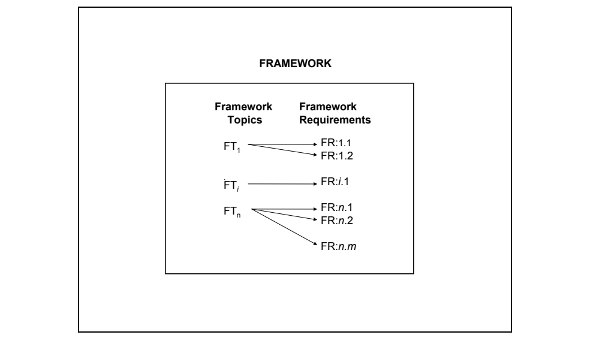
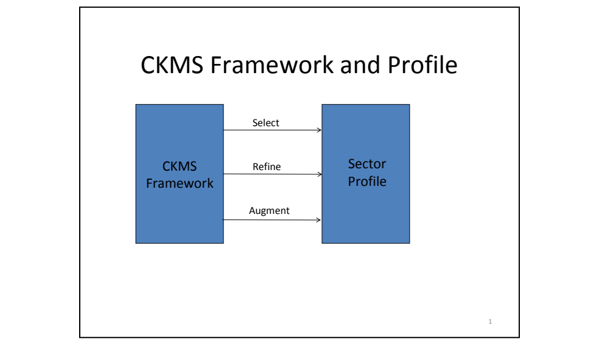
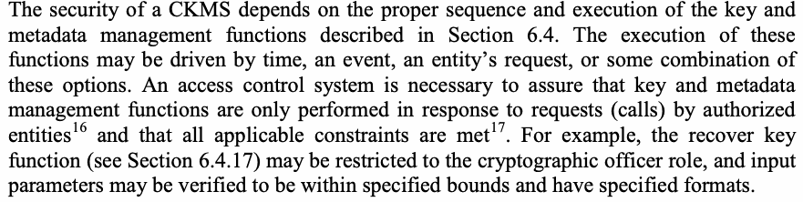

NIST SP 800-130 日本語訳
英語タイトル : A Framework for Designing Cryptographic Key Management Systems日本語タイトル : 暗号鍵管理システム設計のための枠組み
公開日 : 2013-08-15
原文URL : https://csrc.nist.gov/pubs/sp/800/130/final
翻訳編集 : 自動生成（有志による非公式の日本語訳）, 原文取得日 : 2026-09-30, 訳文 : 1369 / 1369 ブロック
[要約] SP 800-130 は、暗号鍵管理システム（CKMS）の設計者が設計仕様を作成する際に検討すべきトピックと、各トピックで扱う文書化要件を示す枠組みです。各要件に対処したCKMSは、このフレームワークに準拠した設計仕様を持つことになり、トピックの説明と要件の根拠を示す導入資料も添えられています。個々のアプリケーションや特定の種類のアプリケーションは範囲外で、読者が鍵管理の原則に関する実務知識を持つか、SP 800-57 Part 1 などで確認できることを前提としています。
NIST Special Publication 800-130
NIST特別刊行物800-130
A Framework for Designing Cryptographic Key Management Systems
A Framework for Designing Cryptographic Key Management Systems
Elaine Barker
Elaine Barker
Miles Smid
Miles Smid
Dennis Branstad
Dennis Branstad
Santosh Chokhani
Santosh Chokhani
http://dx.doi.org/10.6028/NIST.SP.800-130
http://dx.doi.org/10.6028/NIST.SP.800-130
［NIST のロゴ。公的な標章のため、この非公式サイトには掲載していない。原本 PDF を参照。］
NIST Special Publication 800-130
NIST特別刊行物800-130
A Framework for Designing Cryptographic Key Management Systems
A Framework for Designing Cryptographic Key Management Systems
Elaine Barker Computer Security Division Information Technology Laboratory
Elaine Barker コンピュータセキュリティ部門 情報技術研究所
Miles Smid Orion Security Solutions Silver, Spring, MD
Miles Smid Orion Security Solutions Silver, Spring, MD
Dennis Branstad NIST Consultant Austin, TX
Dennis Branstad、NISTコンサルタント、テキサス州オースティン
Santosh Chokhani Cygnacom McLean, VA
Santosh Chokhani、Cygnacom、バージニア州マクリーン
August 2013
2013年8月
U.S. Department of Commerce Penny Pritzker, Secretary
米国商務省 Penny Pritzker 長官
National Institute of Standards and Technology Patrick D. Gallagher, Under Secretary of Commerce for Standards and Technology and Director
米国国立標準技術研究所 Patrick D. Gallagher 標準技術担当商務次官兼所長
Authority
権限
This publication has been developed by NIST to further its statutory responsibilities under the Federal Information Security Management Act (FISMA), Public Law (P.L.) 107-347. NIST is responsible for developing information security standards and guidelines, including minimum requirements for Federal information systems, but such standards and guidelines shall not apply to national security systems without the express approval of appropriate Federal officials exercising policy authority over such systems. This guideline is consistent with the requirements of the Office of Management and Budget (OMB) Circular A-130, Section 8b(3), Securing Agency Information Systems, as analyzed in Circular A-130, Appendix IV: Analysis of Key Sections. Supplemental information is provided in Circular A-130, Appendix III, Security of Federal Automated Information Resources.
本文書は、連邦情報セキュリティマネジメント法（FISMA）、Public Law（P.L.）107-347に基づく法定責任を果たすために、NISTが作成したものです。NISTは、連邦情報システムに対する最低要件を含む情報セキュリティの標準およびガイドラインを策定する責任を負うが、そのような標準およびガイドラインは、国家安全保障システムに対する政策上の権限を行使する適切な連邦政府職員の明示的な承認なしに、国家安全保障システムには適用されません。本ガイドラインは、行政管理予算局（OMB）Circular A-130のSection 8b(3)「Securing Agency Information Systems」の要件（Circular A-130, Appendix IV: Analysis of Key Sectionsで分析されているもの）と整合しています。補足情報は、Circular A-130, Appendix III, Security of Federal Automated Information Resourcesに示されています。
Nothing in this publication should be taken to contradict the standards and guidelines made mandatory and binding on Federal agencies by the Secretary of Commerce under statutory authority. Nor should these guidelines be interpreted as altering or superseding the existing authorities of the Secretary of Commerce, Director of the OMB, or any other Federal official. This publication may be used by nongovernmental organizations on a voluntary basis and is not subject to copyright in the United States. Attribution would, however, be appreciated by NIST.
本刊行物のいかなる記述も、法定権限に基づき商務長官が連邦機関に義務付け、拘束力を持たせた標準およびガイドラインと矛盾するものと解するべきではありません。また、本ガイドラインは、商務長官、OMB長官、その他の連邦当局者の既存の権限を変更または置き換えるものと解するべきではありません。本刊行物は非政府組織が任意で利用でき、米国内では著作権の対象ではありません。ただし、NISTへの出典表示を歓迎します。
National Institute of Standards and Technology Special Publication 800-130 Natl. Inst. Stand. Technol. Spec. Publ. 800-130, 112 pages (August 2013) CODEN: NSPUE2 http://dx.doi.org/10.6028/NIST.SP.800-130
National Institute of Standards and Technology Special Publication 800-130 Natl. Inst. Stand. Technol. Spec. Publ. 800-130, 112ページ（2013年8月） CODEN: NSPUE2 http://dx.doi.org/10.6028/NIST.SP.800-130
Certain commercial entities, equipment, or materials may be identified in this document in order to describe an experimental procedure or concept adequately. Such identification is not intended to imply recommendation or endorsement by NIST, nor is it intended to imply that the entities, materials, or equipment are necessarily the best available for the purpose.
本文書では、実験的な手順または概念を適切に説明するために、特定の商業団体、機器、または材料が示されることがあります。このような記載は、NISTによる推奨または支持を意味するものではなく、また、それらの団体、材料、または機器がその目的に対して必ずしも最良のものであることを意味するものでもありません。
There may be references in this publication to other publications currently under development by NIST in accordance with its assigned statutory responsibilities. The information in this publication, including concepts and methodologies, may be used by Federal agencies even before the completion of such companion publications. Thus, until each publication is completed, current requirements, guidelines, and procedures, where they exist, remain operative. For planning and transition purposes, Federal agencies may wish to closely follow the development of these new publications by NIST.
本文書には、NISTが割り当てられた法定責任に従って現在策定中の他の文書への参照が含まれることがあります。本文書に含まれる情報は、概念や方法論を含め、それらの関連文書の完成前であっても連邦政府機関が利用してよい。したがって、各文書が完成するまでは、現行の要件、ガイドライン、および手順は、存在する場合には引き続き有効です。計画立案および移行の目的のため、連邦政府機関は、NISTによるこれらの新しい文書の策定状況を注意深く追うことが望ましい。
Organizations are encouraged to review all draft publications during public comment periods and provide feedback to NIST. All NIST Computer Security Division publications, other than the ones noted above, are available at http://csrc.nist.gov/publications.
各組織には、パブリックコメント期間中にすべての草案を確認し、NISTにフィードバックを提供することが奨励されます。上記の文書を除くNISTコンピュータセキュリティ部門のすべての文書は、http://csrc.nist.gov/publications で入手できます。
Comments on this publication may be submitted to:
本文書に関するコメントの提出先：
National Institute of Standards and Technology Attn: Computer Security Division, Information Technology Laboratory 100 Bureau Drive (Mail Stop 8930) Gaithersburg, MD 20899-8930 Email: ckmsdesignframework@nist.gov
National Institute of Standards and Technology Attn: Computer Security Division, Information Technology Laboratory 100 Bureau Drive (Mail Stop 8930) Gaithersburg, MD 20899-8930 Email: ckmsdesignframework@nist.gov
Reports on Computer Systems Technology
コンピュータシステム技術に関する報告書
The Information Technology Laboratory (ITL) at the National Institute of Standards and Technology (NIST) promotes the U.S. economy and public welfare by providing technical leadership for the Nation’s measurement and standards infrastructure. ITL develops tests, test methods, reference data, proof of concept implementations, and technical analyses to advance the development and productive use of information technology. ITL’s responsibilities include the development of management, administrative, technical, and physical standards and guidelines for the cost-effective security and privacy of other than national security-related information in Federal information systems. The Special Publication 800-series reports on ITL’s research, guidelines, and outreach efforts in information system security, and its collaborative activities with industry, government, and academic organizations.
米国国立標準技術研究所（NIST）の情報技術ラボラトリー（ITL）は、国の計測・標準インフラに対する技術的リーダーシップを提供することにより、米国経済と公共の福祉を促進しています。ITLは、情報技術の発展と生産的な利用を推進するため、試験、試験方法、参照データ、概念実証実装、および技術分析を開発しています。ITLの責務には、連邦情報システムにおける国家安全保障関連以外の情報について、費用対効果の高いセキュリティとプライバシーを実現するための、管理上、事務上、技術上および物理上の標準とガイドラインの策定が含まれます。Special Publication 800シリーズは、情報システムセキュリティに関するITLの研究、ガイドライン、アウトリーチ活動、ならびに産業界、政府、学術機関との共同活動を報告するものです。
Abstract
概要
This Framework for Designing Cryptographic Key Management Systems (CKMS) contains topics that should be considered by a CKMS designer when developing a CKMS design specification. For each topic, there are one or more documentation requirements that need to be addressed by the design specification. Thus, any CKMS that addresses each of these requirements would have a design specification that is compliant with this Framework.
この暗号鍵管理システム（CKMS）設計のためのフレームワークは、CKMSの設計者がCKMSの設計仕様を作成する際に検討すべき項目を収めています。各項目には、設計仕様で対処する必要のある文書化要件が1つ以上あります。したがって、これらの要件のそれぞれに対処したCKMSは、このフレームワークに準拠した設計仕様を持つことになります。
Keywords
キーワード
access control; confidentiality; cryptographic key management system; cryptographic keys; framework; integrity; key management policies; key metadata; source authentication.
アクセス制御、機密性、暗号鍵管理システム、暗号鍵、フレームワーク、完全性、鍵管理ポリシー、鍵メタデータ、出所認証。
Acknowledgements
謝辞
The National Institute of Standards and Technology (NIST) gratefully acknowledges and appreciates contributions by all those who participated in the creation, review, and publication of this Framework. NIST also thanks the many contributions by the public and private sectors whose thoughtful and constructive comments improved the quality and usefulness of this publication. Many useful suggestions that were made during the workshops held on CKMS at NIST in 2009, 2010, and 2012 have been incorporated in this document.
米国国立標準技術研究所（NIST）は、本フレームワークの作成、レビュー、公開に参加したすべての方々の貢献に深く感謝します。また、公共部門および民間部門から寄せられた数多くの貢献にも謝意を表します。それらの思慮深く建設的なコメントにより、本書の品質と有用性が向上しました。2009年、2010年および2012年にNISTで開催されたCKMSに関するワークショップで出された多くの有益な提案が、本書に取り入れられています。
Contents
目次
Figures
図
Tables
表
1. Introduction
1. はじめに
This Framework for Designing Cryptographic Key Management Systems (CKMS1) is a description of the topics to be considered and the documentation requirements (henceforth referred to as requirements) to be addressed when designing a CKMS. The CKMS designer satisfies the requirements by selecting the policies, procedures, components (hardware, software, and firmware), and devices (groups of components) to be incorporated into the CKMS, and then specifying how these items are employed to meet the requirements of this Framework.
この暗号鍵管理システム（CKMS1）設計フレームワークは、CKMSを設計する際に考慮すべき項目と、対処すべき文書化要件（以下、要件という）を記述したものです。CKMS設計者は、CKMSに組み込むポリシー、手順、コンポーネント（ハードウェア、ソフトウェア、およびファームウェア）、ならびにデバイス（コンポーネントのグループ）を選択し、次いでこれらの要素を本フレームワークの要件を満たすためにどのように用いるかを規定することによって、要件を満たします。
A CKMS consists of policies, procedures, components and devices that are used to protect, manage and distribute cryptographic keys and certain specific information, called (associated) metadata herein. A CKMS includes all devices or sub-systems that can access an unencrypted key or its metadata. Encrypted keys and their cryptographically protected (bound) metadata can be handled by computers and transmitted through communications systems and stored in media that are not considered to be part of a CKMS.
CKMSは、暗号鍵と、本文書で（関連する）メタデータと呼ぶ特定の情報とを保護、管理、および配布するために用いられるポリシー、手順、コンポーネント、およびデバイスから構成されます。CKMSには、暗号化されていない鍵またはそのメタデータにアクセスできるすべてのデバイスまたはサブシステムが含まれます。暗号化された鍵と、暗号によって保護された（結合された）そのメタデータは、コンピュータで扱われ、通信システムを通じて送信され、CKMSの一部とはみなされない媒体に保存されることがあります。
This CKMS Framework provides design documentation requirements for any CKMS. In other words, it describes what needs to be documented in the CKMS design. The goal of the Framework is to guide the CKMS designer in creating a complete uniform specification of the CKMS that can be used to build, procure, and evaluate the desired CKMS.
本CKMSフレームワークは、あらゆるCKMSについて設計文書化の要件を示します。言い換えれば、CKMSの設計において何を文書化する必要があるかを記述します。本フレームワークの目的は、目的とするCKMSの構築、調達、および評価に使用できる、完全で統一されたCKMSの仕様をCKMS設計者が作成できるよう導くことです。
This Framework offers the following advantages:
本フレームワークには、次の利点があります。
•a) It helps define the CKMS design task by requiring the specification of significant CKMS capabilities,
•a) 重要なCKMS機能の仕様化を求めることで、CKMS設計作業の定義に役立ちます。
•b) It encourages CKMS designers to consider the factors needed in a comprehensive CKMS,
•b) CKMS設計者に対し、包括的なCKMSに必要な要素を考慮するよう促します。
•c) It encourages CKMS designers to consider factors and mechanisms that, if properly addressed, can provide security to the system,
•c) 適切に対処すればシステムにセキュリティを提供できる要因とメカニズムを考慮するよう、CKMS設計者に促します。
•d) It can be used when logically comparing different compliant CKMS systems and their capabilities,
•d) 準拠する異なるCKMSシステムとその機能を論理的に比較する際に使用できます。
•e) It aids in performing a security assessment by requiring the specification of implemented and supported CKMS capabilities, and
•e) 実装およびサポートされるCKMS機能の仕様を求めることで、セキュリティ評価の実施を支援します。
•f) It forms the basis for a U.S. Federal CKMS Profile.
•f) 米国連邦CKMSプロファイルの基礎となります。
NIST Standards and Special Publications are referenced in this Framework as examples only. This Framework is intended to be general enough to encompass any reasonably complete and well-designed CKMS.
NIST標準および特別刊行物は、本フレームワークでは例としてのみ参照しています。本フレームワークは、合理的に完全で適切に設計されたあらゆるCKMSを包含できるよう、十分に一般的なものとして意図されています。
This Framework is not intended to be a CKMS design. That task is left to the CKMS designers. Rather, the Framework provides specification requirements using lists of options that the designers may choose to incorporate in their design.
本フレームワークはCKMSの設計そのものを示すものではありません。その作業はCKMS設計者に委ねられます。本フレームワークは、設計者が設計に取り入れる項目を選択できるよう、選択肢の一覧を用いて仕様要件を示します。
This Framework specifies documentation requirements, not security requirements. It does not mandate particular security features. The requirements of this Framework are placed on the CKMS design documentation. The Framework aids the designer by providing the essential implementation choices that form the basis of a good CKMS design. The specific choices that ensure a secure CKMS are left to the designer or to other documents, such as security profiles that are based on this Framework.
本フレームワークが規定するのは文書化要件であり、セキュリティ要件ではありません。特定のセキュリティ機能を義務付けるものではありません。本フレームワークの要件はCKMS設計文書に課されます。本フレームワークは、適切なCKMS設計の基礎となる実装上の重要な選択肢を示し、設計者を支援します。安全なCKMSを確保する具体的な選択は、設計者または本フレームワークに基づくセキュリティプロファイルなどの別文書に委ねられます。
This Framework does not mandate requirements for the protection of the information belonging to a given public or private sector (e.g., the U.S. Government, the financial industry, or health care services). It is anticipated that sectors will either develop their own profiles, or they will adopt the profiles of other sectors that fulfill their own requirements.
本フレームワークは、特定の公共部門または民間部門（例：米国政府、金融業界、医療サービス）に属する情報を保護するための要件を義務付けません。各部門が独自のプロファイルを策定するか、自部門の要件を満たす他部門のプロファイルを採用することが想定されています。
Requirements for conformance to this Framework are indicated by a “shall” statement. Recommendations are indicated by the use of “should”, but are not requirements for compliance with this Framework. The words “must” or “need(s) to” convey assumptions upon which this Framework is based, but do not constitute a specific requirement on the CKMS design documentation. In this Framework, “FR:i.j” indicates the jth Framework Requirement in Section i.
本フレームワークへの適合要件は、「shall」という記述で示します。推奨事項は「should」を用いて示すが、本フレームワークへの適合要件ではありません。「must」または「need(s) to」という語は、本フレームワークの前提を示すものであり、CKMS設計文書に対する特定の要件を構成しません。本フレームワークでは、「FR:i.j」は第i節にあるj番目のフレームワーク要件を示します。
FR:1.1 A conformant CKMS design shall meet all “shall” requirements of the Framework.
FR:1.1 適合CKMS設計は、本フレームワークのすべての「shall」要件を満たさなければなりません。
Since the requirements in this Framework are documentation requirements, it may be adequate to address a requirement by stating that the feature specified in the requirement is not implemented in the CKMS. In many requirements, the words “if, how, where, and under what circumstances” may appear. The “if” indicates a conditional requirement. If the answer to the “if” question is “no” then the designer is expected to address the requirement by indicating why the condition does not apply. If the answer to the “if” question is “yes”, then the designer is expected to address the requirement by providing the information levied by the requirement. The “how” response should address how the requirement is met (i.e., how it will be implemented, enforced, and used). The “where” response should address where (logically in the system) the implementing mechanism is located. Finally, the “under what circumstances” response addresses the conditions that must apply before the mechanism is used.
本フレームワークの要件は文書化要件であるため、要件で指定された機能がCKMSに実装されていないと記載することで、その要件に対応できる場合があります。多くの要件には「if（該当する場合）、how（どのように）、where（どこで）、under what circumstances（どのような状況で）」という語が含まれます。「if」は条件付き要件を示します。「if」の問いへの答えが「no」であれば、条件が適用されない理由を示して要件に対応することが期待されます。答えが「yes」であれば、要件が求める情報を提示して対応します。「how」への回答では、要件をどのように満たすか（すなわち、どのように実装、強制、使用するか）を説明します。「where」への回答では、実装メカニズムがシステム内の論理上どこに配置されるかを示します。最後に、「under what circumstances」への回答では、そのメカニズムを使用する前に満たされるべき条件を説明します。
A CKMS design that adequately addresses, specifies, and satisfies all the requirements specified herein can be considered as conforming to, and complying with, this Framework. A conformant CKMS design can be compared to another conformant CKMS design by examining the design specifications meeting each requirement.
本書で規定するすべての要件に適切に対応し、それらを仕様化して満たすCKMS設計は、本フレームワークに適合し、準拠していると見なすことができます。各要件を満たす設計仕様を調べることで、適合するCKMS設計同士を比較できます。
1.1 Scope of this Framework
1.1 本フレームワークの適用範囲
A CKMS will be a part of a larger information system that executes information processing applications. While the CKMS supports these applications by providing cryptographic key management services, the particular applications or particular classes of applications are beyond the scope of this Framework.
CKMSは、情報処理アプリケーションを実行するより大きな情報システムの一部となります。CKMSは暗号鍵管理サービスを提供してこれらのアプリケーションを支援するが、個々のアプリケーションおよび特定の種類のアプリケーションは本フレームワークの適用範囲外です。
Some introductory material is provided to describe the Framework topics and to justify the requirements; however, this Framework assumes that the reader has a working knowledge of the principles of key management or is able to find that information elsewhere (e.g., in [SP 800-57-part1]). Appendix A contains a list of references that are useful in understanding cryptography and cryptographic key management and their application to information security.
本フレームワークでは、トピックの説明と要件の根拠を示すために導入資料を提示します。ただし、読者は鍵管理の原則に関する実務知識を有するか、その情報を別の資料（例：[SP 800-57-part1]）で確認できることを前提とします。付録Aには、暗号および暗号鍵管理とその情報セキュリティへの適用を理解するうえで有用な参考文献を掲載します。
1.2 Audience
1.2 対象読者
This Framework is primarily intended for CKMS designers. However, it may also be used by anyone interested in a Cryptographic Key Management System design and related design specifications. It is anticipated that CKMS security analysts, procurement officials, implementers, integrators, operators, and responsible managers would be interested in the CKMS design specifications and products conforming to this Framework.
本フレームワークは主にCKMS設計者を対象とします。ただし、暗号鍵管理システムの設計および関連する設計仕様に関心がある人も利用できます。CKMSのセキュリティアナリスト、調達担当者、実装担当者、統合担当者、運用担当者、および責任者も、CKMS設計仕様と本フレームワークに準拠する製品に関心を持つことが想定されています。
CKMS designers are expected to use this Framework as a checklist for addressing all the topics covered, for considering all the aspects of a comprehensive CKMS, for selecting those policies, components, and devices to be included in a CKMS, for specifying all the decisions made in the design, and for documenting the decisions with detailed specifications and justifications. The resulting design documentation should be adequate for implementers to create the product, for integrators to incorporate the product in other products or sub-systems, and for procurement officials to understand, evaluate, and compare the product with others having similar characteristics.
CKMS設計者は、本フレームワークをチェックリストとして使用し、対象トピックすべてに対応し、包括的なCKMSのあらゆる側面を検討し、CKMSに含める方針、構成要素、装置を選択し、設計上のすべての決定を仕様化し、その決定を詳細な仕様と根拠によって文書化することが期待されます。作成される設計文書は、実装担当者が製品を作成し、統合担当者が他の製品またはサブシステムに組み込み、調達担当者が類似の特性を持つ他製品と比較・評価できるだけの十分な内容を備えるべきです。
1.3 Organization
1.3 構成
Section 1 Introduction provides an introduction to the Key Management Framework and the motivation behind it.
第1節「はじめに」では、鍵管理フレームワークとその背景を紹介します。
Section 2 Framework Basics covers basic concepts of this Framework and provides an overview of the Framework.
第2節「フレームワークの基礎」では、本フレームワークの基本概念を扱い、その概要を示します。
Section 3 Goals defines the goals of a robust CKMS.
第3節「目標」では、堅牢なCKMSの目標を定義します。
Section 4 Security Policies discusses the structure, typical contents, and need for information management, information security, CKMS security, and other related security policies.
第4節「セキュリティ方針」では、情報管理、情報セキュリティ、CKMSセキュリティなどに関する方針の構成、典型的な内容、および必要性を論じます。
Section 5 Roles and Responsibilities presents the roles and responsibilities that support a CKMS.
第5節「役割と責任」では、CKMSを支える役割と責任を示します。
Section 6 Cryptographic Keys and Metadata covers the most critical elements of a CKMS: keys and metadata, by enumerating and defining possible key types; key metadata; and key and metadata management functions, along with access control considerations, security issues and recovery mechanisms.
第6節「暗号鍵とメタデータ」では、CKMSの最も重要な要素である鍵とメタデータを扱います。考えられる鍵の種類、鍵メタデータ、鍵およびメタデータの管理機能を列挙して定義し、アクセス制御上の考慮事項、セキュリティ問題、復旧メカニズムも取り上げます。
Section 7 Interoperability and Transitioning considers the need for interoperability and the ability to easily make transitions in CKMS capabilities in order to accommodate future needs.
第7節「相互運用性と移行」では、将来のニーズに対応できるよう、相互運用性とCKMS機能を容易に移行できる能力の必要性を検討します。
Section 8 Security Controls describes security controls applicable to a typical CKMS.
第8節「セキュリティ管理策」では、一般的なCKMSに適用されるセキュリティ管理策を説明します。
Section 9 Testing and System Assurances describes security testing and assurances.
第9節「試験とシステム保証」では、セキュリティ試験および保証について説明します。
Section 10 Disaster Recovery deals with disaster recovery in general and of a CKMS specifically.
第10節「災害復旧」では、災害復旧全般と、特にCKMSの災害復旧を扱います。
Section 11 Security Assessment discusses the security assessment of a CKMS.
第11節「セキュリティ評価」では、CKMSのセキュリティ評価について論じます。
Section 12 Technology Challenges briefly discusses the technical challenges provided by new attacks on cryptographic algorithms, key establishment protocols, CKMS devices, and quantum computing.
第12節「技術的課題」では、暗号アルゴリズム、鍵確立プロトコル、CKMSデバイス、および量子コンピューティングに対する新たな攻撃がもたらす技術的課題について簡潔に論じます。
Appendix A enumerates and describes useful references.
付録Aでは、有用な参考文献を列挙し、説明します。
Appendix B consists of a glossary of terms used in this Framework.
付録Bは、本フレームワークで使用する用語の用語集です。
Appendix C provides a list of acronyms used in this Framework.
付録Cでは、本フレームワークで使用する略語一覧を示します。
2. Framework Basics
2. フレームワークの基礎
This section discusses the motivation, intent, properties, and limitations of a Cryptographic Key Management Framework.
本節では、暗号鍵管理フレームワークの動機、意図、特性、および限界について論じます。
2.1 Rationale for Cryptographic Key Management
2.1 暗号鍵管理が必要な理由
Today’s information systems and the information that they contain are considered to be critical assets that require protection. The information used by government and business is often contained in computer systems consisting of groups of interconnected computers that make use of shared networks, e.g., the Internet. Since the Internet is shared by diverse and often competing organizations and individuals, information systems should protect themselves and the information that they contain from unauthorized disclosure, modification, and use. In addition, denial of service to legitimate users could be considered a significant threat in many service and time-critical application systems and the CKMS used to protect them. Additional security requirements can be derived from the organizational goals for protecting personal privacy, including anonymity, unlinkability, and unobservability of CKMS-supported communications. The information used by these systems requires protection when it is at rest, when it is being processed within a protected facility, and also when it is transported from one location to another.
現在、情報システムとそこに含まれる情報は、保護を要する重要な資産と見なされています。政府や企業が利用する情報は、インターネットなどの共有ネットワークを利用する、相互接続されたコンピュータ群から成るコンピュータシステムに格納されることが多い。インターネットは多様で、しばしば互いに競合する組織や個人によって共有されているため、情報システムは、自身とそこに含まれる情報を、不正な開示、改変および使用から保護すべきです。さらに、正規の利用者へのサービス拒否は、多くのサービス継続性や時間厳守が重要なアプリケーションシステム、およびそれらを保護するために使用されるCKMSにとって、重大な脅威となり得ます。CKMSが支援する通信の匿名性、リンク不能性、観測不能性を含む個人のプライバシーを保護するという組織目標から、追加のセキュリティ要件を導き出すことができます。これらのシステムで使用される情報は、保存時、保護された施設内で処理される時、ならびにある場所から別の場所へ転送される時にも保護を必要とします。
Cryptography is often used to protect information from unauthorized disclosure, to detect unauthorized modification, and to authenticate the identities of system entities (e.g., individuals, organizations, devices or processes). Cryptography is particularly useful when data transmission or entity authentication occurs over communications networks for which physical means of protection (i.e., physical security techniques) are often cost-prohibitive or even impossible to implement. Thus, cryptography is widely used when business is conducted or when sensitive information is transmitted over the Internet. Cryptography can also provide a layer of protection against insiders and hackers who may have physical or possibly logical access to stored data, but not the authorization to know or modify the data (e.g., maintenance personnel or CKMS users).
暗号技術は、情報を不正な開示から保護し、不正な改変を検出し、システム主体（個人、組織、デバイス、プロセスなど）の身元を認証するためによく用いられます。通信ネットワーク上でデータ転送や主体認証を行う場合、物理的な保護手段（すなわち物理的セキュリティ技法）は費用が過大であり、実装が不可能なことさえあるため、暗号技術は特に有用です。そのため、業務を行う際や機微情報をインターネット経由で送信する際に、暗号技術が広く用いられています。暗号技術は、保存データに物理的、場合によっては論理的にアクセスできても、そのデータを知る、または改変する権限を持たない内部者やハッカー（保守担当者やCKMS利用者など）に対しても、追加の保護層を提供できます。
Cryptographic techniques use cryptographic keys that are managed and protected throughout their lifecycles by a CKMS. Effectively implemented cryptography can reduce the scope of the information management problem from the need to protect large amounts of information to the need to protect only keys and certain metadata (i.e., information about the key and its authorized uses, such as the algorithm with which the key is to be used, the security service to be provided using the key, etc.).
暗号技術では、CKMSがライフサイクル全体にわたって管理・保護する暗号鍵を使用します。暗号技術を効果的に実装すれば、大量の情報を保護する必要があるという情報管理上の課題を、鍵と特定のメタデータ（鍵およびその認可された使用方法に関する情報、たとえば鍵を使用するアルゴリズムや鍵で提供するセキュリティサービスなど）のみを保護する課題へと縮小できます。
When designing a CKMS, the cryptographic techniques used to protect the keys managed by the CKMS should offer a level of protection called the security strength that is infeasible for a would-be attacker to bypass or subvert; the security strength of the technique is the base 2 logarithm of the minimum number of operations required to cryptanalyze the algorithm, and is often measured in bits of security. This design principle is comparable to a design principle used in building safes and vaults: the designer builds the vault to a standard that would discourage a rational attacker from attempting entry; the only feasible way to open the safe is to open the safe door by trying possible combinations until the correct combination is selected. Similarly, the only way to decrypt previously encrypted data (without knowledge of the correct key) is to test possible keys until, eventually, the correct key is used to decrypt the ciphertext to obtain the correct plaintext. Just as the protection provided by a safe is dependent on the number of its possible combinations, the strength of a cryptographic algorithm is dependent on the number of possible keys.
CKMSを設計する際、CKMSが管理する鍵を保護するための暗号技術は、攻撃者が回避または無効化することが現実的に不可能なレベルの保護（セキュリティ強度と呼ばれる）を提供すべきです。その技術のセキュリティ強度とは、アルゴリズムの暗号解読に必要な操作数の最小値の2を底とする対数であり、多くの場合、セキュリティビット数で測定されます。この設計原則は、金庫や保管庫の設計原則と比較できます。設計者は、合理的な攻撃者が侵入を試みる気をなくす水準で保管庫を構築します。金庫を開ける現実的な方法は、考えられる組合せを順に試し、正しい組合せを選び当てて扉を開けることです。同様に、（正しい鍵を知らずに）以前に暗号化されたデータを復号する唯一の方法は、考えられる鍵を順に試し、最終的に正しい鍵を使って暗号文を復号し、正しい平文を得ることです。金庫の保護強度が考えられる組合せの数に依存するのと同じく、暗号アルゴリズムの強度は考えられる鍵の数に依存します。
Other means of gaining access to the contents of the safe or to the information that has been encrypted may also exist. One can drill through the safe enclosure, and one can attempt to find a shortcut method to cryptanalyze the cryptographic algorithm. Also, one can attempt to steal the correct combination or key. Safe combinations and cryptographic keys both require similar protection. The CKMS should be designed to provide the necessary protection for keys and metadata.
金庫の中身や暗号化された情報にアクセスする別の方法もあり得ます。金庫の外装に穴を開けたり、暗号アルゴリズムの暗号解読に近道となる方法を見つけようとしたりできます。また、正しい組合せや鍵を盗むことも試みられます。金庫の組合せと暗号鍵には、同様の保護が必要です。CKMSは、鍵とメタデータに必要な保護を提供するよう設計すべきです。
Cryptography can be used to provide three major types of protection to data: confidentiality, integrity, and source authentication.
暗号技術は、データに対して、機密性、完全性、および送信元認証という3つの主要な保護を提供できます。
•a) Confidentiality protection protects data from unauthorized disclosure. Encryption algorithms are used to transform plaintext data into unintelligible ciphertext, while decryption algorithms are used to transform the ciphertext back to the original plaintext. The transformations are controlled by one or more cryptographic keys so that only the authorized parties who have the keys can successfully perform the transformations.
•a) 機密性保護は、データを不正な開示から保護します。暗号化アルゴリズムは平文データを判読不能な暗号文に変換し、復号アルゴリズムは暗号文を元の平文に戻します。これらの変換は1つ以上の暗号鍵によって制御されるため、鍵を持つ認可された当事者のみが変換を正常に実行できます。
•b) Integrity protection provides mechanisms to detect unauthorized data modifications. Cryptographic authentication algorithms typically calculate an authentication code or digital signature, which is a function of the data being protected and a cryptographic key used by the algorithm. It is highly unlikely that without possession of the correct key, an entity could modify the data and compute the correct authentication code or digital signature. Therefore, unauthorized modifications of data can be detected before the modified data is used.
•b) 完全性保護は、不正なデータ改変を検出する仕組みを提供します。暗号認証アルゴリズムは通常、保護対象のデータと、そのアルゴリズムが使用する暗号鍵に基づいて、認証コードまたはデジタル署名を計算します。正しい鍵を持たない主体がデータを改変し、正しい認証コードまたはデジタル署名を計算できる可能性は極めて低い。そのため、不正なデータ改変は、改変後のデータが使用される前に検出できます。
•c) Source authentication provides assurance that the protected data came from an authorized entity. For example, suppose that a digital signature is calculated on data and is transmitted with the data. The receiver can verify the digital signature and therefore know that the data came from a particular entity. In this Framework, source authentication involves authenticating the identity of the source and then verifying that the authenticated entity is authorized to participate in the function being performed.
•c) 送信元認証は、保護対象データが認可された主体から送られたことを保証します。たとえば、データに対してデジタル署名を計算し、そのデータとともに送信する場合を考えます。受信者はデジタル署名を検証し、データが特定の主体から送られたことを確認できます。本フレームワークにおける送信元認証では、まず送信元の身元を認証し、次に認証された主体が実行中の機能に参加する権限を持つことを検証します。
These protections can be provided to any data protected by the CKMS, including keys and the associated metadata (See Section 6.2.1, items s) and t)).
これらの保護は、鍵および関連するメタデータを含め、CKMSで保護されるあらゆるデータに提供できる（第6.2.1節の項目 s) および t) を参照してください）。
Cryptographic algorithms should reside within a cryptographic module (consisting of hardware, software, firmware, or a combination thereof) which physically and logically protects its contents (e.g., the algorithms, cryptographic keys, and metadata) from unauthorized modification and disclosure. A cryptographic module is part of a CKMS and can provide cryptographic protections to keys, metadata, and user data.
暗号アルゴリズムは、その内容（アルゴリズム、暗号鍵、メタデータなど）を不正な改変や開示から物理的および論理的に保護する暗号モジュール（ハードウェア、ソフトウェア、ファームウェア、またはそれらの組合せで構成）内に配置すべきです。暗号モジュールはCKMSの一部であり、鍵、メタデータ、ユーザーデータを暗号によって保護できます。
FR:2.1 The CKMS design shall specify all cryptographic algorithms and supported key sizes for each algorithm used by the system.
FR:2.1 CKMSの設計では、システムが使用するすべての暗号アルゴリズムと、各アルゴリズムでサポートされる鍵サイズを明記しなければなりません。
FR:2.2 The CKMS design shall specify the estimated security strength of each cryptographic technique that is employed to protect keys and their bound metadata.
FR:2.2 CKMSの設計では、鍵および鍵に結び付けられたメタデータを保護するために使用する各暗号技術の推定セキュリティ強度を明記しなければなりません。
2.2 Keys, Metadata, Trusted Associations, and Bindings
2.2 鍵、メタデータ、信頼できる関連付け、および結合
A key must be associated with metadata that specifies characteristics, constraints, acceptable uses, and parameters applicable to the key. For example, a key may be associated with metadata that specifies the key type, how it was generated, when it was generated, its owner’s identifier, the algorithm for which it is intended, and its cryptoperiod. Each unit of metadata is called a metadata element. Like keys, metadata needs to be protected from unauthorized modification and may need to be protected from disclosure; the metadata also needs to have its source adequately authenticated.
鍵には、その鍵に適用される特性、制約、許容される用途、およびパラメータを指定するメタデータを関連付けなければなりません。たとえば、鍵の種類、生成方法、生成時期、所有者の識別子、鍵の用途となるアルゴリズム、および鍵の暗号期間を指定するメタデータを鍵に関連付けることができます。メタデータの各単位をメタデータ要素と呼びます。鍵と同様に、メタデータも不正な改変から保護する必要があり、開示から保護する必要がある場合もあります。また、その情報源を適切に認証する必要があります。
A metadata element may be implicitly known and therefore may not be specifically recorded for certain keys within a CKMS. For example, if all keys within a device are AES-128 keys, then a metadata element recording key sizes may not be required. However, in many systems, there is a need to differentiate one key from another using one or more explicitly recorded metadata elements. This CKMS framework focuses on those metadata elements that are explicitly recorded and managed by the CKMS. The term “metadata” is used in this context (i.e., the term “metadata” refers to explicitly recorded and managed metadata elements).
CKMS内の特定の鍵では、メタデータ要素が暗黙に知られており、明示的に記録されない場合があります。たとえば、あるデバイス内のすべての鍵がAES-128鍵であれば、鍵サイズを記録するメタデータ要素は不要な場合があります。しかし、多くのシステムでは、1つ以上の明示的に記録されたメタデータ要素を使って鍵を区別する必要があります。本CKMSフレームワークは、CKMSによって明示的に記録・管理されるメタデータ要素に焦点を当てます。この文脈で「メタデータ」という用語は、明示的に記録・管理されるメタデータ要素を指します。
There are many possible metadata elements for a given key. A trusted association, between a key and selected metadata elements, is often needed by the CKMS in order to perform key management functions. For example, it is desirable to have a trusted association between a static public key and the owner’s identifier. When used in conjunction with an owner registration process, the trusted association provides assurance that the owner that is specified by the identifier is, or was, in possession of the corresponding private key.
一つの鍵に対して、考えられるメタデータ要素は多数あります。鍵管理機能を実行するために、CKMSは鍵と選択されたメタデータ要素との間に信頼できる関連付けを必要とすることが多い。たとえば、静的公開鍵と所有者の識別子との間に、信頼できる関連付けがあることが望ましい。所有者登録プロセスと併用すると、この関連付けにより、識別子で指定された所有者が対応する秘密鍵を現在または過去に所持していたことを保証できます。
Metadata elements may be generated by the same entity that generates the key, or they may be received from a trusted entity. Whenever metadata is received from a trusted entity (whether or not the associated key is sent simultaneously) there must be a trusted association between the metadata and the associated key. The trusted association maintained during the distribution may be enforced by a cryptographic binding (binding) of the key and metadata (e.g., a digital signature computed on the combination of the key and metadata), or the association may be enforced by a trusted process (e.g., a face-to-face handover of metadata from an entity who is known and trusted). A CKMS often provides cryptographic binding and verification functions that are used in the key and metadata distribution and management processes. The receiver obtains assurance that the key and its metadata are properly associated, have come from a particular source, have not been modified, and have been protected from unauthorized disclosure during transit. Upon receipt of the metadata, the association between the key and metadata should be verified. A cryptographic binding is verified by applying the appropriate cryptographic verification function to the key and bound metadata elements. A non-cryptographic trusted association is verified by assessing the trusted process (i.e., the trust in the sending entity and the distribution process). See Figure 1 below.
メタデータ要素は、鍵を生成したものと同じ主体が生成する場合もあれば、信頼できる主体から受け取る場合もあります。信頼できる主体からメタデータを受け取る場合（関連する鍵を同時に受け取るかどうかを問わず）、そのメタデータと関連鍵との間に信頼できる関連付けがなければなりません。配布中に維持されるこの関連付けは、鍵とメタデータを暗号学的に結合する（結合）ことで強制できる（たとえば、鍵とメタデータの組合せに対するデジタル署名）。または、信頼できるプロセスによって強制することもできる（たとえば、身元が既知で信頼されている主体から、対面でメタデータを引き渡します）。CKMSは、鍵とメタデータの配布および管理プロセスで使用する暗号学的な結合機能と検証機能を提供することが多い。受信者は、鍵とそのメタデータが正しく関連付けられていること、特定の情報源から届いたこと、改変されていないこと、および転送中に不正な開示から保護されていたことを確認できます。メタデータを受け取ったら、鍵とメタデータの関連付けを検証すべきです。暗号学的な結合は、鍵と結合されたメタデータ要素に適切な暗号検証機能を適用して検証します。暗号を用いない信頼できる関連付けは、信頼できるプロセス（すなわち送信主体および配布プロセスへの信頼）を評価して検証します。下図1を参照してください。
![Figure 1: The Trusted Association and Supporting Processes. A tree diagram connected by lines without arrowheads. At the top is a box labelled "Trusted Association". It branches into two boxes: "Cryptographic (binding) Processes" on the left and "Trusted Processes" on the right. "Cryptographic (binding) Processes" branches into three shaded rounded boxes: "Encryption or Authenticated Encryption for Confidentiality", "Digital Signature, MAC, or Authenticated Encryption for Integrity and Binding" and "Digital Signature for Source Authentication". "Trusted Processes" branches into two shaded rounded boxes: "Physical/Logical Security for Confidentiality and Integrity" and "Human Credentials and/or Human Trust for Source Authentication".](assets/sp800-130/p0016-drawing-01.png)
図1：信頼できる関連付けとそれを支えるプロセス。矢じりのない線で結ばれた木構造の図である。最上部に「Trusted Association」（信頼できる関連付け）と書かれた箱がある。そこから2つの箱に分岐し、左は「Cryptographic (binding) Processes」（暗号学的（バインディング）プロセス）、右は「Trusted Processes」（信頼できるプロセス）である。暗号学的（バインディング）プロセスからは、網掛けの角丸の箱3つに分岐する。「Encryption or Authenticated Encryption for Confidentiality」（機密性のための暗号化または認証付き暗号化）、「Digital Signature, MAC, or Authenticated Encryption for Integrity and Binding」（完全性とバインディングのためのデジタル署名、MACまたは認証付き暗号化）、「Digital Signature for Source Authentication」（ソース認証のためのデジタル署名）である。信頼できるプロセスからは、網掛けの角丸の箱2つに分岐する。「Physical/Logical Security for Confidentiality and Integrity」（機密性と完全性のための物理的／論理的セキュリティ）と「Human Credentials and/or Human Trust for Source Authentication」（ソース認証のための人のクレデンシャルおよび／または人に対する信頼）である。
Figure 1: The Trusted Association and Supporting Processes
図1：信頼できる関連付けとそれを支えるプロセス
After being received, the metadata can be combined with other locally generated metadata (if available), and a new trusted association between the key and all available metadata can then be established for the information to be stored.
受信後、メタデータは、（利用可能であれば）他のローカル生成メタデータと結合できます。そのうえで、保存対象の情報について、鍵と利用可能なすべてのメタデータとの間に新たな信頼できる関連付けを確立できます。
Metadata stored within a system also needs a trusted association between the key and its metadata. Depending on the storage location and characteristics, the association could be maintained using physical security or cryptographic methods. Physical security methods include storage within a device that is trusted to maintain the association, i.e., the confidentiality (when required) and the integrity of a key and its metadata. As long as the integrity of the trusted association is maintained, one has assurance that the metadata elements belong to the associated key and have not been disclosed to unauthorized entities. However, such physical security methods might not be feasible. A physically secure storage site might be too costly or might not be available. In this case, a cryptographic binding could be required to provide assurance that a key and its metadata are properly associated.
システム内に保存されるメタデータにも、鍵とそのメタデータとの間の信頼できる関連付けが必要です。保存場所とその特性に応じて、この関連付けは物理的セキュリティまたは暗号技術によって維持できます。物理的セキュリティの方法には、鍵とそのメタデータの関連付け、すなわち機密性（必要な場合）および完全性を維持できると信頼されたデバイス内に保存する方法があります。信頼できる関連付けの完全性が維持されている限り、メタデータ要素が関連付けられた鍵に属し、権限のない主体に開示されていないことを保証できます。ただし、このような物理的セキュリティの方法は実現できない場合もあります。物理的に安全な保管場所は費用が高すぎたり、利用できなかったりする可能性があります。その場合、鍵とそのメタデータが適切に関連付けられていることを保証するために、暗号学的バインディングが必要となることがあります。
2.3 CKMS Applications
2.3 CKMSアプリケーション
A CKMS can be designed to provide services for a single individual (e.g., in a personal data storage system), an organization (e.g., in a secure VPN for intra-office communications), or a large complex of organizations (e.g., in secure communications for the U.S. Government). A CKMS can be owned or rented.
CKMSは、単一の個人（例：個人データ保存システム）、組織（例：社内通信向けのセキュアVPN）、または多数の組織から成る大規模な組織群（例：米国政府のセキュア通信）にサービスを提供するよう設計できます。CKMSは所有または賃借できます。
2.4 Framework Topics and Requirements
2.4 フレームワークのトピックと要件
This Framework contains a list of Framework Topics (FTs) (corresponding to the section headings) and, for each topic, a set of Framework Requirements (FRs) that need to be satisfied when designing a CKMS (see Figure 2 below). These requirements are placed on the CKMS design.
このフレームワークには、フレームワークトピック（FT。各節の見出しに対応）の一覧と、各トピックについて、CKMS設計時に満たす必要があるフレームワーク要件（FR）の一式が含まれる（下図2参照）。これらの要件はCKMSの設計に課されます。

図2：トピックと要件のフレームワーク。外枠の中で、「FRAMEWORK」（フレームワーク）という見出しが内側の箱の上にある。内側の箱には、左に「Framework Topics」（フレームワークトピック）、右に「Framework Requirements」（フレームワーク要件）という2つの列見出しがある。各トピックからその要件へ矢印が伸びる。FT_1からFR:1.1とFR:1.2へ、FT_iからFR:i.1へ、FT_nからFR:n.1、FR:n.2およびFR:n.mへ矢印が向かう。
Figure 2: Framework of Topics and Requirements
図2：トピックと要件のフレームワーク
This Framework does not impose any specific policies, procedures, security requirements, or system design constraints on the CKMS; it simply requires that they be documented in a structured manner so that CKMS designs can be understood and compared.
このフレームワークは、CKMSに特定の方針、手順、セキュリティ要件、またはシステム設計上の制約を課すものではありません。これらを構造化された方法で文書化し、CKMS設計を理解・比較できるようにすることだけを求めます。
This Framework is not oriented to a particular CKMS or class of CKMS for a sector (such as the U.S. Federal Government, Aerospace, Health Care, etc.). This Framework is intended to be applicable to all CKMS.
このフレームワークは、米国連邦政府、航空宇宙、医療など、特定の分野における特定のCKMSまたはCKMSの種類に限定されません。すべてのCKMSに適用できることを意図しています。
FR:2.3 A compliant CKMS design shall describe design selections and provide documentation as required by the requirements of this Framework.
FR:2.3 準拠するCKMS設計では、設計上の選択を記述し、このフレームワークの各要件が求める文書を提示しなければなりません。
2.5 CKMS Design
2.5 CKMS設計
The purpose of a CKMS design is to describe how a system can be built to provide cryptographic keys to the entities that will use those keys to protect sensitive data. The high-level description of the CKMS should indicate the uses of each key type, where and how keys are generated, how they are protected in storage at each entity where they reside and during delivery, and the types of entities to whom they are delivered.
CKMS設計の目的は、機微なデータを保護するために暗号鍵を使用するエンティティへ鍵を提供するシステムを、どのように構築できるかを説明することです。CKMSの概要説明には、各種類の鍵の用途、鍵を生成する場所と方法、鍵が保管時（鍵が所在する各エンティティにおいて）および配送中に保護される方法、ならびに鍵の配布先となるエンティティの種類を示すべきです。
Figure 3 illustrates how a CKMS Design can be shown to be compliant with this Framework. For each Framework requirement FR:i.j, the appropriate Framework response, fr:i.j, is provided by the CKMS designer to meet the requirement. The complete set of pairs consisting of requirements and responses {FR:i.j, fr:i.j} form the CKMS Design.
図3は、CKMS設計がこのフレームワークに準拠していることを示す方法を例示します。各フレームワーク要件FR:i.jに対して、CKMS設計者は、要件を満たすための対応するフレームワーク回答fr:i.jを提示します。要件と回答の組{FR:i.j, fr:i.j}全体がCKMS設計を構成します。

図3：フレームワーク適合のためのCKMS設計プロセス。中央に「Concatenation Function」（連結関数）と書かれた楕円がある。左からは、上に「{FR:i.j}」、下に「Framework Requirements」（フレームワーク要件）と書かれた矢印が楕円に入る。右からは、上に「{fr:i.j}」、下に「Responses to Requirements」（要件への回答）と書かれた矢印が楕円に入る。楕円から下向きの矢印が「{FR:i.j, fr:i.j}」へ伸び、その下に「CKMS Design」（CKMS設計）と書かれている。
Figure 3: The CKMS Design Process for Framework Conformance
図3：フレームワーク適合のためのCKMS設計プロセス
FR:2.4 The CKMS design shall specify a high-level overview of the CKMS system that includes:
FR:2.4 CKMS設計は、次の事項を含むCKMSシステムの高水準の概要を規定しなければなりません。
•a) The use of each key type,
•a) 各鍵種別の用途、
•b) Where and how the keys are generated,
•b) 鍵を生成する場所および方法、
•c) The metadata elements that are used in a trusted association with each key type,
•c) 各鍵種別との信頼された関連付けに用いるメタデータ要素、
•d) How keys and/or metadata are protected in storage at each entity where they reside,
•d) 鍵および／またはメタデータが存在する各エンティティにおいて、保管中にそれらをどのように保護するか、
•e) How keys and/or metadata are protected during distribution, and
•e) 配布中に鍵および／またはメタデータをどのように保護するか、ならびに
•f) The types of entities to which keys and/or metadata can be delivered (e.g., user, user device, network device).
•f) 鍵および／またはメタデータを配送できるエンティティの種類（例：利用者、利用者デバイス、ネットワークデバイス）。
2.6 CKMS Profiles
2.6 CKMSプロファイル
A CKMS Profile specifies requirements that a qualifying CKMS, its implementation, and its operation must meet for a particular sector of organizations, such as Federal Agencies. A CKMS Profile specifies how the CKMS must be designed, implemented, tested, evaluated, and operated. A sector is a group of organizations that have common requirements for a product, system, or service. A CKMS Profile is a set of requirements concerning security and interoperability that must be satisfied by a CKMS as implemented in an operational system. This Framework may be used to derive a specific CKMS Profile for a particular sector. As with the Framework, one or more Profile Requirements correspond to each Profile Topic.
CKMSプロファイルは、連邦機関など特定の組織部門向けに、適格なCKMS、その実装、および運用が満たさなければならない要件を規定します。CKMSプロファイルは、CKMSをどのように設計、実装、試験、評価、運用しなければならないかを定めます。部門とは、製品、システム、またはサービスに共通の要件を持つ組織の集まりです。CKMSプロファイルは、運用システムに実装されたCKMSが満たさなければならないセキュリティおよび相互運用性に関する要件一式です。本フレームワークを用いて、特定部門向けのCKMSプロファイルを導出できます。本フレームワークと同様に、各プロファイルトピックには一つ以上のプロファイル要件が対応します。
2.7 CKMS Framework and Derived Profile
2.7 CKMSフレームワークとそこから導出されるプロファイル
Figure 4 depicts the relationship between the CKMS Framework and a derived sector Profile. When deriving a CKMS Profile from a Framework, the requirements of the Framework could be augmented and refined to meet the needs of the selected sector. For example, NIST could use this Framework to develop a Federal CKMS Profile for U.S. Federal Government agencies by selecting certain standards and protocols that comply with applicable Federal Information Processing Standards (FIPS), NIST Special Publications (SPs), and guidelines as necessary to meet the refined requirements.
図4は、CKMSフレームワークとそこから導出される部門プロファイルの関係を示します。フレームワークからCKMSプロファイルを導出する際、選択した部門のニーズに合わせて、フレームワークの要件を追加・詳細化できます。たとえばNISTは、必要に応じて、適用される連邦情報処理標準（FIPS）、NIST特別刊行物（SP）、およびガイドラインに準拠する特定の標準とプロトコルを選び、本フレームワークを用いて米国連邦政府機関向けの連邦CKMSプロファイルを策定できます。

図4：CKMSフレームワークと部門プロファイルの関係。「CKMS Framework and Profile」（CKMSフレームワークとプロファイル）という表題が付いたスライド状の図である。表題の下に青い長方形が2つあり、左は「CKMS Framework」（CKMSフレームワーク）、右は「Sector Profile」（部門プロファイル）である。CKMSフレームワークから部門プロファイルへ3本の矢印が向かい、上から順に「Select」（選択）、「Refine」（詳細化）、「Augment」（拡充）と書かれている。右下隅に小さな「1」（スライド番号）がある。
Figure 4: Relationship of CKMS Framework and Sector Profile(s)
図4：CKMSフレームワークと部門プロファイルの関係
2.8 Differences between a Framework and a Profile
2.8 フレームワークとプロファイルの違い
A Framework requires that specific topics be addressed in the design of a CKMS, but it is not judgmental on the design itself. Any CKMS could be designed and specified in accordance with this Framework. On the other hand, a Profile states what requirements must be met in order to have a satisfactory CKMS for the designated using sector. A CKMS Profile makes judgments (i.e., specifies what is necessary to be implemented and used to be compliant with the Profile). CKMS that comply with this Framework may not comply with a particular profile. For example, FR:2.1 in Section 2.1 requires that the CKMS design specify all cryptographic algorithms that are used by the CKMS. A U.S. Federal CKMS Profile might require that only NIST-approved cryptographic algorithms be used.
フレームワークは、CKMSの設計で特定のトピックを扱うことを求めるが、設計自体の是非を判断するものではありません。あらゆるCKMSを本フレームワークに従って設計し、仕様化できます。一方、プロファイルは、指定された利用部門にとって満足できるCKMSとするために満たさなければならない要件を定めます。CKMSプロファイルは、プロファイルに準拠するために実装・使用すべき事項を定める（すなわち判断を示します）。本フレームワークに準拠するCKMSが、特定のプロファイルにも準拠するとは限りません。たとえば、第2.1節のFR:2.1は、CKMSで使用するすべての暗号アルゴリズムをCKMS設計に明記するよう求めます。米国連邦CKMSプロファイルでは、NIST承認済みの暗号アルゴリズムのみを使用するよう求めることがあります。
2.9 Example of a Distributed CKMS Supporting a Secure E-Mail Application
2.9 安全な電子メールアプリケーションを支援する分散CKMSの例
Figure 5 depicts a distributed CKMS that communicates among systems (shown in the figure as System A, System B, and System C) via the Internet. The CKMS consists of the union of all the CKMS modules (shown in the figure as CKMS Module A, CKMS Module B, and CKMS Module C). Each CKMS module is considered a logical entity within its system. Any parts of the system that perform CKMS functions are parts of the logical CKMS module at the time those functions are performed. In addition, parts of the CKMS module (e.g., an encryption algorithm) may be used by other applications (e.g., encrypting general data).
図5は、インターネットを介してシステム（図ではシステムA、システムB、システムC）間で通信する分散CKMSを示します。CKMSは、すべてのCKMSモジュール（図ではCKMSモジュールA、CKMSモジュールB、CKMSモジュールC）の総体から成ります。各CKMSモジュールは、それぞれのシステム内の論理エンティティと見なされます。CKMS機能を実行するシステムの部分は、その機能を実行する時点で、論理CKMSモジュールの一部となります。また、CKMSモジュールの一部（例：暗号化アルゴリズム）が、他のアプリケーション（例：一般データの暗号化）で使用されることもあります。
![Figure 5: Example CKMS Overview. Three systems, System A, System B and System C, are each drawn as a box containing a CKMS module (CKMS Module A, CKMS Module B, CKMS Module C, each in a dashed box) and a communication mechanism ("Comm. Mech."). Within each system a two-headed arrow connects the CKMS module and the Comm. Mech. Each Comm. Mech. is connected by a two-headed arrow to a central cloud labelled "Internet"; System A is at the upper left, System B at the lower left and System C at the right.](assets/130/p0020-figure-01.png)
図5：CKMSの概要の例。システムA、システムB、システムCの3つのシステムが箱として描かれ、各システムはCKMSモジュール（CKMS Module A、B、C。それぞれ破線の箱）と通信メカニズム（Comm. Mech.）を含む。各システム内で、CKMSモジュールと通信メカニズムは双方向の矢印で結ばれている。各システムの通信メカニズムは、中央の「Internet」（インターネット）と書かれた雲と双方向の矢印で結ばれている。システムAは左上、システムBは左下、システムCは右に配置されている。
Figure 5: Example CKMS Overview
図5：CKMSの概要の例
The actual communication mechanisms that interact with the other systems containing CKMS modules via the Internet are not part of the CKMS. However, the parts of protocols that perform CKMS functions (e.g., generating keys and providing key management information for insertion into the protocols) are considered part of the CKMS.
インターネットを介してCKMSモジュールを含む他のシステムと相互作用する実際の通信機構は、CKMSには含まれません。ただし、CKMSの機能を実行するプロトコルの部分（例：鍵の生成や、プロトコルに挿入する鍵管理情報の提供）は、CKMSの一部とみなします。
Figure 6 is an example of an email application that uses a distributed CKMS. The sender’s email application interfaces with the CKMS module, which generates the keys that will be used to apply the required cryptographic protection for the email data to be sent to the intended receiver via the Internet and, if required, to apply cryptographic protection to the keys that will be transported to the receiving entity. The email application then hands off the protected key and the protected data to the communication mechanism for transmission. Note that the communication mechanism may also interact with the CKMS module as discussed for Figure 5.
図6は、分散CKMSを使用する電子メールアプリケーションの例です。送信者の電子メールアプリケーションはCKMSモジュールと連携します。CKMSモジュールは、インターネット経由で意図した受信者に送信する電子メールデータに必要な暗号保護を適用するための鍵を生成し、必要に応じて、受信側のエンティティへ転送する鍵に暗号保護を適用します。その後、電子メールアプリケーションは、保護された鍵とデータを通信メカニズムに渡して送信します。図5で説明したとおり、通信メカニズムがCKMSモジュールと連携することもあります。
The communication mechanism in the sender’s system interacts with its CKMS module, as appropriate, prior to sending the cryptographically protected email to the email application. The email application sends the protected key to its local CKMS module to obtain the key that will subsequently be used to process the protected email data.
送信側システムの通信メカニズムは、暗号保護された電子メールを電子メールアプリケーションに送る前に、必要に応じてそのCKMSモジュールと連携します。電子メールアプリケーションは、保護された電子メールデータの処理に後で使用する鍵を取得するため、保護された鍵をローカルのCKMSモジュールに送ります。
![Figure 6: Example of a Secure Email Application. Three facilities, Facility A, Facility B and Facility C, are each drawn as a box containing a CKMS subsystem ("CKMS Sub-system A", "B", "C", each in a dashed box), an Email application and a communication mechanism ("Comm. Mech."). Within each facility, a two-headed arrow connects the CKMS subsystem and Email, and another two-headed arrow connects Email and the Comm. Mech.; the CKMS subsystem is not directly connected to the Comm. Mech. Each Comm. Mech. is connected by a two-headed arrow to a central cloud labelled "Internet"; Facility A is at the upper left, Facility B at the lower left and Facility C at the right.](assets/130/p0021-figure-01.png)
図6：安全な電子メールアプリケーションの例。施設A、施設B、施設Cの3つの施設が箱として描かれ、各施設はCKMSサブシステム（CKMS Sub-system A、B、C。それぞれ破線の箱）、電子メール（Email）および通信メカニズム（Comm. Mech.）を含む。各施設内では、CKMSサブシステムと電子メールが双方向の矢印で結ばれ、電子メールと通信メカニズムも双方向の矢印で結ばれている。CKMSサブシステムと通信メカニズムは直接には結ばれていない。各施設の通信メカニズムは、中央の「Internet」（インターネット）と書かれた雲と双方向の矢印で結ばれている。施設Aは左上、施設Bは左下、施設Cは右に配置されている。
Figure 6: Example of a Secure Email Application
図6：安全な電子メールアプリケーションの例
2.10 CKMS Framework Components and Devices
2.10 CKMSフレームワークの構成要素と装置
This CKMS Framework uses the term “component” to mean the hardware, software, and/or firmware required to construct the CKMS. The term “device” denotes a combination of components that serve a specific purpose. A CKMS can be as simple as a software program running on a single-user computer and supporting user applications. It can also be as complex as a variety of sub-systems, each containing many devices that provide key management services to numerous networked users and applications. A CKMS can be implemented in a single computer, or it may be widely distributed geographically and connected with a myriad of communications networks. Processors, communications media, storage units, etc. are all considered devices in this Framework.
本CKMSフレームワークでは、「構成要素」とはCKMSの構築に必要なハードウェア、ソフトウェア、および／またはファームウェアを指します。「装置」とは、特定の目的を果たす構成要素の組み合わせを指します。CKMSは、単一ユーザーのコンピュータ上で動作し、ユーザーアプリケーションを支援するソフトウェアプログラムのように単純な場合もあります。また、多数のネットワーク接続ユーザーやアプリケーションに鍵管理サービスを提供する多数の装置をそれぞれ含む複数のサブシステムから成る、複雑なものの場合もあります。CKMSは単一のコンピュータに実装することも、地理的に広く分散させ、多数の通信ネットワークで接続することもできます。本フレームワークでは、プロセッサ、通信媒体、記憶装置などをすべて装置と見なします。
A CKMS can be described as a set of policies, procedures, devices, and components that are designed to protect, manage, and establish cryptographic keys and metadata. The CKMS provides a set of functions that perform cryptographic key-management services on behalf of one or more organizations and their users. Collectively, these functions are presented as items for specification in a CKMS design (see Section 6.4).
CKMSは、暗号鍵およびメタデータを保護、管理、確立するために設計された方針、手順、装置、構成要素の集合として記述できます。CKMSは、一つ以上の組織とその利用者に代わって暗号鍵管理サービスを提供する一連の機能を備えます。これらの機能は総体としてCKMS設計で仕様化する項目として示される（第6.4節参照）。
FR:2.5 The CKMS design shall specify all major devices of the CKMS (e.g., the make, model, and version).
FR:2.5 CKMSの設計では、CKMSのすべての主要装置（例：製造元、モデル、バージョン）を指定しなければなりません。
3. Goals
3. 目標
A CKMS should be designed to achieve specific goals. Some possible goals are discussed in this section.
CKMSは特定の目標を達成するよう設計すべきです。本節では、考えられる目標のいくつかを論じます。
3.1 Providing Key Management to Networks, Applications, and Users
3.1 ネットワーク、アプリケーション、および利用者への鍵管理の提供
There is an extensive use of cryptography in several security protocol standards (e.g., TLS, IKE, SSH, CMS), where both static keys (i.e., long-term keys) and ephemeral keys (i.e., keys used only for a single session or key management transaction) are used by the protocols themselves. While the focus of a CKMS is on the generation, distribution and storage of the static keys, a CKMS design must also include the generation, storage, and protection of the employed ephemeral keys as well.
複数のセキュリティプロトコル規格（TLS、IKE、SSH、CMSなど）では暗号技術が広く使用されており、各プロトコル自体が静的鍵（すなわち長期鍵）と一時鍵（すなわち単一のセッションまたは鍵管理トランザクションにのみ使用される鍵）の両方を使用します。CKMSの焦点は静的鍵の生成、配布および保管にあるが、CKMSの設計には、使用される一時鍵の生成、保管および保護も含めなければなりません。
The network over which the CKMS operates forms the communications backbone of the CKMS. The CKMS designer needs to understand the efficiency and reliability of the network so that the CKMS can be designed to have minimal negative impact on the network. The network size and scalability will provide some indication as to the number of users that the CKMS will need to handle both initially and in the future. Network characteristics, such as error properties, may also influence the selection of the cryptographic algorithms and cryptographic modes of operation that may extend (or worsen) the effects of communication errors after decryption is performed.
CKMSが動作するネットワークは、CKMSの通信基盤を形成します。CKMS設計者は、ネットワークへの悪影響を最小限に抑えるようCKMSを設計できるよう、ネットワークの効率と信頼性を理解する必要があります。ネットワークの規模と拡張性は、CKMSが初期段階および将来に処理する必要のある利用者数を見積もる手掛かりとなります。エラー特性などのネットワーク特性も、暗号アルゴリズムや暗号動作モードの選択に影響することがあります。これらの選択によって、復号後に通信エラーの影響が拡大（または悪化）する可能性があります。
A CKMS can be built to serve a particular application (e.g., E-Mail, data storage, healthcare systems, and payment systems), or it can be designed to serve an entire enterprise, which encompasses many applications. A CKMS designed for a single application tends to be specifically designed for and closely integrated into the application, while an enterprise CKMS should be more generic so that common key-management functions may be shared as much as possible. A CKMS designer needs to have a good understanding of the application(s) that are to be supported, since they will likely affect the design choices.
CKMSは、特定のアプリケーション（電子メール、データ保管、医療システム、決済システムなど）にサービスを提供するよう構築することも、多数のアプリケーションを含む組織全体にサービスを提供するよう設計することもできます。単一アプリケーション向けのCKMSは、そのアプリケーション専用に設計され、緊密に統合される傾向があります。一方、組織全体向けのCKMSは、共通の鍵管理機能をできる限り共有できるよう、より汎用的であるべきです。CKMS設計者は、支援対象となるアプリケーションをよく理解する必要があります。それらは設計上の選択に影響する可能性が高いためです。
The CKMS designer should also study the potential users of the system. How many users will use the CKMS and for what purposes? Are the users mobile or stationary? Do the users need to be knowledgeable about the CKMS, or will it be transparent to them? Are users operating under stressful conditions, where time is of the essence in performing their jobs? Some CKMS have failed because the designer assumed that the user understood the purpose and importance of cryptographic keys and public key certificates. If users are hampered from doing their work by a CKMS, then the CKMS will likely not be a successful security solution because it will not be used.
CKMS設計者は、システムの潜在的な利用者についても調査すべきです。CKMSを利用する人数と目的は何か。利用者は移動するのか、それとも固定されているのか。利用者はCKMSについて詳しい必要があるのか、それとも意識せずに使えるのか。仕事の遂行に時間が重要となる、強いストレス下で利用者が作業するのか。一部のCKMSは、利用者が暗号鍵や公開鍵証明書の目的と重要性を理解していると設計者が思い込んだため、失敗しています。CKMSによって利用者の業務が妨げられるなら、利用されなくなるため、そのCKMSはセキュリティソリューションとして成功しない可能性が高い。
The goal of the CKMS designer is to specify a set of security mechanisms that function well together, provide a desired level of security that meets the needs of the application(s) and using organization(s), are affordable, and have a minimum negative impact on operations. These, as well as other CKMS goals, should be considered before a CKMS is designed, implemented, and operated.
CKMS設計者の目標は、相互に適切に機能し、アプリケーションおよびそれを使用する組織のニーズを満たす所望のセキュリティレベルを提供し、費用が手頃で、運用への悪影響が最小限となる一連のセキュリティ機構を仕様化することです。これらの目標やその他のCKMSの目標は、CKMSの設計、実装および運用に先立って検討すべきです。
FR: 3.1 The CKMS design shall specify its goals with respect to the communications networks on which it will function.
FR: 3.1 CKMSの設計では、その動作対象となる通信ネットワークに関する目標を明記しなければなりません。
FR:3.2 The CKMS design shall specify the intended applications that it will support.
FR:3.2 CKMSの設計では、支援する予定のアプリケーションを明記しなければなりません。
FR:3.3 The CKMS design shall list the intended number of users and the responsibilities that the CKMS places on those users.
FR:3.3 CKMSの設計では、想定する利用者数と、CKMSが利用者に課す責任を列挙しなければなりません。
3.2 Maximize the Use of COTS in a CKMS
3.2 CKMSにおけるCOTSの最大限の活用
Customers generally prefer Commercial Off-The-Shelf (COTS) products. Such products are often less costly to acquire, operate, and maintain than custom products designed and built for a single customer. However, COTS products designed and built to satisfy the “least common denominator” requirements of a large number of customers may not completely satisfy any of the customers. If the CKMS designer uses products that meet a range of requirements in a specific market sector, the CKMS will be more likely to be accepted in that market.
顧客は一般に、商用既製品（Commercial Off-The-Shelf: COTS）を好みます。こうした製品は、単一の顧客向けに設計・製造される特注品よりも、調達、運用、保守の費用が低いことが多い。しかし、多数の顧客に共通する「最大公約数」的な要件を満たすよう設計・製造されたCOTS製品は、どの顧客の要件も完全には満たさない場合があります。特定の市場分野における幅広い要件を満たす製品をCKMS設計者が採用すれば、その市場でCKMSが受け入れられる可能性が高まります。
Using standard interfaces generally improves the extensibility of the product. Extensions and improvements should be allowed and supported by the COTS design of a CKMS so that the CKMS can be configured to meet varying functional and workload demands, including those based on the number of users, transactions, keys, and application data.
標準インターフェースを使用すると、一般に製品の拡張性が向上します。利用者数、トランザクション数、鍵の数、アプリケーションデータ量などに基づくさまざまな機能上および作業負荷上の要求にCKMSを適合させられるよう、CKMSのCOTS設計では拡張や改良を許容し、支援すべきです。
FR:3.4 The CKMS design shall specify the COTS products used in the CKMS.
FR:3.4 CKMSの設計では、CKMSで使用するCOTS製品を明記しなければなりません。
FR:3.5 The CKMS design shall specify which security functions are performed by COTS products.
FR:3.5 CKMSの設計では、COTS製品が実行するセキュリティ機能を明記しなければなりません。
FR:3.6 The CKMS design shall specify how COTS products are configured and augmented to meet the CKMS goals.
FR:3.6 CKMSの設計では、CKMSの目標を満たすためにCOTS製品をどのように構成し、機能拡張するかを明記しなければなりません。
3.3 Conformance to Standards
3.3 規格への適合
Much can be learned about a CKMS by examining the extent to which it utilizes applicable standards. Designs that comply with standards have the benefit of the experience and wisdom of those who developed the standards. In addition, if the standards have validation programs that measure compliance, there is increased confidence that the CKMS has been correctly implemented. See Appendix A for a list of appropriate standards with a brief description of each.
適用可能な規格をどの程度利用しているかを調べることで、CKMSについて多くのことが分かります。規格に準拠する設計は、その規格の策定者が積み重ねた経験と知見を活用できます。また、規格への適合性を測定する検証プログラムがあれば、CKMSが正しく実装されているという信頼性が高まります。適切な規格とその概要については、付録Aを参照してください。
Standards specify how something shall or should be done. Multiple vendors can build to the same standard and, thereby, foster interoperability and competition. In addition, the use of standards often increases confidence in the product or implementation. There is increased confidence in a standard that was developed and reviewed by multiple parties working together. Complying with standards may also reduce the time-to-production for a product or the time-to-operation for an implementation, since the essential concepts do not have to be re-invented. Conformance-testing laboratories are useful in that errors in implementations may be found and eliminated before products are available in the marketplace.
規格は、物事をどのように実施しなければならないか、またはどのように実施すべきかを定めます。複数のベンダーが同じ規格に従って構築できるため、相互運用性と競争が促進されます。また、規格を使用すると、製品や実装に対する信頼性が高まることが多い。複数の関係者が協力して策定・レビューした規格は、より信頼性が高い。規格に準拠すれば、製品化までの時間や実装の運用開始までの時間も短縮できる場合があります。これは、重要な概念を一から考え直す必要がないためです。適合性試験機関は、実装上の誤りを製品の市場投入前に発見し、除去できるため有用です。
FR:3.7 The CKMS design shall specify the Federal, national, and international standards that are utilized by the CKMS.
FR:3.7 CKMSの設計では、CKMSが利用する連邦規格、国内規格、および国際規格を明記しなければなりません。
The availability of commercial products that conform to one or more standards in a CKMS architecture can greatly reduce the time and cost of producing a CKMS. The up-front cost of a conformance-tested product is likely to be more than offset by the saved costs of not having to adapt a non-conforming product or to build a similar product from scratch.
CKMSアーキテクチャで1つ以上の規格に適合する市販製品を利用できれば、CKMSの開発にかかる時間と費用を大幅に削減できます。適合性試験済み製品の初期費用は、非適合製品を適合させたり同等の製品を一から構築したりせずに済むことで節約される費用によって、十分に上回って埋め合わせられる可能性が高い。
FR:3.8 For each standard utilized by the CKMS, the CKMS design shall specify which CKMS devices implement the standard.
FR:3.8 CKMSが利用する各規格について、どのCKMS装置がその規格を実装するかをCKMSの設計で明記しなければなりません。
FR:3.9 For each standard utilized by the CKMS, the CKMS design shall specify how conformance to the standard was validated (e.g., by a third party testing program).
FR:3.9 CKMSが利用する各規格について、その規格への適合性をどのように検証したか（例：第三者試験プログラムによる検証）をCKMSの設計で明記しなければなりません。
3.4 Ease-of-use
3.4 使いやすさ
Possibly the most significant constraint to the use of a CKMS is the difficulty that some systems present to the untrained user. Since most users are not cryptographic security experts, and security is often a secondary goal for them, the CKMS needs to be as transparent as possible. User interfaces that adapt to the expertise of the user can guide a new and less-trained user, while permitting an expert to use efficient short cuts and to bypass step-by-step guidance.
おそらくCKMSの利用に対する最も重大な制約は、一部のシステムが未訓練の利用者にとって難しいことです。ほとんどの利用者は暗号セキュリティの専門家ではなく、セキュリティを二次的な目標と見なすことも多いため、CKMSは可能な限り利用者に意識させないものである必要があります。利用者の習熟度に合わせて調整されるユーザーインターフェースは、初心者や経験の浅い利用者を案内しながら、専門家には効率的な近道を利用し、段階的な案内を省略できるようにします。
3.4.1 Accommodate User Ability and Preferences
3.4.1 利用者の能力と好みへの対応
Ease-of-use is very subjective. Something easy or obvious for one person may not be easy or obvious for another. Designers should keep in mind that users are not usually security experts, so they may not understand the purpose of the security feature that they are using. Since security is not usually the primary purpose of the product, transparent security is desirable. Negative experiences will likely affect the acceptance and use of a product. Therefore, a large segment of the potential user population needs to be satisfied that a security product is easy to use.
使いやすさの感じ方は非常に主観的です。ある人にとって簡単または明白なことが、別の人にとっても簡単または明白とは限りません。設計者は、利用者が通常セキュリティの専門家ではなく、使用するセキュリティ機能の目的を理解していない可能性があることを念頭に置くべきです。セキュリティは通常、製品の主要な目的ではないため、利用者が意識しないで済むセキュリティが望ましい。利用者の否定的な体験は、製品の受容や利用に影響する可能性が高い。そのため、潜在的な利用者層の大部分が、セキュリティ製品を使いやすいと納得できる必要があります。
FR:3.10 The CKMS design shall specify all user interfaces to the system.
FR:3.10 CKMSの設計では、システムに対するすべてのユーザーインターフェースを明記しなければなりません。
FR:3.11 The CKMS design shall specify the results of any user-acceptance tests that have been performed regarding the ease of using the proposed user interfaces.
FR:3.11 CKMSの設計では、提案するユーザーインターフェースの使いやすさについて実施したユーザー受け入れテストの結果を明記しなければなりません。
3.4.2 Design Principles of the User Interface
3.4.2 ユーザーインターフェースの設計原則
While ease-of-use may be highly subjective and difficult to evaluate, several design principles for achieving this goal have been established. Ease-of-use design goals should assure that:
使いやすさは非常に主観的で評価が難しい場合があるが、この目標を達成するための設計原則がいくつか確立されています。使いやすさに関する設計目標では、次の点を確保すべきです。
•a) It is intuitive and easy to do the right thing using the CKMS. For example, key management function calls should be intuitively named.
•a) CKMSを使用して正しい操作を行うことが直感的で容易です。例えば、鍵管理機能の呼出しには直感的に分かる名前を付けるべきです。
•b) It is difficult to do the wrong thing using the system. For example, the CKMS should not permit encryption using a signature-only key.
•b) システムを使用して誤った操作を行うことが難しい。例えば、CKMSは署名専用鍵を用いた暗号化を許可すべきではありません。
•c) It is intuitive and easy to recover when a wrong thing is done. For example, the CKMS should provide an undo function that reverses the previous function.
•c) 誤った操作をした場合に、直感的かつ容易に回復できます。例えば、CKMSは直前の機能を取り消すアンドゥ機能を提供すべきです。
This approach reduces the total lifecycle cost by reducing user support costs.
この方法は、利用者サポートの費用を削減し、ライフサイクル全体の費用を低減します。
FR:3.12 The CKMS design shall specify the design principles of the user interface.
FR:3.12 CKMSの設計では、ユーザーインターフェースの設計原則を明記しなければなりません。
FR:3.13 The CKMS design shall specify all human error-prevention or failsafe features designed into the system.
FR:3.13 CKMSの設計では、システムに組み込まれたすべての人的誤り防止機能またはフェイルセーフ機能を明記しなければなりません。
3.5 Performance and Scalability
3.5 性能と拡張性
Performance improvements in computing and communications are major success stories in the computer industry. As performance improves, new applications require that even faster processing and communications be available. In the past, large key-distribution centers often serviced a maximum of several thousand security subscribers. Now, millions of people use the Internet regularly with ever-increasing demands, including new demands for security and for cryptographic keys. The need for secure processing, data storage and communications will continue to grow. This growth will require a CKMS to be scalable in order to meet the growing workload.
コンピューティングおよび通信の性能向上は、コンピュータ業界における大きな成功事例です。性能が向上するにつれて、新しいアプリケーションは、さらに高速な処理および通信を利用できることを求めます。以前は、大規模な鍵配布センターがサービスを提供するセキュリティ加入者は、多くても数千人であることが多かった。現在では、何百万人もの人々がインターネットを日常的に利用し、セキュリティや暗号鍵に関する新たな需要を含め、要求は増え続けています。安全な処理、データ保管および通信の必要性は今後も高まり続けます。この増加する作業負荷に対応するため、CKMSには拡張性が必要となります。
FR:3.14 The CKMS design shall specify the performance characteristics of the CKMS, including the average and peak workloads that can be handled for the types of functions and transactions implemented, and the response times for the types of functions and transactions under those respective workloads.
FR:3.14 CKMS設計では、実装する機能およびトランザクションの種類ごとに処理可能な平均およびピークの作業負荷と、それぞれの作業負荷における当該機能およびトランザクションの応答時間を含め、CKMSの性能特性を明記しなければなりません。
FR:3.15 The CKMS design shall specify the techniques that are supported and can be used to scale the system to increased workload demands.
FR:3.15 CKMS設計では、作業負荷の需要増加に合わせてシステムを拡張するためにサポートされ、使用可能な技法を明記しなければなりません。
FR:3.16 The CKMS design shall specify the extent to which the CKMS can be scaled to meet increased workload demands. This shall be expressed in terms of additional workload, response times for the workload, and cost.
FR:3.16 CKMS設計では、作業負荷の需要増加に対応するためにCKMSをどの程度拡張できるかを明記しなければなりません。これは、追加される作業負荷、その作業負荷に対する応答時間、およびコストで表さなければなりません。
4. Security Policies
4. セキュリティ方針
A CKMS must be designed in a manner that supports the goals of each organization using the CKMS. Several types of policies will influence the design and use of a CKMS.
CKMSは、それを利用する各組織の目標を支援する方法で設計しなければなりません。複数の種類の方針がCKMSの設計および利用に影響します。
An organization may have different policies covering different applications or categories of information. For example, a military-related organization may have one set of policies covering classified information and a totally different set of policies covering personnel information.
組織は、異なるアプリケーションまたは情報カテゴリーを対象とする複数の方針を持つ場合があります。例えば、軍事関連組織は、機密情報を対象とする方針一式と、人事情報を対象とする全く異なる方針一式を持つことがあります。
An organization often creates and relies on layered policies, with high-level policies addressing issues at the information-management level and lower-level policies addressing specific rules for data-protection. A physical security policy may be specified in one document, and a communication security policy may be specified in another document. Computer systems are often built in accordance with their own computer security policy.
組織はしばしば階層化された方針を作成してこれに依拠します。上位の方針は情報管理レベルの課題を扱い、下位の方針はデータ保護に関する具体的な規則を扱います。物理セキュリティ方針がある文書に、通信セキュリティ方針が別の文書に規定されることがあります。コンピュータシステムは、それぞれ独自のコンピュータセキュリティ方針に従って構築されることが多い。
Layers of policies (e.g., information management, information security, physical security, computer security, communications security, and cryptographic key security) interrelate in many ways. Intermediate and lower layers of a policy hierarchy should provide more details on implementation and enforcement than the next higher layer. For example, an organizational Information Management Policy specifying that information must be protected against unauthorized disclosure should result in an Information Security Policy specifying the restriction of access to and use of the information only to properly identified and authorized people.
方針の各層（例えば、情報管理、情報セキュリティ、物理セキュリティ、コンピュータセキュリティ、通信セキュリティ、および暗号鍵セキュリティ）は、さまざまな形で相互に関係します。方針階層の中間層および下位層は、直上の層よりも実装および実施に関する詳細を示すべきです。例えば、情報を不正な開示から保護する必要があると定める組織の情報管理方針は、適切に本人確認され、認可された者だけに情報へのアクセスおよび利用を制限する情報セキュリティ方針につながるべきです。
An organization may use a hierarchy of policies that will determine their requirements for a CKMS. Figure 7 provides an example of the policies that may be used and their relationships. Further discussion about these policies is provided in the following subsections.
組織は、CKMSに関する要件を決定する方針階層を用いることがあります。図7に、使用される可能性のある方針とその相互関係の例を示します。これらの方針については、以下の各節でさらに説明します。
![Figure 7: Related Security Policies. Three light-blue boxes descend like stairs from upper left to lower right: "Information Management Policy", "Information Security Policy" and "CKMS Security Policy"; at the lower right is a stack of three document-shaped boxes, "Other Related Security Policies". Each adjacent pair is joined by a thick arrow pointing down the stairs and a thick arrow pointing back up. Thin input arrows enter each policy from the left: "Industry Standards" and "Organizational Objectives" into the Information Management Policy; "Threats to Information" and "Risks of Information Disclosure, Modification, Loss" into the Information Security Policy; "Cryptographic Algorithms" and "Applicable CKMS Profiles" into the CKMS Security Policy; and "Technical Threats to Data" and "Technical Security Standards" into the Other Related Security Policies. Double-line arrows lead out to the right to derived requirements: "Mgt. Roles & Responsibilities" and "Information Assurance Goals" from the Information Management Policy; "Data Labels/ Sensitivity Levels" and "Rules for Administrative Protection" from the Information Security Policy; and "CKM Requirements" and "Key/Metadata Protection" from the CKMS Security Policy. A legend at the bottom left explains the arrows: a thick right-pointing arrow, "Derives/Directs lower, more specific, policy"; a thick left-pointing arrow, "Supports/Enforces higher, more general, policy"; a thin arrow, "Inputs to Policy Making/Makers"; and a double-line arrow, "Policy Derived Requirements".](assets/sp800-130/p0027-drawing-01.png)
図7：関連するセキュリティ方針。水色の箱3つが左上から右下へ階段状に並ぶ。「Information Management Policy」（情報管理方針）、「Information Security Policy」（情報セキュリティ方針）、「CKMS Security Policy」（CKMSセキュリティ方針）であり、右下には文書の形をした箱が3枚重なった「Other Related Security Policies」（その他の関連するセキュリティ方針）がある。隣り合う方針どうしは、階段を下る向きの太い矢印と上る向きの太い矢印で結ばれている。各方針には左から細い入力の矢印が入る。情報管理方針には「Industry Standards」（業界標準）と「Organizational Objectives」（組織目標）、情報セキュリティ方針には「Threats to Information」（情報に対する脅威）と「Risks of Information Disclosure, Modification, Loss」（情報の開示、改変、喪失のリスク）、CKMSセキュリティ方針には「Cryptographic Algorithms」（暗号アルゴリズム）と「Applicable CKMS Profiles」（適用可能なCKMSプロファイル）、その他の関連するセキュリティ方針には「Technical Threats to Data」（データに対する技術的脅威）と「Technical Security Standards」（技術セキュリティ標準）が入る。また、二重線の矢印が右へ伸び、導出される要件を示す。情報管理方針からは「Mgt. Roles & Responsibilities」（管理上の役割と責任）と「Information Assurance Goals」（情報保証目標）、情報セキュリティ方針からは「Data Labels/ Sensitivity Levels」（データラベル／機微度レベル）と「Rules for Administrative Protection」（管理上の保護に関する規則）、CKMSセキュリティ方針からは「CKM Requirements」（CKM要件）と「Key/Metadata Protection」（鍵／メタデータの保護）である。左下の凡例は矢印の意味を示す。右向きの太い矢印は「Derives/Directs lower, more specific, policy」（より下位で具体的な方針を導出／指示する）、左向きの太い矢印は「Supports/Enforces higher, more general, policy」（より上位で一般的な方針を支援／実施する）、細い矢印は「Inputs to Policy Making/Makers」（方針策定／策定者への入力）、二重線の矢印は「Policy Derived Requirements」（方針から導出される要件）を表す。
Figure 7: Related Security Policies
図7：関連するセキュリティ方針
4.1 Information Management Policy
4.1 情報管理方針
An organization’s Information Management Policy specifies what information is to be collected or created, and how it is to be managed. An organization’s management establishes this policy using industry standards of good practices, legal requirements regarding the organization’s information, and organizational goals that must be achieved using the information that the organization will be collecting and creating.
組織の情報管理方針は、どの情報を収集または作成するか、またそれをどのように管理するかを定めます。組織の管理者は、適切な慣行に関する業界標準、組織の情報に関する法的要件、および収集・作成する情報を用いて達成すべき組織目標に基づき、この方針を策定します。
An Information Management Policy typically identifies management roles and responsibilities and establishes the authorization required for people performing these information-management duties. It also specifies what information is to be considered valuable and sensitive and how it is to be protected. In particular, this highest policy layer specifies what categories of information need to be protected against unauthorized disclosure, modification or destruction. These specifications form the foundation for an Information Security Policy and dictate the levels of confidentiality, integrity, availability, and source-authentication protections that must be provided for differing categories of sensitive and valuable information.
情報管理方針では通常、管理上の役割と責任を特定し、情報管理業務を行う人に必要な認可を定めます。また、どの情報を価値が高く機微なものとみなし、どのように保護するかを規定します。特に、この最上位の方針層では、不正な開示、改変または破壊から保護すべき情報のカテゴリを定めます。これらの規定は情報セキュリティ方針の基礎となり、機微で価値の高い情報の各カテゴリに応じて提供すべき機密性、完全性、可用性およびソース認証の保護レベルを決定します。
4.2 Information Security Policy
4.2 情報セキュリティ方針
An organization’s Information Security Policy is created to support and enforce portions of the organization’s Information Management Policy by specifying in more detail what information is to be protected from anticipated threats and how that protection is to be attained. The rules for collecting, protecting, and distributing valuable and sensitive information in both paper and electronic form are specified in this layer of policy. The inputs to the Information Security Policy include, but are not limited to, the Information Management Policy specifications, the potential threats to the security of the organization’s information, and the risks involved with the unauthorized disclosure, modification, and destruction or loss of the information.
組織の情報セキュリティ方針は、何の情報を予想される脅威から保護し、その保護をどのように実現するかをより詳細に定めることで、組織の情報管理方針の一部を支援し、実施するために作成されます。この方針層では、紙媒体と電子媒体の両方にある価値が高く機微な情報を収集、保護、配布するための規則を定めます。情報セキュリティ方針の策定に用いる情報には、情報管理方針の規定、組織の情報に対する潜在的な脅威、ならびに情報の不正な開示、改変、破壊または喪失に伴うリスクが含まれるが、これらに限られません。
The outputs of the Information Security Policy layer include information sensitivity levels (e.g., low, medium, and high) assigned to various categories of information and high-level rules for protecting the information. The Information Security Policy may also be used to create a CKMS Security Policy that specifies the use and protection of cryptographic keys, algorithms, and mechanisms that provide confidentiality and integrity protection of the keys and their metadata for the organization.
情報セキュリティ方針層の成果には、さまざまな情報カテゴリに割り当てられる機微度レベル（例：低、中、高）と、情報を保護するための上位レベルの規則が含まれます。また、情報セキュリティ方針を用いてCKMSセキュリティ方針を作成することもできます。この方針は、組織の鍵およびそのメタデータの機密性と完全性を保護する暗号鍵、アルゴリズム、メカニズムの使用と保護を定めます。
4.3 CKMS Security Policy
4.3 CKMSセキュリティ方針
The CKMS Security Policy specifies rules for the protection of keys and metadata that the CKMS must support. A CKMS Security Policy needs to establish and specify rules for protecting the confidentiality, integrity, availability, and source authentication of all cryptographic keys and metadata used by the CKMS. These rules cover the entire key lifecycle, including when they are operational, stored, and transported. The CKMS Security Policy may include the selection of all cryptographic mechanisms and cryptographic protocols that can be used by the CKMS. The CKMS Security Policy needs to be consistent with the higher-level policies of the organization. For example, if the Information Security Policy states that the confidentiality of electronically transmitted information is to be protected for up to 30 years, then the CKMS Security Policy and the CKMS design must be capable of supporting that policy.
CKMSセキュリティ方針は、CKMSが支援しなければならない、鍵とメタデータの保護規則を定めます。この方針では、CKMSが使用するすべての暗号鍵とメタデータについて、機密性、完全性、可用性およびソース認証を保護する規則を確立し、明記する必要があります。これらの規則は、鍵が運用中、保管中、転送中である場合を含め、鍵のライフサイクル全体を対象とします。CKMSセキュリティ方針には、CKMSで使用できるすべての暗号メカニズムおよび暗号プロトコルの選定を含めることができます。この方針は、組織の上位方針と整合している必要があります。たとえば、情報セキュリティ方針が電子的に送信される情報の機密性を最長30年間保護するよう定めている場合、CKMSセキュリティ方針とCKMS設計は、その方針を支援できなければなりません。
The designer of a CKMS might not be a member of the organization that will be using the CKMS, and might not have access to the organization’s policies, e.g., the organization may purchase a CKMS or the services of a CKMS that was developed external to the organization. The designer of the CKMS should create a set of security capabilities or features in the design that support the market for which the designer is creating the CKMS. These capabilities or features should be documented by the designer and can be considered to form the designer’s initial CKMS Security Policy. The design documentation should state how and when the features are used to support the CKMS Security Policy. The organization may work with the designer or the CKMS service provider to develop a modified CKMS Security Policy, based on the initial CKMS Security Policy developed by the designer. Ultimately, it is the responsibility of the organizations that use the CKMS to assure that the CKMS design adequately supports, or can be configured to support, the (possibly modified) CKMS Security Policy.
CKMSの設計者は、CKMSを使用する組織の一員ではなく、その組織の方針を入手できない場合があります。たとえば、組織が外部で開発されたCKMSまたはCKMSサービスを購入することがあります。CKMSの設計者は、自らがCKMSを提供する市場を支援するセキュリティ機能や特徴を設計に含めるべきです。設計者はこれらの機能や特徴を文書化すべきであり、それらは設計者が定める初期CKMSセキュリティ方針を構成するとみなすことができます。設計文書には、CKMSセキュリティ方針を支援するために、これらの機能をどのように、いつ使用するかを記載すべきです。組織は設計者またはCKMSサービス提供者と協力し、設計者が作成した初期方針に基づいて、修正したCKMSセキュリティ方針を策定することができます。最終的に、CKMSを使用する組織は、CKMS設計が（修正された可能性のある）方針を十分に支援するか、支援するよう構成できることを保証する責任を負います。
The specific protections applied to each key type and its metadata (see Section 6) may be considered as supporting the Key Security Policy, which would be a part of the CKMS Security Policy. A Key Security Policy would state the policy for confidentiality, integrity and source authentication for the key and its metadata over the entire key lifecycle. These policies would then be supported by the CKMS.
各鍵種別とそのメタデータに適用される具体的な保護（第6章参照）は、CKMSセキュリティ方針の一部となる鍵セキュリティ方針を支援するものとみなすことができます。鍵セキュリティ方針では、鍵とそのメタデータのライフサイクル全体にわたる機密性、完全性およびソース認証に関する方針を定めます。これらの方針はCKMSによって支援されます。
A Key and Metadata Retention Policy specifying the length of time that keys and metadata are to be retained should also be part of the CKMS Security Policy. The Key and Metadata Retention Policy should be based on the sensitivity of the information that the keys and metadata protect. The CKMS should enforce the Key and Metadata Retention Policy. For example, the CKMS should protect keys and metadata throughout their security lifetimes, and then the CKMS should destroy the keys and metadata when they are no longer desired.
鍵とメタデータを保持する期間を定める鍵・メタデータ保持方針も、CKMSセキュリティ方針の一部とすべきです。この保持方針は、鍵とメタデータが保護する情報の機微度に基づくべきです。CKMSは鍵・メタデータ保持方針を実施すべきです。たとえば、CKMSは鍵とメタデータをセキュリティ上の有効期間全体にわたり保護し、その後、不要になった時点でそれらを破棄すべきです。
A CKMS Security Policy should be written so that the people responsible for maintaining the policy can easily understand the policy and correctly perform their roles and responsibilities. Note that security policies could be specified in a form (e.g., tables, formal specification languages, flow charts) that could be stored electronically and processed automatically within a CKMS. Policies specified in a formal language could be automatically enforced by a CKMS designed to do so. Such systems may be able to check themselves for proper functioning, diagnose current or potential problems, report the problem to the responsible organizational entity, and perhaps even automatically correct the problem.
CKMSセキュリティ方針は、その維持を担う人が容易に理解し、各自の役割と責任を正しく遂行できるように記述すべきです。なお、セキュリティ方針は、電子的に保存しCKMS内で自動処理できる形式（例：表、形式仕様言語、フローチャート）で規定することもできます。形式言語で記述された方針は、そのように設計されたCKMSによって自動的に実施できます。こうしたシステムは、自らの正常な動作を検証し、現在または潜在的な問題を診断し、責任を負う組織主体に問題を報告し、場合によっては問題を自動的に修正することもできます。
FR:4.1 The CKMS design shall specify the CKMS Security Policy, including the configurable options and sub-policies that it is designed to enforce.
FR:4.1 CKMS設計では、実施するよう設計された構成可能な選択肢と下位方針を含め、CKMSセキュリティ方針を明記しなければなりません。
FR:4.2 The CKMS design shall specify how the CKMS Security Policy is to be enforced by the CKMS (e.g., the mechanisms used to provide the protection required by the policy).
FR:4.2 CKMS設計では、CKMSがCKMSセキュリティ方針をどのように実施するか（例：方針が求める保護を提供するために使用するメカニズム）を明記しなければなりません。
FR:4.3 The CKMS design shall specify how any automated portions of the CKMS Security Policy are expressed in an unambiguous tabular form or a formal language (e.g., XML or ASN.1), such that an automated security system (e.g., table driven or syntax-directed software mechanisms) in the CKMS can enforce them.
FR:4.3 CKMS設計では、CKMSセキュリティ方針の自動化部分を、CKMS内の自動セキュリティシステム（例：テーブル駆動型または構文駆動型のソフトウェアメカニズム）が実施できるよう、曖昧さのない表形式または形式言語（例：XML、ASN.1）でどのように表現するかを明記しなければなりません。
4.4 Other Related Security Policies
4.4 その他の関連するセキュリティ方針
A CKMS Security Policy may include or rely on other security policies. A CKMS design should state what other policies are required to be enforced for proper and secure operation of the CKMS. For example, a CKMS could be designed and implemented to provide all the physical protection and access control required to assure protection of the CKMS itself. It could also be designed assuming (and requiring) that external physical security and access control is provided by the facility in which the CKMS is installed and operated. Computer systems are often built to their own Computer Security Policy. An organization should create these policies in a logical structure that assigns roles for managing and enforcing the policies to appropriate parts of the organization.
CKMSセキュリティ方針には、他のセキュリティ方針を含めることも、それらに依拠することもできます。CKMS設計では、CKMSを適切かつ安全に運用するために実施すべき他の方針を明記すべきです。たとえば、CKMS自体を保護するために必要な物理的保護とアクセス制御をすべて提供するよう設計・実装できます。また、CKMSが設置・運用される施設によって外部の物理的セキュリティとアクセス制御が提供されることを前提とし、それを要求するよう設計することもできます。コンピュータシステムには独自のコンピュータセキュリティ方針に従って構築されるものが多い。組織は、方針の管理と実施に関する役割を組織内の適切な部署に割り当てる、論理的な構造でこれらの方針を策定すべきです。
FR:4.4 The CKMS design shall specify other related security policies that support the CKMS Security Policy.
FR:4.4 CKMS設計では、CKMSセキュリティ方針を支援するその他の関連するセキュリティ方針を明記しなければなりません。
4.5 Interrelationships among Policies
4.5 方針間の相互関係
A CKMS designer should be aware of the various policies of organizations that may procure and use CKMS products or services. The designer could design a simple CKMS that enforces a simple key-management policy for a single organization or a complex CKMS product that can support a variety of security policies.
CKMS設計者は、CKMS製品またはサービスを調達・使用する可能性がある組織のさまざまな方針を把握すべきです。設計者は、単一組織の単純な鍵管理方針を実施する単純なCKMSを設計することも、さまざまなセキュリティ方針を支援できる複雑なCKMS製品を設計することもできます。
FR:4.5 The CKMS design shall specify the policies that are supported by the CKMS design and a summary of how they are supported by the design.
FR:4.5 CKMS設計では、CKMSが支援する方針と、それらを設計によってどのように支援するかの概要を明記しなければなりません。
4.6 Personal Accountability
4.6 個人の説明責任
A policy of personal accountability requires that every person who accesses sensitive information be held accountable for his or her actions. Personal accountability may be a requirement in an Information Management Policy that results in specific features in the CKMS. A CKMS designer should determine if the CKMS is intended to support personal accountability. If it is, then mechanisms should be provided within the CKMS to support accountability for the management of keys and metadata.
個人の説明責任に関する方針は、機微な情報にアクセスするすべての人が自らの行為について説明責任を負うことを要求します。個人の説明責任は、CKMSの具体的な機能につながる情報管理方針上の要件である場合があります。CKMS設計者は、CKMSが個人の説明責任を支援することを意図しているか判断すべきです。支援する場合は、鍵とメタデータの管理に関する説明責任を支援するメカニズムをCKMS内に備えるべきです。
FR:4.6 The CKMS design shall specify if and how personal accountability is supported by the CKMS.
FR:4.6 CKMS設計では、個人の説明責任がCKMSによって支援されるかどうか、および支援される場合はその方法を明記しなければなりません。
4.7 Anonymity, Unlinkability, and Unobservability
4.7 匿名性、リンク不能性および観察不能性
An Information Management Policy may state that users of the secure information-processing system can be assured of anonymity, unlinkability, and unobservability. Anonymity assures that public data cannot be related to the owner. Unlinkability assures that two or more related events in an information-processing system cannot be related to each other. Finally, unobservability assures that an observer is unable to identify or infer the identities of the parties involved in a transaction.
情報管理方針では、安全な情報処理システムの利用者に匿名性、リンク不能性および観察不能性を保証すると定める場合があります。匿名性は、公開データをその所有者と結び付けられないことを保証します。リンク不能性は、情報処理システム内の2つ以上の関連する事象を相互に結び付けられないことを保証します。最後に、観察不能性は、取引に関与する当事者の身元を観察者が特定または推測できないことを保証します。
FR:4.7 The CKMS design shall specify the anonymity, unlinkability, and unobservability policies that can be supported by the CKMS.
FR:4.7 CKMS設計では、CKMSが支援できる匿名性、リンク不能性および観察不能性に関する方針を明記しなければなりません。
4.7.1 Anonymity
4.7.1 匿名性
In order to provide privacy to entities, to adhere to applicable privacy laws, or to enhance security, a CKMS may require anonymity of CKMS transactions in terms of the entities that participate in the transaction. For privacy reasons, a CKMS may also require anonymity when associating keys and/or metadata with entities.
エンティティのプライバシーを保護し、適用されるプライバシー法を遵守し、またはセキュリティを強化するため、CKMSでは取引に参加するエンティティに関する取引上の匿名性が必要となる場合があります。プライバシー上の理由から、鍵やメタデータをエンティティに関連付ける際にも匿名性が必要となる場合があります。
FR:4.8 The CKMS design shall specify which CKMS transactions have or can be provided with anonymity protection.
FR:4.8 CKMS設計では、どのCKMS取引に匿名性保護があるか、または匿名性保護を提供できるかを明記しなければなりません。
FR: 4.9 The CKMS design shall specify how CKMS transaction anonymity is achieved when anonymity assurance is provided.
FR: 4.9 匿名性の保証を提供する場合、CKMS設計ではCKMS取引の匿名性をどのように実現するかを明記しなければなりません。
4.7.2 Unlinkability
4.7.2 リンク不能性
In order to provide privacy to entities, to adhere to applicable privacy laws, or to enhance security (by protecting against inferring who is associated with a given transaction), a CKMS may provide unlinkability protection for CKMS transactions in terms of the entities that participate in the transaction.
エンティティのプライバシーを保護し、適用されるプライバシー法を遵守し、またはセキュリティを強化するため（特定の取引に誰が関連しているかの推測を防ぐことによる）、CKMSは取引に参加するエンティティに関するCKMS取引のリンク不能性を保護できます。
FR:4.10 The CKMS design shall specify which CKMS transactions have or can be provided with unlinkability protection.
FR:4.10 CKMS設計では、どのCKMS取引にリンク不能性保護があるか、またはリンク不能性保護を提供できるかを明記しなければなりません。
FR:4.11 The CKMS design shall specify how CKMS transaction unlinkability is achieved.
FR:4.11 CKMS設計では、CKMS取引のリンク不能性をどのように実現するかを明記しなければなりません。
4.7.3 Unobservability
4.7.3 観察不能性
In order to provide privacy to entities, to adhere to applicable privacy laws, or to enhance security (by protecting against inferring any information whose disclosure might not be desired), a CKMS may provide unobservability of CKMS transactions in terms of the entities that initiate or participate in the transaction.
エンティティのプライバシーを保護し、適用されるプライバシー法を遵守し、またはセキュリティを強化するため（開示が望ましくない情報を推測されないようにすることによる）、CKMSは取引を開始または参加するエンティティに関するCKMS取引の観察不能性を提供できます。
FR:4.12 The CKMS design shall specify which CKMS transactions have or can be provided with unobservability protection.
FR:4.12 CKMS設計では、どのCKMS取引に観察不能性保護があるか、または観察不能性保護を提供できるかを明記しなければなりません。
FR:4.13 The CKMS design shall specify how CKMS transaction unobservability is achieved.
FR:4.13 CKMS設計では、CKMS取引の観察不能性をどのように実現するかを明記しなければなりません。
4.8 Laws, Rules, and Regulations
4.8 法律、規則および規制
The security policies of an organization should conform to the laws, rules, and regulations of the locality, state, and nation(s) in which the CKMS will be used. If a CKMS is designed for international use, then it should be flexible enough to conform to national restrictions.
組織のセキュリティポリシーは、CKMSが使用される地域、州、および国の法律、規則、規制に適合すべきです。CKMSを国際利用向けに設計する場合は、各国の制約に適合できるだけの柔軟性を備えるべきです。
FR:4.14 The CKMS design shall specify the countries and/or regions of countries where it is intended for use and any legal restrictions that the CKMS is intended to enforce.
FR:4.14 CKMSの設計では、使用を意図する国および／または国の地域と、CKMSが適用することを意図する法的制約を規定しなければなりません。
4.9 Security Domains
4.9 セキュリティドメイン
A security domain is a collection of entities, including their CKMS, in which each CKMS operates under the same security policy − known as the Domain Security Policy. When two mutually trusting entities are in the same security domain, the entities can exchange keys and metadata while providing the protections that are required by the Domain Security Policy.
セキュリティドメインとは、各CKMSが同一のセキュリティポリシー（ドメインセキュリティポリシーと呼ばれる）の下で動作する、CKMSを含むエンティティの集合です。相互に信頼する2つのエンティティが同じセキュリティドメインに属する場合、ドメインセキュリティポリシーが要求する保護を提供しながら、鍵とメタデータを交換できます。
When two entities are in different security domains, they may not be able to provide equivalent protection to the exchanged keys and metadata because they operate under different domain security policies. However, there are circumstances in which an entity in one domain can send keys and metadata to another entity in a different domain, even though the domain security policies are not completely identical.
2つのエンティティが異なるセキュリティドメインに属する場合、異なるドメインセキュリティポリシーの下で動作しているため、交換する鍵とメタデータに同等の保護を提供できないことがあります。ただし、ドメインセキュリティポリシーが完全には一致しなくても、一方のドメインのエンティティが別のドメインのエンティティに鍵とメタデータを送信できる状況もあります。
An example of a security domain is a Public Key Infrastructure (PKI) that issues public key certificates (see [X.509]). The PKI operates under one or more documented certificate policies, and each public key certificate contains the certificate policies for which the certificate is valid. The relying entity (the certificate user) can examine the certificate and determine if the certificate provides acceptable security. However, when entities from different PKI domains wish to communicate, and hence use each other’s certificates, the certificate policies of the two PKI domains should be examined and verified as offering equivalent security before the certificate should be used.
セキュリティドメインの例として、公開鍵証明書（[X.509]を参照）を発行する公開鍵基盤（PKI）があります。PKIは1つ以上の文書化された証明書ポリシーの下で運用され、各公開鍵証明書には、その証明書が有効となる証明書ポリシーが含まれます。依拠するエンティティ（証明書の利用者）は証明書を調べ、その証明書が許容可能なセキュリティを提供するかどうかを判断できます。しかし、異なるPKIドメインのエンティティが通信し、したがって互いの証明書を使用する場合、証明書を使用する前に、両PKIドメインの証明書ポリシーを調査し、同等のセキュリティを提供することを確認すべきです。
4.9.1 Conditions for Data Exchange
4.9.1 データ交換の条件
When an entity wishes to securely send a key and/or metadata to another entity, certain conditions must be satisfied:
あるエンティティが鍵やメタデータ、あるいはその両方を別のエンティティへ安全に送信しようとする場合、次の条件を満たさなければなりません。
•a) There must be a means of sending and receiving the information, called a communications channel,
•a) 情報を送受信する手段（通信チャネルと呼ぶ）が存在しなければなりません。
•b) The two entities must have interoperable cryptographic capabilities (e.g., functionally identical encryption/decryption algorithms that utilize identical key lengths),
•b) 2つのエンティティが相互運用可能な暗号機能（例：同一の鍵長を用いる、機能的に同一の暗号化／復号アルゴリズム）を備えていなければなりません。
•c) The two entities must subscribe to equivalent (though perhaps different) security policies, and
•c) 2つのエンティティが、同等の（ただし異なっていてもよい）セキュリティポリシーに従っていなければなりません。
•d) The two entities must trust each other (and perhaps other entities in the network) to enforce their own security policies2.
•d) 2つのエンティティが、それぞれ自身のセキュリティポリシーを実施することについて、互いに（場合によってはネットワーク内の他のエンティティも）信頼していなければならない2。
If the entities belong to the same security domain, there is a high likelihood that each of these conditions can be met. But, if the entities do not belong to the same security domain, then these conditions are less likely to be satisfied. In the remainder of this section, assume that conditions a), b), and d) are met; the discussion will focus on condition c).
エンティティが同じセキュリティドメインに属していれば、これらの条件がそれぞれ満たされる可能性は高い。一方、同じセキュリティドメインに属していなければ、条件が満たされる可能性は低くなります。この節の残りでは、条件a)、b)、d)が満たされるものとし、条件c)に焦点を当てます。
FR:4.15 The CKMS design shall specify design features that allow for the exchange of keys and metadata with entities in other security domains that are considered to offer equivalent but different security protections.
FR:4.15 CKMSの設計では、同等ではあるが異なるセキュリティ保護を提供すると見なされる他のセキュリティドメインのエンティティとの間で、鍵とメタデータを交換できる設計上の機能を規定しなければなりません。
4.9.2 Assurance of Protection
4.9.2 保護の保証
Protection assurances include protecting a key and/or metadata from unauthorized disclosure, protecting the key and/or metadata from unauthorized modification, and knowing the source and destination of a key and/or metadata as required by the application. Suppose that entity A in security domain A wishes to send a cryptographic key and/or metadata to entity B in security domain B, and that conditions a), b), and d) above are satisfied. Suppose also that entity B wishes to receive the key and/or metadata and treat the received key and/or metadata exactly as it treats its own keys and/or metadata. That is to say, entity B in no way distinguishes the protections provided to the received key and/or metadata from those provided to its own keys and/or metadata. Before entity A sends the key and/or metadata, it must have assurance that the protection requirements in domain B’s security policy are at least as good as those in domain A’s security policy. Also, entity B would desire assurance that the protection requirements in domain A’s security policy are at least as good as those in domain B’s security policy. In essence, the two domains must have equivalent domain security policies
保護の保証には、鍵やメタデータを不正な開示から保護すること、不正な改変から保護すること、およびアプリケーションが必要とする場合に鍵やメタデータの送信元と宛先を把握することが含まれます。セキュリティドメインAにあるエンティティAが、セキュリティドメインBにあるエンティティBへ暗号鍵やメタデータを送信しようとしており、上記の条件a)、b)、d)が満たされているものとします。さらに、エンティティBが、その鍵やメタデータを受け取り、受け取った鍵やメタデータを自身の鍵やメタデータとまったく同じように扱おうとしているものとします。すなわち、エンティティBは、受け取った鍵やメタデータに与える保護と、自身の鍵やメタデータに与える保護とを、まったく区別しません。エンティティAは、鍵やメタデータを送信する前に、ドメインBのセキュリティポリシーにおける保護要件が、ドメインAのセキュリティポリシーにおける保護要件と少なくとも同等に優れているという保証を得ていなければなりません。同様に、エンティティBも、ドメインAのセキュリティポリシーにおける保護要件が、ドメインBのセキュリティポリシーにおける保護要件と少なくとも同等に優れているという保証を求めるであろう。要するに、2つのドメインは同等のドメインセキュリティポリシーを持たなければなりません。
The protection assurances required for data sent from entity A to entity B are shown in Figure 8.
エンティティAからエンティティBへ送信されるデータに必要な保護の保証を図8に示します。
![Figure 8: Protection Assurances between Security Domains. Two circles side by side: the left circle, headed "Security Domain A", contains "Entity A" and "Domain A Security Policy"; the right circle, headed "Security Domain B", contains "Entity B" and "Domain B Security Policy". A one-way arrow labelled "Key" goes from Entity A to Entity B. Below the left circle: "Are the protection assurances provided by entity B at least as strong as what is required by the domain A security policy?" Below the right circle: "Are the protection assurances provided by entity A at least as strong as what is required by the domain B security policy?"](assets/sp800-130/p0033-drawing-01.png)
図8：セキュリティドメイン間の保護の保証。2つの円が左右に並ぶ。左の円には「Security Domain A」（セキュリティドメインA）の見出しが付き、「Entity A」（エンティティA）と「Domain A Security Policy」（ドメインAのセキュリティポリシー）を含む。右の円には「Security Domain B」（セキュリティドメインB）の見出しが付き、「Entity B」（エンティティB）と「Domain B Security Policy」（ドメインBのセキュリティポリシー）を含む。「Key」（鍵）と書かれた一方向の矢印がエンティティAからエンティティBへ向かう。左の円の下には「エンティティBが提供する保護の保証は、ドメインAのセキュリティポリシーが要求するものと少なくとも同等に強いか？」、右の円の下には「エンティティAが提供する保護の保証は、ドメインBのセキュリティポリシーが要求するものと少なくとも同等に強いか？」と書かれている。
Figure 8: Protection Assurances between Security Domains
図8：セキュリティドメイン間の保護の保証
FR:4.16 The CKMS design shall specify the source and destination authentication policies that it enforces when sharing a key and/or metadata with entities in differing security domains.
FR:4.16 CKMSの設計では、異なるセキュリティドメインのエンティティと鍵および／またはメタデータを共有する際に適用する、送信元および宛先の認証ポリシーを規定しなければなりません。
FR:4.17 The CKMS design shall specify the confidentiality and integrity policies that it enforces when sharing a key and/or metadata with entities in differing security domains.
FR:4.17 CKMSの設計では、異なるセキュリティドメインのエンティティと鍵および／またはメタデータを共有する際に適用する、機密性および完全性のポリシーを規定しなければなりません。
FR:4.18 The CKMS design shall specify what assurances it requires when communicating with entities from other security domains.
FR:4.18 CKMSの設計では、他のセキュリティドメインのエンティティと通信する際に要求する保証を規定しなければなりません。
4.9.3 Equivalence of Domain Security Policies
4.9.3 ドメインセキュリティポリシーの同等性
Two security domains have equivalent security policies if the authority responsible for each security domain agrees to accept the other domain’s policy as being equivalent to its own policy in terms of the security protections provided. The domain security policies have to be carefully examined before acceptance by the authorities responsible for each domain3. This process may be impossible if the authorities are not able to agree on the equivalence of protections. The authorities responsible for a security domain may restrict the security level of key and/or metadata, and therefore data, that they are willing to share with other domains in order to mitigate the consequences of any potential compromises. If entity A and entity B attempt to share a key and/or metadata, and security domain B has weaker policies than security domain A, then a sophisticated CKMS should, at a minimum, inform entity A of the possible security consequences.
2つのセキュリティドメインが同等のセキュリティポリシーを持つのは、各セキュリティドメインを管轄する権限者が、提供されるセキュリティ保護の観点で、相手方ドメインのポリシーを自ドメインのポリシーと同等として受け入れることに同意する場合です。各ドメインを管轄する権限者が受け入れる前に、ドメインのセキュリティポリシーを慎重に検討しなければならない3。このプロセスは、権限者が保護の同等性に合意できない場合には不可能となることがあります。セキュリティドメインの権限者は、潜在的な侵害の影響を軽減するため、他のドメインと共有する意思のある鍵および／またはメタデータ、ひいてはデータのセキュリティレベルを制限することがあります。エンティティAとエンティティBが鍵および／またはメタデータを共有しようとし、セキュリティドメインBのポリシーがセキュリティドメインAより弱い場合、高度なCKMSは最低限、起こり得るセキュリティ上の影響をエンティティAに通知するべきです。
If it is determined that the policies of the two domains are equivalent, an entity in one domain may share data with any entity in another equivalent domain, when appropriate.
2つのドメインのポリシーが同等であると判断された場合、適切であれば、一方のドメイン内のエンティティは、他方の同等なドメイン内の任意のエンティティとデータを共有できます。
FR:4.19 The CKMS design shall specify if and how it supports the review and verification of another domain’s security before intra-domain communications are permitted.
FR:4.19 CKMS設計では、ドメイン内通信を許可する前に、他のドメインのセキュリティをレビューおよび検証することをサポートするかどうか、またサポートする場合はその方法を規定しなければなりません。
FR: 4.20 The CKMS design shall specify how it detects, prevents or warns an entity of the possible security consequences of communicating with an entity in a security domain with weaker policies.
FR: 4.20 CKMS設計では、ポリシーがより弱いセキュリティドメイン内のエンティティとの通信によって生じ得るセキュリティ上の影響を、どのように検出、防止、またはエンティティに警告するかを規定しなければなりません。
4.9.4 Third-Party Sharing
4.9.4 第三者との共有
Suppose that entity A in security domain A and entity B in security domain B have equivalent domain security policies. In that case, it would be reasonable for entity A and entity B to share keys and/or metadata with any of the other members in either domain A or domain B, because each security domain has accepted the other domain’s security policy. However, suppose that entity B also shares keys and metadata with a third entity, entity C in domain C. In this case, entity A and entity B have assurance that their respective domain security policies are equivalent and entity B and entity C have assurance that their respective domain security policies are equivalent. If entity B treats keys and/or metadata received from entity A in the same manner as its own keys and/or metadata, then entity A should expect that keys and/or metadata shared with entity B may also be shared with other equivalent security domains. When two entities examine each other’s domain security policies for equivalence, they should pay close attention to each other’s policies for sharing keys, metadata and other information with entities in other security domains.
セキュリティドメインAのエンティティAとセキュリティドメインBのエンティティBが、同等のドメインセキュリティポリシーを持つとします。この場合、各セキュリティドメインが相手方のセキュリティポリシーを受け入れているため、エンティティAとエンティティBがドメインAまたはドメインBのいずれかに属する他のメンバーと鍵および／またはメタデータを共有することは合理的です。しかし、エンティティBがドメインCの第三のエンティティCとも鍵およびメタデータを共有するとします。この場合、エンティティAとエンティティBはそれぞれのドメインセキュリティポリシーが同等であるという保証を得ており、エンティティBとエンティティCもそれぞれのドメインセキュリティポリシーが同等であるという保証を得ています。エンティティBがエンティティAから受け取った鍵および／またはメタデータを自身の鍵および／またはメタデータと同じ方法で扱う場合、エンティティAは、エンティティBと共有した鍵および／またはメタデータが、他の同等なセキュリティドメインとも共有される可能性があると見込むべきです。2つのエンティティが互いのドメインセキュリティポリシーの同等性を検討する際には、鍵、メタデータおよびその他の情報を他のセキュリティドメインのエンティティと共有することに関する相手方のポリシーを特に注意して確認するべきです。
4.9.5 Multi-level Security Domains
4.9.5 マルチレベルセキュリティドメイン
A security domain could contain entities, each of which supports the same multi-level Domain Security Policy. For example, the Domain Security Policy could provide either a high level or a low level of protection to the keys and/or metadata that it processes. In this case, the security domain acts much like two separate security domains because it must distinguish between the two levels of protection. Each entity must ensure that keys and/or metadata protected by the higher-level policy are always provided the higher level of protection, that keys and/or metadata protected by the lower-level policy cannot be confused with the higher-level keys and/or metadata, and that higher-level keys and/or metadata do not get confused with lower-level keys and/or metadata. This typically involves a multi-level operating system. See Figure 9. Physical entity B is divided into two logical entities: entity \(B_{HL}\) for high-level protection, and entity \(B_{LL}\) for low-level protection. The separation of the \(B_{HL}\) keys from the \(B_{LL}\) keys is maintained logically (as indicated by the dashed line in the figure) by the operating system. The advantage of a multi-level security domain is that it can process keys and/or metadata from entities operating at different security levels.
セキュリティドメインには、同一のマルチレベルドメインセキュリティポリシーをそれぞれサポートする複数のエンティティが含まれる場合があります。例えば、ドメインセキュリティポリシーが、処理する鍵やメタデータに対して、高レベルまたは低レベルのいずれかの保護を提供する場合です。この場合、セキュリティドメインは2つの別個のセキュリティドメインのようにふるまいます。2つの保護レベルを区別しなければならないためです。各エンティティは、高レベルのポリシーで保護される鍵やメタデータには常に高レベルの保護が提供されること、低レベルのポリシーで保護される鍵やメタデータを高レベルの鍵やメタデータと取り違えないこと、および高レベルの鍵やメタデータを低レベルの鍵やメタデータと取り違えないことを、確実にしなければなりません。これには通常、マルチレベルオペレーティングシステムが用いられます。図9を参照のこと。物理エンティティBは、高レベル保護用のエンティティ\(B_{HL}\)と、低レベル保護用のエンティティ\(B_{LL}\)の2つの論理エンティティに分割されます。\(B_{HL}\)の鍵と\(B_{LL}\)の鍵の分離は、（図中の破線で示すように）オペレーティングシステムによって論理的に維持されます。マルチレベルセキュリティドメインの利点は、異なるセキュリティレベルで動作するエンティティからの鍵やメタデータを処理できることです。
![Figure 9: Multi-level Security Domain. On the left are two small circles: "Security Domain A", containing "Entity A" and "High Level Policy", and below it "Security Domain C", containing "Entity C" and "Low Level Policy". On the right a large circle, "Multi-Level Security Domain B", contains a rounded rectangle divided by a horizontal dashed line: the upper part holds "Entity B_HL" and "High Level Policy", the lower part holds "Entity B_LL" and "Low Level Policy". A two-headed arrow labelled "Key K_HL" connects Entity A and Entity B_HL, and a two-headed arrow labelled "Key K_LL" connects Entity C and Entity B_LL.](assets/sp800-130/p0035-drawing-01.png)
図9：マルチレベルセキュリティドメイン。左側に小さな円が2つある。上は「Security Domain A」（セキュリティドメインA）で「Entity A」（エンティティA）と「High Level Policy」（高レベルポリシー）を含み、下は「Security Domain C」（セキュリティドメインC）で「Entity C」（エンティティC）と「Low Level Policy」（低レベルポリシー）を含む。右側の大きな円は「Multi-Level Security Domain B」（マルチレベルセキュリティドメインB）であり、その中の角丸の四角形が水平の破線で上下に分けられている。上半分には「Entity B_HL」（エンティティB_HL）と「High Level Policy」（高レベルポリシー）、下半分には「Entity B_LL」（エンティティB_LL）と「Low Level Policy」（低レベルポリシー）がある。「Key K_HL」（鍵K_HL）と書かれた双方向の矢印がエンティティAとエンティティB_HLを結び、「Key K_LL」（鍵K_LL）と書かれた双方向の矢印がエンティティCとエンティティB_LLを結ぶ。
Figure 9: Multi-level Security Domain
図9：マルチレベルセキュリティドメイン
FR: 4.21 The CKMS design shall specify whether or not it supports multilevel security domains.
FR: 4.21 CKMS設計は、マルチレベルセキュリティドメインをサポートするか否かを明記しなければなりません。
FR:4.22 The CKMS design shall specify each level of security domain that it supports.
FR:4.22 CKMS設計は、サポートするセキュリティドメインの各レベルを明記しなければなりません。
FR:4.23 If multilevel security domains are supported, the CKMS design shall specify how it maintains the separation of the keys and metadata belonging to each security level.
FR:4.23 マルチレベルセキュリティドメインをサポートする場合、CKMS設計では各セキュリティレベルに属する鍵およびメタデータの分離をどのように維持するかを規定しなければなりません。
4.9.6 Upgrading and Downgrading
4.9.6 レベルの引き上げと引き下げ
Under certain conditions, a domain authority may decide that a key and/or metadata from an entity in a lower-level security domain (a domain providing less protection) can be accepted and subsequently protected at the higher level required by its own Domain Security Policy. This process is called upgrading. Upgrading is not without risk and should only be done if the authority responsible for the higher-level domain has trust and confidence in the source and authenticity of the key and/or metadata from the lower level. A mistake in judgment by the domain authority could result in security compromises to the domain entities. Likewise, under certain conditions, the domain authority for a higher-level security domain may wish to pass a key and/or metadata down, or downgrade, to a lower-level domain entity. In this case, the domain authority for the higher-level domain should have confidence that the key and/or metadata being passed down only require the lower level of security provided by the receiver.
特定の条件下では、ドメイン権限者は、下位レベルのセキュリティドメイン（保護がより弱いドメイン）のエンティティからの鍵および／またはメタデータを受け入れ、自ドメインのドメインセキュリティポリシーが要求する上位レベルで保護することを決定する場合があります。このプロセスをレベルの引き上げ（upgrading）と呼びます。レベルの引き上げにはリスクが伴うため、上位レベルドメインを管轄する権限者が、下位レベルからの鍵および／またはメタデータの出所と真正性を信頼し、確信できる場合に限って実施するべきです。ドメイン権限者の判断ミスは、ドメイン内のエンティティに対するセキュリティ侵害につながる可能性があります。同様に、上位レベルのセキュリティドメインの権限者は、特定の条件下で鍵および／またはメタデータを下位レベルのドメインエンティティに渡す、すなわちレベルを引き下げることを望む場合があります。この場合、上位レベルドメインの権限者は、渡す鍵および／またはメタデータが、受信者に提供される下位レベルのセキュリティのみを必要とすることを確信しているべきです。
FR:4.24 The CKMS design shall specify if and how it supports the upgrading or downgrading of keys and metadata.
FR:4.24 CKMS設計では、鍵およびメタデータのレベル引き上げまたは引き下げをサポートするかどうか、またサポートする場合はその方法を規定しなければなりません。
FR:4.25 The CKMS design shall specify how upgrading or downgrading capabilities are restricted to the domain authority.
FR:4.25 CKMS設計では、レベル引き上げまたは引き下げの機能をドメイン権限者に限定する方法を規定しなければなりません。
4.9.7 Changing Domain Security Policies
4.9.7 ドメインセキュリティポリシーの変更
From time to time, it may be desirable to modify or update a Domain Security Policy. The update may be the result of a management decision to upgrade the protections provided to the keys and metadata elements, it may be the result of a desire to be equivalent with another security domain, or it may be to support a new application.
ドメインセキュリティポリシーは、随時、変更または更新することが望ましい場合があります。更新は、鍵およびメタデータ要素に提供される保護を強化するという管理上の決定、別のセキュリティドメインとの同等性を確保する必要、または新しいアプリケーションをサポートする必要に起因する場合があります。
Some CKMS may be designed so that their domain security policies may be configured to permit communications with entities in different domains. For example, a security domain may allow certain management officials to select the key and/or metadata management functions that are used to support various applications. These domains are said to be configurable. Even if a specific Domain Security Policy change is within the capability of a configurable system, the domain management personnel should still approve any policy change before the change is made.
一部のCKMSは、そのドメインセキュリティポリシーを、異なるドメインのエンティティとの通信を許可するよう設定できます。たとえば、セキュリティドメインによっては、さまざまなアプリケーションを支援するために使用する鍵管理機能および／またはメタデータ管理機能を、特定の管理責任者が選択できる場合があります。このようなドメインは設定可能と呼ばれます。特定のドメインセキュリティポリシーの変更が設定可能なシステムの機能範囲内であっても、変更を行う前にドメイン管理要員がその変更を承認すべきです。
FR:4.26 The CKMS design shall specify if and how its key and/or metadata management functions may be configured to support differing domain security policies and differing applications.
FR:4.26 CKMS設計は、異なるドメインセキュリティポリシーおよび異なるアプリケーションに対応するため、鍵管理機能および／またはメタデータ管理機能を設定できるか、また設定できる場合はその方法を明記しなければなりません。
FR:4.27 The CKMS design shall specify if and how it can support changes in its Domain Security Policy by being reconfigured to accommodate communications with entities in different security domains.
FR:4.27 CKMS設計は、異なるセキュリティドメインのエンティティとの通信に対応するよう再設定することで、ドメインセキュリティポリシーの変更を支援できるか、また支援できる場合はその方法を明記しなければなりません。
5. Roles and Responsibilities
5. 役割および責任
A CKMS may need to interface with humans that are performing specific management, user, and/or operational roles. Each role should have specific authorizations defined for it, and the persons performing that role should be provided access to a set of key and metadata management functions that are necessary for carrying out the responsibilities of the role. Examples of possible CKMS roles include, but are not limited to, the following:
CKMSは、特定の管理、ユーザ、および／または運用の役割を担う人間とのインタフェースを必要とすることがあります。各役割には特定の認可が定義されるべきであり、その役割を担う者には、役割の責任を果たすために必要な一連の鍵およびメタデータ管理機能へのアクセスが提供されるべきです。考えられるCKMSの役割の例には、次のものが含まれるが、これらに限定されません。
•a) System Authority: A system authority is responsible to executive-level management (e.g., the Chief Information Officer) for the overall operation and security of a CKMS. A system authority manages all operational CKMS roles. An operational role is a role that directly operates the CKMS.
•a) システム権限者：システム権限者は、CKMSの全体的な運用とセキュリティについて、経営幹部（例：最高情報責任者）に対して責任を負います。システム権限者は、CKMSのすべての運用上の役割を管理します。運用上の役割とは、CKMSを直接運用する役割です。
•b) System Administrator: System administrators are responsible for the personnel, daily operation, training, maintenance, and related management of a CKMS other than its keys. The system administrator is responsible for initially verifying individual identities and then establishing appropriate identifiers for all personnel involved in the operation and use of a CKMS. These include users, security auditors, cryptographic officers, key custodians, operators, maintenance workers, and agents required to vet the credentials of people seeking access to data in the system or use of the CKMS.
•b) システム管理者：システム管理者は、CKMSの鍵以外の要員、日常運用、トレーニング、保守、および関連する管理について責任を負います。システム管理者は、CKMSの運用および利用に関わるすべての要員について、まず個人の身元を検証し、次いで適切な識別子を確立する責任を負います。これらの要員には、ユーザ、セキュリティ監査者、暗号オフィサ、鍵管理責任者、オペレータ、保守作業員、およびシステム内のデータへのアクセスやCKMSの利用を求める人々のクレデンシャルを審査するために必要なエージェントが含まれます。
•c) Cryptographic Officer: A cryptographic officer is authorized to perform cryptographic initialization and management functions on a CKMS and its cryptographic modules.
•c) 暗号オフィサ：暗号オフィサは、CKMSとその暗号モジュールに対して暗号の初期化および管理機能を実行することを認可されています。
•d) Domain Authority: A domain authority is responsible for defining and accepting a Domain Security Policy, for subsequently deciding the conditions necessary for communicating with other security domains, and then for assuring that the conditions are met.
•d) ドメイン権限者：ドメイン権限者は、ドメインセキュリティポリシーを定義して受け入れること、その後、他のセキュリティドメインとの通信に必要な条件を決定すること、そしてそれらの条件が満たされることを保証することについて責任を負います。
•e) Key Custodian: A key custodian is designated to distribute and/or load keys or key splits into a cryptographic module. Key custodians may be used to implement multi-party control and key splitting (See Section 6.7.4 and Section 6.7.5).
•e) 鍵管理責任者：鍵管理責任者は、鍵または鍵の分割片を暗号モジュールに配布および／またはロードするために指名されます。鍵管理責任者は、複数者による管理と鍵の分割を実装するために使用されることがある（Section 6.7.4およびSection 6.7.5を参照してください）。
•f) Key Owner: A key owner is an entity (e.g., person, group, organization, device, or cryptographic module) authorized to use a cryptographic key or key pair and whose identifier is associated with a cryptographic key or key pair. For public-private key pairs, the association is typically established through a registration process. A symmetric key may have a single specific owner, or multiple owners may share the key.
•f) 鍵所有者：鍵所有者とは、暗号鍵または鍵ペアの使用を認可され、その識別子が暗号鍵または鍵ペアに関連付けられているエンティティ（例：人、グループ、組織、デバイス、または暗号モジュール）です。公開鍵と秘密鍵のペアの場合、この関連付けは通常、登録プロセスを通じて確立されます。共通鍵は特定の単一の所有者を持つこともあれば、複数の所有者がその鍵を共有することもあります。
•g) CKMS User: CKMS users utilize the CKMS when key management functions are required to support an application. CKMS users may be, and often are, key owners.
•g) CKMSユーザー：CKMSユーザーは、アプリケーションを支援するために鍵管理機能が必要となったときにCKMSを利用します。CKMSユーザーは鍵所有者である場合があり、実際にしばしば鍵所有者です。
•h) Audit Administrator: An audit administrator is responsible for auditing all aspects of a CKMS to verify its security and authorized operation. In particular, the audit administrator will manage and review the event log and should have no operational responsibilities for the CKMS. Audit administrators should not have access to any operational keys other than their own keys.
•h) 監査管理者：監査管理者は、CKMSのセキュリティと許可された運用を検証するため、CKMSのあらゆる側面を監査する責任を負います。特に、監査管理者はイベントログを管理しレビューするが、CKMSに関する運用上の責任を持つべきではありません。監査管理者は、自身の鍵以外の運用鍵にアクセスできるべきではありません。
•i) Registration Agent: A registration agent is responsible for registering new entities and binding their key(s) to their identifiers and perhaps other selected metadata. The registration agent may also enter entity information, keys, and metadata into a database used by the CKMS.
•i) 登録エージェント：登録エージェントは、新しいエンティティを登録し、そのエンティティの鍵を識別子や、場合によっては選択した他のメタデータに結び付ける責任を負います。登録エージェントは、CKMSが使用するデータベースに、エンティティ情報、鍵、メタデータを入力することもあります。
•j) Key-Recovery Agent: A key-recovery agent is allowed to recover keys from backup or archive storage after identity verification and authorization of the requesting entity is performed in accordance with the CKMS Security Policy (see Sections 6.4.15 and 6.4.17).
•j) 鍵回復エージェント：鍵回復エージェントは、CKMSセキュリティポリシーに従って、要求元エンティティの本人確認と認可が行われた後に、バックアップまたはアーカイブの保管場所から鍵を回復することが許可される（6.4.15節および6.4.17節を参照してください）。
•k) CKMS Operator: A CKMS operator is authorized to operate (e.g., initiate the CKMS, monitor performance, and perform backups) a CKMS as directed by the system administrator.
•k) CKMSオペレータ：CKMSオペレータは、システム管理者の指示に従ってCKMSを運用する（例：CKMSの起動、性能の監視、バックアップの実施）権限を持ちます。
Multiple individuals may be assigned to each role, and a single person may have multiple roles. However, certain roles should be separated so that no individual is assigned to both roles at the same time. For example, audit logs should be managed by someone other than a system administrator in order to detect administrative misuse or abuse. In addition, it is wise to rotate individuals from roles so as to minimize the likelihood of long-term abuses.
各役割には複数の個人を割り当ててもよく、1人が複数の役割を担ってもよいです。ただし、特定の役割は分離し、同じ個人が同時に両方の役割に割り当てられないようにすべきです。たとえば、管理者による不正使用または濫用を検出するため、監査ログはシステム管理者以外の者が管理すべきです。さらに、長期的な不正行為の可能性を最小限に抑えるため、役割を担う個人を交代させることが望ましい。
FR:5.1 The CKMS design shall specify each role employed by the CKMS, the responsibilities of each role, and how entities are assigned to each role.
FR:5.1 CKMS設計は、CKMSで採用される各役割、その各役割の責任、およびエンティティを各役割に割り当てる方法を明記しなければなりません。
FR:5.2 The CKMS design shall specify the key and metadata management functions (see Section 6.4) that can be used by entities fulfilling each role employed by the CKMS.
FR:5.2 CKMS設計は、CKMSで採用される各役割を担うエンティティが使用できる鍵およびメタデータ管理機能（第6.4節を参照）を明記しなければなりません。
FR:5.3 The CKMS design shall specify which roles require role separation.
FR:5.3 CKMS設計は、役割の分離を必要とする役割を明記しなければなりません。
FR:5.4 The CKMS design shall specify how the role separation is maintained for the roles that require role separation.
FR:5.4 CKMS設計は、役割の分離を必要とする役割について、その分離をどのように維持するかを明記しなければなりません。
FR:5.5 The CKMS design shall specify all automated provisions for identifying security violations, whether by individuals performing authorized roles (insiders) or by those with no authorized role (outsiders).
FR:5.5 CKMS設計は、認可された役割を担う個人（内部者）によるものか、認可された役割を持たない者（外部者）によるものかを問わず、セキュリティ違反を特定するすべての自動化措置を明記しなければなりません。
6. Cryptographic Keys and Metadata
6. 暗号鍵およびメタデータ
6.1 Key Types
6.1 鍵の種類
In general, cryptographic keys are categorized according to their properties and uses. Key properties may be public, private, or symmetric4. Keys may also have static (i.e., long term) or ephemeral (used only for a single session or key management transaction) properties. Key uses include signature, authentication, encryption/decryption, key wrapping, RNG (Random Number Generation), master key, key transport, key agreement, and authorization. [SP 800-57-part1] describes twenty different key types. Twenty-one key types are shown in Table 1 below (one compound key type in SP 800-57-part1 is divided into two simple key types in the table). Note that the italicized items in this paragraph are the actual terms that compose the key type names in the table. A CKMS may use these or other key types in its design.
一般に、暗号鍵はその特性と用途に応じて分類されます。鍵の特性には、公開、秘密、共通鍵4があります。また、鍵は静的（すなわち長期）または一時的（単一のセッションまたは鍵管理トランザクションでのみ使用）という特性を持つ場合もあります。鍵の用途には、署名、認証、暗号化／復号、鍵ラッピング、RNG（乱数生成）、マスター鍵、鍵輸送、鍵合意、認可があります。[SP 800-57-part1]は20種類の鍵タイプを記述しています。下の表1には21種類の鍵タイプを示している（SP 800-57-part1の複合的な鍵タイプ1つを、表では2つの単純な鍵タイプに分けています）。この段落で斜体にした語は、表の鍵タイプ名を構成する実際の用語です。CKMSは、これらの鍵タイプまたはそれ以外の鍵タイプを設計に用いてもよいです。
| Key Type |
|---|
| 1) Private Signature Key |
| 2) Public Signature Key |
| 3) Symmetric Authentication Key |
| 4) Private Authentication Key |
| 5) Public Authentication Key |
| 6) Symmetric Data Encryption/Decryption Key |
| 7) Symmetric Key Wrapping Key |
| 8) Symmetric RNG Key |
| 9) Private RNG Key |
| 10) Public RNG Key |
| 11) Symmetric Master Key |
| 12) Private Key Transport Key |
| 13) Public Key Transport Key |
| 14) Symmetric Key Agreement Key |
| 15) Private Static Key Agreement Key |
| 16) Public Static Key Agreement Key |
| 17) Private Ephemeral Key Agreement Key |
| 18) Public Ephemeral Key Agreement Key |
| 19) Symmetric Authorization Key |
| 20) Private Authorization Key |
| 21) Public Authorization Key |
| 鍵タイプ |
|---|
| 1) 署名用秘密鍵 |
| 2) 署名用公開鍵 |
| 3) 認証用共通鍵 |
| 4) 認証用秘密鍵 |
| 5) 認証用公開鍵 |
| 6) データ暗号化／復号用共通鍵 |
| 7) 鍵ラッピング用共通鍵 |
| 8) RNG用共通鍵 |
| 9) RNG用秘密鍵 |
| 10) RNG用公開鍵 |
| 11) マスター共通鍵 |
| 12) 鍵輸送用秘密鍵 |
| 13) 鍵輸送用公開鍵 |
| 14) 鍵合意用共通鍵 |
| 15) 静的鍵合意用秘密鍵 |
| 16) 静的鍵合意用公開鍵 |
| 17) 一時的鍵合意用秘密鍵 |
| 18) 一時的鍵合意用公開鍵 |
| 19) 認可用共通鍵 |
| 20) 認可用秘密鍵 |
| 21) 認可用公開鍵 |
Table 1: Key Types
表1：鍵の種類
FR: 6.1 The CKMS design shall specify and define each key type used.
FR: 6.1 CKMS設計は、使用する各鍵の種類を明記し、定義しなければなりません。
6.2 Key Metadata
6.2 鍵メタデータ
This section lists and describes the metadata that may be associated with keys. Key metadata is defined as information associated with a particular key that is explicitly recorded and managed by the CKMS. In this Framework, the key associated with a particular set of metadata elements is referred to as “the key”.
本節では、鍵に関連付けられる可能性のあるメタデータを列挙し、説明します。鍵メタデータとは、特定の鍵に関連付けられ、CKMSによって明示的に記録および管理される情報と定義されます。本フレームワークでは、特定のメタデータ要素一式に関連付けられた鍵を「鍵」と呼びます。
The metadata that may be appropriate for a trusted association with a key should be selected by the CKMS designer, based upon a number of factors, including the key type, the key lifecycle state, and the CKMS Security Policy. A CKMS need not associate all applicable metadata with a given key, and a CKMS may not associate any metadata with some or all of the keys. See item u) in Section 6.2.1.
鍵との信頼できる関連付けに適切なメタデータは、鍵の種類、鍵のライフサイクル状態、CKMSセキュリティポリシーなど複数の要因に基づいて、CKMS設計者が選択すべきです。CKMSは、適用可能なすべてのメタデータを特定の鍵に関連付ける必要はなく、一部またはすべての鍵にメタデータを一切関連付けない場合もあります。第6.2.1節の項目u)を参照してください。
6.2.1 Metadata Elements
6.2.1 メタデータ要素
The following are typical metadata elements and their descriptions:
以下は、典型的なメタデータ要素とその説明です。
•a) Key Label: A key label is a text string that provides a human-readable, and perhaps machine-readable, set of descriptors for the key. Examples of key labels include: “Root CA Private Key 2009-29” and “Maintenance Secret Key 2005.”
•a) 鍵ラベル：鍵ラベルとは、人間が読むことができ、場合によっては機械も読むことができる、鍵の一連の記述子を提供するテキスト文字列です。鍵ラベルの例には、「Root CA Private Key 2009-29」や「Maintenance Secret Key 2005」があります。
•b) Key Identifier: This element is used by the CKMS to select a specific key from a collection of keys. A key identifier is generally unique in a security domain. For public and private keys, a key identifier can be a hash value or portion of the hash value of the public key or can be assigned by the CKMS.
•b) 鍵識別子：この要素は、CKMSが鍵の集合から特定の鍵を選択するために使用します。鍵識別子は一般に、セキュリティドメイン内で一意です。公開鍵と秘密鍵の場合、鍵識別子は、公開鍵のハッシュ値もしくはハッシュ値の一部とすることも、CKMSが割り当てることもできます。
•c) Owner Identifier: This element specifies the identifier (or identifiers) of the entity (or entities) that owns (or own) the key.
•c) 所有者識別子：この要素は、鍵を所有するエンティティ（1つまたは複数）の識別子（1つまたは複数）を指定します。
•d) Key Lifecycle State: A key lifecycle state is one of a set of finite states that describe the current permitted conditions of a cryptographic key (see Section 6.3).
•d) 鍵ライフサイクル状態：鍵ライフサイクル状態は、暗号鍵について現在許可されている条件を記述する有限個の状態の集合のうちの1つである（Section 6.3を参照してください）。
•e) Key Format Specifier: This element is used to specify the format for the key. This can be accomplished by reference to the structure using object identifiers. For example, an RSA public key consists of the modulus and a public exponent. The format specifier should specify the sequence in which these two values are stored and the format in which each value is encoded. The Internet Engineering Task Force (IETF) has defined an object identifier for storing different forms of public keys, such as DSA, DH, RSA, EC, RSAPSS, and RSAOAEP keys. The object identifiers and related public key structures are defined in the following Internet RFCs: [RFC 3279], [RFC 4055], and [RFC 5480].
•e) 鍵形式指定子：この要素は、鍵の形式を指定するために使用されます。これは、オブジェクト識別子を用いて構造を参照することで実現できます。例えば、RSA公開鍵はモジュラスと公開指数から構成されます。形式指定子は、これら2つの値が格納される順序と、各値が符号化される形式を指定するべきです。Internet Engineering Task Force（IETF）は、DSA、DH、RSA、EC、RSAPSS、RSAOAEPの鍵など、さまざまな形式の公開鍵を格納するためのオブジェクト識別子を定義しています。これらのオブジェクト識別子と関連する公開鍵の構造は、次のInternet RFCで定義されている：[RFC 3279]、[RFC 4055]、および[RFC 5480]。
•f) Product used to create the Key: This element specifies which cryptographic product was used to create or generate the key.
•f) 鍵の作成に使用した製品：この要素は、鍵の作成または生成に使用した暗号製品を指定します。
•g) Cryptographic Algorithm using the Key: This element specifies the cryptographic algorithm that is intended to use the key. Examples include DSA, ECDSA, RSA, AES, TDEA, and HMAC-SHA1.
•g) 鍵を使用する暗号アルゴリズム：この要素は、鍵を使用することを意図した暗号アルゴリズムを指定します。例として、DSA、ECDSA、RSA、AES、TDEA、HMAC-SHA1 があります。
•h) Schemes or Modes of Operation: This element defines the applicable schemes or modes of operation for performing a cryptographic function using a key. For asymmetric algorithms, it may specify the operation of discrete logarithm algorithms in a mathematical finite field, binary field, or Elliptic Curve (EC) field. For symmetric algorithms, this field may define the mode(s) of operation that can be used by the block cipher algorithm when using the key. Examples of modes of operation are Electronic Code Book (ECB), Cipher Block Chaining (CBC), Output Feedback Mode (OFB), and Counter with Cipher Block Chaining-Message Authentication Mode (CCM). For more information, see [SP 800-38A] through [SP 800-38F].
•h) 方式または利用モード：この要素は、鍵を使用して暗号機能を実行する際に適用可能な方式または利用モードを定義します。公開鍵アルゴリズムの場合は、数学的な有限体、二元体、または楕円曲線（EC）体における離散対数アルゴリズムの演算を指定することがあります。共通鍵アルゴリズムの場合、このフィールドは、鍵を使用する際にブロック暗号アルゴリズムが使用できる利用モードを定義することがあります。利用モードの例として、Electronic Code Book（ECB）、Cipher Block Chaining（CBC）、Output Feedback Mode（OFB）、Counter with Cipher Block Chaining-Message Authentication Mode（CCM）があります。詳細は [SP 800-38A] から [SP 800-38F] を参照のこと。
•i) Parameters for the Key: This element specifies the parameters, if applicable, for a key. For example, a DSA key has the following domain parameters: large prime (p), small prime (q), and generator (g).
•i) 鍵のパラメータ：この要素は、該当する場合に、鍵のパラメータを指定します。例えば、DSA 鍵には、大きな素数（p）、小さな素数（q）、生成元（g）というドメインパラメータがあります。
•j) Length of the Key: This element specifies the length of the key in bits (or bytes). Examples include 2048 bits for an RSA modulus, and 256 bits for an elliptic curve key.
•j) 鍵の長さ：この要素は、鍵の長さをビット（またはバイト）単位で指定します。例として、RSA の法については 2048 ビット、楕円曲線鍵については 256 ビットがあります。
•k) Security Strength of the Key/Algorithm Pair: This element is a number indicating the amount of work (that is, the base 2 logarithm of the number of operations) that is required to break (i.e., cryptanalyze) the cryptographic algorithm. For example, for a TDEA key of 168 bits (not including parity bits), the security strength is specified as 112 bits; for a 2048-bit RSA modulus, the security strength is specified as 112 bits. The security strength of a key/algorithm pair may be reduced if a previously unknown attack is discovered.
•k) 鍵とアルゴリズムの組のセキュリティ強度：この要素は、暗号アルゴリズムを破る（すなわち暗号解読する）のに必要な作業量（すなわち、演算回数の 2 を底とする対数）を示す数値です。例えば、168 ビット（パリティビットを含まない）の TDEA 鍵のセキュリティ強度は 112 ビットと規定され、2048 ビットの RSA の法のセキュリティ強度も 112 ビットと規定されます。それまで知られていなかった攻撃が発見された場合、鍵とアルゴリズムの組のセキュリティ強度は低下することがあります。
•l) Key Type5: This element identifies the key type. Key types were discussed in Section 6.1.
•l) 鍵の種類5：この要素は、鍵の種類を識別します。鍵の種類については 6.1 節で論じた。
•m) Appropriate Applications for the Key: This element specifies applications for which the key may be used. Examples include Kerberos, Signed E-Mail, Trusted Time Stamp, Code Signing, File Encryption, and IPSEC.
•m) 鍵の適切なアプリケーション：この要素は、鍵を使用してよいアプリケーションを指定します。例として、Kerberos、署名付き電子メール、信頼できるタイムスタンプ、コード署名、ファイル暗号化、IPSEC があります。
n) Key Security Policy Identifier: This element identifies the security policy applicable to the key or key type. A Key Security Policy is a set of security controls that are used to protect the key or key type during the lifecycle of the key from generation to destruction (see Section 6.7 and [RFC 3647]). A Key Security Policy is typically represented by an object identifier registered by the CKMS organization. The Key Security Policy for individual keys or key types is part of, and should be consistent with, the CKMS Security Policy.
n) 鍵セキュリティポリシー識別子: この項目は、鍵または鍵種別に適用されるセキュリティポリシーを特定します。鍵セキュリティポリシーとは、鍵の生成から破棄までのライフサイクルを通じて、鍵または鍵種別を保護するために用いるセキュリティ管理策の集合である（第6.7節および[RFC 3647]を参照してください）。鍵セキュリティポリシーは通常、CKMS組織が登録したオブジェクト識別子で表されます。個々の鍵または鍵種別に適用する鍵セキュリティポリシーは、CKMSセキュリティポリシーの一部であり、これと整合しているべきです。
•o) Key Access Control List (ACL)6: An access control list identifies the entities that can access and/or use the keys as constrained by the key and metadata management functions (see Section 6.7). This Framework does not specify the access control list structure. The following are examples of such structures: a Microsoft Windows file/folder access control list consisting of zero or more access control entries, a Sun File System access control list, and while not a list, the Unix protection bits. In cases where interoperability is desired, the following items may require standardization: the syntax and semantics of the separators among access control entries, the ordering of entity and “access modes” within an access control entry, the entity identifier, and the designation of bits for different “access modes”. If required for interoperability, these items should be included in an appropriately detailed design specification.
•o) 鍵のアクセス制御リスト（ACL）6：アクセス制御リストは、鍵およびメタデータの管理機能による制約の下で、鍵にアクセスできる、または鍵を使用できるエンティティを識別する（6.7 節を参照してください）。本フレームワークは、アクセス制御リストの構造を規定しません。そのような構造の例として、0 個以上のアクセス制御エントリからなる Microsoft Windows のファイル／フォルダのアクセス制御リスト、Sun File System のアクセス制御リスト、そしてリストではないが Unix の保護ビットがあります。相互運用性が求められる場合には、アクセス制御エントリ間の区切りの構文と意味、アクセス制御エントリ内でのエンティティと「アクセスモード」の順序、エンティティ識別子、異なる「アクセスモード」に対するビットの割り当てについて、標準化が必要となることがあります。相互運用性のために必要であれば、これらの項目を十分に詳細な設計仕様に含めるべきです。
•p) Key Usage Count: This element indicates the number of times that the key has been used.
•p) 鍵の使用回数：この要素は、鍵が使用された回数を示します。
•q) Parent Key: This element points to the key from which the key associated with this metadata is derived. For example, a new key (i.e., the child key) could have been derived from a TLS master secret (i.e., the parent key) with its metadata.
•q) 親鍵: この項目は、このメタデータに関連付けられた鍵の導出元となる鍵を示します。例えば、新しい鍵（すなわち子鍵）は、TLSマスターシークレット（すなわち親鍵）とそのメタデータから導出される場合があります。
This element may have two sub-elements:
この要素は2つの副要素を持つことがあります。
•i. Key Identifier: The identifier for the parent key (see item b) above).
•i. 鍵識別子：親鍵の識別子（上記の項目b)を参照してください）。
•ii. Nature of the Relationship: This element identifies how the parent key is related to the child key. An example of the relationship is a mathematical function that was used to create the child key using the parent key as one of the inputs. The relationship might be indicated by the identification of the mathematical function.
•ii. 関係の性質：この要素は、親鍵が子鍵とどのように関係しているかを特定します。関係の一例は、親鍵を入力の1つとして子鍵を作成するために用いた数学関数です。この関係は、その数学関数を識別することで示される場合があります。
•r) Key Sensitivity: This element specifies the sensitivity or importance of the key. It could relate to a risk level (e.g., Low, Moderate, or High) or a classification level (e.g., Confidential, Secret, or Top Secret)
•r) 鍵の機微度：この要素は、鍵の機微度または重要度を指定します。リスクレベル（例えば、低、中、高）や格付けレベル（例えば、Confidential、Secret、Top Secret）に関連付けることができます。
•s) Key Protections7: This element specifies the integrity, confidentiality, and source authentication protections applied to the key. A public key certificate is an example of key protection whereby the CA’s digital signature provides both the integrity protection and source authentication (see [X.509]). A symmetric key and its hash value encrypted together is an example of confidentiality and integrity protection. When a key and its metadata are received from an external entity, the protections should be verified before the key and metadata are operationally used. Generally, a single cryptographic function (e.g., HMAC or digital signature) is used to provide both integrity protection and source authentication.
•s) 鍵の保護7：この要素は、鍵に適用される完全性、機密性、および送信元認証の保護を指定します。公開鍵証明書は鍵の保護の一例であり、CA のデジタル署名が完全性保護と送信元認証の両方を提供する（[X.509] を参照してください）。共通鍵とそのハッシュ値をまとめて暗号化したものは、機密性と完全性の保護の一例です。鍵とそのメタデータを外部エンティティから受信した場合は、鍵とメタデータを運用で使用する前に保護を検証するべきです。一般に、完全性保護と送信元認証の両方を提供するために、単一の暗号機能（例えば、HMAC やデジタル署名）を使用します。
This element may have several sub-elements:
この要素は、複数のサブ要素を持つ場合があります。
•i. The mechanism used for integrity protection (e.g., hash value, MAC, or digital signature),
•i. 完全性保護に用いる機構（例：ハッシュ値、MAC、デジタル署名）。
•ii. The mechanism used for confidentiality protection (e.g., key wrapping or key transport),
•ii. 機密性保護に用いる機構（例：鍵ラッピングまたは鍵輸送）。
•iii. The mechanism used for source authentication (e.g., MAC or digital signature), and
•iii. 出所認証に用いる機構（例：MACまたはデジタル署名）。
•iv. An indication of the protections that are enforced by a particular non-cryptographic trusted process.
•iv. 特定の非暗号的な信頼されたプロセスによって実施される保護を示す表示。
•t) Metadata Protections (can be a subset of the key protections or can be different): This element specifies the mechanisms used to provide integrity, confidentiality, and source authentication to the associated metadata. Generally, the same mechanism will be used to protect the key and its metadata, especially if the key and metadata are transmitted or stored together.
•t) メタデータの保護（鍵の保護の一部であっても、鍵の保護とは異なっていてもよい）: この項目は、関連メタデータの完全性、機密性、および送信元認証を提供するために用いるメカニズムを指定します。特に鍵とメタデータを一緒に送信または保存する場合、一般に鍵とそのメタデータは同じメカニズムで保護します。
This element may have several sub-elements:
この要素は、複数のサブ要素を持つ場合があります。
•i. The mechanism used for integrity protection (e.g., hash value, MAC, or digital signature),
•i. 完全性保護に用いる機構（例：ハッシュ値、MAC、デジタル署名）。
•ii. The mechanism used for confidentiality protection (e.g., encryption),
•ii. 機密性保護に用いる機構（例：暗号化）。
•iii. The mechanism used for source authentication, and
•iii. 出所認証に用いる機構。
•iv. An indication of the protections that are enforced by a particular non-cryptographic trusted process.
•iv. 特定の非暗号的な信頼されたプロセスによって実施される保護を示す表示。
•u) Trusted Association Protections (i.e., how the trusted association of metadata to the key is protected) (can be part of key protection in item s) above): This information is implicitly provided if the key and metadata are protected as one aggregated item using the protection listed in item s) above. Otherwise, the following should be provided for each trusted association protection:
•u) 信頼された関連付けの保護（すなわち、メタデータと鍵との信頼された関連付けをどのように保護するか）（上記項目s)の鍵保護の一部であってもよい）：鍵とメタデータが、上記項目s)に挙げた保護を用いて1つの集約された項目として保護される場合、この情報は暗黙的に提供されます。そうでない場合は、信頼された関連付けの保護ごとに、次の事項を示すべきです。
•i. The mechanism used for integrity protection (e.g., hash value, MAC, digital signature, or trusted process), and
•i. 完全性保護に用いる機構（例：ハッシュ値、MAC、デジタル署名、または信頼されたプロセス）。
•ii. The mechanism used for source authentication (e.g., cryptographic mechanism or non-cryptographic trusted process).
•ii. 出所認証に用いる機構（例：暗号機構または非暗号的な信頼されたプロセス）。
•v) Date-Times: There are several important date-times for the lifecycle state transitions of a key:
•v) 日時：鍵のライフサイクル状態の遷移には、重要な日時がいくつかあります。
•i. The generation date: The date-time that a key was generated,
•i. 生成日：鍵が生成された日時。
•ii. The association date: The date-time that a key was associated with its metadata for the first time,
•ii. 関連付け日：鍵が初めてそのメタデータに関連付けられた日時。
•iii. The activation date: The date-time that a key was first used,
•iii. 有効化日：鍵が初めて使用された日時。
•iv. The future activation date: The date-time that a key is first to be used,
•iv. 将来の有効化日：鍵が初めて使用される予定の日時。
•v. The renewal date: The date-time that a public key was renewed and allowed to be used for a longer period of time, e.g., by generating a new certificate for the same public key as was provided in an old certificate (see Section 6.4.7),
•v. 更新日：公開鍵が更新され、より長い期間の使用が許可された日時。例えば、古い証明書で提供されたものと同じ公開鍵に対して新しい証明書を生成する場合である（6.4.7節を参照してください）。
•vi. The future renewal data: The date-time that a public key is to be renewed and allowed to be used for a longer period of time (e.g., by generating a new certificate for the same public key as was provided in an old certificate),
•vi. 将来の更新日：公開鍵を更新し、より長い期間の使用を認める予定の日時（例えば、旧証明書で提供されたものと同じ公開鍵に対して新しい証明書を生成することによる）、
•vii. The date of the last rekey: The date-time that a key was replaced with a new key that was generated so that it is completely independent of the key that was replaced,
•vii. 直近の鍵更新（rekey）日：鍵が、置き換えられる鍵とは完全に独立するように生成された新しい鍵に置き換えられた日時、
•viii. The future rekey date: The date-time that the key is to be replaced with a new key that will be generated so that it is completely independent of the key being replaced,
•viii. 将来の鍵更新（rekey）日：鍵を、置き換え対象の鍵とは完全に独立するように生成される新しい鍵に置き換える予定の日時、
•ix. The date of the last usage of the key: The date-time that the key was last used.
•ix. 鍵の最終使用日：鍵が最後に使用された日時。
•x. The deactivation date: The date-time that a key was deactivated,
•x. 無効化日：鍵が無効化された日時。
•xi. The future deactivation date: The date-time that a key is to be deactivated,
•xi. 将来の無効化日：鍵が無効化される予定の日時。
•xii. The expiration date: The date-time that a key’s useful lifetime was terminated permanently,
•xii. 有効期限日時: 鍵の有効な使用期間が恒久的に終了した日時、
•xiii. The revocation date: The date-time after which a key was no longer considered valid,
•xiii. 失効日時: その時点以降、鍵が有効とみなされなくなった日時、
•xiv. The compromise date: The date-time that a key was known or suspected to have been compromised and was marked for replacement and not renewal,
•xiv. 侵害日時: 鍵が侵害されたと判明したか、またはその疑いが生じ、更新ではなく置換の対象として指定された日時、
•xv. The destruction date: The date-time that a key was destroyed, and
•xv. 破棄日：鍵が破棄された日時。
•xvi. The future destruction date: The date-time that a key is to be destroyed.
•xvi. 将来の破棄日：鍵が破棄される予定の日時。
•w) Revocation Reason: If a key is revoked, this element specifies the reason for the revocation. Examples include a compromise due to an adversary having the key, a compromise due to an adversary having the cryptographic module containing the key, a loss of the key, a loss of the cryptographic module containing the key, a suspected key compromise, the key owner left the sponsoring organization, and a key misuse by the owner.
•w) 失効理由: 鍵が失効した場合、この項目は失効理由を指定します。例として、攻撃者が鍵を保有したことによる侵害、鍵を含む暗号モジュールを攻撃者が保有したことによる侵害、鍵の紛失、鍵を含む暗号モジュールの紛失、鍵侵害の疑い、鍵の所有者がスポンサー組織を離れたこと、および所有者による鍵の誤用が挙げられます。
The dates and times used in the above listed metadata elements, as well as various CKMS transaction dates and times, may be required to be both accurate and from an authoritative source, such as a Network Time Protocol (NTP) server. In addition, some of the transactions may require time stamps from a trusted third-party. Trusted third-party time stamping is described in [RFC 3161] and [SP 800-102].
上記のメタデータ項目に用いる日時と、さまざまなCKMSトランザクションの日時は、正確であり、Network Time Protocol（NTP）サーバーなどの信頼できる情報源から取得したものである必要がある場合があります。また、一部のトランザクションでは、信頼できる第三者によるタイムスタンプが必要となることがあります。信頼できる第三者によるタイムスタンプについては[RFC 3161]および[SP 800-102]に記載されています。
FR:6.2 For each key type used in the system, the CKMS design shall specify all metadata elements selected for a trusted association, the circumstances under which the metadata elements are created and associated with the key, and the method of association (i.e., cryptographic mechanism or trusted process).
FR:6.2 システムで使用される鍵種別ごとに、CKMS設計では、信頼された関連付けの対象として選択するすべてのメタデータ項目、そのメタデータ項目を作成して鍵に関連付ける条件、および関連付け方法（暗号メカニズムまたは信頼プロセス）をすべて規定しなければなりません。
FR: 6.3 For each cryptographic mechanism used in the Key Protections metadata element (item s above), the CKMS design shall specify the following:
FR: 6.3 「鍵の保護」メタデータ要素（上記の項目s）で使用される暗号メカニズムごとに、CKMS設計では次の事項を規定しなければなりません。
•i. The cryptographic algorithm: See item g) above.
•i. 暗号アルゴリズム: 上記の項目g)を参照してください。
•ii. The parameters for the key: See item i) above.
•ii. 鍵のパラメータ: 上記の項目i)を参照してください。
•iii. The key identifier: See item b) above.
•iii. 鍵識別子: 上記の項目b)を参照してください。
•iv. The protection value: This element contains the protection value for integrity protection, confidentiality protection, or source authentication. For example, a properly implemented MAC or digital signature technique may provide for integrity protection and/or source authentication.
•iv. 保護値: この要素は、完全性保護、機密性保護、または送信元認証のための保護値を含みます。例えば、適切に実装されたMACまたはデジタル署名の技法は、完全性保護および／または送信元認証を提供し得ます。
•v. When the protection was applied.
•v. 保護が適用された時点。
•vi. When the protection was verified.
•vi. 保護が検証された時点。
FR:6.4 For each non-cryptographic trusted process used in the Key Protections metadata element (item s above), the CKMS design shall specify the following:
FR:6.4 「鍵の保護」メタデータ要素（上記の項目s）で使用される非暗号学的な信頼プロセスごとに、CKMS設計では次の事項を規定しなければなりません。
•i. The identifier of the process used to distinguish it from other processes, and
•i. 他のプロセスと区別するために使用するプロセス識別子。
•ii. A description of the process or a pointer to a description of the process.
•ii. プロセスの説明、またはその説明への参照先。
FR:6.5 For each cryptographic mechanism used in the Metadata Protections metadata element (item t above), the CKMS design shall specify the following:
FR:6.5 「メタデータの保護」メタデータ要素（上記の項目t）で使用される暗号メカニズムごとに、CKMS設計では次の事項を規定しなければなりません。
•i. The cryptographic algorithm.
•i. 暗号アルゴリズム。
•ii. The parameters for the key.
•ii. 鍵のパラメータ。
•iii. The key identifier.
•iii. 鍵識別子。
•iv. The protection value (e.g., MAC, digital signature).
•iv. 保護値（MAC、デジタル署名など）。
•v. When the protection was applied.
•v. 保護が適用された時点。
•vi. When the protection was verified.
•vi. 保護が検証された時点。
Generally, the same mechanism will be used for the key and bound metadata, especially if the key and metadata are bundled together.
一般に、特に鍵とメタデータを一緒にまとめる場合、鍵とそれに結び付けられたメタデータには同じメカニズムを使用します。
FR:6.6 For each non-cryptographic trusted process used in the Metadata Protections metadata element (item t above), the CKMS design shall specify the following:
FR:6.6 「メタデータの保護」メタデータ要素（上記の項目t）で使用される非暗号学的な信頼プロセスごとに、CKMS設計では次の事項を規定しなければなりません。
•i. The identifier that is used to distinguish this process from other processes, and
•i. 他のプロセスと区別するために使用する識別子。
•ii. A description of the process or a pointer to a description of the process.
•ii. プロセスの説明、またはその説明への参照先。
FR:6.7 For each cryptographic mechanism used in the Trusted Association Protections metadata element (item u above), the CKMS design shall specify the following:
FR:6.7 「信頼された関連付けの保護」メタデータ要素（上記の項目u）で使用される暗号メカニズムごとに、CKMS設計では次の事項を規定しなければなりません。
•i. The cryptographic algorithm,
•i. 暗号アルゴリズム、
•ii. The parameters for the key,
•ii. 鍵のパラメータ、
•iii. The key identifier,
•iii. 鍵識別子、
•iv. The protection value (e.g., MAC, digital signature),
•iv. 保護値（MAC、デジタル署名など）、
•v. When the protection was applied, and
•v. 保護が適用された時点、
•vi. When the protection was verified.
•vi. 保護が検証された時点。
FR:6.8 For each non-cryptographic trusted process used in the Trusted Association Protections metadata element (item u above), the CKMS design shall specify the following:
FR:6.8 「信頼された関連付けの保護」メタデータ要素（上記項目u）で使用する非暗号的な信頼されたプロセスのそれぞれについて、CKMS設計は次の事項を明記しなければなりません。
•i. The identifier that is used to distinguish this process from other processes, and
•i. このプロセスを他のプロセスと区別するために用いる識別子。
•ii. A description of the process or a pointer to a description of the process.
•ii. プロセスの説明、またはその説明への参照先。
FR:6.9 The CKMS design shall specify the accuracy and precision required for dates and times used by the system.
FR:6.9 CKMS設計では、システムで使用する日時に必要な正確性と精度を規定しなければなりません。
FR:6.10 The CKMS design shall specify what authoritative time sources are used to achieve the required accuracy.
FR:6.10 CKMS設計では、必要な正確性を実現するために使用する信頼できる時刻情報源を規定しなければなりません。
FR:6.11 The CKMS design shall specify how authoritative time sources are used to achieve the required accuracy8.
FR:6.11 CKMS設計は、要求される精度8を達成するために、権威ある時刻源をどのように使用するかを明記しなければなりません。
FR:6.12 The CKMS design shall specify which dates, times, and functions require a trusted third-party time stamp.
FR:6.12 CKMS設計では、どの日時および機能に信頼できる第三者のタイムスタンプが必要かを規定しなければなりません。
6.2.2 Required Key and Metadata Information
6.2.2 必要な鍵およびメタデータ情報
A CKMS design needs to make certain information clear regarding how keys and metadata are managed.
CKMS設計では、鍵およびメタデータの管理方法に関する特定の情報を明確にする必要があります。
FR:6.13 For each key type, the CKMS design shall specify the following information regarding keys and metadata elements:
FR:6.13 CKMS 設計は、鍵の種類ごとに、鍵およびメタデータ要素に関する次の情報を規定しなければなりません。
•a) The key type
•a) 鍵の種類
•b) The cryptoperiod (for static keys)
•b) 暗号期間（静的鍵の場合）
•c) The method of generation
•c) 生成方法
•i. The RNG used
•i. 使用する RNG
•ii. A key generation specification (e.g., [FIPS 186] for signature keys, [SP 800-56A] for Diffie-Hellman key establishment keys)
•ii. 鍵生成の仕様（例えば、署名鍵については [FIPS 186]、Diffie-Hellman 鍵確立鍵については [SP 800-56A]）
•d) For each metadata element, include
•d) メタデータ要素ごとに、次を含める
•i. The source of the metadata
•i. メタデータの出所
•ii. How the metadata is vetted
•ii. メタデータの検証方法
•e) The method of key establishment
•e) 鍵確立の方法
•i. The key transport scheme (if used)
•i. 鍵輸送方式（使用する場合）
•ii. The key agreement scheme (if used)
•ii. 鍵合意方式（使用する場合）
•iii. The protocol name (if a named protocol is used)
•iii. プロトコル名（名前付きのプロトコルを使用する場合）
•f) The disclosure protections (e.g., key confidentiality, physical security)
•f) 開示に対する保護（例えば、鍵の機密性、物理的セキュリティ）
•g) The modification protections (e.g., a MAC or a digital signature)
•g) 改変に対する保護（例えば、MAC またはデジタル署名）
•h) The applications that may use the key (e.g., TLS, EFS, S/MIME, IPSec, PKINIT, SSH, etc.)
•h) 鍵を使用してもよいアプリケーション（例：TLS、EFS、S/MIME、IPSec、PKINIT、SSHなど）
•i) The applications that are not permitted to use the key
•i) 鍵の使用が許可されていないアプリケーション
•j) The key assurances
•j) 鍵の保証
•i. Symmetric key assurances (e.g., format checks)
•i. 共通鍵の保証（例：形式チェック）
•Who obtains the assurance
•保証を取得する主体
•The circumstances under which it is obtained
•それが得られる状況
•How the assurance is obtained
•保証の取得方法
•ii. Asymmetric key assurances (e.g., assurance of possession and validity)
•ii. 非対称鍵の保証（例：所有と有効性の保証）
•Who obtains the assurances
•保証を取得する主体
•The circumstances under which the assurance is obtained
•保証を得る状況
•How the assurance is obtained
•保証の取得方法
•iii. Domain parameter validity checks
•iii. ドメインパラメータの有効性チェック
•Who performs the validity check
•有効性チェックを実施する主体
•The circumstances under which the checking is performed
•検査を実施する状況
•How the assurance of domain parameter validity was obtained.
•ドメインパラメータの有効性に関する保証を得た方法。
FR:6.14 The CKMS design shall specify all syntax, semantics, and formats of all key types and their metadata that will be created, stored, transmitted, processed, and otherwise managed by the CKMS.
FR:6.14 CKMS設計では、CKMSによって作成、保存、送信、処理、またはその他の方法で管理されるすべての鍵種別およびそれらのメタデータについて、構文、意味、および形式をすべて規定しなければなりません。
6.3 Key Lifecycle States and Transitions
6.3 鍵のライフサイクル状態と遷移
A key may pass through several states between its generation and its destruction. This section is based on Section 7, Key States and Transitions, from [SP 800-57-part1]. Possible states of a key include: Pre-Activation, Active, Deactivated, Compromised, Destroyed, Destroyed Compromised, and Revoked. Note that the CKMS designer selects and defines the key states and transitions that are appropriate for the CKMS and its likely applications.
鍵は生成から破棄までの間に複数の状態を経ることがあります。本節は[SP 800-57-part1]の第7節「鍵の状態と遷移」に基づきます。鍵の状態には、使用前（Pre-Activation）、有効（Active）、無効化済み（Deactivated）、侵害済み（Compromised）、破棄済み（Destroyed）、侵害後破棄済み（Destroyed Compromised）、失効済み（Revoked）などがあります。CKMS設計者は、CKMSおよび想定されるアプリケーションに適した鍵の状態と遷移を選択し、定義します。
FR:6.15 The CKMS design shall specify all the states that the CKMS keys can attain.
FR:6.15 CKMS設計では、CKMSの鍵が取り得るすべての状態を規定しなければなりません。
FR:6.16 The CKMS design shall specify all transitions between the CKMS key states and the data (inputs and outputs) involved in making the transitions.
FR:6.16 CKMS設計では、CKMSの鍵状態間のすべての遷移と、遷移を実行する際に関係するデータ（入力および出力）を規定しなければなりません。
6.4 Key and Metadata Management Functions
6.4 鍵およびメタデータの管理機能
The key and metadata management functions described in this section are performed by the CKMS on keys or metadata for management purposes. The authentication and authorization of the calling entities is performed by an Access Control System (ACS), as described in Section 6.7.
本節で説明する鍵およびメタデータの管理機能は、管理目的でCKMSが鍵またはメタデータに対して実行します。呼出し側エンティティの認証および認可は、第6.7節で説明するアクセス制御システム（ACS）が実施します。
A CKMS should provide for the creation, modification, replacement, and destruction of keys and their metadata. Depending on the function, the input and/or output may have integrity, source authentication, and/or confidentiality services applied to them.
CKMSは、鍵およびそのメタデータの作成、変更、置換、破棄に対応すべきです。機能に応じて、入力および／または出力に完全性、送信元認証、および／または機密性サービスを適用する場合があります。
In the case of an input to a function, the function may need to process protections placed on the input by another entity. For example, for the key-entry function, the entity providing the key (i.e., the key source9) may have digitally signed the plaintext key and then encrypted the signed result. Therefore, for this example, the key-entry function will need to decrypt the input and perform digital signature verification to authenticate the key source and verify the integrity of the key.
関数への入力の場合、その関数は、別のエンティティが入力に適用した保護を処理する必要があることがあります。例えば、鍵入力機能では、鍵を提供するエンティティ（すなわち鍵の提供元9）が、平文の鍵にデジタル署名を付してから、その署名付きの鍵を暗号化している場合があります。この例では、鍵入力機能は入力を復号し、デジタル署名を検証して、鍵の提供元を認証するとともに鍵の完全性を検証する必要があります。
In the case of an output from a function, the function may need to apply security services. For example, for the key-output function, the invoker of the function may desire to output a key that is encrypted and then digitally signed. The key-output function would then apply encryption and digital signature generation to the key as appropriate for the intended recipient.
機能からの出力の場合、その機能はセキュリティサービスを適用する必要があることがあります。例えば、鍵出力機能の呼出し側が、暗号化してからデジタル署名を付した鍵を出力したい場合があります。その場合、鍵出力機能は、想定する受信者に応じて、鍵の暗号化およびデジタル署名の生成を適切に適用します。
FR:6.17 The CKMS design shall specify the key and metadata management functions to be implemented and supported.
FR:6.17 CKMS設計では、実装しサポートする鍵およびメタデータ管理機能を規定しなければなりません。
FR:6.18 The CKMS design shall identify the integrity, confidentiality, and source-authentication services that are applied to each key and metadata management function parameter implemented in the CKMS.
FR:6.18 CKMS設計では、CKMSに実装する各鍵およびメタデータ管理機能のパラメータに適用する完全性、機密性、および送信元認証サービスを特定しなければなりません。
6.4.1 Generate Key
6.4.1 鍵を生成する
When a user requires a key, the user should request that the key be generated by the CKMS. The user may need to specify the type of key and other necessary parameters (e.g., the name of the key-generation technique), including some metadata that needs to be associated with the key when requesting this function. The function may return a key identifier that is a pointer to the key and perhaps its metadata. If the user wishes to actually know the key value, then the key-output function (see Section 6.4.20) could be used in some circumstances.
利用者が鍵を必要とする場合、CKMSに鍵の生成を要求すべきです。この機能を要求する際、利用者は、鍵に関連付ける必要のあるメタデータも含め、鍵種別やその他の必要なパラメータ（鍵生成方式の名称など）を指定する必要がある場合があります。この機能は、鍵および場合によってはそのメタデータを指すポインターとなる鍵識別子を返すことがあります。利用者が鍵の値そのものを知りたい場合、一部の状況では鍵出力機能（第6.4.20節を参照）を使用できます。
Key-generation techniques typically depend on the specifications of the cryptographic algorithm paired with the key (see [FIPS 186]). Different algorithms make use of keys conforming to differing specifications (e.g., lengths and formats). Key generation for asymmetric algorithms involves the generation of a key pair. The generation of keys requires the use of a random number generator that is designed for cryptographic purposes. For example, NIST has published several approved random number generators (see [SP 800-90A]) and instructions on key generation (see [FIPS 186]).
鍵生成方式は通常、その鍵と組み合わせる暗号アルゴリズムの仕様に依存する（[FIPS 186]を参照してください）。アルゴリズムによって、準拠すべき鍵の仕様（長さや形式など）は異なります。公開鍵アルゴリズムの鍵生成では鍵ペアを生成します。鍵を生成するには、暗号用途向けに設計された乱数生成器を使用する必要があります。例えば、NISTは複数の承認済み乱数生成器（[SP 800-90A]を参照）と鍵生成の手順（[FIPS 186]を参照）を公表しています。
The key-generation function may also provide for the selection or input of metadata that is associated with the generated key.
鍵生成機能では、生成した鍵に関連付けるメタデータを選択または入力できるようにすることもあります。
FR:6.19 The CKMS design shall specify the key-generation methods to be used in the CKMS for each type of key.
FR:6.19 CKMS設計では、鍵種別ごとにCKMSで使用する鍵生成方式を規定しなければなりません。
FR:6.20 The CKMS design shall specify the underlying random number generators that are used to generate symmetric and private keys.
FR:6.20 CKMS設計では、共通鍵および秘密鍵の生成に使用する基盤となる乱数生成器を規定しなければなりません。
6.4.2 Register Owner
6.4.2 所有者を登録する
The initial registration of a security entity (i.e., individual (person), organization, device or process) and a cryptographic key with metadata is a fundamental requirement of every CKMS. This requirement is difficult to fully automate while preserving security (i.e., protecting from an impersonation threat) and thus, it usually requires human interactions. There typically exists a registration process in a CKMS that binds each entity’s initial set of secret, public, or private keys with the entity’s identifier and perhaps other metadata. The process of binding an owner’s identifiers and keys involves either an initial identity proofing of the owners or relying on the pre-existing identity of the owner in the CKMS.
セキュリティエンティティ（個人、組織、デバイス、またはプロセス）と暗号鍵およびメタデータの初回登録は、すべてのCKMSにとって基本的な要件です。なりすまし脅威から保護しながらこの要件を完全に自動化することは難しく、通常は人による対話を必要とします。一般にCKMSには、各エンティティの初期の共通秘密鍵、公開鍵、または秘密鍵の一式を、そのエンティティの識別子および場合によってはその他のメタデータに結び付ける登録プロセスがあります。所有者の識別子と鍵を結び付けるには、所有者の初回本人確認を行うか、CKMS内に既に存在する所有者の識別情報を利用します。
FR:6.21 The CKMS design shall specify all the processes involved in owner registration, including the process for binding keys with the owner’s identifier.
FR:6.21 CKMS設計では、鍵を所有者の識別子に結び付けるプロセスを含め、所有者登録に関係するすべてのプロセスを規定しなければなりません。
6.4.3 Activate Key
6.4.3 鍵を有効化する
The activation function provides for the transition of a cryptographic key from the pre-activation state to the active state. This function may automatically activate the key immediately after generation. Alternatively, this function may generate a date-time metadata value that indicates when the key becomes active and can be used. A deactivation date-time may also be established using this function.
有効化機能は、暗号鍵を有効化前状態から有効状態へ遷移させる。この機能は、生成直後に鍵を自動的に有効化することがあります。あるいは、鍵が有効になり使用可能となる日時を示すメタデータ値を生成することがあります。この機能を使って無効化日時を設定することもできます。
FR:6.22 The CKMS design shall specify how each key type is activated and the circumstances for activating the key.
FR:6.22 CKMS設計では、各鍵種別の有効化方法と、鍵を有効化する状況を規定しなければなりません。
FR:6.23 For each key type, the CKMS design shall specify requirements for the notification of key activation, including which parties are notified, how they are notified, what security services are applied to the notification, and the time-frames for notification(s)10.
FR:6.23 鍵種別ごとに、CKMS設計では鍵の有効化通知の要件を規定しなければなりません。これには、通知先、通知方法、通知に適用するセキュリティサービス、および通知までの時間枠10を含めます。
6.4.4 Deactivate Key
6.4.4 鍵を無効化する
This function transitions a key into the deactivated state. A cryptographic key is generally given a deactivation date and time when it is created and distributed. In some instances, deactivation may also be based on the number of uses or the amount of data protected. This deactivation information may be associated with the key as metadata. The period of time between activation and deactivation is generally considered the cryptoperiod of a key. This time usually has a maximum value based, in part, on the sensitivity levels of the data it is protecting and the threats that could be brought against the CKMS (see [SP 800-57-part1] for further discussion). The cryptoperiod can be shortened, based on the concerns of the cryptographic officer in charge of the key and data. The CKMS Security Policy should state the maximum allowable cryptoperiod of any key type used to protect the data covered by the policy.
この機能は鍵を無効状態へ遷移させる。一般に、暗号鍵は作成および配布時に無効化日時を設定されます。状況によっては、使用回数または保護したデータ量に基づいて無効化することもあります。この無効化情報をメタデータとして鍵に関連付けることがあります。有効化から無効化までの期間は、一般に鍵の暗号期間とみなされます。この期間には通常、保護対象データの機微度およびCKMSに加えられ得る脅威を一部の根拠として、最大値が設定される（詳細は[SP 800-57-part1]を参照してください）。鍵およびデータを担当する暗号担当者の懸念に基づいて、暗号期間を短縮することができます。CKMSセキュリティポリシーでは、そのポリシーの対象となるデータの保護に使用する各鍵種別について、許容される最大暗号期間を定めるべきです。
FR: 6.24 The CKMS design shall specify for each key type how deactivation of the key is determined (e.g., by cryptoperiod, by number of uses, or by amount of data).
FR:6.24 CKMS設計では、鍵種別ごとに鍵の無効化時期の決定方法（暗号期間、使用回数、データ量などによる）を規定しなければなりません。
FR: 6.25 The CKMS design shall specify how each key type is deactivated (e.g., manually or automatically, based on the deactivation date-time, the number of usages, or the amount of protected data).
FR:6.25 CKMS設計では、各鍵種別の無効化方法（手動、自動、無効化日時、使用回数、保護対象データ量に基づく方法など）を規定しなければなりません。
FR: 6.26 The CKMS design shall specify how the deactivation date-time for each key type can be changed11.
FR: 6.26 CKMS設計は、各鍵タイプの無効化日時をどのように変更できるかを明記しなければならない11。
FR:6.27 For each key type, the CKMS design shall specify requirements for advance notification of the deactivation of the key type, including which CKMS supported roles are notified, how they are notified, what security services are applied to the notification, and the time-frames for notification(s).
FR:6.27 鍵種別ごとに、CKMS設計では鍵種別の無効化に関する事前通知の要件を規定しなければなりません。これには、通知先となるCKMS対応の役割、通知方法、通知に適用するセキュリティサービス、および通知までの時間枠を含めます。
6.4.5 Revoke Key
6.4.5 鍵を失効させる
Key revocation is used in cases where the authorized use of a key needs to be terminated prior to the established cryptoperiod of that key. A cryptographic key should be revoked as soon as feasible after it is no longer authorized for use (e.g., the key has been compromised). Revoking a key includes marking the key as no longer authorized for use to apply cryptographic protection or to process already protected information. Security entities that have been, that are, or that will be using the key (i.e., relying parties) need to be notified that the key has been revoked. This may involve the publication of a revocation list identifying keys that have been revoked. Other forms of revocation notification may be supported in key-management systems.
鍵の失効は、確立済みの暗号期間が終了する前に、鍵の認可された使用を終了させる必要がある場合に用います。暗号鍵は、使用が認可されなくなった後、実行可能な限り速やかに失効させるべきである（鍵が侵害された場合など）。鍵を失効させるには、暗号保護の適用または既に保護された情報の処理に鍵を使用する権限がなくなったことを示します。鍵を使用していた、使用中の、または今後使用するセキュリティエンティティ（すなわち依拠当事者）に、鍵が失効したことを通知する必要があります。この通知には、失効した鍵を特定する失効リストの公表が含まれる場合があります。鍵管理システムでは、その他の失効通知方法をサポートすることもできます。
FR:6.28 The CKMS design shall specify when, how, and under what circumstances revocation is performed and revocation information is made available to the relying parties.
FR:6.28 CKMS設計では、失効を実行する時期、方法、状況、および依拠当事者が失効情報を利用できるようにする方法を規定しなければなりません。
6.4.6 Suspend and Re-Activate a Key
6.4.6 鍵を一時停止し、再有効化する
A key may be temporarily suspended and later re-activated12. Examples of situations that may warrant suspension, as opposed to irreversible revocation, include: the owner is not available for an extended period of time, the key has been misused, a possible compromise is under investigation, or a token containing a key has been misplaced. In addition to a security-issue-related revocation (since suspension is nothing but revocation, albeit reversible), the security of re-activating a suspended key is also critical.
鍵は一時的に停止し、後で再び有効化してもよい12。不可逆な失効ではなく一時停止が妥当となりうる状況の例として、所有者が長期間不在である、鍵が誤用された、危殆化の可能性が調査中である、鍵を格納したトークンが紛失した、などがあります。一時停止は可逆である点を除けば失効にほかならないため、セキュリティ上の問題に起因する失効と同様に、一時停止した鍵を再び有効化する際のセキュリティも重要です。
If a suspension is to apply to remote entities holding the key, as well as the local calling entity, then provisions must be made for notifying the other entities of the suspension and also the re-activation.
一時停止を、鍵を保持するリモートエンティティおよびローカルの呼出し側エンティティに適用する場合は、他のエンティティに一時停止と再有効化を通知するための措置を講じなければなりません。
FR:6.29 The CKMS design shall specify how, and under what circumstances, a key is suspended.
FR:6.29 CKMS設計では、鍵の一時停止方法および一時停止する状況を規定しなければなりません。
FR:6.30 The CKMS design shall specify how suspension information is made available to the relying or communicating parties.
FR:6.30 CKMS設計では、依拠当事者または通信相手が一時停止情報を利用できるようにする方法を規定しなければなりません。
FR:6.31 The CKMS design shall specify how, and under what circumstances, a suspended key is re-activated.
FR:6.31 CKMS設計では、一時停止された鍵を再有効化する方法および再有効化する状況を規定しなければなりません。
FR:6.32 The CKMS design shall specify how the suspended key is prevented from performing security services.
FR:6.32 CKMS設計では、一時停止された鍵がセキュリティサービスを実行できないようにする方法を規定しなければなりません。
FR:6.33 The CKMS design shall specify how re-activation information is made available to the relying or communicating parties.
FR:6.33 CKMS設計では、依拠当事者または通信相手が再有効化情報を利用できるようにする方法を規定しなければなりません。
6.4.7 Renew a Public Key
6.4.7 公開鍵を更新する
Public key certificates contain a public key of an asymmetric key pair (i.e., the subject key) and a validity period for that certificate. It may be desirable to have a public key validity period that is shorter than the subject key’s cryptoperiod. This reduces the size of revocation lists and revocation information, but requires certificates to be issued more frequently. Renewal establishes a new validity period for an existing subject public key beyond its previous validity period by issuing a new certificate containing the same public key with a new validity period. The sum of the renewal periods for a given public key must not exceed the cryptoperiod of the key.
公開鍵証明書には、非対称鍵ペアの公開鍵（すなわち主体鍵）と証明書の有効期間が含まれます。公開鍵の有効期間を主体鍵の暗号期間より短くすることが望ましい場合があります。これにより失効リストや失効情報の量を減らせるが、証明書をより頻繁に発行する必要があります。更新では、既存の主体公開鍵について、以前の有効期間を超える新しい有効期間を設定した証明書を発行します。特定の公開鍵に対する更新期間の合計は、その鍵の暗号期間を超えてはなりません。
Advance notification is useful for continuity of operations and mission so that the appropriate set of new keys and associated metadata can be issued to appropriate parties. For example, upon the expiration of an entity’s current public key certificate, the entity may need to request either the renewal of the existing public key or the establishment of a new public key.
事前通知は、運用およびミッションの継続に役立ちます。これにより、適切な新しい鍵一式と関連メタデータを適切な関係者に発行できます。例えば、エンティティの現在の公開鍵証明書が期限切れになる際、そのエンティティは既存の公開鍵の更新または新しい公開鍵の確立を要求する必要がある場合があります。
FR:6.34 The CKMS design shall specify how and the conditions under which a public key can be renewed.
FR:6.34 CKMS設計では、公開鍵を更新する方法とその条件を規定しなければなりません。
FR:6.35 For each key type, the CKMS design shall specify requirements for advance notification of the renewal of the key type, including which parties are notified, how they are notified, what security services are applied to the notification, and the time-frames for notification(s).
FR:6.35 鍵種別ごとに、CKMS設計では鍵種別の更新に関する事前通知の要件を規定しなければなりません。これには、通知先、通知方法、通知に適用するセキュリティサービス、および通知までの時間枠を含めます。
6.4.8 Key Derivation or Key Update
6.4.8 鍵導出または鍵更新
When a key is derived from other information, some of which is secret, in a non-reversible manner, the process is called key derivation. Key derivation is often used in key establishment protocols to derive a shared key from a common shared secret (see [SP 800-56A], [SP 800-56B], [SP 800-56C], and [SP 800-135]).
鍵を、一部が秘密である他の情報から不可逆な方法で導出する場合、その処理を鍵導出といいます。鍵導出は、鍵確立プロトコルにおいて、共通の共有シークレットから共有鍵を導出するためによく使用される（[SP 800-56A]、[SP 800-56B]、[SP 800-56C]、[SP 800-135] を参照してください）。
Key derivation may also be used to derive a key from another key (see [SP 800-108]) or from a password (see [SP 800-132]). In the case where a key (e.g., K1) is used to derive another key (K2), and the derived key (K2) is used to replace the original key (i.e., K1), then the process is called key update. In the past, keys were merely updated in order to avoid having to use a key establishment protocol to establish a new key; all entities sharing the key merely updated the key to form a new key without using any other secret data. This process of key updating has the possible security exposure that an adversary who obtains a key (by compromise or cryptanalysis) and knows the update transformation can update the known key to any of its future updates.
鍵導出は、別の鍵から鍵を導出する場合（[SP 800-108] を参照）や、パスワードから鍵を導出する場合（[SP 800-132] を参照）にも使用できます。ある鍵（例えば K1）を使用して別の鍵（K2）を導出し、導出した鍵（K2）で元の鍵（すなわち K1）を置き換える場合、その処理を鍵更新といいます。かつては、鍵確立プロトコルを使用して新しい鍵を確立する手間を避けるために、単に鍵を更新することがありました。すなわち、鍵を共有するすべてのエンティティが、他の秘密データを使用せずに鍵を更新して新しい鍵を形成していました。このような鍵更新の処理には、（侵害または暗号解読によって）鍵を入手し、更新変換を知っている攻撃者が、既知の鍵をその後のどの更新後の鍵にも更新できるというセキュリティ上の危険があります。
FR:6.36 The CKMS design shall specify all processes used to derive or update keys and the circumstances under which the keys are derived or updated.
FR:6.36 CKMS設計では、鍵を導出または更新するすべてのプロセスと、鍵を導出または更新する状況を規定しなければなりません。
FR:6.37 For each key type, the CKMS design shall specify requirements for advance notification of the derivation or update of the keys, including which parties are notified, how they are notified, what security services are applied to the notification, and the time-frames for notification(s).
FR:6.37 CKMS 設計は、鍵の種類ごとに、鍵の導出または更新の事前通知に関する要件を規定しなければなりません。これには、どの当事者に通知するか、どのように通知するか、通知にどのセキュリティサービスを適用するか、および通知の時間枠を含めます。
6.4.9 Destroy Key and Metadata
6.4.9 鍵およびメタデータを破棄する
Keys and some portion of their metadata should be destroyed beyond recovery when they are no longer to be used. Destroying a key in a high-security application can be a complex process, depending on the storage media for the key and the extent of distribution of key copies. Historically, the secure burning of paper keying material (paper tape, punched cards, or printed key lists) in a prescribed manner was used. Keys in electronic storage media may be overwritten with random patterns of zeros and ones. Magnetic media that has a propensity for retaining low levels of magnetism may be physically destroyed, degaussed, or over-written with various bit patterns numerous times. Designers should include provisions for destroying a key in backup storage media if such media are utilized.
鍵およびメタデータの一部は、今後使用しない場合、復旧できない状態で破棄すべきです。高セキュリティ用途で鍵を破棄する作業は、鍵の保存媒体や鍵の複製の配布範囲によっては複雑になり得ます。従来は、紙の鍵素材（紙テープ、パンチカード、印刷した鍵リスト）を所定の方法で安全に焼却していました。電子記憶媒体上の鍵は、ゼロと1のランダムなパターンで上書きできます。低い磁気レベルを保持しやすい磁気媒体は、物理的に破壊する、消磁する、またはさまざまなビットパターンで何度も上書きすることができます。バックアップ媒体を使用する場合、設計者はその媒体上の鍵を破棄する措置を含めるべきです。
FR:6.38 The CKMS design shall specify how and the circumstances under which keys are intentionally destroyed and whether the destruction is local to a component or universal throughout the CKMS.
FR:6.38 CKMS設計では、鍵を意図的に破棄する方法およびその状況と、破棄がコンポーネント内に限られるのかCKMS全体に及ぶのかを規定しなければなりません。
FR:6.39 For each key type, the CKMS design shall specify requirements for an advance notification of key destruction, including which parties are notified, how they are notified, what security services are applied to the notification, and the time-frames for notification(s).
FR:6.39 鍵種別ごとに、CKMS設計では鍵破棄の事前通知に関する要件を規定しなければなりません。これには、通知先、通知方法、通知に適用するセキュリティサービス、および通知までの時間枠を含めます。
6.4.10 Associate a Key with its Metadata
6.4.10 鍵をそのメタデータに関連付ける
A cryptographic key may have several metadata elements associated with it. The CKMS designer must determine which metadata must or can be associated with a key and also the protection mechanism that provides the association. Depending on the nature of the information stored in a metadata element, the metadata element may require confidentiality protection, integrity protection, and source authentication. The association function uses cryptography or a trusted process to provide this protection.
暗号鍵には、複数のメタデータ項目を関連付けることができます。CKMS設計者は、どのメタデータを鍵に関連付けなければならないか、または関連付けてもよいか、および関連付けを実現する保護メカニズムを決定しなければなりません。メタデータ項目に格納される情報の性質によっては、機密性保護、完全性保護、および送信元認証が必要になる場合があります。関連付け機能は、この保護を提供するために暗号技術または信頼プロセスを用います。
FR: 6.40 For each key type used, the CKMS design shall specify what metadata is associated with the key, how the metadata is associated with the key, and the circumstances under which metadata is associated with the key.
FR:6.40 使用する鍵種別ごとに、CKMS設計では、鍵に関連付けるメタデータ、そのメタデータを鍵に関連付ける方法、および関連付けを行う状況を規定しなければなりません。
FR: 6.41 For each key type used, the CKMS design shall describe how the following security services (protections) are applied to the associated metadata: source authentication, integrity, and confidentiality.
FR:6.41 使用する鍵種別ごとに、CKMS設計では、関連メタデータに次のセキュリティサービス（保護）を適用する方法を記述しなければなりません。送信元認証、完全性、および機密性。
6.4.11 Modify Metadata
6.4.11 メタデータを変更する
The modify metadata function can be used to modify existing writable metadata that is associated with a key. Metadata that has been associated with a key should not be modifiable by an unauthorized entity. For example, if the identifier of the key’s owner is included in the metadata, an unauthorized entity should not be permitted to modify the key owner identifier or add additional owners. The binding of a key to its metadata can be achieved using a MAC or a digital signature. The integrity of the key and its metadata may be determined by verifying the MAC or digital signature.
メタデータ変更機能を使用して、鍵に関連付けられた既存の書込み可能なメタデータを変更できます。鍵に関連付けられたメタデータは、認可されていないエンティティが変更できないようにすべきです。例えば、鍵の所有者識別子がメタデータに含まれている場合、認可されていないエンティティによる所有者識別子の変更や、所有者の追加を許可すべきではありません。MACまたはデジタル署名を用いて、鍵とそのメタデータを結び付けることができます。MACまたはデジタル署名を検証することで、鍵およびそのメタデータの完全性を判定できる場合があります。
FR: 6.42 The CKMS design shall specify the circumstances under which associated metadata is modified.
FR:6.42 CKMS設計では、関連付けられたメタデータを変更する状況を規定しなければなりません。
6.4.12 Delete Metadata
6.4.12 メタデータを削除する
This function deletes metadata (for which delete permission has been granted) associated with a key. Metadata elements may be deleted as an entire complete group, as individual elements, or as a specific subset of the elements.
この機能は、鍵に関連付けられたメタデータのうち、削除権限が付与されているものを削除します。メタデータ項目は、完全なグループ全体として、個別の項目として、または項目の特定の部分集合として削除できます。
FR: 6.43 The CKMS design shall specify the circumstances under which the metadata associated with a key is deleted.
FR:6.43 CKMS設計では、鍵に関連付けられたメタデータを削除する状況を規定しなければなりません。
FR: 6.44 The CKMS design shall specify the technique used to delete associated metadata.
FR:6.44 CKMS設計では、関連付けられたメタデータの削除に用いる手法を規定しなければなりません。
6.4.13 List Key Metadata
6.4.13 鍵のメタデータを一覧表示する
This function allows an entity to list the metadata elements of a key for which the entity is authorized. An entity may have multiple keys with associated metadata in storage. There may be keys for digital signature generation and verification, authentication, encryption/decryption, data integrity, key establishment, and key storage. Authorization to use a key does not automatically imply access to every metadata element associated with the key, but it may be impractical to remember all the values of every metadata element associated with a key. Therefore, the list metadata function may be very useful.
この機能を使うと、エンティティは、自身に認可された鍵のメタデータ項目を一覧表示できます。エンティティは、ストレージ内に関連メタデータを持つ複数の鍵を保有する場合があります。デジタル署名の生成および検証、認証、暗号化／復号、データ完全性、鍵確立、鍵保存のための鍵が存在する場合があります。鍵の使用認可は、関連付けられたすべてのメタデータ項目へのアクセスを自動的に意味するわけではないが、鍵に関連付けられたすべてのメタデータ項目の値を記憶するのは現実的でないことがあります。そのため、メタデータ一覧表示機能は非常に役立つ場合があります。
FR:6.45 For each key type, the CKMS design shall specify which metadata can be listed by authorized entities.
FR:6.45 鍵種別ごとに、CKMS設計では、認可されたエンティティが一覧表示できるメタデータを規定しなければなりません。
6.4.14 Store Operational Key and Metadata
6.4.14 運用鍵およびメタデータを保存する
Operational key and metadata storage involves the moving of keys and/or metadata to a medium from which the stored data may later be recovered. Keys and metadata should be physically or cryptographically protected when stored outside of a cryptographic module (see [SP 800-57-part1]).
運用鍵およびメタデータの保存とは、保存データを後で復元できる媒体へ鍵および／またはメタデータを移すことをいいます。暗号モジュールの外部に保存する場合、鍵およびメタデータは物理的または暗号学的に保護すべきである（[SP 800-57-part1]を参照してください）。
FR:6.46 For each key type, the CKMS design shall specify: the circumstances under which keys of each type and their metadata are stored, where the keys and metadata are stored, and how the keys and metadata are protected.
FR:6.46 鍵種別ごとに、CKMS設計では、各鍵種別の鍵とそのメタデータを保存する状況、保存場所、および保護方法を規定しなければなりません。
6.4.15 Backup of a Key and its Metadata
6.4.15 鍵とそのメタデータをバックアップする
Key and metadata backup involves the copying of keys and/or metadata to a safe facility so that it can be recovered if the original (operational) copy is lost, modified, or otherwise unavailable. Backup copies of keys and metadata may be located in the same or a different facility than the operational keys/metadata to assure that the keys and metadata can be recovered when needed, even after a natural or man-made disaster. Keys/metadata may be backed-up by the owner or a trusted entity.
鍵およびメタデータのバックアップとは、元の（運用中の）コピーが失われた、変更された、またはその他の理由で利用できなくなった場合に復元できるよう、安全な施設へ鍵および／またはメタデータを複製することです。自然災害または人為災害の後も必要に応じて鍵およびメタデータを復元できるよう、バックアップコピーを運用中の鍵／メタデータと同じ施設または別の施設に保管する場合があります。鍵／メタデータは所有者または信頼されたエンティティがバックアップできます。
FR:6.47 The CKMS design shall specify how, where, and the circumstances under which keys and their metadata are backed up.
FR:6.47 CKMS設計では、鍵とそのメタデータのバックアップ方法、保管場所、およびバックアップを行う状況を規定しなければなりません。
FR:6.48 The CKMS design shall specify the security policy for the protection of backed-up keys/metadata13.
FR:6.48 CKMS設計は、バックアップされた鍵／メタデータの保護に関するセキュリティポリシーを明記しなければならない13。
FR:6.49 The CKMS design shall specify how the security policy is implemented during the key and metadata back-up, e.g., how the confidentiality and multi-party control requirements are implemented during transport and storage of the backed-up keys and metadata.
FR:6.49 CKMS設計では、鍵およびメタデータのバックアップ中にセキュリティポリシーを実装する方法を規定しなければなりません。例えば、バックアップした鍵およびメタデータを転送および保存する際に、機密性要件および複数者による管理要件をどのように実装するかを規定します。
6.4.16 Archive Key and/or Metadata
6.4.16 鍵および／またはメタデータをアーカイブする
The archive of keys and/or metadata involves placing keys and/or metadata in a safe, long-term storage facility so that they can be recovered when needed. The archive supports the Key and Metadata Retention Policy (see Section 4.3). Archived keys and/or metadata must be physically or cryptographically protected. Keys used to protect the keys and/or metadata in an archive are called archive keys. These archive keys will also have cryptoperiods, and the continued protection provided to the archived keys and/or metadata needs to be considered when the cryptoperiod of the archive key expires. This may include physical protection and/or the generation of a new archive key for the same or a stronger cryptographic algorithm, and re-encryption of the archived keys and/or metadata under the new archive key.
鍵やメタデータのアーカイブとは、鍵やメタデータを安全な長期保管施設に置き、必要なときに回復できるようにすることです。アーカイブは、鍵およびメタデータ保持ポリシー（4.3節を参照）を支援します。アーカイブされた鍵やメタデータは、物理的または暗号的に保護しなければなりません。アーカイブ内の鍵やメタデータを保護するために使用する鍵を、アーカイブ鍵と呼びます。これらのアーカイブ鍵にも暗号期間があり、アーカイブ鍵の暗号期間が満了したときに、アーカイブされた鍵やメタデータに対する保護をどう継続するかを検討する必要があります。これには、物理的保護、または同一もしくはより強力な暗号アルゴリズムのための新しいアーカイブ鍵の生成およびその新しいアーカイブ鍵によるアーカイブ済みの鍵やメタデータの再暗号化、あるいはその両方が含まれる場合があります。
Key and metadata archiving usually requires provisions for moving archived keys and/or metadata to new storage media when the old media are no longer readable because of the aging of, or technical changes to, the media and media readers. Archived keys and/or metadata should be recovered from the old storage medium and stored on the new storage medium; the keys should be destroyed on the old storage medium after the transfer. When performing key and/or metadata archival or destruction, applicable laws and regulations must be considered so that the keys and/or metadata are available for the required period of time.
鍵およびメタデータのアーカイブでは、媒体または媒体リーダーの経年劣化や技術的変更によって旧媒体が読み取れなくなった場合に、アーカイブ済みの鍵および／またはメタデータを新しい保管媒体へ移すための措置が通常必要となります。旧保管媒体から鍵および／またはメタデータを復元して新しい保管媒体に保存し、転送後は旧媒体上の鍵を破棄すべきです。鍵および／またはメタデータをアーカイブまたは破棄する際は、必要な期間にわたって鍵および／またはメタデータを利用可能にするため、適用される法律および規制を考慮しなければなりません。
FR:6.50 The CKMS design shall specify how, where, and the circumstances under which keys and/or their metadata are archived.
FR:6.50 CKMS設計では、鍵および／またはメタデータをアーカイブする方法、保管場所、およびその状況を規定しなければなりません。
FR:6.51 The CKMS design shall specify the technique for the secure destruction of the key and/or metadata or the secure destruction of the old storage medium after being written onto a new storage medium.
FR:6.51 CKMS設計では、鍵および／またはメタデータを安全に破棄する技法、または新しい保管媒体に書き込んだ後に旧保管媒体を安全に破棄する技法を規定しなければなりません。
FR:6.52 The CKMS design shall specify how keys and/or their metadata are protected after the cryptoperiod of an archive key expires.
FR:6.52 CKMS設計では、アーカイブ鍵の暗号期間が満了した後に鍵および／またはメタデータを保護する方法を規定しなければなりません。
6.4.17 Recover Key and/or Metadata
6.4.17 鍵および／またはメタデータを復元する
Key and/or metadata recovery involves obtaining a copy of a key and/or its metadata that has been previously backed-up, archived, or stored. The key and/or metadata can be recovered by an authorized entity (e.g., its owner or by a trusted entity) after all the rules for recovery have been fulfilled and verified. The CKMS Security Policy should state the conditions under which a key and/or metadata may be recovered.
鍵および／またはメタデータの復元では、以前にバックアップ、アーカイブ、または保存された鍵および／またはそのメタデータのコピーを取得します。復元に関するすべての規則が満たされ、検証された後、認可されたエンティティ（所有者または信頼されたエンティティなど）が鍵および／またはメタデータを復元できます。CKMSセキュリティポリシーでは、鍵および／またはメタデータを復元してよい条件を定めるべきです。
FR: 6.53 The CKMS design shall specify the CKMS recovery policy for keys and/or metadata.
FR:6.53 CKMS設計では、鍵および／またはメタデータのCKMS復元ポリシーを規定しなければなりません。
FR:6.54 The CKMS design shall specify the mechanisms used to implement and enforce the recovery policy for keys and/or metadata.
FR:6.54 CKMS設計では、鍵および／またはメタデータの復元ポリシーを実装し、強制するために使用するメカニズムを規定しなければなりません。
FR:6.55 The CKMS design shall specify how, and the circumstances under which, keys and/or metadata are recovered from each key database or metadata storage facility.
FR:6.55 CKMS設計では、各鍵データベースまたはメタデータ保管施設から鍵および／またはメタデータを復元する方法とその状況を規定しなければなりません。
FR: 6.56 The CKMS design shall specify how keys and/or metadata are protected during recovery.
FR:6.56 CKMS設計では、復元中に鍵および／またはメタデータを保護する方法を規定しなければなりません。
6.4.18 Establish Key
6.4.18 鍵を確立する
Key establishment is the process by which a key is securely shared between two or more entities. The key may be transported from one entity to another (key transport), or the key may be derived from information shared by the entities (key agreement). The method of transporting keys or sharing information may be either manual (e.g., sent by courier) or automated (e.g., sent over the Internet).
鍵確立とは、2つ以上のエンティティ間で鍵を安全に共有するプロセスです。鍵を1つのエンティティから別のエンティティへ輸送する方法（鍵輸送）と、エンティティ間で共有される情報から鍵を導出する方法（鍵共有）があります。鍵の輸送または情報共有の方法は、手動（宅配便で送付するなど）でも自動（インターネット経由で送信するなど）でもよいです。
FR: 6.57 The CKMS design shall specify how, and the circumstances under which, keys and their metadata are established.
FR:6.57 CKMS設計では、鍵とそのメタデータを確立する方法およびその状況を規定しなければなりません。
6.4.19 Enter a Key and Associated Metadata into a Cryptographic Module
6.4.19 鍵および関連メタデータを暗号モジュールに入力する
The key entry function is used to enter one or more keys and associated metadata into a cryptographic module in preparation for active use. Keys and metadata may be entered in plaintext form, in encrypted form, as key splits, in an integrity-protected form (e.g., in a signed certificate) or any combination thereof.
鍵入力機能は、運用での使用に備えて、1つ以上の鍵と関連メタデータを暗号モジュールに入力するために使用します。鍵およびメタデータは、平文、暗号化された形式、鍵分割、完全性保護された形式（署名付き証明書など）、またはこれらを組み合わせた形式で入力できます。
FR: 6.58 The CKMS design shall specify how, and the circumstances under which, keys and metadata are entered into a cryptographic module, the form in which they are entered, and the method used for entry14.
FR: 6.58 CKMS設計は、鍵およびメタデータを暗号モジュールに入力する方法とその状況、入力する形式、および入力に用いる手段14を規定しなければなりません。
FR: 6.59 The CKMS design shall specify how the integrity and confidentiality (if necessary) of the entered keys and metadata are protected and verified upon entry.
FR:6.59 CKMS設計では、入力する鍵およびメタデータの完全性と機密性（必要な場合）を保護し、入力時に検証する方法を規定しなければなりません。
6.4.20 Output a Key and Associated Metadata from a Cryptographic Module
6.4.20 鍵および関連メタデータを暗号モジュールから出力する
The key output function outputs one or more keys and associated metadata from a cryptographic module for external use or storage. Output may be for archive, backup, or normal, operational purposes. A module that serves as a key generation facility may output keys for subsequent distribution. Keys and metadata may be output in plaintext form, in encrypted form, as key splits, in integrity-protected form, or any combination thereof.
鍵出力機能は、外部での使用または保存に備えて、1つ以上の鍵と関連メタデータを暗号モジュールから出力します。出力の目的にはアーカイブ、バックアップ、通常の運用があります。鍵生成施設として機能するモジュールは、その後の配布に備えて鍵を出力する場合があります。鍵およびメタデータは、平文、暗号化された形式、鍵分割、完全性保護された形式、またはこれらを組み合わせた形式で出力できます。
FR: 6.60 The CKMS design shall specify how, and the circumstances under which, keys and metadata are output from a cryptographic module and the form in which they are output.
FR:6.60 CKMS設計では、鍵およびメタデータを暗号モジュールから出力する方法とその状況、および出力形式を規定しなければなりません。
FR:6.61 The CKMS design shall specify how the confidentiality and integrity of the output keys and metadata are protected while outside of a cryptographic module.
FR:6.61 CKMS設計では、暗号モジュールの外部にある出力鍵およびメタデータの機密性と完全性を保護する方法を規定しなければなりません。
FR: 6.62 If a private key, symmetric key, or confidential metadata is output from the cryptographic module in plaintext form, the CKMS design shall specify if and how the calling entity is authenticated before the key and metadata are provided.
FR:6.62 秘密鍵、共通鍵、または機密メタデータを暗号モジュールから平文で出力する場合、CKMS設計では、鍵およびメタデータを提供する前に呼出し側エンティティを認証するかどうか、また認証する場合はその方法を規定しなければなりません。
6.4.21 Validate Public Key Domain Parameters
6.4.21 公開鍵のドメインパラメータを検証する
This function performs certain validity checks on the public domain parameters of some public key algorithms. Passing these tests provides assurance that the domain parameters are arithmetically correct (see [SP 800-89] and [SP 800-56A]).
この機能は、一部の公開鍵アルゴリズムの公開ドメインパラメータについて、特定の有効性検査を実施します。これらの試験に合格すると、ドメインパラメータが算術的に正しいことを保証できる（[SP 800-89]および[SP 800-56A]を参照してください）。
FR: 6.63 The CKMS design shall specify how, where, and the circumstances under which, public key domain parameters are validated.
FR:6.63 CKMS設計では、公開鍵のドメインパラメータを検証する方法、場所、およびその状況を規定しなければなりません。
6.4.22 Validate Public Key
6.4.22 公開鍵を検証する
This function performs certain validity checks on a public key to provide some assurance that it is arithmetically correct. These tests typically depend on the public key algorithm for which the key is intended, but do not depend on knowledge of the private key (see [SP 800-89], [SP 800-56A], and [SP 800-56B]). Note that Sections 6.4.22, 6.4.23, and 6.4.28 are related to providing an overall trust scenario for the validation of these keys.
この機能は、公開鍵が算術的に正しいことをある程度保証するため、公開鍵の特定の有効性検査を実施します。これらの試験は通常、その公開鍵が使用されるアルゴリズムに依存するが、秘密鍵の知識には依存しない（[SP 800-89]、[SP 800-56A]、および[SP 800-56B]を参照してください）。第6.4.22節、第6.4.23節、および第6.4.28節は、これらの鍵の検証に関する全体的な信頼シナリオの提供に関連します。
FR: 6.64 The CKMS design shall specify how, where, and the circumstances under which, public keys are validated.
FR:6.64 CKMS設計では、公開鍵を検証する方法、場所、およびその状況を規定しなければなりません。
6.4.23 Validate Public Key Certification Path
6.4.23 公開鍵証明書パスを検証する
This function validates the certification path (also known as a certificate chain), from the trust anchor of the relying entity to a public key in which the relying entity needs to establish trust (i.e., the public key of the other entity in a transaction). The validation of the certification path provides assurance that the subject identity that is given in the certificate is, in fact, the identity of the owner of the static public key and the holder of the corresponding static private key (assuming that proof of private key possession was verified by the certificate authority or some other entity trusted by the relying entity).
この機能は、依拠エンティティのトラストアンカーから、依拠エンティティが信頼を確立する必要のある公開鍵（すなわち、トランザクション相手の公開鍵）までの証明書パス（証明書チェーンとも呼ばれる）を検証します。証明書パスを検証すると、証明書に記載された主体の識別情報が、実際に静的公開鍵の所有者および対応する静的秘密鍵の保有者の識別情報であることを保証できる（秘密鍵の所持証明が認証局または依拠エンティティが信頼する別のエンティティによって検証済みであることを前提とします）。
FR: 6.65 The CKMS design shall specify how, where, and the circumstances under which, a key certification path are validated.
FR:6.65 CKMS設計では、鍵証明書パスを検証する方法、場所、およびその状況を規定しなければなりません。
6.4.24 Validate Symmetric Key
6.4.24 共通鍵を検証する
This function performs tests on the symmetric key and its metadata. For example, tests may include checking for the proper length and format of the key. This command may also verify any error detection/correction codes or integrity checks placed upon the key and/or its metadata.
この機能は共通鍵とそのメタデータを試験します。例えば、鍵の長さと形式が適切かを確認する試験が含まれる場合があります。このコマンドでは、鍵および／またはそのメタデータに適用されたエラー検出／訂正コードまたは完全性検査を検証することもあります。
FR: 6.66 The CKMS design shall specify how, where, and the circumstances under which, symmetric keys and/or metadata are validated.
FR:6.66 CKMS設計では、共通鍵および／またはメタデータを検証する方法、場所、およびその状況を規定しなければなりません。
6.4.25 Validate Private Key (or Key Pair)
6.4.25 秘密鍵（または鍵ペア）を検証する
This function performs certain tests on a private key to provide assurance that it meets its specifications. The test can only be performed by the private-key owner or by a trusted third-party acting on behalf of the private-key owner. This test may also involve a pair-wise consistency test that verifies that the private key performs a complementary function to the public key. For example, in the case of an RSA key pair, applying the private key to a given input block, followed by applying the public key to the result should always yield the given input block (see Section 6.4.1 of [SP 800-56B] for more information).
この機能は、秘密鍵がその仕様を満たしていることを保証するため、秘密鍵に対する特定の試験を実施します。この試験を実施できるのは、秘密鍵の所有者またはその所有者の代理を務める信頼された第三者に限られます。この試験には、秘密鍵が公開鍵に対して相補的な機能を果たすことを検証する鍵ペア整合性試験が含まれる場合もあります。例えばRSA鍵ペアの場合、秘密鍵を所定の入力ブロックに適用し、その結果に公開鍵を適用すると、常に元の入力ブロックが得られるべきである（詳細は[SP 800-56B]の第6.4.1節を参照してください）。
FR:6.67 The CKMS design shall specify how, where and the circumstances under which, private keys or key pairs and/or metadata are validated.
FR:6.67 CKMS設計では、秘密鍵または鍵ペア、および／またはメタデータを、どのように、どこで、どのような状況下で検証するかを規定しなければなりません。
6.4.26 Validate the Possession of a Private Key
6.4.26 秘密鍵の保有を検証する
This function is used by an entity that receives a public key and wishes to obtain assurance that the claimed owner of the public key has possession of the corresponding private key, and is therefore the owner of the key pair. The key-pair owner is typically required to use the private key in a cryptographic transaction in which another entity uses the public key in an attempt to verify the possession. For example, the owner may sign data (e.g., the public key and other information) using the private key before sending it to the receiver. The receiver uses the received public key to validate the signature on the received data (see [SP 800-56A], [SP 800-56B], and [SP 800-89]). This function may also contain the capability for a private-key owner to validate the possession of the owner’s own private key.
この機能は、公開鍵を受け取り、その公開鍵の主張された所有者が対応する秘密鍵を保有しており、したがって鍵ペアの所有者であることの保証を得ようとするエンティティが使用します。通常、鍵ペアの所有者は、別のエンティティが公開鍵を用いて保有を検証しようとする暗号トランザクションで秘密鍵を使用することが求められます。例えば、所有者は受信者に送信する前に、秘密鍵を使用してデータ（公開鍵およびその他の情報など）に署名することがあります。受信者は、受信した公開鍵を用いて受信データ上の署名を検証する（[SP 800-56A]、[SP 800-56B]、[SP 800-89]を参照してください）。この機能には、秘密鍵の所有者が自身の秘密鍵の保有を検証する機能も含まれる場合があります。
FR: 6.68 The CKMS design shall specify how, where, and the circumstances under which, possession of private keys and their metadata are validated.
FR: 6.68 CKMS設計では、秘密鍵およびそのメタデータの保有を、どのように、どこで、どのような状況下で検証するかを規定しなければなりません。
6.4.27 Perform a Cryptographic Function using the Key
6.4.27 鍵を使用して暗号機能を実行する
The main usage functions are the actual functions that provide the cryptographic protection to data. These functions may include signature generation, signature verification, encryption, decryption, key wrapping, key unwrapping, MAC generation, and MAC verification. They should be performed within a cryptographic module.
主な使用機能は、データに暗号保護を提供する実際の機能です。これらの機能には、署名生成、署名検証、暗号化、復号、鍵ラッピング、鍵アンラッピング、MAC生成、およびMAC検証が含まれる場合があります。これらは暗号モジュール内で実行すべきです。
FR: 6.69 The CKMS design shall specify all cryptographic functions that are supported and where they are performed in the CKMS (e.g., CA, host, or end user system).
FR: 6.69 CKMS設計では、サポートされるすべての暗号機能と、それらがCKMS内のどこで実行されるか（例えば、CA、ホスト、またはエンドユーザーシステム）を規定しなければなりません。
6.4.28 Manage the Trust Anchor Store
6.4.28 トラストアンカーストアを管理する
A CKMS may require that certain entities have one or more trusted public keys. These public keys are also referred to as trust anchors. A trust anchor is used to establish trust in other public keys that are not otherwise trusted. The trust in these otherwise un-trusted public keys is established by verifying all signatures in a chain of public key certificates (termed “certification path” in Section 6.4.23), starting with a trust anchor that is trusted by the relying entity. Thus, the integrity of trust anchors is critical to the security of the CKMS. The CKMS typically supports trust anchor management functions, such as adding, deleting and storing trust anchors. Trust anchor formats are specified in [RFC 5914]. The Secure Trust Anchor Management Protocol (TAMP) is defined in [RFC 5934].
CKMSでは、特定のエンティティが一つ以上の信頼された公開鍵を必要とする場合があります。これらの公開鍵はトラストアンカーとも呼ばれます。トラストアンカーは、他の方法では信頼されていない公開鍵への信頼を確立するために使用されます。これらの未信頼の公開鍵への信頼は、依拠するエンティティが信頼するトラストアンカーから開始して、公開鍵証明書のチェーン内のすべての署名を検証すること（6.4.23節で「認証パス」と呼ぶ）によって確立されます。したがって、トラストアンカーの完全性はCKMSのセキュリティにとって極めて重要です。通常、CKMSはトラストアンカーの追加、削除、保管などの管理機能をサポートします。トラストアンカーの形式は[RFC 5914]で規定されています。Secure Trust Anchor Management Protocol（TAMP）は[RFC 5934]で定義されています。
FR: 6.70 The CKMS design shall specify all trust anchor management functions that are supported (see [RFC 6024]).
FR: 6.70 CKMS設計では、サポートされるすべてのトラストアンカー管理機能を規定しなければならない（[RFC 6024]を参照してください）。
FR: 6.71 The CKMS design shall specify how the trust anchors are securely distributed so that the relying parties can perform source authentication and integrity verification on those trust anchors.
FR: 6.71 CKMS設計では、依拠当事者がトラストアンカーの送信元認証および完全性検証を実行できるよう、トラストアンカーを安全に配布する方法を規定しなければなりません。
FR: 6.72 The CKMS design shall specify how the trust anchors are managed in relying-entity systems to ensure that only authorized additions, modifications, and deletions are made to the relying-entity system’s trust anchor store.
FR: 6.72 CKMS設計では、依拠エンティティシステムのトラストアンカーストアに対して許可された追加、変更および削除のみが行われるように、依拠エンティティシステム内でトラストアンカーを管理する方法を規定しなければなりません。
6.5 Cryptographic Key and/or Metadata Security: In Storage
6.5 暗号鍵および／またはメタデータのセキュリティ：保管時
When cryptographic keys are submitted for storage, they are typically submitted with their metadata. The metadata may include an owner identifier or user access control list. If any of the metadata is incorrect, then the false information will be perpetuated by the CKMS system. Therefore, a CKMS storage system should verify the authorization of the submitting entity and the integrity of the submitted data before any data is stored15. When cryptographic keys are stored, they require protection. Symmetric keys and private keys require confidentiality protection and access control. All keys require integrity protection. For confidentiality protection, cryptography, computer security, and/or physical security can be employed. If symmetric key cryptography is used for key confidentiality, then there often exists a symmetric key wrapping key that is used to encrypt and decrypt the stored keys and confidential metadata. At the top level in the key encrypting key hierarchy, there typically is a key that must be physically protected.
暗号鍵を保管のために提出する際、通常はメタデータも併せて提出されます。メタデータには、所有者識別子またはユーザーアクセス制御リストが含まれる場合があります。メタデータに誤りがあると、その誤情報がCKMSシステムによって引き継がれます。したがって、CKMSの保管システムは、データを保管する前に、提出エンティティの認可と提出データの完全性を検証すべきである15。暗号鍵を保管する場合は保護が必要です。共通鍵と秘密鍵には機密性保護およびアクセス制御が必要です。すべての鍵には完全性保護が必要です。機密性保護には、暗号技術、コンピューターセキュリティ、および／または物理的セキュリティを利用できます。共通鍵暗号を鍵の機密性に使用する場合、保管された鍵および機密メタデータの暗号化と復号に使用する共通鍵ラッピング鍵が存在することが多い。鍵暗号化鍵階層の最上位には、通常、物理的に保護しなければならない鍵があります。
If asymmetric key cryptography is used for key confidentiality, then a public key could be used to encrypt stored keys. The corresponding private key that is used to decrypt the keys must be protected in some manner, e.g., using physical security and key splitting (see Section 6.7.5), that usually does not involve encryption.
鍵の機密性に公開鍵暗号を使用する場合、公開鍵を用いて保管鍵を暗号化できます。鍵の復号に使用する対応する秘密鍵は、例えば物理的セキュリティおよび鍵分割（6.7.5節を参照）を用いて、何らかの方法で保護しなければなりません。通常、この保護には暗号化を用いません。
All stored keys require integrity protection because a garbled key will not correctly perform its intended function and may compromise another key under some circumstances. Physical security can provide integrity protection for keys, but additional methods are frequently used. An error detection code can detect an unintentional garble in a key, and an error correction code can correct certain garbles. However, if a key could be intentionally garbled, then a cryptographic integrity check like a MAC or digital signature should be implemented for error detection. If an uncorrectable garble is detected, the garbled key should not be used. When public keys are contained within a certificate, they are provided integrity protection by means of the digital signature on the certificate. If public keys are stored outside of their certificate, then their integrity needs to be protected by some other means.
保管されたすべての鍵には完全性保護が必要です。鍵が破損すると意図した機能を正しく実行できず、状況によっては別の鍵を危険にさらす可能性があるためです。物理的セキュリティによって鍵の完全性を保護できるが、追加の方法もしばしば使用されます。エラー検出コードは鍵の偶発的な破損を検出でき、誤り訂正コードは特定の破損を訂正できます。ただし、鍵が意図的に破損される可能性がある場合は、エラー検出のためにMACやデジタル署名などの暗号学的完全性チェックを実装すべきです。訂正不能な破損が検出された場合、その破損した鍵を使用すべきではありません。公開鍵が証明書に含まれる場合、証明書のデジタル署名によって完全性が保護されます。公開鍵が証明書の外部に保管される場合は、他の手段でその完全性を保護する必要があります。
A CKMS should only allow authorized users to have access to stored keys. Thus, a CKMS should have some type of access control system (ACS) (see Section 6.7.1). The ACS may be as simple as requiring a password or cryptographic key from the authorized user of the key, and/or it may make use of biometric authentication techniques.
CKMSは、許可されたユーザーのみが保管鍵にアクセスできるようにすべきです。したがって、CKMSは何らかのアクセス制御システム（ACS）（6.7.1節を参照）を備えるべきです。ACSは、鍵の許可ユーザーにパスワードまたは暗号鍵を要求するだけの単純なものでもよく、または生体認証技術を利用してもよいです。
A key may be garbled, lost, or destroyed to the extent that it cannot be reconstructed by error correction codes. If the key is a symmetric key or a private key, this could result in the loss of the data protected by the key. A CKMS should employ methods for backing-up, archiving, and recovering keys as necessary to provide for the recovery of valuable data. For example, Appendix B of [SP 800-57-part1] provides guidance on recovery procedures for various key types.
鍵が破損、紛失、または破壊され、誤り訂正コードによって再構成できなくなる場合があります。鍵が共通鍵または秘密鍵である場合、その鍵で保護されていたデータが失われる可能性があります。CKMSは、価値あるデータを復旧できるよう、必要に応じて鍵のバックアップ、アーカイブおよび復旧の方法を採用すべきです。例えば、[SP 800-57-part1]の付録Bには、さまざまな鍵種別の復旧手順に関する指針が示されています。
A garble in key metadata could result in the misuse of the key or the denial of service. Therefore, metadata may also require backup, archiving, and recovery.
鍵メタデータの破損は、鍵の誤用またはサービス拒否につながる可能性があります。したがって、メタデータにもバックアップ、アーカイブおよび復旧が必要となる場合があります。
FR: 6.73 The CKMS design shall specify the methods used to authenticate the identity and verify the authorization of the entity submitting keys and/or metadata for storage.
FR: 6.73 CKMS設計では、保管用の鍵および／またはメタデータを提出するエンティティの身元を認証し、その権限を検証するために使用する方法を規定しなければなりません。
FR: 6.74 The CKMS design shall specify the methods used to verify the integrity of keys and/or metadata submitted for storage.
FR: 6.74 CKMS設計では、保管用に提出された鍵および／またはメタデータの完全性を検証するために使用する方法を規定しなければなりません。
FR: 6.75 The CKMS design shall specify the methods used to protect the confidentiality of symmetric and private stored keys and metadata.
FR: 6.75 CKMS設計では、保管される共通鍵および秘密鍵ならびにメタデータの機密性を保護するために使用する方法を規定しなければなりません。
FR: 6.76 If a key wrapping key (or key pair) is used to protect stored keys, then the CKMS design shall specify the methods used to protect the key wrapping key (or key pair) and control its use.
FR: 6.76 保管鍵の保護に鍵ラッピング鍵（または鍵ペア）を使用する場合、CKMS設計では、その鍵ラッピング鍵（または鍵ペア）を保護し、その使用を制御するために使用する方法を規定しなければなりません。
FR: 6.77 The CKMS design shall specify the methods used to protect the integrity of stored keys and metadata.
FR: 6.77 CKMS設計では、保管された鍵およびメタデータの完全性を保護するために使用する方法を規定しなければなりません。
FR: 6.78 The CKMS design shall specify how access to stored keys is controlled.
FR: 6.78 CKMS設計では、保管鍵へのアクセスを制御する方法を規定しなければなりません。
FR: 6.79 The CKMS design shall specify the techniques used for correcting or recovering all stored keys.
FR: 6.79 CKMS設計では、保管されたすべての鍵を訂正または復旧するために使用する技法を規定しなければなりません。
6.6 Cryptographic Key and Metadata Security: During Key Establishment
6.6 暗号鍵およびメタデータのセキュリティ：鍵確立中
Keys and metadata can be established between entities wishing to communicate using key transport or key agreement methods. These methods are typically used to establish keys over electronic communications networks, but they could also be used to provide extra security (beyond physical protection) when keys are manually distributed. When keys are transported, one entity generates the key to be shared, and the key and possibly its metadata are distributed to the other entity. When keys are agreed upon, both entities contribute information that is used to derive a shared key. Metadata may be transported under the protection of the shared key. [SP 800-56A] and [SP 800-56B] specify cryptographic schemes for key establishment.
鍵およびメタデータは、鍵配送方式または鍵共有方式を用いて、通信を行うエンティティ間で確立できます。これらの方式は通常、電子通信ネットワーク上で鍵を確立するために使用されるが、鍵を手動で配布する際に物理的保護を超える追加のセキュリティを提供するためにも使用できます。鍵を配送する場合、一方のエンティティが共有する鍵を生成し、その鍵と場合によってはメタデータを他方のエンティティに配布します。鍵を共有する場合、両エンティティが共有鍵の導出に使用される情報を提供します。メタデータは共有鍵で保護して配送する場合があります。[SP 800-56A]および[SP 800-56B]は、鍵確立のための暗号方式を規定しています。
6.6.1 Key Transport
6.6.1 鍵配送
When cryptographic keys and metadata are transported (distributed) from one entity (the sender) to another (the intended receiver), they should be protected. Symmetric keys and private keys require confidentiality protection and access control. For confidentiality protection, either physical security or cryptography is used. A manually distributed key could be physically protected by a trusted courier, or a physically protected channel could be used. Very often, the keys are sent electronically over networks that are susceptible to data eavesdropping and modification. If cryptography is used to protect the confidentiality of symmetric and private keys during transport, then a key establishment technique involving either a symmetric key wrapping key or one or more asymmetric transport key pairs is used. These wrapping and transport keys also should be protected by the end entities involved in the transport.
暗号鍵およびメタデータをあるエンティティ（送信者）から別のエンティティ（意図された受信者）へ配送（配布）する場合、それらを保護すべきです。共通鍵および秘密鍵には機密性保護およびアクセス制御が必要です。機密性保護には物理的セキュリティまたは暗号技術を使用します。手動で配布する鍵は、信頼できる運搬者によって物理的に保護できるほか、物理的に保護されたチャネルを使用することもできます。多くの場合、データの盗聴および改変を受けやすいネットワークを介して鍵が電子的に送信されます。配送中の共通鍵および秘密鍵の機密性保護に暗号技術を使用する場合、共通鍵ラッピング鍵または1つ以上の非対称鍵輸送鍵ペアの一方を用いる鍵確立技法を使用します。これらのラッピング鍵および輸送鍵も、配送に関与するエンティティによって保護されるべきです。
All transported keys require integrity protection because a garbled key will not correctly perform its intended function, and attacker-controlled key garbles could result in spoofing or cryptanalytic attacks. Thus, detecting garbled keys prior to their use improves the security and reliability of the system. Physical security can provide integrity protection for keys, but often other methods are used, due to the lack of physical protection of electronic data on typical networks. An error detection code can detect an unintentional garble to a key, and an error correction code can correct certain garbles. However, if a key could be intentionally garbled, then a cryptographic integrity check, like a MAC or digital signature, should be used for error detection. If an uncorrectable garble is detected, a new or corrected key should be established before use. When public keys are contained within a certificate, they are provided integrity protection by the digital signature on the certificate.
配送されるすべての鍵には完全性保護が必要です。鍵が破損すると意図した機能を正しく実行できず、攻撃者が制御する鍵の破損はなりすまし攻撃または暗号解読攻撃につながる可能性があるためです。したがって、使用前に破損した鍵を検出することは、システムのセキュリティと信頼性を高めます。物理的セキュリティによって鍵の完全性を保護できるが、一般的なネットワークでは電子データが物理的に保護されていないため、他の方法がよく使われます。エラー検出コードは鍵の偶発的な破損を検出でき、誤り訂正コードは特定の破損を訂正できます。ただし、鍵が意図的に破損される可能性がある場合は、エラー検出にMACやデジタル署名などの暗号学的完全性チェックを使用すべきです。訂正不能な破損が検出された場合、使用前に新しい鍵または訂正済みの鍵を確立すべきです。公開鍵が証明書に含まれる場合、証明書のデジタル署名によって完全性が保護されます。
The receiver of a transported key desires assurance that the key came from the expected authorized key sender. When transported using automated methods, this assurance is typically provided by the use of a cryptographic mechanism that authenticates the identity of the sender to the receiver. When a key is transported manually, this assurance may be provided by the authentication of the trusted courier who transports the key.
配送された鍵の受信者は、その鍵が想定された許可済みの鍵送信者から届いたという保証を求めます。自動化された方法で配送する場合、この保証は通常、送信者の身元を受信者に対して認証する暗号メカニズムによって提供されます。鍵を手動で配送する場合、この保証は鍵を運ぶ信頼できる運搬者の認証によって提供される場合があります。
FR: 6.80 The CKMS design shall specify the methods used to protect the confidentiality of symmetric and private keys during their transport.
FR: 6.80 CKMS設計では、配送中の共通鍵および秘密鍵の機密性を保護するために使用する方法を規定しなければなりません。
FR: 6.81 The CKMS design shall specify the methods used to protect the integrity of transported keys and how the keys can be reconstructed or replaced after detecting errors.
FR: 6.81 CKMS設計では、配送された鍵の完全性を保護するために使用する方法と、エラー検出後に鍵を再構成または置換する方法を規定しなければなりません。
FR: 6.82 The CKMS design shall specify how the identity of the key sender is authenticated to the receiver of transported keying material.
FR: 6.82 CKMS設計では、配送された鍵素材の受信者に対して鍵送信者の身元を認証する方法を規定しなければなりません。
6.6.2 Key Agreement
6.6.2 鍵共有
Two entities, working together, can create and agree on a cryptographic key without the key being transported from one to the other. Each entity supplies some information that is used to derive a common key, but when secure key agreement schemes are used, an eavesdropper obtaining this information is not able to determine the agreed-upon key. Cryptographic algorithms employing key agreement keys are used by each entity.
二つのエンティティは連携して、一方から他方へ鍵を配送することなく、暗号鍵を作成し合意できます。各エンティティは共通の鍵の導出に使う情報を提供するが、安全な鍵共有方式を使用する場合、傍受者がこの情報を取得しても合意された鍵を特定できません。各エンティティは、鍵共有鍵を使用する暗号アルゴリズムを実行します。
Each entity participating in a key agreement process typically needs assurance as to the identity of the other entity. This assurance is often provided by the key agreement protocol.
鍵共有プロセスに参加する各エンティティは通常、相手の身元に関する保証を必要とします。この保証は、多くの場合、鍵共有プロトコルによって提供されます。
FR: 6.83 The CKMS design shall specify each key agreement scheme supported by the CKMS.
FR: 6.83 CKMS 設計は、CKMS がサポートする各鍵合意方式を規定しなければなりません。
FR: 6.84 The CKMS design shall specify how each entity participating in a key agreement is authenticated.
FR: 6.84 CKMS設計では、鍵共有に参加する各エンティティをどのように認証するかを規定しなければなりません。
6.6.3 Key Confirmation
6.6.3 鍵確認
When keys are established between two entities, each entity may wish to have confirmation that the other entity did, in fact, establish the correct key. Key confirmation schemes are used to provide this capability. [SP 800-56A] and [SP 800-56B] specify key confirmation schemes for use in Federal CKMS. Other methods may also be appropriate.
2つのエンティティ間で鍵が確立されると、各エンティティは、相手が実際に正しい鍵を確立したことの確認を望む場合があります。鍵確認方式はこの機能を提供するために使用されます。[SP 800-56A]および[SP 800-56B]は、連邦政府のCKMSで使用する鍵確認方式を規定しています。その他の方法も適切な場合があります。
FR: 6.85 The CKMS design shall specify each key confirmation method used to confirm that the correct key was established with the other entity.
FR: 6.85 CKMS設計では、相手のエンティティとの間で正しい鍵が確立されたことを確認するために使用する各鍵確認方式を規定しなければなりません。
FR: 6.86 The CKMS design shall specify the circumstances under which each key confirmation is performed.
FR: 6.86 CKMS設計では、各鍵確認を実行する状況を規定しなければなりません。
6.6.4 Key Establishment Protocols
6.6.4 鍵確立プロトコル
Several automated protocols have been developed for the provision of cryptographic keys for both storage and transmission. Often, these protocols are designed for a particular application or set of applications. Some well-known key establishment protocols include:
暗号鍵を保管と伝送の両方のために提供する自動化されたプロトコルが、いくつか開発されています。これらのプロトコルは、特定のアプリケーションまたはアプリケーション群のために設計されていることが多い。よく知られた鍵確立プロトコルには、次のものがあります。
•a) Internet Key Exchange (IKE)
•a) Internet Key Exchange（IKE）
•b) Transport Layer Security (TLS)
•b) Transport Layer Security（TLS）
•c) Secure/Multipart Internet Mail Extensions (S/MIME)
•c) Secure/Multipart Internet Mail Extensions（S/MIME）
•d) Kerberos
•d) Kerberos
•e) Over-The-Air-Rekeying (OTAR) Key Management Messages
•e) Over-The-Air-Rekeying（OTAR）鍵管理メッセージ
•f) Domain Name System Security Extensions (DNSSEC)
•f) Domain Name System Security Extensions（DNSSEC）
•g) Secure Shell (SSH)
•g) Secure Shell（SSH）
A high-level overview of items a) through f) can be found in [SP 800-57-part3], along with guidance as to which cryptographic options are recommended for U.S. Government use. For Secure Shell information, see [RFC 4251].
項目a)からf)の概要は[SP 800-57-part3]に記載されており、米国政府での使用が推奨される暗号オプションに関する指針も示されています。Secure Shellについては[RFC 4251]を参照してください。
FR: 6.87 The CKMS design shall specify all the protocols that are employed by the CKMS for key establishment and storage purposes.
FR: 6.87 CKMS設計では、鍵確立および保管の目的でCKMSが使用するすべてのプロトコルを規定しなければなりません。
6.7 Restricting Access to Key and Metadata Management Functions
6.7 鍵およびメタデータ管理機能へのアクセス制限
This section describes how access to the key and metadata management functions may be controlled. The requesting entity may be authenticated, and human exposure to keys and other sensitive metadata may be prevented or severely restricted.
本節では、鍵およびメタデータ管理機能へのアクセスをどのように制御できるかを説明します。要求エンティティを認証でき、鍵およびその他の機密メタデータが人の目に触れることを防止または厳しく制限できます。
6.7.1 The Access Control System (ACS)
6.7.1 アクセス制御システム（ACS）
The security of a CKMS depends on the proper sequence and execution of the key and metadata management functions described in Section 6.4. The execution of these functions may be driven by time, an event, an entity’s request, or some combination of these options. An access control system is necessary to assure that key and metadata management functions are only performed in response to requests (calls) by authorized entities16 and that all applicable constraints are met17. For example, the recover key function (see Section 6.4.17) may be restricted to the cryptographic officer role, and input parameters may be verified to be within specified bounds and have specified formats.
原本PDFの抜粋画像

CKMSのセキュリティは、6.4節で説明する鍵およびメタデータ管理機能が適切な順序で正しく実行されることに依存します。これらの機能の実行は、時間、イベント、エンティティの要求、またはそれらの組合せによって駆動される場合があります。鍵およびメタデータ管理機能が、認可されたエンティティによる要求（呼出し）に応じてのみ実行され16、かつ適用されるすべての制約が満たされる17ことを保証するために、アクセス制御システムが必要です。例えば、鍵回復機能（6.4.17節を参照）は暗号担当者ロールに限定してもよく、入力パラメータは、指定された範囲内にあり、指定された形式であることを検証してもよいです。
The Access Control System works in conjunction with cryptographic modules to control access to sensitive keys and metadata. An Access Control System (ACS) protects keys by ensuring that only authorized entities are permitted to execute key and metadata management functions. In addition, administrative access is typically logged and audited for personal accountability. An ACS could be very simple; for example, any user submitting an appropriate identifier and password might be authorized to perform any key management function with any key, or the ACS may be much more complex.
アクセス制御システムは暗号モジュールと連携し、機密鍵およびメタデータへのアクセスを制御します。アクセス制御システム（ACS）は、許可されたエンティティのみが鍵およびメタデータ管理機能を実行できるようにすることで鍵を保護します。さらに、個人の説明責任を確保するため、通常、管理アクセスは記録され監査されます。ACSは非常に単純なものでもよいです。例えば、適切な識別子とパスワードを提示するユーザーは、任意の鍵に対して任意の鍵管理機能を実行する許可を得る場合があります。一方、ACSははるかに複雑なものでもよいです。
Figure 10 illustrates the relationships between the calling entity, the Access Control System, protected memory, and the cryptographic module. These devices may be collocated, or they may be connected by a secure channel as shown in the figure. A calling entity makes CKMS function calls that are serviced by the ACS. The ACS makes use of protected memory and a cryptographic module to authenticate the calling entity. If the authentication is successful, and the entity is properly authorized, then the function is performed by making cryptographic service requests to the cryptographic module. Finally, the response is then passed back to the calling entity.
図10は、呼び出しエンティティ、アクセス制御システム、保護メモリおよび暗号モジュールの関係を示します。これらの装置は同じ場所に配置される場合も、図に示すようにセキュアチャネルで接続される場合もあります。呼び出しエンティティはCKMS機能を呼び出し、ACSがそれを処理します。ACSは保護メモリおよび暗号モジュールを利用して呼び出しエンティティを認証します。認証が成功し、エンティティに適切な権限がある場合、暗号モジュールに暗号サービス要求を行うことで機能が実行されます。最後に、応答が呼び出しエンティティに返されます。
Additional details of a sample key management function operation are shown in Figure 11. A function call consisting of the calling entity’s identifier, the calling entity’s authenticator, the function name, and the key identifier is presented to the ACS. The entity is first authenticated. Then the entity’s authorization to exercise the command is verified by checking that the entity’s ID is in the access control list (located in the key metadata) for the key and the function. If the ACS determines that the function should not be permitted, then it returns a function-denied indicator. If, however, the function is permitted for the authenticated entity using the key and metadata, then the ACS notifies the function logic to perform the requested operation. The function logic may call upon the cryptographic module to encrypt, decrypt, sign, verify or compute a MAC, as necessary. Finally, the response to the function call is provided to the calling entity.
鍵管理機能の動作例の詳細を図 11 に示します。呼び出し元エンティティの識別子、呼び出し元エンティティの認証子、機能名、および鍵識別子からなる機能呼び出しが ACS に提示されます。まず、エンティティが認証されます。次に、エンティティの ID が当該鍵と機能に対するアクセス制御リスト（鍵のメタデータ内にある）に含まれていることを確認することで、そのコマンドを実行するエンティティの認可が検証されます。ACS が当該機能を許可すべきでないと判断した場合、ACS は機能拒否の標識を返します。一方、認証されたエンティティが当該鍵とメタデータを用いて当該機能を実行することが許可される場合、ACS は機能ロジックに要求された操作を実行するよう通知します。機能ロジックは、必要に応じて暗号モジュールを呼び出し、暗号化、復号、署名、検証、または MAC の計算を行わせることがあります。最後に、機能呼び出しへの応答が呼び出し元エンティティに返されます。
![Figure 10: Management Function Access Control. A circle labelled "ACS" is at the center. On the left, a computer icon labelled "Calling Entity" is connected to the ACS by a double-line, two-headed arrow labelled "Function Calls and Responses". On the right, a box-shaped device icon labelled "Cryptographic module" is connected to the ACS by a double-line, two-headed arrow labelled "Crypto Service Requests and Responses". Below the ACS, a rectangle labelled "Protected Storage" is connected to it by a vertical double-line, two-headed arrow. A legend at the bottom shows the double-line, two-headed arrow with the label "Secure Channel".](assets/sp800-130/p0064-drawing-01.png)
図10：管理機能のアクセス制御。中央に「ACS」と書かれた円がある。左側では、「Calling Entity」（呼び出しエンティティ）と書かれたコンピュータのアイコンが、「Function Calls and Responses」（機能呼び出しと応答）と書かれた二重線の双方向矢印でACSと結ばれている。右側では、「Cryptographic module」（暗号モジュール）と書かれた箱型の装置のアイコンが、「Crypto Service Requests and Responses」（暗号サービス要求と応答）と書かれた二重線の双方向矢印でACSと結ばれている。ACSの下には「Protected Storage」（保護された記憶領域）と書かれた四角形があり、垂直の二重線の双方向矢印でACSと結ばれている。下部の凡例は、この二重線の双方向矢印が「Secure Channel」（セキュアチャネル）を表すことを示す。
Figure 10: Management Function Access Control
図10：管理機能のアクセス制御
The ACS makes the decision to perform the requested function or not. This decision is primarily based on the authenticated identity (or role) of the calling entity, the authorizations of the entity, the security policies of the CKMS, the function, the key, and its metadata. The metadata of a key may play a critical role in determining the controls that are to be enforced. For example, an organization may decide that multiple users will be permitted to use a shared key to encrypt and decrypt a particular file, while another file can be decrypted only by a single user. The CKMS policies should support and enforce the information management policies of the managing organization. Therefore, it is highly desirable that a CKMS access control system be flexible enough to accommodate the requirements of the CKMS Security Policy.
ACSは、要求された機能を実行するか否かを判断します。この判断は主として、呼び出したエンティティの認証済み識別子（またはロール）、そのエンティティの認可、CKMSのセキュリティポリシー、機能、鍵、およびそのメタデータに基づきます。鍵のメタデータは、実施すべき制御を決定するうえで重要な役割を果たす場合があります。例えば、ある組織が、共有された鍵を複数のユーザーが使用して特定のファイルを暗号化・復号することを許可し、別のファイルは単一のユーザーだけが復号できるようにすると決定する場合があります。CKMSのポリシーは、管理する組織の情報管理ポリシーを支援し、実施すべきです。したがって、CKMSのアクセス制御システムが、CKMSセキュリティポリシーの要件に対応できる十分な柔軟性を備えていることが強く望まれます。
![Figure 11: Sample Key Management Function Control Logic. An oval labelled "ACS" is at the top center. On the left, the text block "KeyManagementFunctionCall: entity ID, entity authenticator, function name, key identifier KI" is connected to the ACS by a double-line, two-headed arrow; below it is "Response: function output or function denied". On the right, the text block "CryptoServiceRequest: encrypt, decrypt, sign, verify, HMAC" is connected to the ACS by a double-line, two-headed arrow. From the ACS a double-line, two-headed arrow runs down and branches to three boxes: "Entity IDs and Passwords", listing ID_1, PW_1; ID_2, PW_2; … ; ID_n, PW_n; "Key Management Functions", listing Sym enc, Sym dec, SK sign, PK verify, Com HMAC, Verify HMAC, …; and "Keys and Metadata", listing KI_1, K_1, M_1; KI_2, K_2, M_2; KI_3, K_3, M_3; … ; KI_i, K_i, M_i.](assets/sp800-130/p0065-drawing-01.png)
図11：鍵管理機能の制御ロジックの例。上部中央に「ACS」と書かれた楕円がある。左側では、「KeyManagementFunctionCall:」の下に entity ID（エンティティID）、entity authenticator（エンティティ認証子）、function name（機能名）、key identifier KI（鍵識別子KI）を並べた文字列が、二重線の双方向矢印でACSと結ばれている。その下に「Response:」として function output or function denied（機能の出力、または機能拒否）と書かれている。右側では、「CryptoServiceRequest:」の下に encrypt（暗号化）、decrypt（復号）、sign（署名）、verify（検証）、HMAC を並べた文字列が、二重線の双方向矢印でACSと結ばれている。ACSからは二重線の双方向矢印が下へ伸びて3つの箱に分岐する。左の箱「Entity IDs and Passwords」（エンティティIDとパスワード）には ID_1, PW_1、ID_2, PW_2、…、ID_n, PW_n が並ぶ。中央の箱「Key Management Functions」（鍵管理機能）には Sym enc（共通鍵暗号化）、Sym dec（共通鍵復号）、SK sign（秘密鍵による署名）、PK verify（公開鍵による検証）、Com HMAC（HMACの計算）、Verify HMAC（HMACの検証）、… が並ぶ。右の箱「Keys and Metadata」（鍵とメタデータ）には KI_1, K_1, M_1、KI_2, K_2, M_2、KI_3, K_3, M_3、…、KI_i, K_i, M_i が並ぶ。
Figure 11: Sample Key Management Function Control Logic
図 11：鍵管理機能の制御ロジックの例
FR: 6.88 The CKMS design shall specify the topology of the CKMS by indicating the locations of the entities, the ACS, the function logic, and the connections between them.
FR: 6.88 CKMS 設計は、エンティティ、ACS、機能ロジックの配置場所とそれらの間の接続を示すことにより、CKMS のトポロジーを規定しなければなりません。
FR: 6.89 The CKMS design shall specify the constraints on the key management functions that are implemented to assure proper operation.
FR: 6.89 CKMS 設計は、適切な動作を確保するために実装される、鍵管理機能に対する制約を規定しなければなりません。
FR: 6.90 The CKMS design shall specify how access to the key management functions is restricted to authorized entities.
FR: 6.90 CKMS 設計は、鍵管理機能へのアクセスを認可されたエンティティにどのように制限するかを規定しなければなりません。
FR: 6.91 The CKMS design shall specify the ACS and its policy for controlling access to key management functions.
FR: 6.91 CKMS 設計は、ACS と、鍵管理機能へのアクセスを制御するためのそのポリシーを規定しなければなりません。
FR: 6.92 The CKMS design shall specify at a minimum:
FR: 6.92 CKMS 設計は、少なくとも次の事項を規定しなければなりません。
•a) The granularity of the entities (e.g., person, device, organization),
•a) エンティティの粒度（例えば、個人、デバイス、組織）
•b) If and how entities are identified,
•b) エンティティを識別するか否か、および識別する場合はその方法
•c) If and how entities are authenticated,
•c) エンティティを認証するか否か、および認証する場合はその方法
•d) If and how the entity authorizations are verified, and
•d) エンティティの認可を検証するか否か、および検証する場合はその方法
•e) The access control on each key management function.
•e) 各鍵管理機能に対するアクセス制御
FR: 6.93 The CKMS design shall specify the capabilities of its ACS to accommodate, implement, and enforce the CKMS Security Policy.
FR: 6.93 CKMS 設計は、CKMS セキュリティポリシーに対応し、それを実装し、実施するための ACS の能力を規定しなければなりません。
6.7.2 Restricting Cryptographic-Module Entry and Output of Plaintext Keys
6.7.2 暗号モジュールへの平文鍵の入力および出力の制限
A well-designed CKMS will minimize the access of humans to plaintext keys. The primary need for keys to be in plaintext is when they are performing cryptographic functions within a cryptographic module. These modules usually provide physical protection to the plaintext keys so that they will not be exposed. The module may generate the keys and perform cryptographic functions on behalf of humans, and the humans need never see a plaintext symmetric or private key. This feature makes a CKMS using such modules more transparent and more secure. For example, a private key transport key could be generated within the module and never be allowed to leave the module. Keys that are output from the module could be transported (in encrypted form) using a key transport scheme. A symmetric encryption/decryption key could be encrypted and transported using the public key of the receiving entity. A key may be securely stored outside of the module when encrypted under a public key storage key or symmetric key wrapping key. Sometimes, plaintext key output is permitted to support legacy systems. In such cases, multi-party control, discussed in Section 6.7.4 below, should be considered.
適切に設計されたCKMSは、人が平文鍵にアクセスする機会を最小限に抑えます。鍵を平文にする主な必要性は、暗号モジュール内で暗号機能を実行する場合です。通常、これらのモジュールは平文鍵が露出しないよう物理的に保護します。モジュールは鍵を生成し、人に代わって暗号機能を実行できるため、人が平文の共通鍵または秘密鍵を見る必要はありません。この機能によって、そのようなモジュールを使用するCKMSの透明性と安全性が高まります。例えば、秘密鍵配送鍵をモジュール内で生成し、モジュール外への持ち出しを一切許可しないようにできます。モジュールから出力される鍵は、鍵配送方式を用いて（暗号化された形式で）配送できます。共通鍵の暗号化／復号鍵は、受信エンティティの公開鍵を用いて暗号化し、配送できます。公開鍵保管鍵または共通鍵ラッピング鍵で暗号化すれば、モジュール外に鍵を安全に保管できます。レガシーシステムを支援するために、平文鍵の出力が許可される場合もあります。そのような場合は、以下の6.7.4節で説明する複数者制御を検討すべきです。
Requirements for the entry and output of keys into and from a cryptographic module are specified in Section 6.4.19 and Section 6.4.20, respectively.
暗号モジュールへの鍵の入力および暗号モジュールからの鍵の出力に関する要件は、それぞれ6.4.19節および6.4.20節に規定されています。
FR: 6.94 The CKMS design shall specify the circumstances under which plaintext secret or plaintext private keys are entered into or output from a cryptographic module.
FR: 6.94 CKMS設計では、平文の共通鍵（secret key）または平文の秘密鍵（private key）を暗号モジュールに入力する、または暗号モジュールから出力する状況を規定しなければなりません。
FR: 6.95 If plaintext secret or plaintext private keys are entered into or output from any cryptographic module, then the CKMS design shall specify how the plaintext keys are protected and controlled outside of the cryptographic module.
FR: 6.95 平文の共通鍵（secret key）または平文の秘密鍵（private key）をいずれかの暗号モジュールに入力する、または暗号モジュールから出力する場合、CKMS設計では、暗号モジュール外で平文鍵を保護および管理する方法を規定しなければなりません。
FR: 6.96 If plaintext secret or plaintext private keys are entered into or output from any cryptographic module, then the CKMS design shall specify how such actions are audited.
FR: 6.96 平文の共通鍵または平文の秘密鍵を暗号モジュールに入力する、または暗号モジュールから出力する場合、CKMS設計では、そのような操作を監査する方法を規定しなければなりません。
6.7.3 Controlling Human Input
6.7.3 人による入力の制御
If a key management function requires the human input of keys or sensitive metadata, then there is a dependence on the human for the accuracy and perhaps the security of the input. In addition, there could be a dependency on the human to enter the input at the proper time or when the proper event occurs. In this case, the issue arises as to what action the system should take if the human input is not provided. If such functions can be performed automatically by the CKMS when they are necessary, the system becomes more transparent to the user and possibly more secure.
鍵管理機能で鍵または機密メタデータを人が入力する必要がある場合、入力の正確性、場合によってはセキュリティが人に依存します。さらに、適切な時点または適切なイベントの発生時に入力することも人に依存する可能性があります。この場合、人による入力が行われなかったときにシステムがどのような動作を取るべきかという問題が生じます。そのような機能を必要時にCKMSが自動的に実行できれば、システムはユーザーにとってより透過的になり、より安全になる可能性もあります。
FR: 6.97 For each key and metadata management function, the CKMS design shall specify all human input parameters, their formats, and the actions to be taken by the CKMS if they are not provided.
FR: 6.97 各鍵およびメタデータ管理機能について、CKMS設計では、人が入力するすべてのパラメーター、その形式、および入力されなかった場合にCKMSが取るべき動作を規定しなければなりません。
6.7.4 Multiparty Control
6.7.4 複数者制御
Certain key management functions could require multiple cooperating entities to perform the function. This multiparty control could be enforced by requiring k of n entities to authenticate to and be authorized by the function’s access control system before the function is performed. Multiparty controls should be used for highly sensitive functions. For example, a highly sensitive function should require that two or more individuals be logged on and authenticated to perform the function.
特定の鍵管理機能では、機能の実行に複数のエンティティの協力が必要となる場合があります。この複数者制御は、機能が実行される前に、n個のエンティティのうちk個が機能のアクセス制御システムに対して認証され、権限を付与されることを要求することで適用できます。機密性の高い機能には複数者制御を使用すべきです。例えば、機密性の高い機能を実行するには、2人以上の個人がログオンして認証されることを要求すべきです。
FR: 6.98 The CKMS design shall specify all functions that require multiparty control, specifying k and n for each function.
FR: 6.98 CKMS設計では、複数者制御を必要とするすべての機能を特定し、各機能についてkおよびnを明記しなければなりません。
FR: 6.99 For each multiparty function, the CKMS design shall cite or specify any known rationale (logic, mathematics) as to why any \(k\) of the \(n\) entities can enable the desired function, but \(k-1\) of the entities cannot.
FR: 6.99 各複数者機能について、CKMS設計では、任意の \(k\) 個（全 \(n\) 個のエンティティのうち）で所望の機能を有効化できる一方、\(k-1\) 個のエンティティでは有効化できない理由（論理または数学）として既知のものを引用または規定しなければなりません。
6.7.5 Key Splitting
6.7.5 鍵分割
Key splitting is a technique for multiparty control. When a highly sensitive key is required, \(n\) key splits are generated so that any \(k\) of the key splits can be used to form the key, but any \(k-1\) key splits provide no knowledge of the key. Each of the \(n\) key splits is then assigned to one of \(n\) trusted entities so that the key cannot be formed unless \(k\) of the entities agree to take part. If any \(k-1\) of the entities had their key splits compromised, the key could still not be reconstructed by an attacker having all the \(k-1\) key splits. Thus, the security of the key is distributed. Split knowledge procedures have been used to establish root or master keys that provide protection to many other keys and whose compromise would result in a major disaster. These key splits (rather than the plaintext key resulting from combining the key splits) are often entered into, or output from, the CKMS in plaintext form for backup purposes.
鍵分割は複数者制御の技法です。機密性の高い鍵が必要な場合、\(n\) 個の鍵分割片を生成し、そのうち任意の \(k\) 個を使って鍵を形成できる一方、任意の \(k-1\) 個からは鍵に関する情報が得られないようにします。次に、\(n\) 個の鍵分割片を \(n\) 個の信頼されたエンティティにそれぞれ割り当て、\(k\) 個のエンティティが参加に同意しない限り鍵を形成できないようにします。任意の \(k-1\) 個のエンティティの鍵分割片が侵害されても、攻撃者がその \(k-1\) 個の鍵分割片すべてを入手しただけでは鍵を再構成できません。こうして鍵のセキュリティが分散されます。分割知識手順は、他の多くの鍵を保護し、その侵害が大きな災害につながるルート鍵またはマスター鍵を確立するために使用されてきました。バックアップ目的で、鍵分割片（分割片を組み合わせて得られる平文鍵ではない）は、平文のままCKMSに入力、またはCKMSから出力されることが多い。
FR:6.100 The CKMS design shall specify all keys that are managed using key splitting techniques and shall specify n and k for each technique.
FR: 6.100 CKMS設計では、鍵分割技法を用いて管理されるすべての鍵を特定し、各技法についてnおよびkを規定しなければなりません。
FR:6.101 For each \((k, n)\) key splitting technique used, the CKMS design shall specify how key splitting is done, and any known rationale (logic, mathematics) as to why any \(k\) of the \(n\) key splits can form the key, but \(k-1\) of the key splits provide no information about the key.
FR:6.101 使用する各 \((k, n)\) 鍵分割技法について、CKMS設計では、鍵分割の方法と、任意の \(k\) 個（全 \(n\) 個の鍵分割片のうち）で鍵を形成できる一方、\(k-1\) 個の鍵分割片からは鍵に関する情報が得られない理由（論理または数学）として既知のものを規定しなければなりません。
6.8 Compromise Recovery
6.8 侵害からの復旧
In an ideal situation, the CKMS would protect all keys and sensitive metadata so that they are never compromised or modified by unauthorized parties. However, since it is difficult or even impossible to design a perfect CKMS that prevents all potential security problems, a CKMS should be designed to detect compromises and unauthorized modifications, to mitigate their undesirable effects, to alert the appropriate parties of compromises, and to recover (or help recover) to a secure state once a compromise or unauthorized modification is discovered. This section addresses how the recovery from a compromise should occur.
理想的には、CKMSはすべての鍵および機密メタデータを保護し、権限のない者によって侵害または変更されないようにします。しかし、あらゆる潜在的なセキュリティ問題を防ぐ完璧なCKMSを設計することは困難、あるいは不可能であるため、CKMSは侵害および権限のない変更を検出し、その望ましくない影響を軽減し、侵害について適切な関係者に警告し、侵害または権限のない変更が発見された後に安全な状態へ復旧（または復旧を支援）するよう設計すべきです。本節では、侵害からどのように復旧すべきかを扱います。
When a CKMS compromise is detected
CKMSの侵害が検出された場合、
•a) The compromise should be evaluated to determine its cause and scope,
•a) 侵害の原因と範囲を特定するため、その侵害を評価すべきです。
•b) Compromise-mitigation measures should be instituted to minimize key and/or metadata exposure,
•b) 鍵および／またはメタデータの露出を最小限に抑えるため、侵害の軽減策を講じるべきです。
•c) Appropriate corrective measures should be instituted to prevent the reoccurrence of the compromise, and
•c) 侵害の再発を防ぐため、適切な是正措置を講じるべきです。
•d) The CKMS should be returned to a secure operating state.
•d) CKMSを安全な運用状態に戻すべきです。
6.8.1 Key Compromise
6.8.1 鍵の侵害
Depending on the key type and key usage, the compromise of a key could result in
鍵の種別および用途に応じて、鍵の侵害は次のような結果をもたらす可能性があります。
•a) Loss of confidentiality,
•a) 機密性の喪失、
•b) Loss of integrity,
•b) 完全性の喪失、
•c) Loss of authentication,
•c) 認証の喪失、
•d) Loss of non-repudiation, or
•d) 否認防止の喪失、または
•e) Some combination of these losses.
•e) これらの喪失の何らかの組み合わせ。
Note that the loss of a security service provided to a key is likely to result in a loss of the same and potentially other security services for data protected by the key. For example, a loss of the integrity for a public key transport key could impact the confidentiality of the data encryption key protected by the public key and that, in turn, could compromise the confidentiality of the data protected by the data encryption key. (More specifically, if a public RSA key is changed to have the value 1 modulo n, then any data encrypted by that altered key would be compromised.)
鍵が提供するセキュリティサービスの喪失は、その鍵で保護されるデータについて、同じサービス、さらに他のセキュリティサービスの喪失につながる可能性が高いことに留意します。例えば、公開鍵配送鍵の完全性が失われると、その公開鍵で保護されるデータ暗号化鍵の機密性に影響し、その結果、データ暗号化鍵で保護されるデータの機密性が損なわれる可能性があります。（より具体的には、公開RSA鍵の値が1 modulo nとなるよう変更された場合、その変更後の鍵で暗号化されたデータは侵害されます。）
A key compromise could be undetected, detected or suspected. A CKMS should limit the exposure of undetected key compromises by establishing a cryptoperiod or usage limit for each key that it uses18. At the end of each cryptoperiod, a new key could be established to replace the old key. When a new key is established and activated to protect new data, the old key should no longer be used to protect the new data. Thus, unless the compromise recurs with the new key, the new data will be protected. Of course, the old data that was protected with the old key could have been compromised, but the extent of the compromise is limited, as long as the old key was not used to protect the new key (e.g., the old key was not used to protect the new key during key transport). If a key compromise is detected, then the compromised key and other keys whose security depends upon the security of the compromised key should be replaced as soon as possible. Since the compromise of a key may result in the compromise of many other keys that it protects, it is important to design a CKMS to minimize the impact of key compromise. [SP 800-57-part1] provides guidance as to appropriate cryptoperiods for various key types.
鍵の侵害は、未検出、検出済み、または疑いの状態となり得ます。CKMSは、使用する各鍵について暗号期間または使用上限を設定することで、未検出の鍵侵害による露出を制限すべきである18。各暗号期間の終了時に、古い鍵を置き換える新しい鍵を確立できます。新しい鍵を確立して新しいデータの保護に有効化した後は、新しいデータの保護に古い鍵を使用すべきではありません。したがって、新しい鍵で侵害が再発しない限り、新しいデータは保護されます。もちろん、古い鍵で保護されていた古いデータは侵害されている可能性があるが、古い鍵を新しい鍵の保護に使用していなければ（例えば、鍵輸送中に古い鍵を新しい鍵の保護に使っていなければ）、侵害の範囲は限定されます。鍵の侵害が検出された場合、侵害された鍵と、その鍵のセキュリティに依存する他の鍵をできるだけ早く置き換えるべきです。鍵の侵害によって、その鍵が保護する他の多くの鍵も侵害される可能性があるため、鍵侵害の影響を最小限に抑えるCKMSを設計することが重要です。[SP 800-57-part1]は、さまざまな鍵種別に適切な暗号期間に関する指針を示しています。
If a symmetric key wrapping key, a private key transport key, or a private key agreement key is compromised, then transported or agreed-upon keys might be compromised as well. If the compromise is undetected, the compromise of additional keys might continue indefinitely. Some protocols are designed to prevent or mitigate such attacks. However it is generally considered a good idea to keep the cryptoperiods of the symmetric key wrapping, key transport, and key agreement keys to the minimum practical period of time.
共通鍵ラッピング鍵、鍵輸送用秘密鍵、または鍵合意用秘密鍵が侵害された場合、輸送または合意された鍵も侵害される可能性があります。侵害が検出されないと、追加の鍵の侵害が無期限に続く可能性があります。このような攻撃を防止または軽減するよう設計されたプロトコルもあります。しかし、共通鍵ラッピング鍵、鍵輸送鍵、および鍵合意鍵の暗号期間は、実用上可能な最短期間にとどめるのが一般に良い考え方とされています。
If a key derivation key or master key is compromised, then any key derived from the key derivation or master key could also be compromised. Therefore, key derivation and master keys should also be changed on a periodic basis.
鍵導出鍵またはマスター鍵が侵害された場合、その鍵導出鍵またはマスター鍵から導出された鍵も侵害される可能性があります。したがって、鍵導出鍵およびマスター鍵も定期的に変更すべきです。
FR: 6.102 The CKMS design shall specify the range of acceptable cryptoperiods or usage limits of each type of key used by the system.
FR: 6.102 CKMS設計では、システムが使用する各種鍵の許容される暗号期間または使用上限の範囲を規定しなければなりません。
FR:6.103 For each key, a CKMS design shall specify the other key types that depend on the key for their security and how those dependent keys are to be replaced in the event of a compromise of the initial key.
FR: 6.103 各鍵について、CKMS設計では、その鍵のセキュリティに依存する他の鍵種別と、最初の鍵が侵害された場合にそれらの依存鍵を置き換える方法を規定しなければなりません。
FR: 6.104 The CKMS design shall specify the means by which other compromised keys can be identified when a key is compromised. For example, when a key derivation key is compromised, how are the derived keys determined?
FR: 6.104 CKMS設計では、ある鍵が侵害されたときに、他の侵害された鍵を特定する手段を規定しなければなりません。例えば、鍵導出鍵が侵害された場合、導出された鍵をどのように特定しますか。
6.8.2 Metadata Compromise
6.8.2 メタデータの侵害
Depending on the metadata element and how it is used, the compromise of a metadata element could result in the compromise of a key or the data protected by a key. For example, a metadata element of a symmetric encryption/decryption key could be a list of identities corresponding to the legitimate users of the key. The Access Control System verifies the authenticated identity of the user against the metadata element to determine whether the user is permitted to exercise the decrypt function and thus obtain plaintext data. If the metadata element could be modified to add an unauthorized user to the list of authorized users, then the encrypted data could be compromised. If different keys have common metadata elements, then the compromise of one metadata element could compromise the data protected by each of the keys. Metadata elements that are sensitive to unauthorized modification should be cryptographically bound to their associated keys so that the integrity of the metadata can be easily verified.
メタデータ要素とその用途に応じて、メタデータ要素の侵害は鍵または鍵で保護されるデータの侵害につながる可能性があります。例えば、共通鍵暗号化／復号鍵のメタデータ要素として、その鍵の正当なユーザーに対応するIDの一覧が考えられます。アクセス制御システムは、ユーザーが復号機能を実行して平文データを取得することを許可されているか判断するため、認証済みユーザーIDをメタデータ要素と照合します。メタデータ要素を変更して、権限のないユーザーを許可ユーザー一覧に追加できる場合、暗号化データが侵害される可能性があります。異なる鍵が共通のメタデータ要素を持つ場合、1つのメタデータ要素の侵害によって、各鍵で保護されたデータが侵害される可能性があります。権限のない変更の影響を受けやすいメタデータ要素は、メタデータの完全性を容易に検証できるよう、関連する鍵に暗号学的に結び付けるべきです。
FR: 6.105 For each key type employed, the CKMS design shall specify which metadata elements are sensitive to compromise (confidentiality, integrity, or source).
FR: 6.105 使用する各鍵種別について、CKMS設計では、侵害（機密性、完全性、または送信元）が問題となるメタデータ要素を規定しなければなりません。
FR: 6.106 The CKMS design shall specify the potential security consequences, given the compromise (confidentiality, integrity or source) of each sensitive metadata element of a key.
FR: 6.106 CKMS設計では、鍵の各機密メタデータ要素が侵害（機密性、完全性、または送信元）された場合に生じ得るセキュリティ上の結果を規定しなければなりません。
FR: 6.107 The CKMS design shall specify how each sensitive metadata element compromise can be remedied.
FR: 6.107 CKMS設計では、各機密メタデータ要素の侵害をどのように是正できるかを規定しなければなりません。
6.8.3 Key and Metadata Revocation
6.8.3 鍵およびメタデータの失効
Keys are revoked for a number of reasons, including key compromise and the termination of an employee or the employee’s role within an organization. A CKMS should have the ability to rapidly replace keys (both asymmetric and symmetric) and the ability to notify the relying parties (those who make use of the key) of compromise/revocation.
鍵は、鍵の侵害や従業員の退職、または組織内でのその従業員の役割の終了など、さまざまな理由で失効されます。CKMSは、鍵（非対称鍵・共通鍵の両方）を迅速に置き換える能力と、依拠当事者（鍵を使用する者）に侵害／失効を通知する能力を備えるべきです。
Compromised Key Lists (CKLs), Certificate Revocation Lists (CRLs) (see [RFC 5280]), White Lists, Query White Lists, and the Online Certificate Status Protocol (OCSP) (see [RFC 6960]) are examples of mechanisms in use for the promulgation of key revocation information to the relying entities. Each mechanism has its benefits and drawbacks. For example, CRLs and CKLs have problems with growing very large and becoming out of date (i.e., stale). Growth adversely impacts communication, computing, and storage requirements. The growth problems for the end entity can be mitigated by partitioning the revocation information into smaller chunks, each chunk handling fewer keys. Staleness cannot be fully eliminated, but can be mitigated by issuing lists more frequently. Note that in some instances, more than one revocation mechanism can be used to meet the security requirements and limitations of the relying parties.
侵害鍵リスト（CKL）、証明書失効リスト（CRL）（[RFC 5280]を参照）、ホワイトリスト、照会型ホワイトリスト、およびOnline Certificate Status Protocol（OCSP）（[RFC 6960]を参照）は、鍵失効情報を依拠エンティティに周知するために使用されているメカニズムの例です。それぞれに利点と欠点があります。例えば、CRLとCKLは規模が非常に大きくなり、最新でなくなる（すなわち古くなる）という問題があります。規模の増大は、通信、計算および保管の要件に悪影響を及ぼします。エンドエンティティにおける規模の問題は、失効情報を小さな単位に分割し、各単位が扱う鍵の数を減らすことで軽減できます。情報の陳腐化を完全になくすことはできないが、リストをより頻繁に発行することで軽減できます。場合によっては、依拠当事者のセキュリティ要件および制約を満たすため、複数の失効メカニズムを併用できることに留意します。
Key revocation mechanisms should consider:
鍵失効メカニズムでは、次の点を考慮すべきです。
•a) Relying entity requirements for the timeliness of revocation information,
•a) 失効情報の適時性に関する依拠エンティティの要件、
•b) Relying entity computing and communication limitations, and
•b) 依拠エンティティの計算および通信上の制約、ならびに
•c) Infrastructure cost considerations.
•c) インフラストラクチャのコストに関する考慮事項。
FR:6.108 A CKMS design shall specify the key revocation mechanism(s) and associated relying entity notification mechanism(s) used or available for use.
FR: 6.108 CKMS設計では、使用する、または使用可能な鍵失効メカニズムと、それに関連する依拠エンティティへの通知メカニズムを規定しなければなりません。
6.8.4 Cryptographic Module Compromise
6.8.4 暗号モジュールの侵害
Since a cryptographic module contains plaintext keys at some point in time, the compromise of the module has the potential to compromise the symmetric and private keys contained within the module (see Section 8.4). This could lead to the loss of confidentiality, the loss of integrity, or the loss of the ability to authenticate, as described in Section 6.8.1 above. Cryptographic modules can be compromised either physically (i.e., obtaining direct access to the keys within the module) or by non-invasive methods so that knowledge of the keys within the module is obtained by some external action. To provide physical protection, modules should operate in a space where unauthorized access is not permitted or where unauthorized access is quickly detected before a serious compromise occurs. Some modules provide this protection at their cryptographic boundary, but larger boundaries may also be involved. See [FIPS 140] for more information on the physical protection of a cryptographic module’s contents. If access to the contents of a cryptographic module is permitted, then an access control system may be required to ensure that only authorized parties succeed.
暗号モジュールは、ある時点で平文鍵を含むため、モジュールの侵害によって、その中に含まれる共通鍵および秘密鍵が侵害される可能性がある（8.4節を参照してください）。これは、上記6.8.1節で説明したように、機密性もしくは完全性の喪失、または認証能力の喪失につながる可能性があります。暗号モジュールは、物理的に（すなわちモジュール内の鍵に直接アクセスして）侵害される場合と、非侵襲的な方法により、外部からの何らかの作用によってモジュール内の鍵に関する情報を取得される場合があります。物理的保護を提供するには、権限のないアクセスが許可されない、または重大な侵害が発生する前に速やかに検出される空間でモジュールを運用すべきです。モジュールによっては暗号境界でこの保護を提供するが、より大きな境界が関係する場合もあります。暗号モジュールの内容物の物理的保護については[FIPS 140]を参照してください。暗号モジュールの内容へのアクセスが許可される場合、許可された関係者のみがアクセスに成功するよう、アクセス制御システムが必要となることがあります。
Following an actual or suspected cryptographic module compromise, a secure state of the module should be re-established. The actions required to return to this state are collectively called recovery. Recovery sometimes requires the replacement of internal hardware and/or software of the module. The module should be returned to a secure state before the module is returned to normal operation. Following repair or replacement, a module must be tested for its operational capability, as well as its security status.
実際の、または疑われる暗号モジュール侵害の後は、モジュールの安全な状態を再確立すべきです。この状態に戻すために必要な措置を総称して復旧といいます。復旧には、モジュール内部のハードウェアおよび／またはソフトウェアの交換が必要となる場合があります。通常運用に戻す前に、モジュールを安全な状態に戻すべきです。修理または交換の後、モジュールの運用能力とセキュリティ状態の両方をテストしなければなりません。
To provide protection against non-invasive attacks on a cryptographic module, either the use of the module should be restricted to only trusted users, or the module should be designed to prevent this specific type of attack. In the first case, there is always the threat that a module will be lost or stolen or that a trusted user will become dishonest. In the second case, it can become very costly to protect against every possible type of non-invasive attack. An attacker might determine information about a cryptographic key used by the module by examining the detailed power consumption patterns of the module during the cryptographic processing. Other potential non-invasive attacks are based on carefully analyzing the amount of time certain cryptographic functions take to execute, or the emanations given off by the module during its normal operation.
暗号モジュールに対する非侵襲攻撃から保護するには、モジュールの使用を信頼できるユーザーのみに制限するか、またはこの種の攻撃を防ぐようモジュールを設計すべきです。前者の場合、モジュールが紛失または盗難に遭う、あるいは信頼できるユーザーが不正を働くという脅威が常に存在します。後者の場合、考えられるすべての種類の非侵襲攻撃から保護するには非常に高いコストがかかる可能性があります。攻撃者は、暗号処理中のモジュールの詳細な消費電力パターンを調べることで、モジュールが使用する暗号鍵に関する情報を特定することがあります。その他の潜在的な非侵襲攻撃は、特定の暗号機能の実行時間や、通常運用中にモジュールから放出される電磁波などを注意深く分析することに基づきます。
FR:6.109 The CKMS design shall specify how physical and logical access to the cryptographic module contents is restricted to authorized entities.
FR: 6.109 CKMS設計では、暗号モジュールの内容への物理的および論理的アクセスを許可されたエンティティに制限する方法を規定しなければなりません。
FR:6.110 The CKMS design shall specify the approach to be used to recover from a cryptographic module compromise.
FR: 6.110 CKMS設計では、暗号モジュールの侵害から復旧するために使用するアプローチを規定しなければなりません。
FR:6.111 The CKMS design shall describe what non-invasive attacks are mitigated by the cryptographic modules used by the system and provide a description of how the mitigation is performed.
FR: 6.111 CKMS設計では、システムが使用する暗号モジュールによって軽減される非侵襲攻撃と、その軽減方法を記述しなければなりません。
FR:6.112 The CKMS design shall identify any cryptographic modules that are vulnerable to non-invasive attacks.
FR: 6.112 CKMS設計では、非侵襲攻撃に対して脆弱な暗号モジュールを特定しなければなりません。
FR:6.113 The CKMS design shall provide the rationale for accepting the vulnerabilities caused by possible non-invasive attacks.
FR: 6.113 CKMS設計では、非侵襲攻撃の可能性によって生じる脆弱性を受容する理由を示さなければなりません。
6.8.5 Computer System Compromise Recovery
6.8.5 コンピューターシステムの侵害からの復旧
The unauthorized modification of CKMS software or major portions of a computer operating system can be detected using tools that run on a separate secure platform and monitor any modification to a file, changes to the hash value of a file’s contents, or changes to a file’s attributes (e.g., who the owner is, or who is on the ACL) (see Section 8.2.4). Alternatively, a layered system of protections is often built into a CKMS. When protective mechanisms are built into the system, they need to be protected from the same threats as the system itself. When critical files undergo unauthorized modifications that are detected by the monitoring utility or indicated in the event log, these files should be replaced using known valid and secure files located in secure storage.
CKMSソフトウェアまたはコンピューターOSの主要部分に対する権限のない変更は、別のセキュアプラットフォーム上で動作し、ファイルの変更、ファイル内容のハッシュ値の変更、またはファイル属性（所有者、ACLに登録された者など）の変更を監視するツールを用いて検出できる（8.2.4節を参照してください）。あるいは、保護を多層化したシステムがCKMSに組み込まれることも多い。保護メカニズムをシステムに組み込む場合、それ自体もシステムと同じ脅威から保護する必要があります。監視ユーティリティによって検出された、またはイベントログに示された重要ファイルへの権限のない変更があった場合、それらのファイルは、セキュアストレージにある有効かつ安全であると確認済みのファイルを使用して置き換えるべきです。
If pervasive, unauthorized changes to software are made, the software should be recovered as described in Section 10.5.
ソフトウェアに広範な権限のない変更が加えられた場合、10.5節の説明に従ってソフトウェアを復旧すべきです。
FR:6.114 The CKMS design shall specify the mechanisms used to detect unauthorized modifications to the CKMS system hardware, software and data.
FR: 6.114 CKMS設計では、CKMSシステムのハードウェア、ソフトウェアおよびデータに対する権限のない変更を検出するために使用するメカニズムを規定しなければなりません。
FR:6.115 The CKMS design shall specify how the CKMS recovers from unauthorized modifications to the CKMS system hardware, software and data.
FR: 6.115 CKMS設計では、CKMSシステムのハードウェア、ソフトウェアおよびデータに対する権限のない変更からCKMSを復旧する方法を規定しなければなりません。
6.8.6 Network Security Controls and Compromise Recovery
6.8.6 ネットワークセキュリティ制御および侵害からの復旧
The compromise of network security controls that provide protection to the CKMS could result in the compromise of the CKMS itself. The scope of network security controls includes boundary devices, such as a firewall, a VPN, an intrusion detection system, and an intrusion protection system. The scope of network security controls excludes cryptographic functions, cryptographic protocols, and cryptographic services, except when used for the operation of the aforementioned network security control devices.
CKMSを保護するネットワークセキュリティ制御が侵害されると、CKMS自体の侵害につながる可能性があります。ネットワークセキュリティ制御の範囲には、ファイアウォール、VPN、侵入検知システム、侵入防止システムなどの境界装置が含まれます。ネットワークセキュリティ制御の範囲には、暗号機能、暗号プロトコルおよび暗号サービスは含まれません。ただし、前述のネットワークセキュリティ制御装置の運用に使用する場合を除きます。
The following are some of the examples of compromises of network security controls:
ネットワークセキュリティ制御の侵害の例を以下に示します。
•a) The physical compromise of a network security control device,
•a) ネットワークセキュリティ制御装置への物理的侵害、
•b) A compromise of one or more cryptographic keys used by a network security control device,
•b) ネットワークセキュリティ制御装置が使用する1つ以上の暗号鍵の侵害、
•c) A compromise of one or more keys used to administer the network security control device,
•c) ネットワークセキュリティ制御装置の管理に使用する1つ以上の鍵の侵害、
•d) A change in the network architecture resulting in a compromise (e.g., someone connecting a VPN-connected workstation to an unsecure network and the VPN workstation being used to attack the Intranet),
•d) 侵害につながるネットワークアーキテクチャの変更（例えば、VPNに接続されたワークステーションを安全でないネットワークに接続し、そのVPNワークステーションがイントラネットへの攻撃に使われること）、
•e) A compromise of a privileged user password (e.g., a system administrator’s password),
•e) 特権ユーザーのパスワード（例えば、システム管理者のパスワード）の侵害、
•f) A compromise of a platform operating system,
•f) プラットフォームOSの侵害、
•g) A compromise of a network security application (e.g., a firewall, IDS, etc.), and
•g) ネットワークセキュリティアプリケーション（例えば、ファイアウォール、IDSなど）の侵害、および
•h) A compromise due to a new attack on a protocol.
•h) プロトコルに対する新たな攻撃による侵害。
If physical security is compromised, the device should be replaced with a new device and physical security controls should be reviewed, repaired, and enhanced, as appropriate.
物理的セキュリティが侵害された場合、装置を新しいものに置き換え、物理的セキュリティ制御を適宜見直し、修復および強化すべきです。
If device or administration keys are compromised, the keys should be replaced. An assessment should be conducted to determine the cause of the compromise, the extent of the damage, and corrective actions should be taken. In the unlikely event of the security strength of the key being an issue, the key sizes may need to be increased and/or more secure cryptographic algorithms may need to be used.
装置鍵または管理鍵が侵害された場合、鍵を置き換えるべきです。侵害の原因と損害の範囲を特定するために評価を実施し、是正措置を講じるべきです。鍵のセキュリティ強度が問題となることは考えにくいが、その場合は鍵長を増やす、および／またはより安全な暗号アルゴリズムを使用する必要が生じる場合があります。
If the network architecture assumptions are violated, the cause of the violation should be reviewed, and appropriate actions should be taken.
ネットワークアーキテクチャに関する前提が違反された場合、その違反の原因を見直し、適切な措置を講じるべきです。
Compromised network devices should be restored to a secure state before normal operation is continued.
侵害されたネットワーク装置は、通常運用を再開する前に安全な状態へ復元すべきです。
If passwords are compromised, the passwords should be replaced. The users may require further training in selecting the password, in understanding password entropy, in changing passwords frequently, and in maintaining the confidentiality of written-down passwords. An examination should also be made of the authentication protocols to determine if password sniffing, online dictionary attacks or offline dictionary attacks are feasible.
パスワードが侵害された場合、パスワードを置き換えるべきです。ユーザーには、パスワードの選択、パスワードエントロピーの理解、頻繁なパスワード変更、書き留めたパスワードの機密性維持について、追加のトレーニングが必要となる場合があります。また、パスワード盗聴、オンライン辞書攻撃、オフライン辞書攻撃が可能かどうかを判断するため、認証プロトコルも調査すべきです。
If the platform operating system is compromised, one or more of the following actions should be considered and appropriate corrective measures taken:
プラットフォームOSが侵害された場合、以下の1つ以上の措置を検討し、適切な是正措置を講じるべきです。
•a) Make sure that all the latest operating system security patches are installed,
•a) 最新のOSセキュリティパッチがすべてインストールされていることを確認する、
•b) Ask the operating system vendor if there is a patch for the compromise, or
•b) OSベンダーに、当該侵害に対するパッチがあるか問い合わせる、または
•c) Determine if a device configuration change or the blocking of some protocols will prevent future attacks of the same nature as the one that caused the compromise.
•c) 装置構成の変更、または一部プロトコルの遮断によって、侵害を引き起こした攻撃と同種の将来の攻撃を防止できるか判断します。
If the network security application is compromised, one or more of the following actions should be considered, and appropriate corrective measures should be taken:
ネットワークセキュリティアプリケーションが侵害された場合は、次の措置の一つ以上を検討し、適切な是正措置を講じるべきです。
•a) Make sure that all the latest network security patches are installed,
•a) 最新のネットワークセキュリティパッチがすべてインストールされていることを確認する、
•b) Ask the application vendor if there is a patch for the compromise, or
•b) その侵害に対するパッチがあるかどうかをアプリケーションのベンダーに問い合わせる、または
•c) Determine if a device change, an application configuration change, or the blocking of certain protocols will prevent future attacks that allowed or caused the compromise.
•c) 装置の変更、アプリケーション構成の変更、もしくは特定のプロトコルの遮断によって、その侵害を許した、または引き起こした攻撃を今後防止できるかどうかを判断します。
If the compromise is due to an inadequate network security protocol, one or more of the following actions should be considered, and appropriate corrective measures should be taken:
侵害の原因が不十分なネットワークセキュリティプロトコルにある場合は、次の措置の一つ以上を検討し、適切な是正措置を講じるべきです。
•a) Ask the network security application vendor if there is a patch for the compromise, or
•a) その侵害に対するパッチがあるかどうかをネットワークセキュリティアプリケーションのベンダーに問い合わせる、または
•b) Determine if a device configuration change or the blocking of certain protocols will prevent future attacks of the same nature as the one that caused the compromise.
•b) 装置構成の変更もしくは特定のプロトコルの遮断によって、その侵害を引き起こしたものと同種の攻撃を今後防止できるかどうかを判断します。
In all of these situations, the incident should be fully investigated to determine what other systems and keys may have been compromised due to a compromise of network security controls. This damage assessment could lead to additional compromise declarations and additional compromise recovery procedures.
これらすべての場合において、ネットワークセキュリティ制御の侵害によって他にどのシステムや鍵が侵害された可能性があるかを特定するため、インシデントを十分に調査すべきです。この損害評価により、追加の侵害宣言や追加の侵害復旧手順が必要となる場合があります。
FR:6.116 The CKMS design shall specify how to recover from the compromise of the network security control used by the system. Specifically,
FR:6.116 CKMS設計では、システムが使用するネットワークセキュリティ制御の侵害から復旧する方法を規定しなければなりません。具体的には、
•a) The CKMS design shall specify the compromise scenarios considered for each network security control device,
•a) CKMS設計では、ネットワークセキュリティ制御装置ごとに、考慮した侵害シナリオを規定しなければならない、
•b) The CKMS design shall specify which of the mitigation techniques specified in this section are to be employed for each envisioned compromise scenario, and
•b) CKMS設計では、想定した侵害シナリオごとに、本節で規定する軽減技法のうちどれを用いるかを規定しなければならない、および
•c) The CKMS design shall specify any additional or alternative mitigation techniques that are to be employed.
•c) CKMS設計では、用いる追加または代替の軽減技法があれば、それを規定しなければなりません。
6.8.7 Personnel Security Compromise Recovery
6.8.7 人員セキュリティ侵害からの復旧
The humans who are responsible for the correct and secure operation of a CKMS often have the capability to compromise its security. However, a CKMS can be designed with its own capabilities to minimize the likelihood of human compromises, detect the compromises, minimize the negative consequences of the compromises, and efficiently recover from the compromises.
CKMSの正確かつ安全な運用に責任を持つ人は、そのセキュリティを侵害する能力を持つことが多い。しかし、CKMSは、人による侵害の可能性を最小限に抑え、侵害を検出し、その悪影響を最小限にし、効率的に復旧するための機能を独自に備えるよう設計できます。
A CKMS should be designed to:
CKMSは、次のように設計すべきです。
•a) Minimize the ability of humans to cause security failures,
•a) 人がセキュリティ障害を引き起こす能力を最小限に抑える、
•b) Minimize the ability of humans to hide their actions that caused security failures,
•b) セキュリティ障害を引き起こした自らの行為を人が隠す能力を最小限に抑える、
•c) Help determine who or what caused the security failure (for example by maintaining audit records), and
•c) セキュリティ障害を引き起こした人または事象の特定を助ける（例えば、監査記録を維持することによる）、および
•d) Mitigate the negative consequences of the failure.
•d) 障害による悪影響を軽減します。
Any detected security failure should result in the initiation of recovery procedures based upon the Information Security Policy and the CKMS capabilities.
検出されたセキュリティ障害があれば、情報セキュリティポリシーおよびCKMSの機能に基づく復旧手順を開始すべきです。
Typical responses include:
典型的な対応には、次のものがあります。
•e) The complete shut-down of the system,
•e) システムの完全停止、
•f) The activation of a backup facility and system with new keys,
•f) 新しい鍵を用いたバックアップ施設およびシステムの起動、
•g) The notification of current and potential users of the possible security failure, or
•g) 現在および潜在的な利用者へのセキュリティ障害の可能性の通知、または
•h) The flagging of the keys that were compromised.
•h) 侵害された鍵へのフラグ付け。
In addition to the above responses, failures involving personnel compromise could vary from administrative reprimands, to removal from the role or position and legal action involving civil or criminal courts.
上記の対応に加えて、人員の侵害を伴う障害への対応は、管理上の譴責から、役割または職位からの解任、民事裁判または刑事裁判による法的措置まで多岐にわたります。
FR:6.117 The CKMS design shall specify any personnel compromise detection features that are provided for each supported role.
FR: 6.117 CKMS設計では、サポートする各役割に対して提供される人員侵害の検出機能を規定しなければなりません。
FR: 6.118 The CKMS design shall specify any personnel compromise minimization features that are provided for each supported role.
FR: 6.118 CKMS設計では、サポートする各役割に対して提供される人員侵害の最小化機能を規定しなければなりません。
FR:6.119 The CKMS design shall specify the CKMS compromise recovery capabilities that are provided for each supported role.
FR: 6.119 CKMS設計では、サポートする各役割に対して提供されるCKMS侵害からの復旧機能を規定しなければなりません。
6.8.8 Physical Security Compromise Recovery
6.8.8 物理的セキュリティ侵害からの復旧
The physical security of a cryptographic module is discussed in Section 6.8.4, and the general compromise of keys and metadata is discussed in Section 6.8.1 and Section 6.8.2, respectively. However a physical security breach of a CKMS could involve compromises other than the compromise of keys or cryptographic modules. If security-related logic resides outside of the CKMS cryptographic modules, then the integrity of that logic also should be protected. Typically, techniques similar to those used by the cryptographic module are employed. Physical protection can be provided that prevents the potential attacker from gaining physical access to the components and devices. Alternatively, detection mechanisms could be used to detect an unauthorized access and then take some defensive action. For example, a detected unauthorized access could sound an alarm or send an alert to the security officer. Often, a combination of prevention and detection measures is used.
暗号モジュールの物理的セキュリティについては6.8.4節で、鍵およびメタデータの一般的な侵害についてはそれぞれ6.8.1節および6.8.2節で説明しました。しかし、CKMSの物理的セキュリティ侵害には、鍵または暗号モジュールの侵害以外も含まれる可能性があります。セキュリティ関連のロジックがCKMSの暗号モジュール外にある場合、そのロジックの完全性も保護すべきです。通常は、暗号モジュールで使用されるものと同様の技法が採用されます。物理的保護により、攻撃者がコンポーネントや装置に物理的にアクセスできないようにできます。あるいは、不正アクセスを検出して防御措置を講じる検出メカニズムを使用できます。例えば、不正アクセスを検出すると警報を鳴らしたり、セキュリティ担当官に警告を送ったりできます。防止策と検出策を組み合わせて使用することも多い。
Once security is breached, the integrity of the entire breached area should be suspect. If the CKMS detects a breach, it should inform the appropriate entity about the breach, as specified in the CKMS Security Policy, so that mitigation actions can be taken. In addition, it might not be sufficient to replace all sensitive data within the breached area, because the attacker could have modified or added to the logic within the area so that the new keys and sensitive information could also be compromised in the future.
セキュリティ侵害が発生した後は、侵害された領域全体の完全性を疑うべきです。CKMSが侵害を検出した場合、CKMSセキュリティポリシーの規定に従い、軽減措置を講じられるよう、適切なエンティティに侵害を通知すべきです。さらに、侵害された領域内の機密データをすべて置き換えるだけでは不十分な場合があります。攻撃者が領域内のロジックを変更または追加し、新しい鍵や機密情報も将来侵害されるようにしている可能性があるためです。
FR:6.120 The CKMS design shall specify how all CKMS components and devices are protected from unauthorized physical access.
FR: 6.120 CKMS設計では、CKMSのすべてのコンポーネントおよび装置を権限のない物理的アクセスから保護する方法を規定しなければなりません。
FR:6.121 The CKMS design shall specify how the CKMS detects unauthorized physical access.
FR: 6.121 CKMS設計では、権限のない物理的アクセスをCKMSがどのように検出するかを規定しなければなりません。
FR:6.122 The CKMS design shall specify how the CKMS recovers from unauthorized physical access to components and devices other than cryptographic modules.
FR: 6.122 CKMS設計では、暗号モジュール以外のコンポーネントおよび装置に対する権限のない物理的アクセスから、CKMSがどのように復旧するかを規定しなければなりません。
FR:6.123 The CKMS design shall specify the entities that are automatically notified if a physical security breach of any CKMS component or device is detected by the CKMS.
FR: 6.123 CKMSのコンポーネントまたは装置に対する物理的セキュリティ侵害をCKMSが検出した場合に、自動的に通知されるエンティティをCKMS設計で特定しなければなりません。
FR:6.124 The CKMS design shall specify how breached areas can be re-established to a secure state.
FR: 6.124 CKMS設計では、侵害された領域を安全な状態に再確立する方法を規定しなければなりません。
7. Interoperability and Transitioning
7. 相互運用性および移行
Interoperability is the ability of diverse systems to communicate and work together (i.e., interoperate)19. A CKMS may interoperate with an application or a peer CKMS. Interoperability can only be achieved by having a detailed specification of the interfaces to systems with which the CKMS intends to interoperate. This inherently includes the following:
相互運用性とは、多様なシステムが通信し、連携して動作する（すなわち、相互運用する）能力である19。CKMSは、アプリケーションまたはピアCKMSと相互運用することがあります。相互運用性は、CKMSが相互運用しようとするシステムとのインタフェースを詳細に規定することによってのみ実現できます。これには本質的に、次の事項が含まれます。
•a) Common interfaces and protocols, i.e., the syntax and semantics of interfaces that invoke functions and services from one CKMS entity to another CKMS entity are the same for interoperating systems,
•a) 共通のインタフェースおよびプロトコル。すなわち、あるCKMSエンティティから別のCKMSエンティティの機能およびサービスを呼び出すインタフェースの構文および意味が、相互運用するシステムの間で同一であること、
•b) Formats for keys, metadata, and other exchanged data are the same or can be translated by interoperable systems, and
•b) 鍵、メタデータ、およびその他の交換されるデータの形式が同一であるか、または相互運用可能なシステムによって変換できること、および
•c) Data exchange mechanisms, including security mechanisms, are the same or are equivalent between interoperable systems.
•c) セキュリティメカニズムを含むデータ交換メカニズムが、相互運用可能なシステムの間で同一または同等であること。
Current cryptographic algorithms should be implemented so that they can be augmented or replaced when needed. [SP 800-57-part1] and [SP 800-131A] specify NIST-recommended lifetimes of government-approved cryptographic algorithms. A CKMS should only use algorithms whose security lifetime will cover the anticipated lifetime of the CKMS and the information that it protects. If the CKMS is intended to remain in service beyond the security lifetimes of its cryptographic algorithms and key lengths, then there should be a transition strategy for migration to stronger algorithms and key lengths in the future.
現行の暗号アルゴリズムは、必要なときに拡張または置換できるように実装するべきです。[SP 800-57-part1] および [SP 800-131A] は、政府承認の暗号アルゴリズムについて NIST が推奨する有効期間を規定しています。CKMS は、セキュリティ上の有効期間が CKMS とそれが保護する情報の想定される存続期間をカバーするアルゴリズムのみを使用するべきです。CKMS を、その暗号アルゴリズムと鍵長のセキュリティ上の有効期間を超えて運用し続ける予定である場合は、将来より強力なアルゴリズムと鍵長に移行するための移行戦略を用意するべきです。
When transitioning from one cryptographic algorithm to another, a smooth transition often requires the capability to support the use of at least two algorithms (perhaps with different key lengths) simultaneously so that interoperability can be maintained until all participants have the capability to operate with the new algorithm. In this case, the cryptographic protocols should be designed to identify and negotiate which algorithm will be used in a particular key establishment transaction. It should also be noted that the security of data protected by different algorithms at different times is no greater than the weakest algorithm. Therefore, it may be best to transition as quickly as feasible.
ある暗号アルゴリズムから別のアルゴリズムへ移行する場合、円滑な移行には、多くの場合、少なくとも二つのアルゴリズム（鍵長が異なる場合もある）を同時に使用できる機能が必要となります。これにより、すべての参加者が新しいアルゴリズムを運用できるようになるまで相互運用性を維持できます。この場合、特定の鍵確立トランザクションで使用するアルゴリズムを識別し、交渉できるように暗号プロトコルを設計すべきです。また、異なるアルゴリズムで異なる時期に保護されたデータのセキュリティは、最も弱いアルゴリズムを上回らないことにも留意すべきです。したがって、実行可能な限り迅速に移行することが最善の場合があります。
FR:7.1 The CKMS design shall specify how interoperability requirements across device interfaces are to be satisfied.
FR: 7.1 CKMS設計では、装置インターフェース間の相互運用性要件をどのように満たすかを規定しなければなりません。
FR:7.2 The CKMS design shall specify the standards, protocols, interfaces, supporting services, commands and data formats required to interoperate with the applications it is intended to support.
FR: 7.2 CKMS設計では、サポート対象として意図するアプリケーションと相互運用するために必要な標準、プロトコル、インターフェース、サポートサービス、コマンドおよびデータ形式を規定しなければなりません。
FR:7.3 The CKMS design shall specify the standards, protocols, interfaces, supporting services, commands and data formats required to interoperate with other CKMS for which interoperability is intended.
FR: 7.3 CKMS設計では、相互運用を意図する他のCKMSと相互運用するために必要な標準、プロトコル、インターフェース、サポートサービス、コマンドおよびデータ形式を規定しなければなりません。
FR:7.4 The CKMS design shall specify all external interfaces to applications and other CKMS.
FR:7.4 CKMS 設計は、アプリケーションおよび他の CKMS に対するすべての外部インタフェースを規定しなければなりません。
FR:7.5 The CKMS design shall specify all provisions for transitions to new, interoperable, peer devices.
FR: 7.5 CKMS設計では、新しい相互運用可能なピア装置への移行に関するすべての規定を明記しなければなりません。
FR:7.6 The CKMS design shall specify any provisions provided for upgrading or replacing its cryptographic algorithms.
FR: 7.6 CKMS設計では、暗号アルゴリズムをアップグレードまたは置換するための規定を明記しなければなりません。
FR:7.7 The CKMS design shall specify how interoperability will be supported during cryptographic algorithm transition periods.
FR: 7.7 CKMS設計では、暗号アルゴリズムの移行期間中に相互運用性をどのようにサポートするかを規定しなければなりません。
FR:7.8 The CKMS design shall specify its protocols for negotiating the use of cryptographic algorithms and key lengths.
FR: 7.8 CKMS設計では、暗号アルゴリズムおよび鍵長の使用を交渉するためのプロトコルを規定しなければなりません。
8. Security Controls
8. セキュリティ管理策
A CKMS requires security controls to protect its components and devices, along with the data that they contain. For example:
CKMSには、コンポーネントおよび装置と、それらが保持するデータを保護するためのセキュリティ管理策が必要です。例えば、以下があります。
•a) A CKMS should be physically protected so that its components, devices, and the sensitive data contained within the CKMS are protected from unauthorized disclosure and modification.
•a) CKMSは、コンポーネント、装置、およびCKMS内に含まれる機微なデータが権限のない開示や変更から保護されるよう、物理的に保護すべきです。
•b) A CKMS will likely require computer systems to perform functions, such as key generation, key storage, key recovery, key distribution, cryptographic module control, and metadata management. Controls should exist to ensure that these functions are correctly performed.
•b) CKMSでは、鍵生成、鍵保管、鍵回復、鍵配布、暗号モジュール制御、メタデータ管理などの機能を実行するために、コンピューターシステムが必要となる可能性が高い。これらの機能が正しく実行されることを確保するため、管理策を設けるべきです。
•c) A CKMS will likely be networked to distribute keys and metadata to users and other end entities. In such situations, the CKMS should be protected using network security control devices.
•c) CKMSは、ユーザーやその他のエンドエンティティに鍵およびメタデータを配布するため、ネットワークに接続される可能性が高い。このような状況では、ネットワークセキュリティ制御装置を使用してCKMSを保護すべきです。
•d) A CKMS should generate, store, use and protect cryptographic keys using a cryptographic module.
•d) CKMSは、暗号モジュールを用いて暗号鍵を生成、保管、使用、および保護すべきです。
•e) A CKMS should apply necessary cryptographic protections to keys before they are output from a cryptographic module.
•e) CKMSは、暗号モジュールから鍵を出力する前に、必要な暗号保護を鍵に適用すべきです。
The following subsections of this section describe requirements for each of these types of security controls.
本節の以下の各小節では、これらの種類のセキュリティ管理策ごとの要件を説明します。
8.1 Physical Security Controls
8.1 物理的セキュリティ管理策
CKMS components and devices should be physically protected in order to ensure information security. Without good physical security, the components and devices could be tampered with and the hardware and/or software could be modified to bypass security.
情報セキュリティを確保するため、CKMSのコンポーネントおよび装置は物理的に保護すべきです。適切な物理的セキュリティがなければ、コンポーネントや装置が改ざんされ、セキュリティを迂回するためにハードウェアおよび／またはソフトウェアが変更される可能性があります。
A CKMS may include facilities that provide third-party key management services, such as a Certification Authority, Key Distribution Center, Registration Authority, or Certificate Directory and also end-to-end communication devices, such as personal computers, personal digital assistants, smart phones, and intelligent sensing devices.
CKMSには、認証局、鍵配布センター、登録局、証明書ディレクトリなどの第三者鍵管理サービスを提供する施設と、パーソナルコンピューター、携帯情報端末、スマートフォン、インテリジェントセンサーなどのエンドツーエンド通信装置が含まれる場合があります。
A CKMS may include one or more primary facilities and one or more backup facilities that provide disaster recovery capabilities. Each of these facilities should have physical protection, either by controlling access to the entire facility or by controlling access to the sensitive components or devices within the facility. The use of backup systems for disaster recovery is discussed in Section 10.4.
CKMSには、災害復旧機能を提供する一つ以上の主要施設と一つ以上のバックアップ施設が含まれる場合があります。これらの各施設は、施設全体へのアクセスを制御するか、施設内の機密コンポーネントまたは装置へのアクセスを制御することで、物理的に保護すべきです。災害復旧のためのバックアップシステムの使用については10.4節で説明します。
One or more of the following mechanisms should be chosen to physically protect a CKMS facility, depending on the security criticality of its components and devices. The following are examples of physical security mechanisms. Some of the mechanisms listed below are detection mechanisms that should be augmented with appropriate prevention mechanisms.
コンポーネントおよび装置のセキュリティ上の重要度に応じて、CKMS施設を物理的に保護するため、以下のメカニズムから一つ以上を選択すべきです。以下は物理的セキュリティメカニズムの例です。以下に挙げるメカニズムの一部は検出メカニズムであり、適切な防止メカニズムによって補完すべきです。
•a) Fences,
•a) フェンス、
•b) Gates, doors, and covers,
•b) ゲート、ドアおよびカバー、
•c) Guards,
•c) 警備員、
•d) Locks (keyed or combination),
•d) 錠（鍵式またはダイヤル式）、
•e) Tamper detection and protection,
•e) 改ざん検出および保護、
•f) Passwords
•f) パスワード
•g) Badges
•g) バッジ
•h) Card and token systems,
•h) カードおよびトークンシステム、
•i) Biometric devices,
•i) 生体認証装置、
•j) Alarm systems,
•j) 警報システム、
•k) Surveillance camera,
•k) 監視カメラ、
•l) Audit systems, and
•l) 監査システム、および
•m) Entry and exit logs.
•m) 入退室ログ。
FR:8.1 The CKMS design shall specify each of its CKMS devices and their intended purposes.
FR: 8.1 CKMS設計では、CKMSの各装置とその意図された目的を規定しなければなりません。
FR:8.2 The CKMS design shall specify the physical security controls for protecting each device containing CKMS components.
FR: 8.2 CKMS設計では、CKMSコンポーネントを含む各装置を保護するための物理的セキュリティ管理策を規定しなければなりません。
8.2 Operating System and Device Security Controls
8.2 オペレーティングシステムおよび装置のセキュリティ管理策
This section addresses the computer security controls for operating systems and CKMS devices. Note that the devices of a CKMS that incorporate a general-purpose operating system should also have computer security controls.
本節では、オペレーティングシステムおよびCKMS装置に対するコンピューターセキュリティ管理策を扱います。汎用オペレーティングシステムを組み込むCKMS装置も、コンピューターセキュリティ管理策を備えるべきであることに留意します。
8.2.1 Operating System Security
8.2.1 オペレーティングシステムのセキュリティ
A secure operating system is the foundation of a secure computer system. Without a secure operating system, the security of the programs and data on the computer system cannot be assured. A secure operating system has the following security features:
安全なオペレーティングシステムは、安全なコンピュータシステムの基盤です。安全なオペレーティングシステムがなければ、コンピュータシステム上のプログラムとデータのセキュリティを保証できません。安全なオペレーティングシステムは、次のセキュリティ機能を備えます。
•i. BIOS protection features to ensure the proper instantiation of the operating system at start-up (see [SP 800-147]).
•起動時にオペレーティングシステムが適切にインスタンス化されることを保証するBIOS保護機能（[SP 800-147]を参照してください）。
•ii. Self-protection features to protect the operating system from unauthorized modification by users and user processes;
•ユーザおよびユーザプロセスによる権限のない変更からオペレーティングシステムを保護する自己保護機能、
•iii. Isolation features to provide and maintain separate domains of execution for the users and user processes so that they do not interfere with each other and thus compromise a security policy requirement for data separation;
•ユーザおよびユーザプロセスが互いに干渉し、その結果データ分離に関するセキュリティポリシーの要求事項を損なうことがないように、ユーザおよびユーザプロセスに別々の実行ドメインを提供し維持する分離機能、
•iv. Access controls and operating system features that allow users to share data based on user, group or other metadata elements;
•ユーザ、グループ、またはその他のメタデータ要素に基づいてユーザがデータを共有できるようにする、アクセス制御およびオペレーティングシステムの機能、
•v. Event-logging capabilities in order to support personal accountability and to investigate anomalies; and
•個人の説明責任を支援し、異常を調査するためのイベント記録機能、および
•vi. User CKMS account management, including entity identification and authentication.
•エンティティの識別および認証を含む、ユーザのCKMSアカウント管理。
A secure operating system depends on a trusted hardware platform running secure code. The trusted hardware platform often enforces two or more states in order to provide privileged operations, such as memory and I/O management.
セキュアなオペレーティングシステムは、セキュアなコードを実行する信頼されたハードウェアプラットフォームに依存します。信頼されたハードウェアプラットフォームは、メモリおよびI/O管理などの特権操作を可能にするため、通常、二つ以上の状態を適用します。
In some situations, a secure operating system is an isolation kernel (also known as hypervisor), which provides virtual machines to the guest operating systems and CKMS applications running on top of the guest operating systems. In this architecture, the isolation kernel views the guest operating systems as the applications.
場合によっては、セキュアなオペレーティングシステムは分離カーネル（ハイパーバイザーとも呼ばれる）であり、ゲストOSと、そのゲストOS上で動作するCKMSアプリケーションに仮想マシンを提供します。このアーキテクチャでは、分離カーネルはゲストOSをアプリケーションとして扱います。
CKMS devices that perform dedicated security functions and are not built with general-purpose capabilities can have reduced or minimal operating system requirements. As an example, consider a special-purpose device loaded with firmware and/or software to perform intrusion detection functions. This device may not have an operating system, and hence, has no operating system security requirements. Another example is a firewall or intrusion detection system built on a “locked-down” (i.e., non-modifiable) operating system so that the capability to load additional code is not available.
専用のセキュリティ機能を実行し、汎用の機能を備えずに構築された CKMS デバイスでは、オペレーティングシステムに関する要件を軽減または最小限にできます。例として、侵入検知機能を実行するためのファームウェアやソフトウェアを搭載した専用デバイスを考えます。このデバイスはオペレーティングシステムを持たないことがあり、その場合、オペレーティングシステムのセキュリティ要件はありません。別の例として、追加のコードを読み込む機能が利用できないよう「ロックダウンされた」（すなわち変更不可能な）オペレーティングシステム上に構築されたファイアウォールや侵入検知システムがあります。
FR:8.3 The CKMS design shall specify all secure operating system requirements (including any required operating system configurations) for each CKMS device.
FR: 8.3 CKMS設計では、各CKMS装置に対するすべてのセキュアOS要件（必要なOS構成を含む）を規定しなければなりません。
FR:8.4 The CKMS design shall specify which of the following hardening20 features are enforced by the CKMS:
FR:8.4 CKMS設計では、次の機能のうちどれをCKMSが強制するかを規定しなければならない（ハードニング20機能）。
•a) Removing all non-essential software programs and utilities from the computer;
•a) 必須でないソフトウェアプログラムおよびユーティリティをすべてコンピュータから削除します。
•b) Using the principle of least privilege to control access to sensitive system features and applications;
•b) 最小権限の原則を用いて、機微なシステム機能およびアプリケーションへのアクセスを制御します。
•c) Using the principle of least privilege to control access to sensitive system and application files and data;
•c) 最小権限の原則を用いて、機微なシステムおよびアプリケーションのファイルならびにデータへのアクセスを制御します。
•d) Limiting user accounts to those needed for legitimate operations, i.e., disabling or deleting the accounts that are no longer required;
•d) ユーザアカウントを正当な運用に必要なものに限定します。すなわち、不要になったアカウントを無効化または削除します。
•e) Running the applications with the principle of least privilege;
•e) 最小権限の原則に従ってアプリケーションを実行します。
•f) Replacing all default passwords and keys with strong passwords and randomly generated keys, respectively;
•f) デフォルトのパスワードおよび鍵をすべて、それぞれ強力なパスワードおよびランダムに生成した鍵に置き換えます。
•g) Disabling or removing network services that are not required for the operation of the system;
•g) システムの運用に必要でないネットワークサービスを無効化または削除します。
•h) Disabling or removing all other services that are not required for the operation of the system;
•h) システムの運用に必要でないその他のサービスをすべて無効化または削除します。
•i) Disabling removable media, or disabling automatic run features on removable media and enabling automatic malware checks upon media introduction;
•i) リムーバブルメディアを無効化するか、またはリムーバブルメディアの自動実行機能を無効化し、かつメディア挿入時のマルウェア自動検査を有効化します。
•j) Disabling network ports that are not required for the system operation;
•j) システムの運用に必要でないネットワークポートを無効化します。
•k) Enabling optional security features as appropriate; and
•k) 任意選択のセキュリティ機能を適切に有効化します。
•l) Selecting other configuration options that are secure.
•l) 安全なその他の構成オプションを選択します。
FR:8.5: The CKMS design shall specify the BIOS protection features that ensure the proper instantiation of the operating system.
FR: 8.5 CKMS設計では、オペレーティングシステムの適切なインスタンス化を確保するBIOS保護機能を規定しなければなりません。
8.2.2 Individual CKMS Device Security
8.2.2 個々のCKMS装置のセキュリティ
A CKMS may consist of a variety of devices. It is preferable that each device be designed to protect itself from unauthorized use. Otherwise, externally applied protections are necessary. Depending on the system design and functional requirements, a CKMS device may provide finer-grained access control and device-specific event logging that is not captured by the host operating system. For example, a cryptographic module could have its own access control system. Thus, a well-designed CKMS device should have the following security features:
CKMSは、さまざまな装置で構成されることがあります。各装置は、権限のない使用から自らを保護するように設計されることが望ましい。そうでない場合は、外部から適用する保護が必要になります。システムの設計および機能要件によっては、CKMS装置が、よりきめ細かなアクセス制御、およびホストのオペレーティングシステムでは捕捉されない装置固有のイベント記録を提供することがあります。例えば、暗号モジュールは独自のアクセス制御システムを持ち得ます。したがって、適切に設計されたCKMS装置は、次のセキュリティ機能を備えるべきです。
•a) Self-protection from other CKMS devices (e.g., by utilizing operating system process isolation),
•a) 他のCKMS装置からの自己保護（例えば、オペレーティングシステムのプロセス分離を利用する）、
•b) Self-protection from CKMS device users,
•b) CKMS装置のユーザからの自己保護、
•c) Isolation features to provide and maintain separate sessions for the users and user processes so that they do not interfere with each other and thus violate the security policy of data separation,
•c) ユーザおよびユーザプロセスが互いに干渉し、その結果データ分離のセキュリティポリシーに違反することがないように、ユーザおよびユーザプロセスに別々のセッションを提供し維持する分離機能、
•d) Fine-grained access controls on CKMS device-level objects (e.g., keys and metadata or Data Base Management System rows and tables) to allow users to share data based on user, group or other metadata elements,
•d) ユーザ、グループ、またはその他のメタデータ要素に基づいてユーザがデータを共有できるようにする、CKMS装置レベルのオブジェクト（例えば、鍵およびメタデータ、またはデータベース管理システムの行およびテーブル）に対するきめ細かなアクセス制御、
•e) CKMS device-level event logging in order to support personal accountability and to investigate anomalies, and
•e) 個人の説明責任を支援し、異常を調査するための、CKMS装置レベルのイベント記録、および
•f) User account management for the CKMS.
•f) CKMSのユーザアカウント管理。
FR:8.6 The CKMS design shall specify the security controls required for each CKMS device.
FR: 8.6 CKMS設計では、各CKMS装置に必要なセキュリティ管理策を規定しなければなりません。
FR:8.7 The CKMS design shall specify the device/CKMS secure configuration requirements and guidelines that the hardening is based upon.
FR: 8.7 CKMS設計では、ハードニングの基礎となる装置／CKMSのセキュアな構成要件および指針を規定しなければなりません。
8.2.3 Malware Protection
8.2.3 マルウェア対策
CKMS devices that receive communications, data, files, etc. over unprotected networks should scan the information for malware. Malware protection may be less critical if no information is received over unprotected networks, or if all information is strongly (e.g., cryptographically) authenticated. Malware protection falls into the following three general categories:
保護されていないネットワークを介して通信、データ、ファイルなどを受信するCKMS装置は、その情報にマルウェアがないかをスキャンすべきです。保護されていないネットワークを介して情報を一切受信しない場合、またはすべての情報が強力に（例えば、暗号的に）認証される場合は、マルウェア対策の重要性が低くなることがあります。マルウェア対策は、次の三つの一般的な区分に分類されます。
•a) Anti-virus software that protects CKMS devices from unwittingly installing and executing programs that perform unintended actions and may cause a security compromise,
•a) 意図しない動作を実行し、セキュリティ侵害を引き起こすおそれのあるプログラムを、CKMS装置が気付かずにインストールして実行することを防ぐウイルス対策ソフトウェア、
•b) Anti-spyware software that protects CKMS devices from unauthorized parties obtaining system administrator status or authorized user status, and prevents the spyware from taking on authorized device behavior, and
•b) 権限のない者がシステム管理者または認可されたユーザの地位を取得することからCKMS装置を保護し、スパイウェアが認可された装置の挙動を装うことを防ぐスパイウェア対策ソフトウェア、および
•c) Rootkit detection and prevention software that protects CKMS devices from rootkit malware that changes the configuration setting of the operating system in order to replace system code and hide processes and files, including the rootkit code itself, from anti-virus and anti-spyware software.
•c) オペレーティングシステムの構成設定を変更してシステムコードを置き換え、ルートキットのコード自体を含むプロセスおよびファイルをウイルス対策ソフトウェアおよびスパイウェア対策ソフトウェアから隠すルートキット型マルウェアから、CKMS装置を保護するルートキット検出・防止ソフトウェア。
The integrity of operating system and CKMS application software should be checked upon installation and periodically thereafter. Examples of software integrity verification upon installation include the chain of custody for the software and the verification of integrity codes (e.g., hash values, message authentication codes, and digital signatures) used to assure that the software has not been modified. Examples of periodic verification include the daily verification of hash values, message authentication codes, digital signatures, and modification dates on the installed software, etc.
オペレーティングシステムおよびCKMSアプリケーションソフトウェアの完全性は、インストール時およびその後定期的に検査すべきです。インストール時のソフトウェア完全性検証の例には、ソフトウェアの保管・管理の履歴、およびソフトウェアが変更されていないことを保証するために用いる完全性コード（例えば、ハッシュ値、メッセージ認証コード、およびデジタル署名）の検証があります。定期的な検証の例には、インストール済みソフトウェアのハッシュ値、メッセージ認証コード、デジタル署名、および変更日などを毎日検証することがあります。
In order to be effective, malware protection should be configured to perform the following:
マルウェア対策を有効に機能させるには、次の事項を実行するように構成すべきです。
•a) A daily scan of installed software,
•a) インストール済みソフトウェアの毎日のスキャン、
•b) A scan of removable media when first introduced into the CKMS,
•b) リムーバブルメディアをCKMSに初めて挿入するときのスキャン、
•c) A scan of newly installed software and data files,
•c) 新たにインストールしたソフトウェアおよびデータファイルのスキャン、
•d) A weekly update of the malware protection software, and
•d) マルウェア対策ソフトウェアの毎週の更新、および
•e) A weekly update of the malware signature database.
•e) マルウェアシグネチャデータベースの毎週の更新。
FR:8.8 The CKMS design shall specify the following malware protection capabilities for CKMS devices:
FR:8.8 CKMS設計では、CKMS装置に対する次のマルウェア対策機能を規定しなければなりません。
•a) Anti-virus protection software, including the specified time periods and events that trigger anti-virus scans, software update, and virus signature database updates;
•a) ウイルス対策ソフトウェア。ウイルススキャン、ソフトウェア更新、およびウイルスシグネチャデータベースの更新を起動する、規定された期間および事象を含みます。
•b) Anti-spyware protection software, including the specified time periods and events that trigger anti-spyware scans, software update, and virus signature updates; and
•b) スパイウェア対策ソフトウェア。スパイウェアスキャン、ソフトウェア更新、およびウイルスシグネチャの更新を起動する、規定された期間および事象を含みます。
•c) Rootkit detection and protection software, including the specified time periods and events that trigger rootkit detection, software update, and signature updates.
•c) ルートキット検出・防止ソフトウェア。ルートキット検出、ソフトウェア更新、およびシグネチャの更新を起動する、規定された期間および事象を含みます。
FR:8.9 The CKMS design shall specify the following software integrity check information for operating system and CKMS application software:
FR:8.9 CKMS設計では、オペレーティングシステムおよびCKMSアプリケーションソフトウェアについて、次のソフトウェア完全性検査の情報を規定しなければなりません。
•a) If software integrity is verified upon installation, indicate how the verification is performed; and
•a) インストール時にソフトウェアの完全性を検証する場合は、その検証をどのように実施するかを示します。
•b) If software integrity is verified periodically, indicate how often the verification is performed.
•b) ソフトウェアの完全性を定期的に検証する場合は、その検証をどの頻度で実施するかを示します。
8.2.4 Auditing and Remote Monitoring
8.2.4 監査およびリモート監視
A CKMS should audit security-relevant events by detecting and recording the event, the date and time of the event, and the identity or role of the entity initiating the event. The audit log should provide a record of the relevant security functions performed. The audit capability may be spread over several CKMS devices and locations. The audit capability should also have the ability to detect and report to the audit administrator role any unusual events that should be investigated as soon as possible. The audit capability and audit log should be protected from unauthorized modification so that the integrity of the audit system can be assured.
CKMSは、セキュリティ関連イベントを検出および記録し、そのイベント、発生日および時刻、ならびにイベントを開始したエンティティの身元または役割を記録すべきです。監査ログには、実行された関連セキュリティ機能の記録を含めるべきです。監査機能は、複数のCKMS装置および場所に分散していてもよいです。また、監査機能は、できるだけ早く調査すべき異常イベントを検出し、監査管理者の役割に報告する能力も備えるべきです。監査システムの完全性を保証できるよう、監査機能および監査ログは権限のない変更から保護すべきです。
Automated assessment tools, such as those specified in the Security Content Automation Protocol (SCAP), are becoming increasingly useful in assessing the current status and integrity of computer systems. These tools can interrogate an operating system to determine its status in real time (see [SP 800-126]). Software version numbers can be checked for currency, and the integrity and confidentiality of the data files can be verified. Monitoring tools may execute on the platform being monitored or on another platform dedicated to monitoring other hosts. These monitoring tools can detect modifications to system files or their access control attributes and post alerts and audit events (see Section 6.8.5).
Security Content Automation Protocol（SCAP）で規定されるような自動評価ツールは、コンピューターシステムの現在の状態および完全性を評価するうえでますます有用になっています。これらのツールはOSに照会し、リアルタイムで状態を判断できる（[SP 800-126]を参照してください）。ソフトウェアのバージョン番号が最新か確認でき、データファイルの完全性および機密性を検証できます。監視ツールは、監視対象のプラットフォーム上で実行する場合も、他のホストを監視する専用プラットフォーム上で実行する場合もあります。こうした監視ツールは、システムファイルまたはそのアクセス制御属性の変更を検出し、警告および監査イベントを発行できる（6.8.5節を参照してください）。
FR:8.10 The CKMS design shall specify the auditable events supported and indicate whether each event is fixed or selectable.
FR: 8.10 CKMS設計では、サポートする監査可能イベントを規定し、各イベントが固定か選択可能かを示さなければなりません。
FR:8.11 For each selectable, auditable event, the CKMS design shall specify the role(s) that has the capability to select the event.
FR: 8.11 選択可能な各監査可能イベントについて、CKMS設計では、そのイベントを選択する能力を持つ役割を規定しなければなりません。
FR:8.12 For each auditable event, the CKMS design shall specify the data to be recorded21.
FR:8.12 CKMS 設計は、監査対象の事象ごとに、記録するデータ21を規定しなければなりません。
FR:8.13 The CKMS design shall specify what automated tools are provided to assess the correct operation and security of the CKMS.
FR: 8.13 CKMS設計では、CKMSの正しい動作およびセキュリティを評価するために提供する自動化ツールを規定しなければなりません。
FR:8.14 The CKMS design shall specify system-monitoring requirements for sensitive system files to detect and/or prevent their modification or any modification to their security attributes, such as their access control lists.
FR: 8.14 CKMS設計では、機密性の高いシステムファイルについて、変更またはアクセス制御リストなどのセキュリティ属性の変更を検出および／または防止するためのシステム監視要件を規定しなければなりません。
8.3 Network Security Control Mechanisms
8.3 ネットワークセキュリティ制御メカニズム
This section addresses the network security control mechanisms for each of the computer systems involved in the CKMS. Examples of network security control mechanisms include:
本節では、CKMSに関係する各コンピューターシステムのネットワークセキュリティ制御メカニズムを扱います。ネットワークセキュリティ制御メカニズムの例を以下に示します。
•a) Firewalls,
•a) ファイアウォール、
•b) Filtering Routers,
•b) フィルタリングルーター、
•c) Virtual Private Networks (VPNs),
•c) 仮想プライベートネットワーク（VPN）、
•d) Intrusion Detection Systems (IDS),
•d) 侵入検知システム（IDS）、
•e) Intrusion Prevention Systems (IPS),
•e) 侵入防止システム（IPS）、
•f) Adaptive Network Security Controls,
•f) 適応型ネットワークセキュリティ制御、
•i. Adaptive Filtering mechanisms,
•i. 適応型フィルタリング機構、
•ii. Adaptive Detection mechanisms, and
•ii. 適応型検知機構、および
•iii. Adaptive Prevention mechanisms.
•iii. 適応型防止機構。
Networked CKMS devices should be protected using a combination of firewalls and intrusion detection and prevention systems. While firewalls provide protection by filtering out unwanted and potentially dangerous protocols and by examining permitted protocol data to reduce the chances of a successful attack, intrusion detection and prevention systems complement firewalls by examining host and network activity to determine if the systems are being attacked and by preventing the detected attacks. Thus, both firewall and intrusion detection and prevention systems should be used.
ネットワーク接続されたCKMS装置は、ファイアウォールと侵入検知・防止システムを組み合わせて保護すべきです。ファイアウォールは、不要で潜在的に危険なプロトコルを除外し、許可されたプロトコルのデータを調査して攻撃成功の可能性を低減することで保護を提供します。一方、侵入検知・防止システムは、ホストおよびネットワークの活動を調査してシステムが攻撃されているか判断し、検出した攻撃を防止することにより、ファイアウォールを補完します。したがって、ファイアウォールと侵入検知・防止システムの両方を使用すべきです。
Boundary control devices (such as firewalls, filtering routers, VPNs, IDS, and IPS) could be hosted on computer systems (see Section 8.2) or could be implemented in dedicated hardware. These devices should be placed in physically secure locations (see Section 8.1 for physical security controls) and should only be configured with user accounts and network services that are required for secure operation. In order to provide defense-in-depth, boundary control functions should also be implemented directly in CKMS devices. Such controls are termed “host-based” firewalls.
境界制御装置（ファイアウォール、フィルタリングルーター、VPN、IDS、IPSなど）は、コンピュータシステム上でホストしてもよく（8.2節を参照）、専用ハードウェアで実装してもよいです。これらの装置は物理的に安全な場所に設置すべきであり（物理的セキュリティ制御については8.1節を参照）、安全な運用に必要なユーザーアカウントとネットワークサービスのみを設定すべきです。多層防御を実現するため、境界制御機能はCKMSデバイスにも直接実装すべきです。このような制御は「ホストベース」ファイアウォールと呼ばれます。
FR:8.15 The CKMS design shall specify the boundary protection mechanisms employed by the CKMS.
FR: 8.15 CKMS設計では、CKMSが採用する境界保護メカニズムを規定しなければなりません。
FR:8.16 The CKMS design shall specify:
FR:8.16 CKMS設計は、以下を規定しなければなりません。
•a) The types of firewalls used and the protocols permitted through the firewalls, including the source and destination for each type of protocol; and
•a) 使用するファイアウォールの種類と、ファイアウォールの通過を許可するプロトコル（プロトコルの種類ごとの送信元および宛先を含みます）。
•b) The types of intrusion detection and prevention systems used, including their logging and security breach reaction capabilities.
•b) 使用する侵入検知・防止システムの種類（そのログ記録機能およびセキュリティ侵害への対応機能を含みます）。
FR:8.17 The CKMS design shall specify the methods used to protect the CKMS devices against denial of service.
FR: 8.17 CKMS設計では、サービス拒否攻撃からCKMS装置を保護するために使用する方法を規定しなければなりません。
FR:8.18 The CKMS design shall specify how each method used protects against the denial of service.
FR: 8.18 CKMS設計では、使用する各方法がサービス拒否攻撃からどのように保護するかを規定しなければなりません。
8.4 Cryptographic Module Controls
8.4 暗号モジュールの管理策
A cryptographic module is a set of hardware, software and/or firmware that implements cryptographic-based security functions (e.g. cryptographic algorithms and key establishment schemes). The module encompasses everything within its cryptographic boundary22 and includes the boundary itself. Each cryptographic module should be built in accordance with and to enforce a cryptographic module security policy (e.g. see [FIPS 140]).
暗号モジュールは、暗号に基づくセキュリティ機能（例：暗号アルゴリズムや鍵確立方式）を実装するハードウェア、ソフトウェア、ファームウェアの集合、またはそのいずれかです。モジュールは、その暗号境界22の内側のすべてを包含し、境界自体も含みます。各暗号モジュールは、暗号モジュールセキュリティポリシーに従って構築し、そのポリシーを実施するようにすべきである（例：[FIPS 140]を参照してください）。
Two primary security issues should be addressed regarding the security of the contents of cryptographic modules: the integrity of the security functions and the protection of the cryptographic keys and metadata. For example, [FIPS 140] specifies requirements on cryptographic modules for protecting keys within the module and maintaining the integrity of the module’s security functions. Techniques such as the software/firmware integrity test and known-answer test, along with physical protection from unauthorized access and/or alteration, are specified in the FIPS. Since the cryptographic keys are present in plaintext form for some period of time within the module, physical security measures are necessary to protect keys from unauthorized disclosure, modification, and substitution. A cryptographic module may provide the necessary physical protection. Otherwise, a larger, physically protected space that includes the module is needed.
暗号モジュールの内容のセキュリティに関して、主に二つのセキュリティ課題に対処すべきです。すなわち、セキュリティ機能の完全性と、暗号鍵およびメタデータの保護です。例えば、[FIPS 140]は、モジュール内の鍵を保護し、モジュールのセキュリティ機能の完全性を維持するための暗号モジュール要件を規定しています。ソフトウェア／ファームウェア完全性テストや既知解テストなどの技法に加え、権限のないアクセスおよび／または改変からの物理的保護もFIPSに規定されています。暗号鍵はモジュール内で一定期間、平文形式で存在するため、権限のない開示、変更および置換から鍵を保護するには物理的セキュリティ対策が必要です。暗号モジュールが必要な物理的保護を提供する場合があります。そうでない場合、モジュールを含む、より広い物理的に保護された空間が必要となります。
Vendors of hardware cryptographic products or modules often build physical security safeguards into their devices by using strong metal cases, locks, alarms, and key destruction mechanisms. However, software cryptographic applications running on general-purpose computers face additional risks because these computers were not designed and built to provide sufficient protection for cryptographic keys. In fact, the very computers on which the cryptography runs usually contain software written by individuals that have not been vetted for security. It is, therefore, critical that cryptographic software running on a general-purpose computer is both physically protected (i.e., kept in a safe environment) and logically protected from exploitation by distrusted (perhaps hostile) code. [FIPS 140] provides guidance regarding these protections.
ハードウェア暗号製品またはモジュールのベンダーは、強固な金属筐体、錠、警報、鍵破壊メカニズムを用いて、物理的セキュリティ保護策を装置に組み込むことが多い。しかし、汎用コンピューター上で動作するソフトウェア暗号アプリケーションには、暗号鍵を十分に保護するよう設計・構築されていないため、追加のリスクがあります。実際、暗号処理を実行するコンピューターには、セキュリティ審査を受けていない個人が作成したソフトウェアが含まれていることが多い。したがって、汎用コンピューター上で動作する暗号ソフトウェアは、物理的に（すなわち安全な環境に保管して）保護するとともに、信頼できない（場合によっては悪意のある）コードによる悪用から論理的に保護することが極めて重要です。これらの保護に関する指針は[FIPS 140]に示されています。
FR:8.19 The CKMS design shall identify the cryptographic modules that it uses and their respective security policies, including:
FR:8.19 CKMS設計は、使用する暗号モジュールとそれぞれのセキュリティポリシーを、以下を含めて特定しなければなりません。
•a) The embodiment of each module (software, firmware, hardware, or hybrid),
•a) 各モジュールの実装形態（ソフトウェア、ファームウェア、ハードウェア、またはハイブリッド）、
•b) The mechanisms used to protect the integrity of each module,
•b) 各モジュールの完全性を保護するために使用するメカニズム、
•c) The physical and logical mechanisms used to protect each module’s cryptographic keys, and
•c) 各モジュールの暗号鍵を保護するために使用する物理的および論理的メカニズム、および
•d) The third-party testing and validation that was performed on each module (including the security functions) and the protective measures employed by each module.
•d) 各モジュール（セキュリティ機能を含む）に対して実施された第三者によるテストおよび検証、および各モジュールが採用する保護措置。
9. Testing and System Assurances
9. テストおよびシステム保証
A CKMS device should undergo several types of testing to ensure that it has been built to conform to its design, that it conforms to certain standards, that it continues to operate according to its design, that it does not perform functions that may compromise its security, that it is interoperable with other CKMS devices, and that it can be used in the larger systems for which it is intended with reasonable assurance of preserving security.
CKMS装置には、その設計に適合して構築されたこと、特定の標準に適合すること、設計どおりの動作を継続すること、セキュリティを損なう可能性のある機能を実行しないこと、他のCKMS装置と相互運用できること、さらにセキュリティを維持できるという妥当な保証のもとで意図された大規模システム内で使用できることを確保するため、複数の種類のテストを実施すべきです。
Since testing is restricted to a finite number of cases that is typically much less than the total number of possibilities, testing does not guarantee that a device or system is correct or secure in all cases. Thus, the value of passing a test suite is directly related to the comprehensiveness and representation of the selected test cases.
テストは通常、全可能性の総数よりはるかに少ない有限個のケースに限られるため、すべてのケースで装置またはシステムが正しく安全であることを保証しません。したがって、テストスイートに合格する価値は、選択したテストケースの網羅性と代表性に直接関係します。
A CKMS device may undergo tests in the categories listed below.
CKMS装置には、以下に示すカテゴリのテストを実施する場合があります。
9.1 Vendor Testing
9.1 ベンダーテスト
Device vendors test their devices to detect and eliminate errors and then to verify that they work as expected. The techniques and specifics of this category of testing are often considered proprietary information by the vendor and are generally not made public.
装置ベンダーは、エラーを検出して排除し、期待どおりに動作することを検証するために装置をテストします。このカテゴリのテスト手法や詳細は、ベンダーの専有情報と見なされることが多く、一般に公開されません。
FR:9.1 A CKMS design shall specify the non-proprietary vendor testing that was performed on the system and passed.
FR: 9.1 CKMS設計では、システムに対して実施され、合格した非専有のベンダーテストを規定しなければなりません。
9.2 Third-Party Testing
9.2 第三者テスト
A vendor or customer may request that a third-party test a CKMS device for conformance to a particular standard. Third-party testing provides confidence that the vendor did not overlook some flaw in its own testing procedures. For example, the National Institute of Standards and Technology has established several programs for validating the conformance of products to its cryptographic standards and recommendations.
ベンダーまたは顧客は、特定の標準への適合性についてCKMS装置を第三者にテストさせるよう要求する場合があります。第三者テストは、ベンダーが自社のテスト手順で何らかの欠陥を見落としていないという信頼性を高めます。例えば、National Institute of Standards and Technologyは、自身の暗号標準および推奨事項への製品適合性を検証する複数のプログラムを設けています。
FR:9.2 The CKMS design shall specify all third-party testing programs that have been passed to date by the CKMS or its devices.
FR: 9.2 CKMS設計では、CKMSまたはその装置がこれまでに合格したすべての第三者テストプログラムを規定しなければなりません。
9.3 Interoperability Testing
9.3 相互運用性テスト
Interoperability testing, in its most general form, merely tests that two or more devices can be interconnected and operate with one another. This means that the data exchanged between the devices is in a format that each device can process. Interoperable devices may be interconnected to form a system, and interoperable systems may be interconnected to form a network. Note that this type of testing does not necessarily test the internal functioning of the individual device. If a device performs a unique function, interoperability testing may not verify the correct operation of that function.
最も一般的な意味での相互運用性テストは、二台以上の装置を相互接続し、互いに動作させられることをテストするだけです。これは、装置間で交換されるデータが各装置で処理できる形式であることを意味します。相互運用可能な装置を相互接続してシステムを形成でき、相互運用可能なシステムを相互接続してネットワークを形成できます。この種のテストでは、個々の装置内部の機能が必ずしもテストされないことに留意します。装置が固有の機能を実行する場合、相互運用性テストではその機能が正しく動作するかを検証できない場合があります。
Another form of interoperability testing is used to verify that a device (i.e., the device-under-test) appears to be working properly. If another device that performs the same or complementary functions (i.e., the assured-baseline device) has been tested and verified to operate correctly, the device-under-test may be tested to verify that it interoperates with the assured-baseline device; this provides some assurance that the device-under-test operates correctly. For example, a device performing key establishment could be tested against another such device that is believed to operate correctly. If the two devices agree on the established key, then the test is passed. This testing produces more credible results when the device-under-test and the assured-baseline device are independently designed and built by different organizations or by individuals working independently of those involved with designing and implementing the device-under-test. This is because two devices built by the same group may interoperate consistently, but incorrectly, with each other. The NIST Cryptographic Algorithm Validation Program (CAVP) performs interoperability testing on implementations of NIST-approved cryptographic algorithms using implementations developed by NIST as assured-baseline implementations.
別の形式の相互運用性テストは、装置（すなわち被試験装置）が適切に動作しているように見えることを検証するために使用されます。同一または補完的な機能を実行する別の装置（すなわち保証済みベースライン装置）がテストされ、正しく動作することが確認されている場合、被試験装置が保証済みベースライン装置と相互運用できることを検証するためにテストできます。これにより、被試験装置が正しく動作するという一定の保証が得られます。例えば、鍵確立を行う装置を、正しく動作すると考えられる別の同種装置に対してテストできます。二台の装置が確立した鍵について合意すれば、テストに合格します。このテストは、被試験装置の設計・実装に関わった組織または個人とは別の組織、あるいは独立して作業する個人が、被試験装置と保証済みベースライン装置をそれぞれ独立に設計・構築した場合に、より信頼性の高い結果を生みます。同じグループが構築した二台の装置は、一貫して相互運用できても、その動作が誤っている場合があるためです。NIST暗号アルゴリズム検証プログラム（CAVP）は、NISTが開発した保証済みベースライン実装を用いて、NIST承認済み暗号アルゴリズムの実装に対する相互運用性テストを実施します。
FR:9.3 If a CKMS claims interoperability with another system, then the CKMS design shall specify the tests that have been performed and passed that verify the claim.
FR: 9.3 CKMSが他のシステムとの相互運用性を主張する場合、CKMS設計では、その主張を検証するために実施され、合格したテストを規定しなければなりません。
FR:9.4 If a CKMS claims interoperability with another system, then the CKMS design shall specify any configuration settings that are required for interoperability.
FR: 9.4 CKMSが他のシステムとの相互運用性を主張する場合、CKMS設計では、相互運用に必要な構成設定を規定しなければなりません。
9.4 Self-Testing
9.4 自己テスト
A device may be designed, implemented, and operated correctly when first deployed, but fail some time later. When a failure is detected in a device, the device can be repaired or replaced, but undetected failures can have major security implications. A CKMS should use devices that test themselves for integrity and security failures. For example, [FIPS 140] specifies several self-tests to help verify the correct operation of a cryptographic module, including all its security functions.
装置は、最初に配備された時点では正しく設計、実装および運用されていても、後に故障する可能性があります。装置の故障が検出された場合は修理または交換できるが、検出されない故障は重大なセキュリティ上の影響を及ぼす可能性があります。CKMSは、完全性およびセキュリティ上の故障を自己テストする装置を使用すべきです。例えば、[FIPS 140]は、暗号モジュールのセキュリティ機能をすべて含め、正しい動作を検証するための複数の自己テストを規定しています。
FR:9.5 The CKMS design shall specify all self-tests created and implemented by the designer and the corresponding CKMS functions whose correct operation they verify.
FR: 9.5 CKMS設計では、設計者が作成して実装したすべての自己テストと、それらが正しい動作を検証する対応するCKMS機能を規定しなければなりません。
9.5 Scalability Testing
9.5 拡張性テスト
Scalability is the ability of a system, network, or process, to correctly process increasing amounts of work in a graceful manner, or its ability to be enlarged to accommodate that increase. Scalability testing involves testing a device or system to learn how it reacts when the number of transactions to be processed or participants to be handled over a given period of time increases dramatically. Every device has its limitations, but some device designs scale better than others. If systems are not designed for modular scalability, adding additional devices may not be feasible. In addition, subtle problems often arise that cannot be solved by simply buying more equipment. Scalability testing is used to stress devices and systems so that these problems are known and mitigated before they become fully operational.
拡張性とは、システム、ネットワークまたはプロセスが、作業量の増加を適切に処理する能力、または増加に対応できるよう拡張される能力です。拡張性テストでは、一定期間に処理するトランザクション数または対応する参加者数が大幅に増加したときに、装置またはシステムがどのように反応するかをテストします。すべての装置に限界はあるが、他より拡張性に優れた設計もあります。システムがモジュール式の拡張性を考慮して設計されていない場合、装置を追加することが実現できない可能性があります。さらに、単に装置を追加購入するだけでは解決できない微妙な問題が発生することも多い。拡張性テストは、装置やシステムに負荷をかけ、完全運用に入る前にこうした問題を把握し、軽減するために使用されます。
FR:9.6 The CKMS design shall specify all scalability analysis and testing performed on the system to date.
FR: 9.6 CKMS設計では、システムに対してこれまで実施したすべての拡張性分析およびテストを規定しなければなりません。
9.6 Functional Testing and Security Testing
9.6 機能テストおよびセキュリティテスト
The types of tests previously described can be performed to meet particular test goals. Functional testing attempts to verify that an implementation of some function operates correctly. A functional test might determine that a cryptographic algorithm implementation correctly computes the ciphertext from the plaintext, given the key. Security testing attempts to verify that an implementation functions securely. A security test might determine that, while a cryptographic algorithm implementation functions correctly (i.e. it produces the correct results), fluctuations in power consumption during the cryptographic process could lead to the compromise of the key. Thus, a cryptographic algorithm implementation could pass functional testing, but fail security testing.
前述の種類のテストは、特定のテスト目標を満たすために実施できます。機能テストは、ある機能の実装が正しく動作するかを検証します。例えば、鍵を与えたとき、暗号アルゴリズムの実装が平文から正しく暗号文を計算するかを機能テストで判定できます。セキュリティテストは、実装が安全に機能するかを検証します。例えば、暗号アルゴリズムの実装が正しく機能して（すなわち正しい結果を生成して）いても、暗号処理中の消費電力の変動によって鍵が侵害される可能性があるかをセキュリティテストで判定できます。したがって、暗号アルゴリズムの実装は機能テストに合格し、セキュリティテストには不合格となる場合があります。
Penetration testing is a specific type of security testing in which a team of penetration-testing experts develops penetration scenarios for the system as a whole and then evaluates the risk of a successful penetration. Note that individual product/device penetration testing may be conducted as part of the CKMS security assessment (see Section 11). The scope of penetration testing should include personnel, facilities, and procedures. The penetration team attempts to bypass the security safeguards with the goal of defeating CKMS security. Any findings made by the penetration testing team should be addressed before initial deployment.
侵入テストはセキュリティテストの特定の種類であり、専門家チームがシステム全体の侵入シナリオを作成し、侵入が成功するリスクを評価します。個々の製品／装置に対する侵入テストは、CKMSセキュリティ評価の一環として実施される場合がある（11節を参照してください）。侵入テストの範囲には、人員、施設および手順を含めるべきです。侵入テストチームはCKMSのセキュリティを破ることを目的として、セキュリティ保護策の迂回を試みます。侵入テストチームが発見した事項には、初期配備前に対処すべきです。
FR:9.7 The CKMS design shall specify the functional and security testing that was performed on the system and the results of the tests.
FR: 9.7 CKMS設計では、システムに対して実施された機能テストおよびセキュリティテストと、その結果を規定しなければなりません。
9.7 Environmental Testing
9.7 環境テスト
CKMS designs often assume a particular environment (e.g., temperature range and voltage range) for their devices or systems. The CKMS devices or systems are then built for that environment and tested within that environment. If the device or system is used in a different environment, secure operation could be lost. Military systems are often ruggedized to handle the extreme conditions under which they may be used. This extra protection frequently comes at an additional cost.
CKMS設計では、装置またはシステムの使用環境（温度範囲や電圧範囲など）を想定することが多い。その環境向けにCKMS装置またはシステムを構築し、その環境でテストします。装置またはシステムを異なる環境で使用すると、安全な運用が損なわれる可能性があります。軍用システムは、使用時に想定される極端な条件に耐えられるよう強化されることが多い。この追加保護には、しばしば追加コストが伴います。
FR:9.8 The CKMS design shall specify the environmental conditions in which the CKMS is designed to be used.
FR: 9.8 CKMS設計では、CKMSの使用を想定する環境条件を規定しなければなりません。
FR:9.9 The CKMS design shall specify the results of environmental testing that was performed on the CKMS devices, including the results of all tests stressing the devices beyond the conditions for which they were designed.
FR:9.9 CKMS設計では、設計条件を超える負荷を装置に与えるすべてのテスト結果を含め、CKMS装置に対して実施した環境テストの結果を規定しなければなりません。
9.8 Development, Delivery, and Maintenance Assurances
9.8 開発、納入および保守に関する保証
The secure development, delivery, and maintenance of CKMS products can play a significant role in the security of the CKMS. The following areas should be considered:
CKMS製品の安全な開発、納入および保守は、CKMSのセキュリティに重要な役割を果たすことがあります。以下の領域を考慮すべきです。
•a) Configuration Management,
•a) 構成管理、
•b) Secure Delivery,
•b) 安全な納入、
•c) Development and Maintenance Environmental Security, and
•c) 開発・保守環境のセキュリティ、および
•d) Flaw Remediation.
•d) 欠陥の是正。
Each of these areas is described in the following subsections.
これらの各領域について、以下の小節で説明します。
9.8.1 Configuration Management
9.8.1 構成管理
A CKMS should incorporate products that are developed and maintained under an appropriate configuration management system in order to ensure that security is not reduced and functional flaws are not introduced due to unauthorized or unintentional changes to the products.
CKMSは、製品への権限のない変更または意図しない変更によってセキュリティが低下したり機能上の欠陥が生じたりしないよう、適切な構成管理システムの下で開発および保守される製品を組み込むべきです。
FR:9.10 The CKMS design shall specify:
FR:9.10 CKMS設計は、以下を規定しなければなりません。
•a) The devices (including their source code, documentation, build scripts, executable code, firmware, hardware, documentation, and test code) to be kept under configuration control.
•a) 構成管理の対象とする装置（そのソースコード、文書、ビルドスクリプト、実行可能コード、ファームウェア、ハードウェア、文書およびテストコードを含みます）。
•b) The protection requirements (e.g., formal authorizations and proper record keeping) to ensure that only authorized changes are made to the components and devices under configuration control.
•b) 構成管理の対象であるコンポーネントおよび装置に対して、認可された変更だけが行われることを確保するための保護要件（例えば、正式な認可および適切な記録管理）。
9.8.2 Secure Delivery
9.8.2 安全な納入
When products to be used in a CKMS are delivered, assurance of secure delivery (i.e. that the products received are the exact products that were ordered) is necessary.
CKMSで使用する製品を納入する際には、安全な納入、すなわち受領した製品が注文した製品そのものであることの保証が必要です。
FR:9.11 The CKMS design shall specify secure delivery requirements for the products used in the CKMS, including:
FR:9.11 CKMS設計は、CKMSで使用する製品の安全な納入に関する要件を、以下を含めて規定しなければなりません。
•a) Protection requirements to ensure that the product has not been tampered with during the delivery process or that tampering is detected,
•a) 納入プロセス中に製品が改ざんされていないこと、または改ざんが検出されることを確保するための保護要件、
•b) Protection requirements to ensure that the product has not been replaced during the delivery process or that replacement is detected,
•b) 納入プロセス中に製品が置き換えられていないこと、または置き換えが検出されることを確保するための保護要件、
•c) Protection requirements to ensure that an unrequested delivery is detected, and
•c) 要求していない納入が検出されることを確保するための保護要件、および
•d) Protection requirements to ensure that the product delivery is not suppressed or delayed and that suppression or delay is detected.
•d) 製品の納入が抑止または遅延されないこと、および抑止または遅延が検出されることを確保するための保護要件。
9.8.3 Development and Maintenance Environmental Security
9.8.3 開発・保守環境のセキュリティ
The CKMS development and maintenance environments must be properly protected from physical, personnel, and IT hacking threats. Tools such as compilers, software linkers, and text editors should not be automatically trusted.
CKMSの開発環境および保守環境は、物理的脅威、人員に関する脅威、およびITハッキングの脅威から適切に保護しなければなりません。コンパイラー、ソフトウェアリンカー、テキストエディターなどのツールを自動的に信頼すべきではありません。
FR:9.12 The CKMS design shall specify the security requirements for the development and maintenance environments of the CKMS, including:
FR:9.12 CKMS設計は、CKMSの開発環境および保守環境に対するセキュリティ要件を、以下を含めて規定しなければなりません。
•a) Physical security requirements,
•a) 物理的セキュリティ要件、
•b) Personnel security requirements, such as clearances and background checks for developers, testers, and maintainers,
•b) 開発者、テスタおよび保守担当者に対するクリアランスや身元調査などの人的セキュリティ要件、
•c) Procedural security, such as multi-person control and separation of duties,
•c) 複数人制御や職務分離などの手続き上のセキュリティ、
•d) Computer security controls to protect the development and maintenance environment and to provide access control to permit authorized user access,
•d) 開発・保守環境を保護し、認可されたユーザのアクセスを認めるアクセス制御を提供するためのコンピュータセキュリティ管理策、
•e) Network security controls to protect the development and maintenance environment from hacking attempts,
•e) 開発・保守環境をハッキングの試みから保護するためのネットワークセキュリティ管理策、
•f) Cryptographic security control to protect the integrity of software and its control data under development, and
•f) 開発中のソフトウェアおよびその制御データの完全性を保護するための暗号セキュリティ管理策、および
•g) The means used to ensure that the tools (e.g., editors, compiler, software linkers, loaders, etc.) are trustworthy and are not sources of malware.
•g) ツール（例えば、エディタ、コンパイラ、ソフトウェアリンカ、ローダなど）が信頼でき、マルウェアの発生源でないことを確保するために使用する手段。
9.8.4 Flaw Remediation Capabilities
9.8.4 欠陥是正機能
A CKMS should have the capability to detect, report, and fix flaws in an expeditious and secure manner. A CKMS that employs automated techniques is highly desirable because it can continuously monitor its own security status, report potential problems to an authorized person fulfilling an appropriate CKMS role, and minimize reliance on human monitoring of events that occur infrequently.
CKMSは、欠陥を迅速かつ安全な方法で検出、報告および修正する機能を備えるべきです。自動化技法を採用するCKMSが強く望ましい。自動化により、自身のセキュリティ状態を継続的に監視し、潜在的な問題を適切なCKMSの役割を担う許可された担当者に報告し、まれにしか発生しないイベントの人手による監視への依存を最小限に抑えられるためです。
FR:9.13 The CKMS design shall specify the CKMS capabilities for detecting system flaws, including:
FR:9.13 CKMS設計では、以下を含む、システムの欠陥を検出するCKMSの機能を規定しなければなりません。
•a) Known-answer tests,
•a) 既知解テスト、
•b) Error detection codes,
•b) エラー検出コード、
•c) Anomaly diagnostics, and
•c) 異常診断、および
•d) Functional Testing.
•d) 機能テスト。
FR:9.14 The CKMS design shall specify the CKMS capability for reporting flaws, including: the capability to produce status report messages with confidentiality, integrity and source authentication protections, and to detect unauthorized delays.
FR: 9.14 CKMS設計では、欠陥を報告するCKMSの機能を規定しなければなりません。これには、機密性、完全性および送信元認証の保護を備えた状態報告メッセージを生成する機能と、権限のない遅延を検出する機能を含みます。
FR:9.15 The CKMS design shall specify the CKMS capability for analyzing flaws and creating/obtaining fixes for likely or commonly known flaws.
FR: 9.15 CKMS設計では、欠陥を分析し、発生し得る、または一般に知られている欠陥に対する修正を作成または取得するCKMSの機能を規定しなければなりません。
FR:9.16 The CKMS design shall specify its capability to transmit fixes with confidentiality, integrity and source authentication protections and to detect unauthorized delays.
FR: 9.16 CKMS設計では、機密性、完全性および送信元認証の保護を備えた修正を送信し、権限のない遅延を検出する機能を規定しなければなりません。
FR:9.17 The CKMS design shall specify its capability for implementing fixes in a timely manner.
FR: 9.17 CKMS設計では、適時に修正を実装する機能を規定しなければなりません。
10. Disaster Recovery
10. 災害復旧
The use of a CKMS to manage cryptographic keys and metadata that are used to protect information has the additional risk that a failure of the CKMS may hamper or prevent access to the information. For example, the failure of the decrypting capability may delay or prevent the use of enciphered data. This section describes how operational continuity can be achieved in the event of component failures or the corruption of keys and metadata
情報を保護するために使用する暗号鍵およびメタデータをCKMSで管理すると、CKMSの障害によって情報へのアクセスが妨げられたり、不可能になったりする追加のリスクが生じます。例えば、復号機能の障害によって、暗号化データの使用が遅延または不可能になることがあります。本節では、コンポーネントの障害、または鍵およびメタデータの破損が発生した場合に、運用の継続性をどのように確保できるかを説明します。
10.1 Facility Damage
10.1 施設の損傷
A CKMS should be located in physically secure and environmentally protected facilities. In addition, the CKMS management should provide for backup and recovery in the event that damage to the CKMS occurs. The backup and recovery facilities should be designed, implemented, and operated at a level that is commensurate with the value and sensitivity of the data and the operations being protected. When a CKMS facility is damaged, operations should be transferred to a backup facility, and keys that could have been disclosed accidentally should be immediately placed on Compromised Key or Certificate Revocation Lists and replaced, if appropriate. Wind and water damage are the common environmental risks; fire is both an environmental risk and a facility design-dependent risk.
CKMSは、物理的に安全で、環境面で保護された施設に配置すべきです。加えて、CKMSの管理者は、CKMSに損傷が生じた場合のバックアップおよび復旧に備えるべきです。バックアップおよび復旧のための施設は、保護対象のデータおよび運用の価値と機密性に見合うレベルで設計、実装および運用すべきです。CKMS施設が損傷した場合、運用をバックアップ施設に移すべきであり、誤って開示された可能性のある鍵は、直ちに侵害鍵リストまたは証明書失効リストに登録し、適切な場合は置き換えるべきです。風害および水害は一般的な環境リスクであり、火災は環境リスクであると同時に、施設の設計に依存するリスクでもあります。
FR:10.1 The CKMS design shall specify the required environmental, fire, and physical access control protection mechanisms and procedures for recovery from damage to the primary and all backup facilities.
FR: 10.1 CKMS設計では、主要施設およびすべてのバックアップ施設に必要な環境保護、火災保護、物理的アクセス制御のメカニズムと、損傷からの復旧手順を規定しなければなりません。
10.2 Utility Service Outage
10.2 ユーティリティサービスの停止
A CKMS requires reliable utility services, including electricity, water, sewer, air conditioning, heat, and clean air in order to assure the continued availability of the CKMS. Electrical power sufficient to satisfy the requirements of all electronic devices, as well as human safety and comfort provisions in normal operations and during emergencies, should be available in the primary and all backup CKMS facilities.
CKMSの継続的な可用性を確保するには、電気、水道、下水、空調、暖房、清浄空気などの信頼できるユーティリティサービスが必要です。通常運用時および緊急時に、すべての電子装置の要件を満たすとともに、人の安全および快適性を確保するために十分な電力を、主要CKMS施設およびすべてのバックアップ施設で利用可能にすべきです。
FR: 10.2 The CKMS design shall specify the minimum as well as recommended electrical, water, sanitary, heating, cooling, and air filtering requirements for the primary and all backup facilities.
FR: 10.2 CKMS設計では、主要施設およびすべてのバックアップ施設に必要な最低限の要件と推奨要件として、電気、水道、衛生、暖房、冷房および空気ろ過の要件を規定しなければなりません。
10.3 Communication and Computation Outage
10.3 通信および計算機能の停止
A CKMS needs sufficient communication and computation capability to perform its required functions and to provide the services required by its users. Long-distance communication capabilities are typically offered by commercial vendors, and many computer vendors can provide computers sufficient for large key-management applications. Redundant communications equipment is often installed in a CKMS to assure high availability. Remote on-line backup facilities can be used to provide even higher service availability, especially against potential environmental (e.g., weather) risks. The ability to quickly access alternative communications services is highly desirable in the event of a communications service failure.
CKMSには、必要な機能を実行し、ユーザーが必要とするサービスを提供するために十分な通信能力および計算能力が必要です。長距離通信機能は通常、商用ベンダーが提供し、多くのコンピューターベンダーは大規模な鍵管理アプリケーションに十分なコンピューターを提供できます。高い可用性を確保するため、CKMSには冗長通信装置を設置することが多い。特に天候などの環境リスクに対するサービス可用性をさらに高めるには、遠隔オンラインバックアップ施設を使用できます。通信サービスの障害時に代替通信サービスへ迅速にアクセスできる能力が強く望ましい。
FR:10.3 The CKMS design shall specify the communications and computation redundancy present in the design and required to be available during operation in order to assure continued operation of services commensurate with the anticipated needs of users, enterprises, and CKMS applications.
FR: 10.3 CKMS設計では、ユーザー、企業およびCKMSアプリケーションの予想ニーズに見合うサービスの継続運用を確保するため、設計に含まれる通信および計算の冗長性と、運用中に利用可能であることが必要な冗長性を規定しなければなりません。
10.4 System Hardware Failure
10.4 システムハードウェアの障害
Since the CKMS is critical for the secure operation of the information management system that it supports, it is desirable to minimize the impact of hardware failures of CKMS components and devices. Several approaches to recover from hardware failure exist. These approaches tend to trade-off the ease and speed of recovery with cost. The redundancy of backup systems can provide assurance that the operational impact of a single hardware failure is quickly detected and that a fully operational secure state is quickly attained. In order for backup systems to be most effective, they should maintain synchronization with the primary system. Backup systems that continuously maintain synchronization with the primary system are called “hot” backups. These systems are capable of immediately taking over the responsibilities of the primary system. Some systems synchronize periodically and have a catch-up procedure to bring the backup system up to the state that the primary system had just before the failure occurred.
CKMSは、支援対象の情報管理システムを安全に運用するうえで重要であるため、CKMSのコンポーネントおよび装置のハードウェア障害の影響を最小限に抑えることが望ましい。ハードウェア障害から復旧する方法はいくつかあります。これらの方法では、復旧の容易さや速さとコストの間で通常トレードオフがあります。バックアップシステムの冗長性により、単一のハードウェア障害による運用上の影響を速やかに検出し、完全に運用可能な安全状態を迅速に達成できるという保証が得られます。バックアップシステムの効果を最大限に高めるには、プライマリーシステムとの同期を維持すべきです。プライマリーシステムとの同期を継続的に維持するバックアップシステムは「ホット」バックアップと呼ばれます。これらのシステムは、プライマリーシステムの責任を直ちに引き継ぐことができます。一部のシステムは定期的に同期し、障害発生直前のプライマリーシステムの状態にバックアップシステムを追いつかせる手順を備えます。
It is essential that backup systems have as much independence from the primary system as possible so that a failure to the primary system does not also result in the same failure to the backup. For example, a power surge on a common power line could cause both the primary and its backup to fail. In order to maximize independence, it is best not to co-locate a backup system with the primary system. Multiple backup systems can be used to provide error detection capabilities. For example, if three systems are all performing the same functions, then the failure of any one system can be detected and corrected by taking the majority vote of the three systems as the valid result. Since redundancies increase the cost of providing services, system vendors and CKMS owners strive to find an optimum trade-off between redundancy and cost.
プライマリーシステムの障害がバックアップにも同じ障害を引き起こさないよう、バックアップシステムは可能な限りプライマリーシステムから独立していることが不可欠です。例えば、共通の電力線でのサージによって、プライマリーシステムとそのバックアップの両方が故障する可能性があります。独立性を最大化するには、バックアップシステムをプライマリーシステムと同じ場所に置かないことが望ましい。エラー検出機能を提供するために、複数のバックアップシステムを使用できます。例えば、三つのシステムがすべて同じ機能を実行する場合、3つのうちいずれか一つの障害を、三つのシステムの多数決を有効な結果とすることで検出し、訂正できます。冗長性によってサービス提供コストが増加するため、システムベンダーとCKMS所有者は冗長性とコストの最適なトレードオフを見つけようとします。
FR:10.4 The CKMS design shall specify the strategy for backup and recovery from failures of hardware components and devices.
FR:10.4 CKMS設計では、ハードウェアコンポーネントおよび装置の障害に対するバックアップおよび復旧の戦略を規定しなければなりません。
10.5 System Software Failure
10.5 システムソフトウェアの障害
Software failures are typically of two types:
ソフトウェア障害は通常、次の二種類です。
•a. Software that was incorrectly written so that it does not perform as desired when a particular condition occurs, and
•a. 誤って記述されたために、特定の条件が発生したときに期待どおりに動作しないソフトウェア、
•b. Software that was written correctly, but has been garbled when it resides in memory before it is executed.
•b. 正しく記述されたが、実行前にメモリ上に存在する間に破損したソフトウェア。
Many software failures can be avoided by writing code using good, well-established programming practices. Several books have been written on this topic that involve the use of good programming procedures, addressing boundary conditions, protecting against memory overflows, code analysis, and proper software testing.
適切な、確立されたプログラミング慣行に従ってコードを記述することで、多くのソフトウェア障害を回避できます。このテーマについては、適切なプログラミング手順の使用、境界条件への対処、メモリオーバーフローへの対策、コード分析、適切なソフトウェアテストを扱う書籍がいくつか出版されています。
Failures that garble code should be detected as soon as possible. This may be accomplished by validating an error detection code or known-answer test on the software before it is run. If an error is detected, the program can be implemented to enter an error state and output an error indicator. This permits the error to be detected and repaired before the code is used operationally. These tests can also be executed periodically as desired. Redundant systems, as previously discussed in Section 10.4, can also be used to recover from this type of failure.
コードを破損させる障害は、できるだけ早く検出すべきです。コード実行前にソフトウェアのエラー検出コードまたは既知解テストを検証することで実現できます。エラーが検出された場合、プログラムをエラー状態に移行させ、エラー表示を出力するよう実装できます。これにより、コードを運用上使用する前にエラーを検出して修復できます。必要に応じて、これらのテストを定期的に実行することもできます。10.4節で前述した冗長システムも、この種の障害からの復旧に使用できます。
When the CKMS in a primary facility is recovered to a known secure state, some of the data created since the last secure state may be lost. A CKMS should be implemented and operated under the assumption that a catastrophe will eventually occur. Therefore, it is recommended that full secure-state system backups be made on a regular basis, and that the latest CKMS secure state be reloaded into a repaired and ready CKMS.
主要施設のCKMSが既知の安全な状態に復旧した際、直近の安全な状態以降に作成されたデータの一部が失われる場合があります。CKMSは、いずれ災害が発生するという前提のもとで実装および運用すべきです。したがって、安全な状態のシステム全体のバックアップを定期的に作成し、修復済みで稼働準備が整ったCKMSに最新のCKMS安全状態を再ロードすることが推奨されます。
FR:10.5 The CKMS design shall specify all techniques provided by the CKMS to verify the correctness of the system software.
FR: 10.5 CKMS設計では、システムソフトウェアの正確性を検証するためにCKMSが提供するすべての技法を規定しなければなりません。
FR:10.6 The CKMS design shall specify all techniques provided by the CKMS to detect alterations or garbles to the software once it is loaded into memory.
FR: 10.6 CKMS設計では、ソフトウェアがメモリにロードされた後に、その改変または破損を検出するためにCKMSが提供するすべての技法を規定しなければなりません。
FR:10.7 The CKMS design shall specify the strategy for backup and recovery from a major software failure.
FR: 10.7 CKMS設計では、重大なソフトウェア障害からのバックアップおよび復旧戦略を規定しなければなりません。
10.6 Cryptographic Module Failure
10.6 暗号モジュールの障害
Cryptographic modules should have built-in tests that are adequate to detect hardware, software, or firmware failures. Cryptographic modules may have pre-operational, conditional, and periodic self-tests. For example, when a failure is detected within a [FIPS 140]-2 validated module, control is passed to an error state that outputs an error indicator and determines whether the error is a non-recoverable type (i.e. one that requires service, repair, or replacement) or a recoverable type (i.e., one that requires initialization or resetting). In most cases, sensitive data should not be output from the module while it is in the error state. If the error is recoverable, the module should be rebooted and pass all power-up self-tests before continuing normal processing. If the error recurs on repeated attempts to reboot, then the module should be replaced.
暗号モジュールには、ハードウェア、ソフトウェアまたはファームウェアの障害を検出するのに十分な組み込みテストを備えるべきです。暗号モジュールには、運用前、条件付き、および定期的な自己テストが備わる場合があります。例えば、[FIPS 140]-2検証済みモジュール内で障害が検出されると、制御はエラー状態に移り、エラー表示を出力するとともに、そのエラーが回復不能な種類（サービス、修理、交換が必要なもの）か、回復可能な種類（初期化またはリセットが必要なもの）かを判定します。ほとんどの場合、エラー状態の間は機密データをモジュールから出力すべきではありません。エラーが回復可能な場合、通常処理を再開する前にモジュールを再起動し、すべての電源投入時自己テストに合格すべきです。再起動を繰り返してもエラーが再発する場合は、モジュールを交換すべきです。
FR:10.8 The CKMS design shall specify what self-tests are used by each cryptographic module to detect errors and verify the integrity of the module.
FR: 10.8 CKMS設計では、各暗号モジュールがエラーを検出し、モジュールの完全性を検証するために使用する自己テストを規定しなければなりません。
FR:10.9 The CKMS design shall specify how each cryptographic module responds to detected errors.
FR: 10.9 CKMS設計では、検出したエラーに対して各暗号モジュールがどのように応答するかを規定しなければなりません。
FR:10.10 The CKMS design shall specify its strategy for the repair or replacement of failed cryptographic modules.
FR: 10.10 CKMS設計では、障害が発生した暗号モジュールを修理または交換するための戦略を規定しなければなりません。
10.7 Corruption of Keys and Metadata
10.7 鍵およびメタデータの破損
Cryptographic keys and metadata may be corrupted in transmission or in storage. Corrupted keys and metadata should be replaced or corrected as soon as the corruption is detected. The replacement of corrupted keys and metadata typically involves the establishment or storage of a new key and metadata. If a corrupted key or a key with corrupted metadata was used to protect data, the security consequences should be evaluated, since a loss or compromise of sensitive data could result. Key establishment and key storage protocols are frequently designed to detect and replace corrupted keys.
暗号鍵およびメタデータは、伝送中または保管中に破損する場合があります。破損した鍵およびメタデータは、破損の検出後できるだけ早く置き換えるか訂正すべきです。通常、破損した鍵およびメタデータの置き換えには、新しい鍵およびメタデータの確立または保管が伴います。破損した鍵、またはメタデータが破損した鍵を用いてデータを保護していた場合、機密データの損失または侵害が起こり得るため、セキュリティ上の影響を評価すべきです。鍵確立プロトコルおよび鍵保管プロトコルは、破損した鍵を検出して置き換えるよう設計されることが多い。
A major disaster could result in large numbers of operational keys and metadata being lost or corrupted beyond recovery in primary storage. If a key recovery, backup, or archive system exists, then the keys and metadata can and should be restored. However, if the keys were not backed-up or archived, then they would have to be replaced with new keys, and the information that the original keys protected could be lost.
大規模災害によって、多数の運用鍵およびメタデータが失われる、またはプライマリーストレージ内で復旧不能なほど破損する可能性があります。鍵回復、バックアップまたはアーカイブシステムが存在する場合、鍵およびメタデータを復元でき、復元すべきです。ただし、鍵がバックアップもアーカイブもされていなければ、新しい鍵に置き換える必要があり、元の鍵が保護していた情報が失われる可能性があります。
FR:10.11 The CKMS design shall specify its procedures for backing-up and archiving cryptographic keys and their metadata.
FR: 10.11 CKMS設計では、暗号鍵およびそれらのメタデータをバックアップし、アーカイブする手順を規定しなければなりません。
FR:10.12 The CKMS design shall specify its procedures for restoring or replacing corrupted keys and metadata that have been stored or transmitted.
FR: 10.12 CKMS設計では、保管中または伝送中に破損した鍵およびメタデータを復元または置き換える手順を規定しなければなりません。
11. Security Assessment
11. セキュリティ評価
CKMS security may be assessed at any time throughout the lifetime of the CKMS. This section highlights assessment considerations to be made during the initial deployment, during periodic (e.g., annual) reviews, and during incremental assessments after major changes. For additional information on U.S. Government security assessment practices, see [SP 800-37], [SP 800-53], [SP 800-53A], and [SP 800-115].
CKMSのセキュリティは、CKMSのライフサイクル全体を通じていつでも評価できます。本節では、初期配備時、定期的（例えば年次）レビュー時、および大きな変更後の段階的評価時に考慮すべき事項を取り上げます。米国政府のセキュリティ評価慣行に関する追加情報は、[SP 800-37]、[SP 800-53]、[SP 800-53A]および[SP 800-115]を参照してください。
11.1 Full Security Assessment
11.1 完全なセキュリティ評価
Prior to or upon deployment of a CKMS, its security should be fully assessed. The activities that can be undertaken to assess the security of the CKMS include the following:
CKMSの配備前または配備時に、そのセキュリティを十分に評価すべきです。CKMSのセキュリティを評価するために、以下の活動を実施できます。
•a) Review of third-party validations,
•a) 第三者検証のレビュー、
•b) Architectural review of the system design,
•b) システム設計のアーキテクチャレビュー、
•c) Functional and security testing of the CKMS, and
•c) CKMSの機能テストおよびセキュリティテスト、および
•d) Penetration testing of the CKMS.
•d) CKMSの侵入テスト。
Each of these activities is described in the following subsections.
これらの各活動について、以下の小節で説明します。
FR:11.1 The CKMS design shall specify the necessary assurance activities to be undertaken prior to or in conjunction with a full CKMS security assessment.
FR: 11.1 CKMS設計では、CKMSの完全なセキュリティ評価の前またはそれと併せて実施すべき、必要な保証活動を規定しなければなりません。
FR:11.2 The CKMS design shall specify the circumstances under which a full security assessment is repeated.
FR: 11.2 CKMS設計では、完全なセキュリティ評価を再実施する状況を規定しなければなりません。
11.1.1 Review of Third-Party Validations
11.1.1 第三者検証のレビュー
While there are currently no formal validation programs for the security of a CKMS, the following validation programs exist for certain devices of a CKMS:
現在、CKMSのセキュリティに関する正式な検証プログラムはないが、CKMSの特定の装置については、以下の検証プログラムが存在します。
•a) NIST-approved cryptographic algorithm implementations can be validated under the NIST Cryptographic Algorithm Validation Program (CAVP),
•a) NIST承認の暗号アルゴリズムの実装は、NIST暗号アルゴリズム検証プログラム（CAVP）の下で検証できます。
•b) Cryptographic modules can be validated for conformance to [FIPS 140]-2 under the NIST Cryptographic Module Validation Program (CMVP),
•b) 暗号モジュールは、NIST暗号モジュール検証プログラム（CMVP）の下で[FIPS 140]-2への適合性を検証できます。
•c) Non-cryptographic security and hardware (e.g. operating systems, DBMS, or firewall) can be validated using the Common Criteria Standard (see [ISO/IEC 15408 Parts 1-3]) under the National Information Assurance Partnership (NIAP), and
•c) 非暗号のセキュリティおよびハードウェア（例えば、オペレーティングシステム、DBMS、ファイアウォール）は、National Information Assurance Partnership（NIAP）の下でCommon Criteria Standard（[ISO/IEC 15408 Parts 1-3]を参照）を用いて検証できます。
•d) A CKMS, or parts thereof, could also be validated by a private entity hired by the vendor or a sponsor.
•d) CKMSまたはその一部は、ベンダーまたはスポンサーが雇った民間の組織によって検証されることもあり得ます。
While these validation programs do not guarantee security, they can significantly increase confidence in the security and integrity of the CKMS.
これらの検証プログラムはセキュリティを保証するものではないが、CKMSのセキュリティおよび完全性に対する信頼を大幅に高めることができます。
FR:11.3 The CKMS design shall specify all validation programs under which any of the CKMS devices have been validated.
FR: 11.3 CKMS設計では、CKMS装置のいずれかが検証を受けたすべての検証プログラムを規定しなければなりません。
FR:11.4 The CKMS design shall specify all validation certificate numbers for its validated devices.
FR: 11.4 CKMS設計では、検証済み装置の検証証明書番号をすべて規定しなければなりません。
11.1.2 Architectural Review of System Design
11.1.2 システム設計のアーキテクチャレビュー
Under this activity, a team of experts is assembled to evaluate the CKMS architecture. The architecture review team should have access to the CKMS design information, the third-party validation information, and the results of all available CKMS testing. The recommendations provided by the architecture review team should be reviewed by the designer, and the recommendations that are selected to be integrated into the CKMS should result in documented and implemented design changes. The architecture review team should also make recommendations for penetration-testing scenarios that are reviewed by the CKMS management. Penetration tests that are selected to be performed should be done in a timely manner in accordance with CKMS management direction.
この活動では、CKMSアーキテクチャを評価する専門家チームを編成します。アーキテクチャレビューチームは、CKMS設計情報、第三者検証情報、および利用可能なすべてのCKMSテスト結果を利用できるようにすべきです。アーキテクチャレビューチームの推奨事項は設計者がレビューすべきであり、CKMSに組み込むことを選択した推奨事項については、設計変更を文書化し実装すべきです。アーキテクチャレビューチームは、CKMS管理者がレビューする侵入テストシナリオも推奨すべきです。実施対象として選択された侵入テストは、CKMS管理者の指示に従い、適時に行うべきです。
The architecture review team should have expertise in cryptography, cryptographic protocols, secure system design, network security, computer security, human usability/accessibility, functional safety, distributed system design, and applicable information system law and regulations.
アーキテクチャレビューチームは、暗号技術、暗号プロトコル、セキュアシステム設計、ネットワークセキュリティ、コンピューターセキュリティ、ユーザビリティ／アクセシビリティ、機能安全、分散システム設計、ならびに適用される情報システム関連の法律および規制について専門知識を持つべきです。
FR:11.5 The CKMS design shall specify whether an architectural review is required as part of the full security assessment.
FR: 11.5 CKMS設計では、完全なセキュリティ評価の一部としてアーキテクチャレビューが必要かどうかを規定しなければなりません。
FR:11.6 If an architectural review is required, then the CKMS design shall specify the skill set required by the architectural review team.
FR: 11.6 アーキテクチャレビューが必要な場合、CKMS設計では、アーキテクチャレビューチームに必要なスキルセットを規定しなければなりません。
11.1.3 Functional and Security Testing
11.1.3 機能テストおよびセキュリティテスト
Functional and security testing is typically performed as part of the full security assessment, the periodic security review, and the incremental security assessment. A variety of functional and security tests may be performed by the vendor, the information owner, or a trusted third-party (see Section 9).
機能テストおよびセキュリティテストは、通常、完全なセキュリティ評価、定期的なセキュリティレビュー、および段階的なセキュリティ評価の一環として実施されます。ベンダー、情報所有者、または信頼できる第三者が、さまざまな機能テストおよびセキュリティテストを実施する場合がある（9節を参照してください）。
FR:11.7 The CKMS design shall specify all required functional and security testing of the CKMS.
FR: 11.7 CKMS設計では、CKMSに必要なすべての機能テストおよびセキュリティテストを規定しなければなりません。
FR:11.8 The CKMS design shall report the results of all functional and security tests performed to date.
FR: 11.8 CKMS設計では、これまでに実施したすべての機能テストおよびセキュリティテストの結果を報告しなければなりません。
11.1.4 Penetration Testing
11.1.4 侵入テスト
Penetration testing tests the CKMS to verify the extent to which it resists active attempts to compromise its security. This type of testing requires security experts who are knowledgeable about the typical attack techniques and system weaknesses, and who also have the ability to create and try new or unsuspected attack methods. The attack group should contain some individuals who are not part of the CKMS design team and who do not have preconceived notions about its security. Successful attack methods often involve using the system in unintended or unsuspected ways.
侵入テストでは、CKMSのセキュリティを侵害しようとする能動的な試みに対する耐性の程度を検証します。この種のテストには、一般的な攻撃技法およびシステムの弱点に精通し、新しい、または想定外の攻撃方法を考案して試す能力も備えたセキュリティ専門家が必要です。攻撃チームには、CKMS設計チームに属さず、そのセキュリティについて先入観を持たない人員を含めるべきです。攻撃を成功させる方法では、システムを意図されていない、または想定されていない方法で使用することが多い。
FR:11.9 The CKMS design shall specify the results of any completed penetration testing performed to date.
FR: 11.9 CKMS設計では、これまでに実施した侵入テストの結果を規定しなければなりません。
11.2 Periodic Security Review
11.2 定期的なセキュリティレビュー
This review consists of an examination of the system controls, physical controls, procedural controls and personnel controls to ensure that these controls are in place and operational as claimed. Changes to the system since the previous security review should be examined to ensure that the products/devices are operating with the latest updates and security patches in secure configurations, and that the products continue to maintain their third-party security ratings. Issues identified as the result of the review should be addressed. In addition, periodic functional and security testing should be performed (see Section 9.6).
このレビューでは、システム管理策、物理的管理策、手続き上の管理策および人員管理策を調査し、それらが主張どおりに導入され運用されていることを確認します。前回のセキュリティレビュー以降のシステム変更を調査し、製品／装置が最新の更新およびセキュリティパッチを適用したセキュアな構成で動作していること、ならびに製品が第三者によるセキュリティ評価を引き続き維持していることを確保すべきです。レビューの結果特定された問題には対処すべきです。さらに、定期的な機能テストおよびセキュリティテストを実施すべきである（9.6節を参照してください）。
FR:11.10 The CKMS design shall specify the periodicity of security reviews.
FR: 11.10 CKMS設計では、セキュリティレビューの周期を規定しなければなりません。
FR:11.11 The CKMS design shall specify the scope of the security review in terms of the CKMS devices.
FR: 11.11 CKMS設計では、CKMS装置に関するセキュリティレビューの範囲を規定しなければなりません。
FR:11.12 The CKMS design shall specify the scope of the periodic security review in terms of the activities undertaken for each CKMS device under review.
FR: 11.12 CKMS設計では、レビュー対象の各CKMS装置について実施する活動に関する定期的セキュリティレビューの範囲を規定しなければなりません。
FR:11.13 The CKMS design shall specify the functional and security testing to be performed as part of the periodic security review.
FR: 11.13 CKMS設計では、定期的セキュリティレビューの一環として実施する機能テストおよびセキュリティテストを規定しなければなりません。
11.3 Incremental Security Assessment
11.3 段階的セキュリティ評価
When the system has undergone significant changes, an incremental assessment of the changes in the following areas described in Section 11.1 should be performed:
システムに大幅な変更が加えられた場合、11.1節で説明した以下の領域における変更について、差分評価を実施すべきです。
•a) Changes to third-party-validated devices since the previous security assessment,
•a) 前回のセキュリティ評価以降に行われた、第三者検証済み装置への変更、
•b) Architecture review of the system design changes, and
•b) システム設計変更のアーキテクチャレビュー、および
•c) Functional and security testing of the CKMS.
•c) CKMSの機能テストおよびセキュリティテスト。
If the cumulative system changes are significant, a full CKMS security assessment as specified in Section 11.1 should be conducted.
システム変更の累積が重大である場合は、11.1節で規定するCKMSの完全なセキュリティ評価を実施すべきです。
FR:11.14 The CKMS design shall specify the circumstances under which an incremental security assessment should be conducted.
FR: 11.14 CKMS設計では、段階的セキュリティ評価を実施すべき状況を規定しなければなりません。
FR:11.15 The CKMS design shall specify the scope of incremental security assessments.
FR: 11.15 CKMS設計では、段階的セキュリティ評価の範囲を規定しなければなりません。
11.4 Security Maintenance
11.4 セキュリティ保守
While a CKMS may be designed, developed and deployed to provide a specific level of protection (e.g., low, medium, or high), the protection provided may be reduced as configuration changes are made and as new threats are found. In order to maintain and enhance the security of the system, the CKMS should be properly upgraded, reviewed and tested against hardening guidelines. Examples of hardening activities include updating the CKMS with the latest security patches, periodic review of the system configuration against the hardening guidelines, periodic testing of the CKMS against hardening guidelines, application of revised hardening guidelines, and periodic penetration testing.
CKMSは、特定レベルの保護（例えば低、中、高）を提供するよう設計、開発および配備される場合があるが、構成変更や新たな脅威の発見に伴って、提供される保護が低下する可能性があります。システムのセキュリティを維持および強化するため、CKMSは適切にアップグレードし、ハードニング指針に照らしてレビューおよびテストすべきです。ハードニング活動の例として、CKMSへの最新セキュリティパッチの適用、ハードニング指針に照らしたシステム構成の定期レビュー、同指針に照らしたCKMSの定期テスト、改訂版ハードニング指針の適用、定期的な侵入テストがあります。
FR:11.16 The CKMS design shall list the hardening activities required to be performed in order to maintain its security.
FR: 11.16 CKMS設計では、セキュリティを維持するために実施する必要のあるハードニング活動を列挙しなければなりません。
12. Technological Challenges
12. 技術的課題
A CKMS should be designed and implemented to have a security lifetime of many years. Therefore, the designer should consider possible threats resulting from advances in technology that may render the CKMS insecure. Some examples are discussed below.
CKMS は、長年にわたるセキュリティ上の有効期間を持つように設計し実装するべきです。したがって、設計者は、CKMS を安全でなくするおそれのある技術の進歩に起因する脅威を考慮するべきです。以下にいくつかの例を論じます。
•a) New Attacks on Cryptographic Algorithms
•a) 暗号アルゴリズムに対する新たな攻撃
A cryptographic algorithm has an expected security life. However, as time passes, new attacks may be found that reduce its security life. This, in turn, is likely to reduce the security lifetime of the CKMS that relies on the algorithm to protect its keys and metadata. Eventually, the cryptographic algorithm may need to be upgraded or replaced altogether.
暗号アルゴリズムには想定されるセキュリティ有効期間があります。しかし、時間の経過とともに、その有効期間を短くする新たな攻撃が発見される場合があります。その結果、そのアルゴリズムに依存して鍵およびメタデータを保護するCKMSのセキュリティ有効期間も短くなる可能性が高い。最終的には、暗号アルゴリズムのアップグレードまたは全面的な置換が必要となる場合があります。
Cryptographic algorithms should be implemented within cryptographic modules in a manner so that the algorithms can be replaced or updated without significantly affecting the rest of the implementation. For example, key lengths and block lengths should be variable so that they may be easily increased if and when necessary.
暗号アルゴリズムは、実装の他の部分に大きな影響を与えずにアルゴリズムを置換または更新できるような方法で、暗号モジュール内に実装するべきです。例えば、鍵長とブロック長は、必要になった場合に容易に増やせるよう可変にしておくべきです。
•b) New Attacks on Key Establishment Protocols
•b) 鍵確立プロトコルに対する新たな攻撃
Weaknesses are often found in protocols after they have been in use for several years. Protocols are seldom evaluated to the same extent as cryptographic algorithms, and it is often difficult to upgrade a protocol once it is widely used. Therefore, it is important that a CKMS uses evaluated and tested protocols for key establishment.
プロトコルの弱点は、数年間使用された後に発見されることが多い。プロトコルが暗号アルゴリズムと同程度に評価されることはまれであり、また、いったん広く使用されたプロトコルを更新することは難しい場合が多い。したがって、CKMS が鍵確立に評価・試験済みのプロトコルを使用することが重要です。
•c) New Attacks on CKMS Devices
•c) CKMS デバイスに対する新たな攻撃
New methods for logically attacking and subverting computer-based systems are continuously being discovered. The CKMS designer should prevent, to the maximum extent that is feasible, external access to CKMS devices by unauthorized parties. The access control mechanisms upon which the CKMS relies for its security should be periodically reviewed against the most recent attacks being perpetrated and upgraded as required.
コンピュータベースのシステムを論理的に攻撃し破壊する新たな手法は、絶えず発見されています。CKMS 設計者は、認可されていない者による CKMS デバイスへの外部アクセスを、実現可能な最大限の範囲で防止するべきです。CKMS がセキュリティを拠り所としているアクセス制御メカニズムは、実行されている最新の攻撃に照らして定期的にレビューし、必要に応じて強化するべきです。
•d) New Computing Technologies
•d) 新しいコンピューティング技術
New computing technologies may threaten the security of a CKMS. The current threat of highest concern is that of the development of quantum computers with sufficient capability to recover cryptographic keys. The implementation of practical quantum computers could result in a major change in cryptographic security technology. For example, if large qubit quantum computers could be built, the security of integer factorization and discrete log-based public key cryptographic algorithms would be threatened. This would have a major impact on the CKMS that rely on these algorithms for the establishment of cryptographic keys. Research is currently underway to find public key algorithms that are resistant to quantum computing (e.g., lattice-based public key cryptography), but no widely accepted solution has yet been found. Research is also currently underway to find scalable, symmetric key distribution architectures that can use symmetric key algorithms (e.g., AES-256) that are currently considered more resistant to quantum computing attacks.
新しいコンピューティング技術はCKMSのセキュリティを脅かす可能性があります。現在最も懸念される脅威は、暗号鍵を回復できる十分な能力を持つ量子コンピューターの開発です。実用的な量子コンピューターが実現すれば、暗号セキュリティ技術に大きな変化が生じる可能性があります。例えば、多数の量子ビットを持つ量子コンピューターが構築できれば、整数因数分解および離散対数に基づく公開鍵暗号アルゴリズムのセキュリティが脅かされます。このことは、暗号鍵の確立にこれらのアルゴリズムに依存するCKMSに大きな影響を与えます。量子計算に耐性を持つ公開鍵アルゴリズム（格子ベースの公開鍵暗号など）を見つける研究が現在進められているが、広く受け入れられた解決策はまだ見つかっていません。量子計算攻撃に対してより耐性があると現在考えられている共通鍵アルゴリズム（AES-256など）を使用できる、拡張性のある共通鍵配布アーキテクチャを見つける研究も現在進められています。
FR:12.1 The CKMS design shall specify the expected security lifetime of each cryptographic algorithm implemented in the system.
FR: 12.1 CKMS設計では、システムに実装する各暗号アルゴリズムの予想セキュリティ有効期間を規定しなければなりません。
FR:12.2 The CKMS design shall specify which sub-functions (e.g., the hash sub-function of HMAC) of the cryptographic algorithms can be upgraded or replaced with similar, but cryptographically improved, sub-functions without negatively affecting the CKMS operation.
FR:12.2 CKMS 設計は、暗号アルゴリズムのどのサブ機能（例えば、HMAC のハッシュサブ機能）を、CKMS の動作に悪影響を与えずに、類似しているが暗号的に改良されたサブ機能に更新または置換できるかを規定しなければなりません。
FR:12.3 The CKMS design shall specify which key establishment protocols are implemented by the system.
FR: 12.3 CKMS設計では、システムが実装する鍵確立プロトコルを規定しなければなりません。
FR:12.4 The CKMS design shall specify the expected security lifetime of each key establishment protocol implemented in the system in terms of the expected security lifetimes of the cryptographic algorithms employed.
FR: 12.4 CKMS設計では、システムに実装する各鍵確立プロトコルの予想セキュリティ有効期間を、使用する暗号アルゴリズムの予想セキュリティ有効期間との関係で規定しなければなりません。
FR:12.5 The CKMS design shall specify the extent to which external access to CKMS devices is permitted.
FR: 12.5 CKMS設計では、CKMS装置への外部アクセスをどの程度許可するかを規定しなければなりません。
FR:12.6 The CKMS design shall specify how all allowed external accesses to CKMS devices is controlled.
FR: 12.6 CKMS設計では、CKMS装置への許可されたすべての外部アクセスをどのように制御するかを規定しなければなりません。
FR:12.7 The CKMS design shall specify the features employed to resist or mitigate the consequences of the development of new technologies, such as a quantum computing attack upon the CKMS cryptographic algorithms.
FR: 12.7 CKMS設計では、CKMSの暗号アルゴリズムに対する量子計算攻撃など、新技術の開発による影響に抵抗または軽減するために採用する機能を規定しなければなりません。
FR:12.8 The CKMS design shall specify the currently known consequences of a quantum computing attack upon the CKMS cryptography.
FR: 12.8 CKMS設計では、CKMSの暗号に対する量子計算攻撃の、現在知られている影響を規定しなければなりません。
Appendix A: References
付録A：参考文献
A short summary is provided for each of the items below so that the reader can immediately determine the applicability of the item to the reader’s needs.
以下の各項目について簡単な概要を示し、読者が自身のニーズに対する適用性をすぐに判断できるようにします。
1. [FIPS 140]
1. [FIPS 140]
FIPS 140-2: Security Requirements for Cryptographic Modules, May 2001, www.csrc.nist.gov/publications/PubsFIPS.html. FIPS 140-2 specifies the requirements in eleven areas that must be met by cryptographic modules (modules) protecting U.S. Government information. This applies to hardware, software, firmware and hybrid modules. The standard provides four increasing, qualitative levels of security that are intended to cover a wide range of potential applications and environments. The security requirements cover areas related to the secure design and implementation of a cryptographic module. These areas include the cryptographic module specification; the cryptographic module ports and interfaces; the roles, services, and authentication mechanisms; the finite state model; the physical security of the module; the operational environment; cryptographic key management; electromagnetic interference/electromagnetic compatibility (EMI/EMC); self-tests; design assurance; and mitigation of other attacks. Compliance with this Standard is validated under the NIST Cryptographic Module Validation Program (CMVP).
FIPS 140-2: Security Requirements for Cryptographic Modules, May 2001, www.csrc.nist.gov/publications/PubsFIPS.html. FIPS 140-2は、米国政府の情報を保護する暗号モジュール（モジュール）が満たさなければならない十一の領域の要件を規定しています。これはハードウェア、ソフトウェア、ファームウェアおよびハイブリッドモジュールに適用されます。この標準は、幅広い潜在的アプリケーションおよび環境を対象とする、段階的に高度化する四つの定性的なセキュリティレベルを定めます。セキュリティ要件は、暗号モジュールの安全な設計および実装に関係する領域を対象とします。これらの領域には、暗号モジュールの仕様、暗号モジュールのポートおよびインターフェース、役割・サービス・認証メカニズム、有限状態モデル、モジュールの物理的セキュリティ、運用環境、暗号鍵管理、電磁妨害／電磁両立性（EMI/EMC）、自己テスト、設計保証、およびその他の攻撃の軽減が含まれます。この標準への適合性は、NIST暗号モジュール検証プログラム（CMVP）の下で検証されます。
2. [FIPS 180]
2. [FIPS 180]
FIPS 180-4: Secure Hash Standard (SHS), March 2012, www.csrc.nist.gov/publications/PubsFIPS.html. FIPS 180-4 specifies hash algorithms that can be used to generate digests of messages. The digests are used to detect whether messages have been changed since the digests were generated. Digests may be used in the generation and validation of digital signatures, random number generation and the generation of message authentication codes. Compliance with this Standard is validated under the NIST Cryptographic Algorithm Validation Program (CAVP).
FIPS 180-4: Secure Hash Standard (SHS), March 2012, www.csrc.nist.gov/publications/PubsFIPS.html. FIPS 180-4は、メッセージのダイジェストを生成するために使用できるハッシュアルゴリズムを規定しています。ダイジェストは、生成後にメッセージが変更されたかどうかを検出するために使用されます。ダイジェストは、デジタル署名の生成および検証、乱数生成、メッセージ認証コードの生成にも使用できます。この標準への適合性は、NIST暗号アルゴリズム検証プログラム（CAVP）の下で検証されます。
3. [FIPS 186]
3. [FIPS 186]
FIPS 186-4: Digital Signature Standard (DSS), July 2013, www.csrc.nist.gov/publications/PubsFIPS.html. FIPS 186-4 specifies algorithms for applications requiring a digital signature. The standard allows the use of DSA, RSA, and ECDSA signature techniques, along with an appropriate hash function from FIPS 180-4 to compute the digital signature. FIPS 186-4 also includes requirements and algorithms for the generation of keys and domain parameters. Compliance with this Standard is validated under the NIST Cryptographic Algorithm Validation Program (CAVP).
FIPS 186-4: Digital Signature Standard (DSS), July 2013, www.csrc.nist.gov/publications/PubsFIPS.html. FIPS 186-4は、デジタル署名を必要とするアプリケーション向けのアルゴリズムを規定しています。この標準では、DSA、RSAおよびECDSAの署名方式と、デジタル署名の計算に用いるFIPS 180-4の適切なハッシュ関数を使用できます。また、鍵およびドメインパラメーターの生成に関する要件とアルゴリズムも含まれます。この標準への適合性は、NIST暗号アルゴリズム検証プログラム（CAVP）の下で検証されます。
4. [FIPS 197]
4. [FIPS 197]
FIPS 197: Advanced Encryption Standard (AES), November 2001, www.csrc.nist.gov/publications/PubsFIPS.html. FIPS 197 specifies a symmetric key block cipher encryption/decryption algorithm. The standard supports key sizes of 128, 192, and 256 bits and a block size of 128 bits. Compliance with this Standard is validated under the NIST Cryptographic Algorithm Validation Program (CAVP).
FIPS 197: Advanced Encryption Standard (AES), November 2001, www.csrc.nist.gov/publications/PubsFIPS.html. FIPS 197は、共通鍵ブロック暗号による暗号化／復号アルゴリズムを規定しています。この標準は、128、192、256ビットの鍵サイズと、128ビットのブロックサイズをサポートします。この標準への適合性は、NIST Cryptographic Algorithm Validation Program (CAVP) の下で検証されます。
5. [FIPS 198]
5. [FIPS 198]
FIPS 198-1: The Keyed-Hash Message Authentication Code (HMAC), July 2008, www.csrc.nist.gov/publications/PubsFIPS.html. FIPS 198-1 describes a keyed-hash message authentication code (HMAC), a mechanism for message authentication using cryptographic hash functions. HMAC can be used with a NIST-approved cryptographic hash function, in combination with a shared secret key. Compliance with this Standard is validated under the NIST Cryptographic Algorithm Validation Program (CAVP).
FIPS 198-1: The Keyed-Hash Message Authentication Code (HMAC), July 2008, www.csrc.nist.gov/publications/PubsFIPS.html. FIPS 198-1は、暗号ハッシュ関数を用いたメッセージ認証の機構である、鍵付きハッシュメッセージ認証コード（HMAC）を記述しています。HMACは、NIST承認の暗号ハッシュ関数と共有シークレット鍵を組み合わせて使用できます。この標準への適合性は、NIST Cryptographic Algorithm Validation Program (CAVP) の下で検証されます。
6. [IPSEC]
6. [IPSEC]
Various IPSEC RFCs under http://www.ietf.org/dyn/wg/charter/ipsecme-charter.html. These IPSEC RFCs describe how authentication, encryption, and integrity security services are provided for the IP packets. The RFCs cover the format of the security services payload for the packets, cipher suites for the security services, and key management techniques for the cryptographic algorithms used to provide the security services.
Various IPSEC RFCs under http://www.ietf.org/dyn/wg/charter/ipsecme-charter.html. これらのIPSEC RFCは、IPパケットに対して認証、暗号化、完全性のセキュリティサービスをどのように提供するかを記述しています。これらのRFCは、パケットのセキュリティサービスペイロードの形式、セキュリティサービスのための暗号スイート、およびセキュリティサービスの提供に用いる暗号アルゴリズムのための鍵管理技術を扱っています。
7. [ISO/IEC 15408 Parts 1-3]
7. [ISO/IEC 15408 Parts 1-3]
Information technology – Security techniques – Evaluation criteria for IT security, Part 1: Introduction and general model Part 2: Security functional requirements Part 3: Security assurance components http://www.iso.org/iso/catalogue. ISO/IEC 15408-1:2009 establishes the general concepts and principles of an IT security evaluation and specifies the general model of evaluation given by various parts of ISO/IEC 15408, which in its entirety is meant to be used as the basis for the evaluation of the security properties of IT products.
Information technology – Security techniques – Evaluation criteria for IT security, Part 1: Introduction and general model Part 2: Security functional requirements Part 3: Security assurance components http://www.iso.org/iso/catalogue. ISO/IEC 15408-1:2009は、ITセキュリティ評価の一般的な概念と原則を確立し、ISO/IEC 15408の各部で与えられる評価の一般モデルを規定しています。ISO/IEC 15408全体は、IT製品のセキュリティ特性の評価の基礎として用いることを意図しています。
ISO/IEC 15408-2:2005 defines the required structure and content of security functional components for the purpose of a security evaluation. It includes a catalogue of functional components that will meet the common security functionality requirements of many IT products and systems.
ISO/IEC 15408-2:2005は、セキュリティ評価を目的とするセキュリティ機能コンポーネントの必要な構造と内容を定義しています。この規格には、多くのIT製品やシステムに共通するセキュリティ機能要件を満たす機能コンポーネントのカタログが含まれます。
ISO/IEC 15408-3:2008 defines the assurance requirements of the evaluation criteria. It includes the evaluation assurance levels that define a scale for measuring the assurance for component targets of evaluation (TOEs), the composed assurance packages that define a scale for measuring the assurance for composed TOEs, the individual assurance components from which the assurance levels and packages are composed, and the criteria for the evaluation of protection profiles and security targets.
ISO/IEC 15408-3:2008は、評価基準の保証要件を定義しています。この規格には、構成要素となる評価対象（TOE）に対する保証を測る尺度を定義する評価保証レベル、複合TOEに対する保証を測る尺度を定義する合成保証パッケージ、保証レベルとパッケージを構成する個々の保証コンポーネント、ならびにプロテクションプロファイルとセキュリティターゲットの評価基準が含まれます。
8. [KERBEROS]
8. [KERBEROS]
Various Kerberos RFCs under http://www.ietf.org/dyn/wg/charter/krb-wg-charter.html. These KERBEROS RFCs describe how KERBEROS authentication, encryption, and ticket-granting security services are provided. The RFCs cover the format of the security services payload, cipher suites for the security services, and authentication using passwords or X.509 certificates.
Various Kerberos RFCs under http://www.ietf.org/dyn/wg/charter/krb-wg-charter.html. これらのKERBEROS RFCは、KERBEROSによる認証、暗号化、チケット発行のセキュリティサービスをどのように提供するかを記述しています。これらのRFCは、セキュリティサービスペイロードの形式、セキュリティサービスのための暗号スイート、およびパスワードまたはX.509証明書を用いた認証を扱っています。
9. [RFC 6960]
9. [RFC 6960]
Online Certificate Status Protocol (OCSP), http://www.ietf.org/rfc/rfc6960.txt. RFC 6960 specifies a protocol that may be used for determining the current status of a public key certificate.
Online Certificate Status Protocol (OCSP), http://www.ietf.org/rfc/rfc6960.txt. RFC 6960は、公開鍵証明書の現在の状態を判定するために使用できるプロトコルを規定しています。
10. [RFC 3161]
10. [RFC 3161]
Internet X.509 Public Key Infrastructure Time-Stamp Protocol (TSP), http://www.ietf.org/rfc/rfc3161.txt. RFC 3161 specifies a protocol to request and receive a trusted time stamp from a trusted third-party. The document specifies the digital signature-based structure of the time stamp token, which can be used to provide the time associated with the existence of a datum.
Internet X.509 Public Key Infrastructure Time-Stamp Protocol (TSP), http://www.ietf.org/rfc/rfc3161.txt. RFC 3161は、信頼できる第三者から信頼できるタイムスタンプを要求し受け取るためのプロトコルを規定しています。この文書は、データの存在に関連する時刻を示すために使用できる、デジタル署名に基づくタイムスタンプトークンの構造を規定しています。
11. [RFC 3279]
11. [RFC 3279]
Algorithms and Identifiers for the Internet X.509 Public Key Infrastructure Certificate and Certificate Revocation List (CRL) Profile, http://www.ietf.org/rfc/rfc3279.txt. RFC 3279 specifies OIDs and the structure for storing subject public key information for the RSA, DSA, DH and EC algorithms. The RFC also defines object identifiers and signature structures for hashing and signing algorithms. RFC 3279 is augmented by RFC 4055 and RFC 5480 to accommodate additional signature algorithms and schemes.
Algorithms and Identifiers for the Internet X.509 Public Key Infrastructure Certificate and Certificate Revocation List (CRL) Profile, http://www.ietf.org/rfc/rfc3279.txt. RFC 3279は、RSA、DSA、DH、ECの各アルゴリズムについて、サブジェクトの公開鍵情報を格納するためのOIDと構造を規定しています。このRFCはまた、ハッシュおよび署名アルゴリズムのオブジェクト識別子と署名構造も定義しています。RFC 3279は、追加の署名アルゴリズムと方式に対応するため、RFC 4055とRFC 5480によって補完されています。
12. [RFC 3647]
12. [RFC 3647]
Public Key Infrastructure Certificate Policy and Certificate Practices Framework, http://www.ietf.org/rfc/rfc3647.txt. RFC 3647 presents a comprehensive list of topics that potentially need to be addressed in a certificate policy or a certification practice statement.
Public Key Infrastructure Certificate Policy and Certificate Practices Framework, http://www.ietf.org/rfc/rfc3647.txt. RFC 3647は、証明書ポリシーまたは認証実践規定で扱う必要が生じうるトピックの包括的なリストを示しています。
13. [RFC 4055]
13. [RFC 4055]
Additional Algorithms and Identifiers for RSA Cryptography for use in the Internet X.509 Public Key Infrastructure Certificate and Certificate Revocation List (CRL) Profile, http://www.ietf.org/rfc/rfc4055.txt. RFC 4055 supplements RFC 3279, by describing the conventions for using the RSA-PSS signature algorithm, and the RSA-OAEP key transport algorithm.
Additional Algorithms and Identifiers for RSA Cryptography for use in the Internet X.509 Public Key Infrastructure Certificate and Certificate Revocation List (CRL) Profile, http://www.ietf.org/rfc/rfc4055.txt. RFC 4055は、RSA-PSS署名アルゴリズムおよびRSA-OAEP鍵配送アルゴリズムの使用規約を説明することでRFC 3279を補足しています。
14. [RFC 4251]
14. [RFC 4251]
The Secure Shell (SSH) protocol Architecture, http://www.ietf.org/rfc/rfc4251.txt. RFC 4251 specifies a protocol for secure remote login and other secure network services over an insecure network. This document describes the architecture of the SSH protocol, as well as the notation and terminology used in SSH protocol documents. It also discusses the SSH algorithm naming system that allows local extensions. The SSH protocol consists of three major components: The Transport Layer Protocol provides server authentication, confidentiality, and integrity with perfect forward secrecy; the User Authentication Protocol authenticates the client to the server; and the Connection Protocol multiplexes the encrypted tunnel into several logical channels. Details of these protocols are described in separate documents.
The Secure Shell (SSH) protocol Architecture, http://www.ietf.org/rfc/rfc4251.txt. RFC 4251は、安全でないネットワーク上でのセキュアなリモートログインおよびその他のセキュアなネットワークサービスのためのプロトコルを規定しています。この文書では、SSHプロトコルのアーキテクチャと、SSHプロトコル文書で使用される表記法および用語を説明しています。また、ローカル拡張を可能にするSSHアルゴリズム命名体系も扱います。SSHプロトコルは、主に三つのコンポーネントで構成されます。Transport Layer Protocolは、完全前方秘匿性を伴うサーバー認証、機密性および完全性を提供します。User Authentication Protocolは、クライアントをサーバーに対して認証します。Connection Protocolは、暗号化されたトンネルを複数の論理チャネルに多重化します。これらのプロトコルの詳細は、別々の文書で説明されています。
15. [RFC 6402]
15. [RFC 6402]
Certificate Management over CMS (CMC), http://www.ietf.org/rfc/rfc5272.txt. Formerly published as RFC 5272, RFC 6402 is a protocol standard for using certificate management services, such as enrollment, rekey, and revocation using PKCS #10 or the Cryptographic Message Syntax (CMS).
Certificate Management over CMS (CMC), http://www.ietf.org/rfc/rfc5272.txt. 以前はRFC 5272として公開されていたRFC 6402は、PKCS #10またはCryptographic Message Syntax（CMS）を用いて、登録、鍵更新および失効などの証明書管理サービスを利用するためのプロトコル標準です。
16. [RFC 5273]
16. [RFC 5273]
Certificate Management over CMS (CMC): Transport Protocols, http://www.ietf.org/rfc/rfc5273.txt. RFC 5273 defines a number of transport mechanisms that are used to move CMC (Certificate Management over CMS (Cryptographic Message Syntax)) messages. The transport mechanisms described are: HTTP, file, mail, and TCP.
Certificate Management over CMS (CMC): Transport Protocols, http://www.ietf.org/rfc/rfc5273.txt. RFC 5273は、CMC（CMS上の証明書管理（Cryptographic Message Syntax））メッセージの転送に使用する複数のトランスポートメカニズムを定義しています。説明されているトランスポートメカニズムはHTTP、ファイル、メールおよびTCPです。
17. [RFC 5274]
17. [RFC 5274]
Certificate Management Messages over CMS (CMC): Compliance Requirements, http://www.ietf.org/rfc/rfc5274.txt. RFC 5274 provides a set of compliance statements about the CMC (Certificate Management over CMS) enrollment protocol.
Certificate Management Messages over CMS (CMC): Compliance Requirements, http://www.ietf.org/rfc/rfc5274.txt. RFC 5274は、CMC（CMS上の証明書管理）登録プロトコルに関する一連の適合性宣言を提供しています。
18. [RFC 5280]
18. [RFC 5280]
Internet X.509 Public Key Infrastructure Certificate and Certificate Revocation List (CRL) Profile, http://www.ietf.org/rfc/rfc5280.txt. RFC 5280 defines the formats for X.509 public key certificates and the corresponding CRLs. This RFC also defines the certificates, the certification paths, and the CRL processing rules.
Internet X.509 Public Key Infrastructure Certificate and Certificate Revocation List（CRL）Profile、http://www.ietf.org/rfc/rfc5280.txt. RFC 5280は、X.509公開鍵証明書および対応するCRLの形式を定義しています。このRFCは証明書、認証パス、およびCRL処理規則も定義します。
19. [RFC 5295]
19. [RFC 5295]
Specification for the Derivation of Root Keys from an Extended Master Session Key (EMSK), http://www.ietf.org/rfc/rfc5295.txt. The Extensible Authentication Protocol (EAP) defines the Extended Master Session Key (EMSK) generation process. RFC 5295 defines how EMSK is used to derive root keys. Root keys are master keys that can be used for multiple security services, such as authentication, integrity, and encryption.
Specification for the Derivation of Root Keys from an Extended Master Session Key (EMSK), http://www.ietf.org/rfc/rfc5295.txt. Extensible Authentication Protocol（EAP）は、拡張マスターセッション鍵（EMSK）の生成プロセスを定義します。RFC 5295は、EMSKを用いてルート鍵を導出する方法を規定します。ルート鍵は、認証、完全性および暗号化など、複数のセキュリティサービスに使用できるマスター鍵です。
20. [RFC 5480]
20. [RFC 5480]
Elliptic Curve Cryptography Subject Public Key Information, http://www.ietf.org/rfc/rfc5480.txt. RFC 5480 defines the format and structure of elliptic curve public keys in X509 certificates.
Elliptic Curve Cryptography Subject Public Key Information, http://www.ietf.org/rfc/rfc5480.txt. RFC 5480は、X509証明書内の楕円曲線公開鍵の形式および構造を定義しています。
21. [RFC 5652]
21. [RFC 5652]
Cryptographic Message Syntax (CMS), http://www.ietf.org/rfc/rfc5652.txt. RFC 5652 describes the Cryptographic Message Syntax (CMS) format. This syntax is used to digitally sign, digest, authenticate, or encrypt arbitrary message content.
Cryptographic Message Syntax（CMS）、http://www.ietf.org/rfc/rfc5652.txt. RFC 5652は、Cryptographic Message Syntax（CMS）の形式を説明しています。この構文は、任意のメッセージ内容にデジタル署名を付与し、ダイジェストを生成し、認証し、または暗号化するために使用されます。
22. [RFC 5914]
22. [RFC 5914]
Trust Anchor Format, http://www.ietf.org/rfc/rfc5914.txt. RFC 5914 describes a structure for representing trust anchor information. A trust anchor is an authoritative entity that is represented by a public key and associated data. The public key is used to verify digital signatures, and the associated data is used to constrain the types of information or actions for which the trust anchor is authoritative. The structure defined in this document is intended to satisfy format-related requirements defined in the Trust Anchor Management Requirements.
Trust Anchor Format, http://www.ietf.org/rfc/rfc5914.txt. RFC 5914は、トラストアンカー情報を表現する構造を説明しています。トラストアンカーは、公開鍵および関連データによって表される権威あるエンティティです。公開鍵はデジタル署名の検証に使用され、関連データは、トラストアンカーが権威を持つ情報またはアクションの種類を制約するために使用されます。この文書で定義する構造は、Trust Anchor Management Requirementsで定義される形式関連要件を満たすことを意図しています。
23. [RFC 5934]
23. [RFC 5934]
Trust Anchor Management Protocol (TAMP), http://www.ietf.org/rfc/rfc5934.txt. RFC 5934 defines a security protocol to securely update the trust anchor stores held by devices, equipment and applications.
Trust Anchor Management Protocol（TAMP）、http://www.ietf.org/rfc/rfc5934.txt. RFC 5934は、装置、機器およびアプリケーションが保持するトラストアンカーストアを安全に更新するためのセキュリティプロトコルを定義しています。
23. [RFC 6024]
23. [RFC 6024]
Trust Anchor Management Requirements, http://www.ietf.org/rfc/rfc6024.txt. RFC 6024 describes some of the problems associated with the lack of a standard trust anchor management mechanism and defines requirements for data formats and push-based protocols designed to address these problems.
Trust Anchor Management Requirements, http://www.ietf.org/rfc/rfc6024.txt. RFC 6024は、標準的なトラストアンカー管理メカニズムがないことに伴う問題の一部を説明し、これらの問題に対処するために設計されたデータ形式およびプッシュ型プロトコルの要件を定義しています。
24. [SP 800-37]
24. [SP 800-37]
SP 800-37-rev1: Guide for Applying the Risk Management Framework to Federal Information Systems – A Security Lifecycle Approach, February 2010 http://www.csrc.nist.gov/publications/PubsSPs.html. SP 800-37-rev1 continues the evolution to a unified framework by transforming the traditional Certification and Accreditation process into the six-step Risk Management Framework (RMF). The revised process emphasizes: (i) building information security capabilities into Federal information systems through the application of state-of-the-practice management, operational, and technical security controls; (ii) maintaining an awareness of the security state of information systems on an ongoing basis through enhanced monitoring processes; and (iii) providing essential information to senior leaders to facilitate credible decisions regarding the acceptance of risk to organizational operations and assets, individuals, other organizations, and the Nation arising from the operation and use of information systems.
SP 800-37-rev1: Guide for Applying the Risk Management Framework to Federal Information Systems – A Security Lifecycle Approach, February 2010 http://www.csrc.nist.gov/publications/PubsSPs.html. SP 800-37-rev1は、従来の認証および認定プロセスを六段階のリスク管理フレームワーク（RMF）に変換し、統一されたフレームワークへの発展を続けています。改訂されたプロセスでは、(i) 最新の管理的、運用的および技術的セキュリティ管理策を適用して、連邦情報システムに情報セキュリティ機能を組み込むこと、(ii) 強化された監視プロセスにより、情報システムのセキュリティ状態を継続的に把握すること、(iii) 情報システムの運用および使用から生じる、組織の運用および資産、個人、他の組織、ならびに国家に対するリスクの受容について、信頼できる意思決定を促進するために必要な情報を上級幹部に提供することを重視します。
25. [SP 800-38A]
25. [SP 800-38A]
SP 800-38A: Recommendation for Block Cipher Modes of Operation - Methods and Techniques, December 2001, http://www.csrc.nist.gov/publications/PubsSPs.html. SP 800-38A defines five confidentiality modes of operation for use with an underlying symmetric key block cipher algorithm: Electronic Codebook (ECB), Cipher Block Chaining (CBC), Cipher Feedback (CFB), Output Feedback (OFB), and Counter (CTR). SP 800-38A is used with an approved block cipher algorithm. Compliance with this Recommendation is validated under the NIST Cryptographic Algorithm Validation Program (CAVP).
SP 800-38A: Recommendation for Block Cipher Modes of Operation - Methods and Techniques, December 2001, http://www.csrc.nist.gov/publications/PubsSPs.html. SP 800-38Aは、基礎となる共通鍵ブロック暗号アルゴリズムと併用する五つの機密性モードを定義します。Electronic Codebook（ECB）、Cipher Block Chaining（CBC）、Cipher Feedback（CFB）、Output Feedback（OFB）、Counter（CTR）です。SP 800-38Aは、承認済みブロック暗号アルゴリズムと併用します。この推奨への適合性は、NIST暗号アルゴリズム検証プログラム（CAVP）の下で検証されます。
26. [SP 800-38B]
26. [SP 800-38B]
SP 800-38B: Recommendation for Block Cipher Modes of Operation - the CMAC mode for Authentication, May 2005, http://www.csrc.nist.gov/publications/PubsSPs.html. SP 800-38B specifies a message authentication code (MAC) algorithm based on a symmetric key block cipher algorithm. This block cipher-based MAC algorithm, called CMAC, may be used to provide assurance of the authenticity and, hence, the integrity of binary data. Compliance with this Recommendation is validated under the NIST Cryptographic Algorithm Validation Program (CAVP).
SP 800-38B: Recommendation for Block Cipher Modes of Operation - the CMAC mode for Authentication, May 2005, http://www.csrc.nist.gov/publications/PubsSPs.html. SP 800-38Bは、共通鍵ブロック暗号アルゴリズムに基づくメッセージ認証コード（MAC）アルゴリズムを規定します。CMACと呼ばれるこのブロック暗号ベースのMACアルゴリズムは、バイナリデータの真正性、ひいては完全性を保証するために使用できます。この推奨への適合性は、NIST暗号アルゴリズム検証プログラム（CAVP）の下で検証されます。
27. [SP 800-38C]
27. [SP 800-38C]
SP 800-38C Recommendation for Block Cipher Modes of Operation: the CCM Mode for Authentication and Confidentiality, May 2004, http://www.csrc.nist.gov/publications/PubsSPs.html. SP 800-38C defines a mode of operation, called CCM, for a symmetric key block cipher algorithm. CCM may be used to provide assurance of the confidentiality and the authenticity of computer data by combining the techniques of the Counter (CTR) mode and the Cipher Block Chaining-Message Authentication Code (CBC-MAC) algorithm23. Compliance with this Recommendation is validated under the NIST Cryptographic Algorithm Validation Program (CAVP).
SP 800-38C Recommendation for Block Cipher Modes of Operation: the CCM Mode for Authentication and Confidentiality, May 2004, http://www.csrc.nist.gov/publications/PubsSPs.html. SP 800-38Cは、共通鍵ブロック暗号アルゴリズム用のCCMと呼ばれる運用モードを定義します。CCMは、Counter（CTR）モードとCipher Block Chaining-Message Authentication Code（CBC-MAC）アルゴリズムの技法を組み合わせることで、コンピューターデータの機密性および真正性を保証するために使用できる23。この推奨への適合性は、NIST暗号アルゴリズム検証プログラム（CAVP）の下で検証されます。
28. [SP 800-38D]
28. [SP 800-38D]
SP 800-38D: Recommendation for Block Cipher Modes of Operation: Galois/Counter Mode (GCM) and GMAC, November 2007, http://www.csrc.nist.gov/publications/PubsSPs.html. SP 800-38D specifies the Galois/Counter Mode (GCM) algorithm for authenticated encryption with associated data, and its specialization, GMAC, for generating a message authentication code (MAC) on data that is not encrypted. GCM and GMAC are modes of operation for an underlying, approved symmetric key block cipher algorithm. Compliance with this Recommendation is validated under the NIST Cryptographic Algorithm Validation Program (CAVP).
SP 800-38D: Recommendation for Block Cipher Modes of Operation: Galois/Counter Mode (GCM) and GMAC, November 2007, http://www.csrc.nist.gov/publications/PubsSPs.html. SP 800-38Dは、関連データ付き認証暗号化のためのGalois/Counter Mode（GCM）アルゴリズムと、暗号化されていないデータに対するメッセージ認証コード（MAC）を生成するその特化形であるGMACを規定します。GCMおよびGMACは、基礎となる承認済み共通鍵ブロック暗号アルゴリズムの運用モードです。この推奨への適合性は、NIST暗号アルゴリズム検証プログラム（CAVP）の下で検証されます。
29. [SP 800-38E]
29. [SP 800-38E]
SP 800-38E: DRAFT Recommendation for Block Cipher Modes of Operation: The XTS-AES Mode for Confidentiality on Block-Oriented Storage Devices, January 2010, http://www.csrc.nist.gov/publications/PubsSPs.html. SP 800-38E approves the XTS-AES mode of the AES algorithm by reference to IEEE Standard 1619-2007, subject to one additional requirement, as an option for protecting the confidentiality of data on block-oriented storage devices. The mode does not provide authentication of the data or its source.
SP 800-38E: DRAFT Recommendation for Block Cipher Modes of Operation: The XTS-AES Mode for Confidentiality on Block-Oriented Storage Devices, January 2010, http://www.csrc.nist.gov/publications/PubsSPs.html. SP 800-38Eは、一つの追加要件を条件として、ブロック指向ストレージ装置上のデータの機密性を保護する選択肢として、IEEE Standard 1619-2007を参照する形でAESアルゴリズムのXTS-AESモードを承認します。このモードは、データまたはその送信元を認証しません。
30. [SP 800-38F]
30. [SP 800-38F]
SP 800-38F: Recommendation for Block Cipher Modes of Operation: Methods for Key Wrapping, December 2012, http://csrc.nist.gov/publications/PubsSPs.html. SP 800-38F describes cryptographic methods that are approved for “key wrapping,” i.e., the protection of the confidentiality and integrity of cryptographic keys.
SP 800-38F: Recommendation for Block Cipher Modes of Operation: Methods for Key Wrapping, December 2012, http://csrc.nist.gov/publications/PubsSPs.html. SP 800-38Fは、「鍵ラッピング」、すなわち暗号鍵の機密性および完全性を保護するために承認された暗号方式を説明しています。
31. [SP 800-53]
31. [SP 800-53]
SP 800-53: Recommended Security Controls for Federal Information Systems, August, 2009, http://www.csrc.nist.gov/publications/PubsSPs.html. SP 800-53 provides guidelines for selecting and specifying security controls for information systems supporting the executive agencies of the Federal government. The guidelines apply to all components of an information system that process, store, or transmit Federal information. The guidelines have been developed to help achieve more secure information systems within the Federal government by:
SP 800-53: Recommended Security Controls for Federal Information Systems, August, 2009, http://www.csrc.nist.gov/publications/PubsSPs.html. SP 800-53は、連邦政府の行政機関を支援する情報システムのセキュリティ管理策を選択し、規定するための指針を示します。この指針は、連邦政府の情報を処理、保管、または伝送する情報システムのすべてのコンポーネントに適用されます。この指針は、以下によって連邦政府内の情報システムをより安全にすることを助けるために策定されました。
•a) Facilitating a more consistent, comparable, and repeatable approach for selecting and specifying security controls for information systems;
•a) 情報システムのセキュリティ管理策を選択し規定するための、より一貫性があり、比較可能で、再現可能な手法を促進します。
•b) Providing a recommendation for minimum security controls for information systems categorized in accordance with Federal Information Processing Standards (FIPS) 199, Standards for Security Categorization of Federal Information and Information Systems;
•b) 連邦情報処理標準（FIPS）199、Standards for Security Categorization of Federal Information and Information Systemsに従って分類された情報システムに対する、最低限のセキュリティ管理策の推奨を示します。
•c) Promoting a dynamic, extensible catalog of security controls for information systems to meet the demands of changing requirements and technologies; and
•c) 変化する要件および技術の要求を満たすために、情報システムのセキュリティ管理策の動的で拡張可能なカタログを推進します。
•d) Creating a foundation for the development of assessment methods and procedures for determining security control effectiveness.
•d) セキュリティ管理策の有効性を判断するための評価方法および手順を開発する基盤を作ります。
32. [SP 800-53A]
32. [SP 800-53A]
SP 800-53A: Guide for Assessing Security Controls in Federal Information Systems – Building Effective Security Assessment Plans, June 2010, http://www.csrc.nist.gov/publications/PubsSPs.html. SP 800-53A is intended to facilitate security control assessments conducted within an effective risk management framework. The assessment results provide organizational officials:
SP 800-53A: Guide for Assessing Security Controls in Federal Information Systems – Building Effective Security Assessment Plans, June 2010, http://www.csrc.nist.gov/publications/PubsSPs.html. SP 800-53Aは、効果的なリスク管理フレームワークの中で実施されるセキュリティ管理策の評価を促進することを意図しています。評価結果は、組織の責任者に以下を提供します。
•a) Evidence about the effectiveness of security controls in organizational information systems;
•a) 組織の情報システムにおけるセキュリティ管理策の有効性に関する証拠。
•b) An indication of the quality of the risk management processes employed within the organization; and
•b) 組織内で採用されているリスク管理プロセスの品質を示す指標。
•c) Information about the strengths and weaknesses of information systems that are supporting critical Federal missions and applications in a global environment of sophisticated threats.
•c) 高度な脅威が存在するグローバルな環境において、連邦政府の重要な任務およびアプリケーションを支援している情報システムの強みと弱みに関する情報。
33. [SP 800-56A]
33. [SP 800-56A]
SP 800-56A: Recommendation for Pair-Wise Key Establishment Schemes Using Discrete Logarithm Cryptography (Revised), May 2013, http://www.csrc.nist.gov/publications/PubsSPs.html. SP 800-56A specifies key establishment schemes using discrete logarithm cryptography, based on standards developed by the Accredited Standards Committee (ASC) X9, Inc.: ANS X9.42 (Agreement of Symmetric Keys Using Discrete Logarithm Cryptography) and ANS X9.63 (Key Agreement and Key Transport Using Elliptic Curve Cryptography). Compliance with this Standard is validated under the NIST Cryptographic Algorithm Validation Program (CAVP).
SP 800-56A：離散対数暗号を用いるペアワイズ鍵確立方式に関する推奨（改訂版）、2013年5月、http://www.csrc.nist.gov/publications/PubsSPs.html. SP 800-56Aは、Accredited Standards Committee（ASC）X9, Inc.が策定した標準、すなわちANS X9.42（離散対数暗号を用いる共通鍵の共有）およびANS X9.63（楕円曲線暗号を用いる鍵共有および鍵配送）に基づく離散対数暗号を用いた鍵確立方式を規定します。この標準への適合性は、NIST暗号アルゴリズム検証プログラム（CAVP）の下で検証されます。
34. [SP 800-56B]
34. [SP 800-56B]
SP 800-56B: Recommendation for Pair-Wise Key Establishment Using Integer Factorization Cryptography, August 2009, http://www.csrc.nist.gov/publications/PubsSPs.html. SP 800-56B specifies key establishment schemes using integer factorization cryptography, based on ANS X9.44, Key Establishment using Integer Factorization Cryptography, which was developed by the Accredited Standards Committee (ASC) X9, Inc. Compliance with this Standard is validated under the NIST Cryptographic Algorithm Validation Program (CAVP).
SP 800-56B: Recommendation for Pair-Wise Key Establishment Using Integer Factorization Cryptography, August 2009, http://www.csrc.nist.gov/publications/PubsSPs.html. SP 800-56Bは、Accredited Standards Committee（ASC）X9, Inc.が策定したANS X9.44, Key Establishment using Integer Factorization Cryptographyに基づく、整数因数分解暗号を用いた鍵確立方式を規定します。この標準への適合性は、NIST暗号アルゴリズム検証プログラム（CAVP）の下で検証されます。
35. [SP 800-56C]
35. [SP 800-56C]
SP 800-56C: Recommendation for Key Derivation through Extraction-then-Expansion, November 2011, http://www.csrc.nist.gov/publications/PubsSPs.html. SP 800-56C specifies a two-step derivation procedure that employs an extraction-then-expansion technique for deriving keying material from a shared secret generated during a establishment scheme specified in [SP 800-56A] or [SP 800-56B]. Several application-specific derivation functions that use approved variants of this extraction-then-expansion procedure are described in NIST SP 800-135.
SP 800-56C: Recommendation for Key Derivation through Extraction-then-Expansion, November 2011, http://www.csrc.nist.gov/publications/PubsSPs.html. SP 800-56Cは、[SP 800-56A]または[SP 800-56B]で規定された鍵確立方式の過程で生成された共有シークレットから鍵素材を導出するため、抽出後に展開する手法を用いた二段階の導出手順を規定します。この抽出後に展開する手順の承認済み変形を使用する、複数のアプリケーション固有の導出関数がNIST SP 800-135に記載されています。
36. [SP 800-57-part1]
36. [SP 800-57-part1]
SP 800-57-part 1: Recommendation for Key Management – Part 1: General (Revised, July 2012, http://www.csrc.nist.gov/publications/PubsSPs.html SP 800-57 – Part 1 focuses on issues involving the management of cryptographic keys: their generation, use, and eventual destruction. Related topics, such as algorithm selection and appropriate key size, cryptographic policy, and cryptographic module selection, are also included.
SP 800-57-part 1: Recommendation for Key Management – Part 1: General（改訂版）、2012年7月、http://www.csrc.nist.gov/publications/PubsSPs.html SP 800-57の第1部は、暗号鍵の生成、使用、最終的な破棄など、暗号鍵管理に関する問題を中心に扱います。アルゴリズムの選択や適切な鍵サイズ、暗号ポリシー、暗号モジュールの選択などの関連トピックも含まれます。
37. [SP 800-57-part3]
37. [SP 800-57-part3]
SP 800-57-part 3: Recommendation for Key Management – Part 3: Application Specific Key Management Guidance, December 2009, http://www.csrc.nist.gov/publications/PubsSPs.html SP 800-57-part 3 is intended primarily to help system administrators and system installers adequately secure applications in common use. The guide also provides information for end users regarding application options left under their control in normal use of the application. Recommendations are given for a selected set of applications.
SP 800-57-part 3: Recommendation for Key Management – Part 3: Application Specific Key Management Guidance, December 2009, http://www.csrc.nist.gov/publications/PubsSPs.html SP 800-57-part 3は、主として、一般に使用されるアプリケーションをシステム管理者およびシステム設置者が適切に保護できるよう支援することを意図しています。このガイドは、通常のアプリケーション使用時にユーザーの管理下に残されるアプリケーションオプションに関する情報もエンドユーザーに提供します。選定された一連のアプリケーションについて推奨事項を示します。
38. [SP 800-67]
38. [SP 800-67]
SP 800-67: Recommendation for the Triple Data Encryption Algorithm (TDEA) Block Cipher, January 2012, http://www.csrc.nist.gov/publications/PubsSPs.html. SP 800-67 specifies the Triple Data Encryption Algorithm (TDEA), including its primary component cryptographic engine, the Data Encryption Algorithm (DEA). Compliance with this Recommendation is validated under the NIST Cryptographic Algorithm Validation Program (CAVP).
SP 800-67: Recommendation for the Triple Data Encryption Algorithm (TDEA) Block Cipher, January 2012, http://www.csrc.nist.gov/publications/PubsSPs.html. SP 800-67は、主要な構成要素であるData Encryption Algorithm（DEA）を含め、Triple Data Encryption Algorithm（TDEA）を規定します。この推奨への適合性は、NIST暗号アルゴリズム検証プログラム（CAVP）の下で検証されます。
39. [SP 800-89]
39. [SP 800-89]
SP 800-89: Recommendation for Obtaining Assurances for Digital Signature Applications, November 2006, http://www.csrc.nist.gov/publications/PubsSPs.html. SP 800-89 specifies methods for obtaining the assurances necessary for valid digital signatures: assurance of domain parameter validity, assurance of public key validity, assurance that the key pair owner actually possesses the private key, and assurance of the identity of the key pair owner.
SP 800-89: Recommendation for Obtaining Assurances for Digital Signature Applications, November 2006, http://www.csrc.nist.gov/publications/PubsSPs.html. SP 800-89は、有効なデジタル署名に必要な保証、すなわちドメインパラメーターの有効性、公開鍵の有効性、鍵ペアの所有者が実際に秘密鍵を保有していること、および鍵ペア所有者の身元に関する保証を取得する方法を規定します。
40. [SP 800-90A]
40. [SP 800-90A]
SP 800-90A: Recommendation for Random Number Generation Using Deterministic Random Bit Generators (Revised), January 2012, http://www.csrc.nist.gov/publications/PubsSPs.html. SP 800-90A specifies mechanisms for the generation of random bits using deterministic methods. The random bits may then be used directly or converted to random numbers when required by applications using cryptography. The methods provided are based on hash functions, block cipher algorithms or number theoretic problems. Compliance with this Recommendation is validated under the NIST Cryptographic Algorithm Validation Program (CAVP).
SP 800-90A: Recommendation for Random Number Generation Using Deterministic Random Bit Generators (Revised), January 2012, http://www.csrc.nist.gov/publications/PubsSPs.html. SP 800-90Aは、決定論的方法を用いてランダムビットを生成するメカニズムを規定します。生成されたランダムビットは、その後、直接使用するか、暗号を使用するアプリケーションの必要に応じて乱数に変換できます。提示される方法は、ハッシュ関数、ブロック暗号アルゴリズム、または数論的問題に基づきます。この推奨への適合性は、NIST暗号アルゴリズム検証プログラム（CAVP）の下で検証されます。
80. [SP 800-102]
80. [SP 800-102]
SP 800-102: Recommendation for Digital Signature Timeliness, September 2009, http://www.csrc.nist.gov/publications/PubsSPs.html. SP 800-102 describes techniques for providing evidence of the time that a message was signed with a digital signature.
SP 800-102: Recommendation for Digital Signature Timeliness, September 2009, http://www.csrc.nist.gov/publications/PubsSPs.html. SP 800-102は、デジタル署名でメッセージに署名した時刻の証拠を提供する技法を説明しています。
81. [SP 800-108]
81. [SP 800-108]
SP 800-108: Recommendation for Key Derivation Using Pseudorandom Functions. October 2009, http://www.csrc.nist.gov/publications/PubsSPs.html. SP 800-108 specifies several families of key derivation functions that use pseudorandom functions. These key derivation functions can be used to derive additional keys from a key that has been established through an automated key establishment scheme (e.g. as defined in [SP 800-56A] and [SP 800-56B]]), or from a pre-shared key (e.g., a manually distributed key).
SP 800-108: Recommendation for Key Derivation Using Pseudorandom Functions. October 2009, http://www.csrc.nist.gov/publications/PubsSPs.html. SP 800-108は、擬似ランダム関数を用いる複数の種類の鍵導出関数を規定します。これらの鍵導出関数は、自動鍵確立方式（例えば[SP 800-56A]および[SP 800-56B]]で定義される方式）を通じて確立された鍵、または事前共有鍵（例えば手動で配布された鍵）から追加の鍵を導出するために使用できます。
82. [SP 800-115]
82. [SP 800-115]
SP 800-115: Technical Guide to Information Security Testing and Assessment, September 2008, http://www.csrc.nist.gov/publications/PubsSPs.html. SP 800-115 is a guide to the basic technical aspects of conducting information security assessments. The document presents technical testing and examination methods and techniques that an organization might use as part of an assessment, and offers insights to assessors on their execution and the potential impact they may have on systems and networks. For an assessment to be successful and have a positive impact on the security posture of a system (and ultimately upon the entire organization), elements beyond the execution of testing and examination must support the technical process. Suggestions for these activities—including a robust planning process, root cause analysis, and tailored reporting—are also presented in this guide.
SP 800-115: Technical Guide to Information Security Testing and Assessment, September 2008, http://www.csrc.nist.gov/publications/PubsSPs.html. SP 800-115は、情報セキュリティ評価を実施する際の基本的な技術面に関するガイドです。この文書は、組織が評価の一環として使用する可能性のある技術的なテストおよび調査の方法・技法を提示し、その実施方法やシステムおよびネットワークへの潜在的影響について評価者に知見を提供します。評価を成功させ、システム（ひいては組織全体）のセキュリティ態勢に好ましい影響を与えるには、テストおよび調査の実施以外の要素も技術的プロセスを支援しなければなりません。堅牢な計画プロセス、根本原因分析、状況に応じた報告など、これらの活動に関する提案も本ガイドに示されています。
83. [SP 800-126]
83. [SP 800-126]
SP 800-126-r2: The Technical Specification for the Security Content Automation Protocol (SCAP): SCAP Version 1.2, September 2011, http://www.csrc.nist.gov/publications/PubsSPs.html. SP 800-126-r2 defines the technical composition of SCAP Version 1.2 in terms of its component specifications, their interrelationships and interoperation, and the requirements for SCAP content. The technical specification for SCAP in this publication describes the requirements and conventions that are to be employed to ensure the consistent and accurate exchange of SCAP-conformant content and the ability to reliably use the content with SCAP-conformant products.
SP 800-126-r2: The Technical Specification for the Security Content Automation Protocol (SCAP): SCAP Version 1.2, September 2011, http://www.csrc.nist.gov/publications/PubsSPs.html. SP 800-126-r2は、構成要素の仕様、それらの相互関係および相互運用、ならびにSCAPコンテンツの要件という観点から、SCAP Version 1.2の技術的構成を定義します。本刊行物のSCAP技術仕様は、SCAP準拠コンテンツを一貫性と正確性をもって交換し、そのコンテンツをSCAP準拠製品で確実に利用するための要件および規約を説明します。
SCAP is a suite of specifications that standardize the format and nomenclature by which software flaw and security configuration information is communicated, both to machines and to humans. SCAP is a multi-purpose framework of specifications that support automated configuration, vulnerability and patch checking, technical control compliance activities, and security measurement. Goals for the development of SCAP include standardizing system security management, promoting interoperability of security products, and fostering the use of standard expressions of security content.
SCAPは、ソフトウェアの欠陥およびセキュリティ構成に関する情報を、機械および人間の双方に伝達するための形式と命名法を標準化する仕様群です。SCAPは、自動化された構成、脆弱性およびパッチの確認、技術的管理策への適合活動、ならびにセキュリティ測定を支援する多目的な仕様フレームワークです。SCAPの開発目標には、システムセキュリティ管理の標準化、セキュリティ製品の相互運用性の促進、標準化されたセキュリティコンテンツ表現の利用促進が含まれます。
84. [SP 800-131A]
84. [SP 800-131A]
SP 800-131A: Transitions: Recommendation for Transitioning the Use of Cryptographic Algorithms and Key Lengths, January 2011, http://www.csrc.nist.gov/publications/PubsSPs.html. SP 800-131A is intended to provide more detail about the transitions associated with the use of cryptography by Federal government agencies for the protection of sensitive, but unclassified information. The Recommendation addresses the use of algorithms and key lengths. (See also Implementation Guidance for FIPS 140-2 and the CMVP Program, G14 and G15, June 2012).
SP 800-131A: Transitions: Recommendation for Transitioning the Use of Cryptographic Algorithms and Key Lengths, January 2011, http://www.csrc.nist.gov/publications/PubsSPs.html. SP 800-131Aは、機密ではあるが機密指定されていない情報を保護するために、連邦政府機関が暗号を使用する際の移行について詳細を示すことを意図しています。この推奨は、アルゴリズムおよび鍵長の使用を扱います。（Implementation Guidance for FIPS 140-2 and the CMVP Program, G14 and G15, June 2012も参照。）
85. [SP 800-132]
85. [SP 800-132]
SP 800-132: Recommendation for Password-Based Key Derivation, Part 1: Storage Applications, December 2010, http://www.csrc.nist.gov/publications/PubsSPs.html. SP 800-132 specifies a family of password-based key derivation functions (PBKDFs) for deriving cryptographic keys from passwords or passphrases for the protection of electronically stored data or for the protection of data protection keys.
SP 800-132: Recommendation for Password-Based Key Derivation, Part 1: Storage Applications, December 2010, http://www.csrc.nist.gov/publications/PubsSPs.html. SP 800-132は、電子的に保管されたデータ、またはデータ保護鍵を保護するため、パスワードまたはパスフレーズから暗号鍵を導出するパスワードベース鍵導出関数（PBKDF）の一群を規定します。
86. [SP 800-135]
86. [SP 800-135]
SP 800-135 Revision 1: Recommendation for Existing Application-Specific Key Derivation Functions, December 2011, http://www.csrc.nist.gov/publications/PubsSPs.html. SP 800-135 specifies security requirements for existing application-specific key derivation functions in several current security standards.
SP 800-135 Revision 1: Recommendation for Existing Application-Specific Key Derivation Functions, December 2011, http://www.csrc.nist.gov/publications/PubsSPs.html. SP 800-135は、現在使用されている複数のセキュリティ標準における既存のアプリケーション固有鍵導出関数に対するセキュリティ要件を規定します。
87. [SP 800-147]
87. [SP 800-147]
SP 800-147: BIOS Protection Guidelines, April 2011, http://www.csrc.nist.gov/publications/PubsSPs.html. SP 800-147 provides guidelines for preventing the unauthorized modification of Basic Input/Output System (BIOS) firmware on PC client systems. Unauthorized modification of BIOS firmware by malicious software constitutes a significant threat because of the BIOS’s unique and privileged position within the PC architecture. A malicious BIOS modification could be part of a sophisticated, targeted attack on an organization —either a permanent denial of service (if the BIOS is corrupted) or a persistent malware presence (if the BIOS is implanted with malware).
SP 800-147: BIOS Protection Guidelines, April 2011, http://www.csrc.nist.gov/publications/PubsSPs.html. SP 800-147は、PCクライアントシステム上のBasic Input/Output System（BIOS）ファームウェアへの権限のない変更を防止するための指針を示します。BIOSファームウェアへの悪意あるソフトウェアによる権限のない変更は、PCアーキテクチャ内でBIOSが独自の特権的な位置を占めるため、重大な脅威となります。悪意あるBIOS変更は、組織に対する高度で標的型の攻撃の一部となる可能性があり、BIOSが破損した場合には恒久的なサービス拒否を、マルウェアがBIOSに埋め込まれた場合には持続的なマルウェアの存在を引き起こし得ます。
88. [TLS]
88. [TLS]
Various Transport Layer Security Related RFCs under http://www.ietf.org/dyn/wg/charter/tls-charter.html. These TLS RFCs describe how authentication, encryption, and integrity security services are provided for the HTTP packets. The RFCs cover the format of the security services payload for the packets, cipher suites for the security services, and key management techniques for the cryptographic algorithms used to provide the security services.
Various Transport Layer Security Related RFCs under http://www.ietf.org/dyn/wg/charter/tls-charter.html. これらのTLS RFCは、HTTPパケットに対して認証、暗号化および完全性のセキュリティサービスを提供する方法を説明しています。RFCでは、パケットのセキュリティサービスペイロードの形式、セキュリティサービス用の暗号スイート、およびセキュリティサービスの提供に用いる暗号アルゴリズムの鍵管理技法を扱います。
89. [X.509]
89. [X.509]
X.509: Information technology – Open Systems Interconnection – The Directory: Public-key and attribute certificate frameworks, IEC 9594-8. This International Standard defines the formats for X.509 public key and attribute certificates and their associated CRLs, along with the certificate, certification path, and CRL processing rules.
X.509: Information technology – Open Systems Interconnection – The Directory: Public-key and attribute certificate frameworks, IEC 9594-8. この国際標準は、X.509公開鍵証明書および属性証明書の形式と、それらに関連するCRL、ならびに証明書、認証パスおよびCRLの処理規則を定義します。
90. [XML DSIG]
90. [XML DSIG]
XML Signature Syntax and Processing (Second Edition), W3C Recommendation 10 June 2008, http://www.w3.org/TR/xmldsig-core. XML DSIG describes the formats for digital signatures on XML documents, and for ancillary information (e.g., certificates, CRLs, Signer Identifiers, etc.) that can be used to assist in digital signature verification.
XML Signature Syntax and Processing (Second Edition), W3C Recommendation 10 June 2008, http://www.w3.org/TR/xmldsig-core. XML DSIGは、XML文書のデジタル署名の形式と、デジタル署名の検証を支援するために使用できる付随情報（証明書、CRL、署名者識別子など）の形式を説明しています。
91. [XML ENC]
91. [XML ENC]
XML Encryption Syntax and Processing, W3C Recommendation 10 December 2002, http://www.w3.org/TR/xmlenc-core. XML ENC describes the formats for encrypted XML documents and for ancillary information (e.g., certificates, CRLs, Recipient Identifiers, etc.) that can be used to assist in decryption.
XML Encryption Syntax and Processing, W3C Recommendation 10 December 2002, http://www.w3.org/TR/xmlenc-core. XML ENCは、暗号化されたXML文書の形式と、復号を支援するために使用できる付随情報（証明書、CRL、受信者識別子など）の形式を説明しています。
Appendix B: Glossary of Terms
付録B：用語集
The following glossary contains the primary terms and definitions used in this Framework. Readers should also review the glossaries contained in [SP 800-57-part1].
以下の用語集には、本フレームワークで使用する主要な用語および定義を掲載します。[SP 800-57-part1]に含まれる用語集も参照されました。
| Active State | The key lifecycle state in which a cryptographic key is available for use for a set of applications, algorithms, and security entities. |
|---|---|
| Algorithm Transition | The processes and procedures used to replace one cryptographic algorithm with another. |
| Anonymity | Assurance that public data cannot be associated with the owner in CKMS supported communications. |
| Application | A computer program designed and operated to achieve a set of goals or provide a set of services. |
| Archive (key and/or metadata) | To place an electronic cryptographic key and/or metadata into a long-term storage medium that will be maintained even if the storage technology changes. Also, the location where archived keys and/or metadata are stored. |
| Associated Metadata (also Metadata) | In the Framework, parameters used to describe properties associated with a cryptographic key that are explicitly recorded, managed, and protected by the CKMS. |
| Association Function | In this document, a function that protects a key and metadata from unauthorized modification and disclosure and authenticates the source of the metadata. |
| Audit | The procedures performed by an audit administrator to collect, analyze, and summarize the data required in a report to the system administrator regarding the security of the system. |
| Authoritative Time Source | A network entity that is relied upon to provide accurate time. |
| Backup (key and/or metadata) | To copy key and/or metadata to another facility so that the key and/or metadata can be recovered if the original values are lost or modified during operational usage. |
| CKMS | Policies, procedures, devices, and components designed to protect, manage, and distribute cryptographic keys and metadata. A CKMS performs cryptographic key management functions on behalf of one or more entities. |
| CKMS Component (Component) | Any hardware, software, or firmware that is used to implement a CKMS. |
| Active State | 暗号鍵が、一連のアプリケーション、アルゴリズム、セキュリティエンティティで使用可能な、鍵ライフサイクル状態。 |
|---|---|
| Algorithm Transition | ある暗号アルゴリズムを別のアルゴリズムに置き換えるために用いるプロセスと手順。 |
| Anonymity | CKMSが支援する通信において、公開データを所有者に関連付けることができないという保証。 |
| Application | 一連の目標を達成する、またはサービスの集合を提供するために設計され運用されるコンピュータプログラム。 |
| Archive (key and/or metadata) | 電子的な暗号鍵やメタデータを、保管技術が変わっても維持される長期保管媒体に置くこと。また、アーカイブされた鍵やメタデータが保管される場所。 |
| Associated Metadata (also Metadata) | 本フレームワークにおいて、暗号鍵に関連する特性を記述するパラメータであって、CKMSによって明示的に記録、管理、保護されるもの。 |
| Association Function | 本書において、鍵とメタデータを不正な改変および開示から保護し、メタデータの出所を認証する機能。 |
| Audit | システムのセキュリティについてシステム管理者に提出する報告書に必要なデータを、監査管理者が収集、分析、要約するために実施する手順。 |
| Authoritative Time Source | 正確な時刻を提供するものとして信頼されるネットワークエンティティ。 |
| Backup (key and/or metadata) | 運用中に元の値が失われたり改変されたりした場合に鍵やメタデータを回復できるよう、鍵やメタデータを別の施設にコピーすること。 |
| CKMS | 暗号鍵とメタデータを保護、管理、配布するために設計されたポリシー、手順、デバイス、コンポーネント。CKMSは、1つ以上のエンティティに代わって暗号鍵管理機能を実行します。 |
| CKMS Component (Component) | CKMSの実装に用いられるハードウェア、ソフトウェア、またはファームウェア。 |
| CKMS Device (Device) | Any combination of CKMS components that serve a specific purpose (e.g., firewalls, routers, transmission devices, cryptographic modules, and data storage devices). |
|---|---|
| CKMS Module | A logical entity that performs all required CKMS functions at a given location. |
| CKMS Profile | A document that provides an implementation independent specification of CKMS security requirements for use by a community of interest (e.g., U.S. Government; banking, health, and aerospace). |
| Commercial Off-The-Shelf (COTS) | Technology and/or a product that is ready-made and available for sale, lease, or license to the general public. |
| Compliant CKMS | A CKMS whose design specification addresses each requirement specified within this Framework. |
| Compromise | The unauthorized disclosure, modification, substitution or use of sensitive data (e.g., keys, metadata, and other security-related information). |
| Compromised State | A key lifecycle state in which a key is designated as compromised and is not to be used to apply cryptographic protection to data. Under certain circumstances, the key may be used to process already-protected data. |
| Cryptanalyze | To defeat cryptographic mechanisms, and more generally, information security services by the application of mathematical techniques. |
| Cryptographic Binding (Binding) | The use of one or more cryptographic techniques by a CKMS to establish a trusted association between a key and selected metadata elements. |
| Cryptographic Boundary | An explicitly-defined perimeter that establishes the boundary of all components of a cryptographic module. |
| Cryptographic Key (Key) | A string of bits, integers, or characters that constitute a parameter to a cryptographic algorithm. |
| Cryptographic Key Management System | A system for the management of cryptographic keys and their metadata (e.g., generation, distribution, storage, backup, archive, recovery, use, revocation, and destruction). |
| Cryptographic Module (Module) | A set of hardware, software and/or firmware that implements security functions (e.g. cryptographic algorithms and key establishment) and encompasses the cryptographic boundary. |
| Cryptographic Officer | An individual authorized to perform cryptographic initialization and management functions on the cryptographic components and devices of a CKMS. |
| CKMS Device (Device) | 特定の目的を果たすCKMSコンポーネントの任意の組合せ（例：ファイアウォール、ルーター、伝送デバイス、暗号モジュール、データ保管デバイス）。 |
|---|---|
| CKMS Module | 特定の場所で、必要なすべてのCKMS機能を実行する論理エンティティ。 |
| CKMS Profile | 関心を共有するコミュニティ（例：米国政府、銀行、医療、航空宇宙）が使用する、CKMSセキュリティ要件の実装に依存しない仕様を示す文書。 |
| Commercial Off-The-Shelf (COTS) | 既製であり、一般の人々に販売、賃貸、またはライセンス提供されている技術や製品。 |
| Compliant CKMS | 設計仕様が、本フレームワークに規定されたすべての要件に対応しているCKMS。 |
| Compromise | 機微なデータ（例：鍵、メタデータ、その他のセキュリティ関連情報）の、不正な開示、改変、置換、または使用。 |
| Compromised State | 鍵が危殆化したものとして指定され、データに暗号的保護を適用するために使用してはならない、鍵ライフサイクル状態。状況によっては、すでに保護されているデータの処理に鍵を使用してもよいです。 |
| Cryptanalyze | 数学的手法の適用により、暗号機構、さらに一般的には情報セキュリティサービスを破ること。 |
| Cryptographic Binding (Binding) | 鍵と選択したメタデータ要素との間に信頼された関連付けを確立するために、CKMSが1つ以上の暗号技術を用いること。 |
| Cryptographic Boundary | 暗号モジュールのすべての構成要素の境界を定める、明示的に定義された外周。 |
| Cryptographic Key (Key) | 暗号アルゴリズムへのパラメータを構成するビット、整数、または文字の列。 |
| Cryptographic Key Management System | 暗号鍵とそのメタデータを管理する（例：生成、配布、保管、バックアップ、アーカイブ、回復、使用、失効、破棄）ためのシステム。 |
| Cryptographic Module (Module) | セキュリティ機能（例：暗号アルゴリズムや鍵確立）を実装し、暗号境界を包含する、ハードウェア、ソフトウェア、ファームウェアの集合、またはそのいずれか。 |
| Cryptographic Officer | CKMSの暗号コンポーネントおよびデバイスに対して、暗号の初期化と管理の機能を実行することを許可された個人。 |
| Cryptography | The use of mathematical techniques to provide security services such as confidentiality, data integrity, entity authentication, and data origin authentication. |
|---|---|
| Cryptoperiod | The time span during which a specific key is authorized for use or in which the keys for a given system or application may remain in effect. |
| Deactivated State | The key lifecycle state in which a key is not to be used to apply cryptographic protection to data. Under certain circumstances, the key may be used to process already-protected data. |
| Designer | The person or organization having the ability, responsibility, and authority for specifying the devices comprising a new system and how the devices will be structured, coordinated, and operated. |
| Destroyed State | A key lifecycle state in which a key cannot be recovered or used. |
| Destroyed Compromised State | A key lifecycle state in which a key cannot be recovered nor used and is marked as compromised. |
| Security Domain (Domain) | A logical entity that contains a group of elements (e.g., people, organizations, information systems) that have common goals and requirements. |
| Entity | An individual (person), organization, device or process. An entity has an identifier to which it may be associated. (Sometimes called a party.) |
| Equivalent Security Domain Policies | Two domain security policies are equivalent if they permit the exchange of cryptographic keys from one security domain to another in a manner whereby the key is provided comparable protection in each domain. |
| Extensibility | A measure of the ease of increasing the capability of a system. |
| Firewall | The process integrated with a computer operating system that detects and prevents undesirable applications and remote users from accessing or performing operations on a secure computer. |
| Formal Language | A language whose syntax (i.e., rules for creating correct sentences with proper structure) is defined such that the rules are unambiguous and all syntactically correct sentences of the language can be recognized as being correct by an automaton (e.g., a computer running a syntax-analysis application program). |
| Framework | A description of the policies, procedures, components, and devices that are used to create a CKMS. |
| Garbled | The modification of data (e.g., a cryptographic key) in which one or more of its elements (e.g., bit, digit, character) has been changed or destroyed. |
| Cryptography | 機密性、データ完全性、エンティティ認証、データ出所認証などのセキュリティサービスを提供するために、数学的手法を用いること。 |
|---|---|
| Cryptoperiod | 特定の鍵の使用が許可される期間、または特定のシステムやアプリケーションの鍵が有効であり続けてもよい期間。 |
| Deactivated State | データに暗号的保護を適用するために鍵を使用してはならない、鍵ライフサイクル状態。状況によっては、すでに保護されているデータの処理に鍵を使用してもよいです。 |
| Designer | 新しいシステムを構成するデバイスと、それらの構造化、調整、運用の方法を指定する能力、責任、権限を有する者または組織。 |
| Destroyed State | 鍵を回復することも使用することもできない、鍵ライフサイクル状態。 |
| Destroyed Compromised State | 鍵を回復することも使用することもできず、危殆化したものとして印を付けられている、鍵ライフサイクル状態。 |
| Security Domain (Domain) | 共通の目標と要件を持つ要素（例：人、組織、情報システム）の集まりを含む論理エンティティ。 |
| Entity | 個人（人）、組織、デバイス、またはプロセス。エンティティには、関連付けることができる識別子があります。（当事者と呼ばれることもあります。） |
| Equivalent Security Domain Policies | 2つのドメインセキュリティポリシーが、あるセキュリティドメインから別のセキュリティドメインへの暗号鍵の交換を、鍵が各ドメインで同等の保護を受けられる形で許可している場合、それらのポリシーは同等です。 |
| Extensibility | システムの機能を拡張する容易さの尺度。 |
| Firewall | 望ましくないアプリケーションやリモートユーザーが、安全なコンピュータにアクセスしたり、そこで操作を行ったりすることを検知し防止する、コンピュータのオペレーティングシステムに統合されたプロセス。 |
| Formal Language | 構文（すなわち、適切な構造を持つ正しい文を作るための規則）が曖昧さのないように定義されており、その言語の構文的に正しいすべての文を、オートマトン（例：構文解析アプリケーションプログラムを実行しているコンピュータ）が正しいと認識できる言語。 |
| Framework | CKMSを作成するために用いるポリシー、手順、コンポーネント、デバイスの記述。 |
| Garbled | データ（例：暗号鍵）の1つ以上の要素（例：ビット、数字、文字）が変更または破壊されている、データの改変。 |
| Generate Key | The key and metadata management function used to compute or create a cryptographic key. |
|---|---|
| Hardening | A process to eliminate a means of attack by patching vulnerabilities and turning off nonessential services. Hardening a computer involves several steps to form layers of protection. |
| Hash Value | The fixed-length bit string produced by a hash function. |
| Identifier | A text string used to indicate an entity (e.g., one that is performing a key management function) and by the CKMS access control system to select a specific key from a collection of keys. |
| Interoperability | A measure of the ability of one set of entities to physically connect to and logically communicate with another set of entities. |
| Key | See cryptographic key. |
| Key Agreement | A key establishment procedure where the resultant keying material is a function of information contributed by two or more participants, so that no entity can predetermine the resulting value of the keying material independently of any other entity’s contribution. |
| Key Confirmation | A procedure to provide assurance to one entity (the key confirmation recipient) that another entity (the key confirmation provider) actually possesses the correct secret keying material and/or shared secret. |
| Key Distribution | The transport of a key and other keying material from an entity that either owns or generates the key to another entity that is intended to use the key. (Sometimes called key transport.) |
| Key Entry | The process by which a key (and perhaps its metadata) is entered into a cryptographic module in preparation for active use. |
| Key Establishment | The process by which a key is securely shared between two or more entities, either by transporting a key from one entity to another (key transport) or deriving a key from information shared by the entities (key agreement). |
| Key Label | A key label is a text string that provides a human-readable and perhaps machine-readable set of descriptors for the key. Hypothetical examples of key labels include: “Root CA Private Key 2009-29”; “Maintenance Secret Key 2005.” |
| Key Lifecycle State | One of the set of finite states that describes the accepted use of a cryptographic key at a given point in its lifetime, including: Pre-Activation; Active; Suspended; Deactivated; Revoked; Compromised; Destroyed; Destroyed Compromised. |
| Generate Key | 暗号鍵を計算または作成するために用いる、鍵およびメタデータ管理機能。 |
|---|---|
| Hardening | 脆弱性にパッチを適用し、不要なサービスを停止することで、攻撃手段を排除するプロセス。コンピュータのハードニングには、保護の層を形成するための複数の手順が含まれます。 |
| Hash Value | ハッシュ関数が生成する固定長のビット列。 |
| Identifier | エンティティ（例：鍵管理機能を実行しているもの）を示すために使用され、また、CKMSアクセス制御システムが鍵の集合から特定の鍵を選択するために使用される文字列。 |
| Interoperability | エンティティの集合が、別のエンティティの集合と物理的に接続し、論理的に通信できる能力の尺度。 |
| Key | cryptographic key を参照してください。 |
| Key Agreement | 結果として得られる鍵素材が2つ以上の参加者の提供する情報の関数となる鍵確立手順であり、どのエンティティも、他のエンティティの寄与とは無関係に、鍵素材の結果の値をあらかじめ決定することができません。 |
| Key Confirmation | あるエンティティ（鍵確認の受信者）に対して、別のエンティティ（鍵確認の提供者）が、正しいシークレット鍵素材や共有シークレット、またはその両方を実際に保持していることを保証する手順。 |
| Key Distribution | 鍵やその他の鍵素材を、鍵を所有または生成するエンティティから、その鍵を使用する予定の別のエンティティへ輸送すること。（鍵輸送と呼ばれることもあります。） |
| Key Entry | 使用開始に備えて、鍵（および場合によってはそのメタデータ）を暗号モジュールに入力するプロセス。 |
| Key Establishment | 鍵を2つ以上のエンティティ間で安全に共有するプロセス。あるエンティティから別のエンティティへ鍵を輸送するか（鍵輸送）、エンティティが共有する情報から鍵を導出する（鍵合意）。 |
| Key Label | 鍵ラベルは、人が読める、場合によっては機械も読める、鍵の記述子の集合を提供する文字列です。鍵ラベルの仮想的な例として、「Root CA Private Key 2009-29」「Maintenance Secret Key 2005」があります。 |
| Key Lifecycle State | 鍵の存続期間中の特定の時点における暗号鍵の許容される使用を記述する、有限の状態の集合の1つ。Pre-Activation、Active、Suspended、Deactivated、Revoked、Compromised、Destroyed、Destroyed Compromisedを含みます。 |
| Key Output | The process by which a key (and perhaps its metadata) are extracted from a cryptographic module (usually for external storage). |
|---|---|
| Key Owner | An entity (e.g., person, group, organization, device, or module) authorized to use a cryptographic key or key pair. |
| Key Split | A parameter that, when properly combined with one or more other key splits, forms a cryptographic key. |
| Key State Transition | The process of moving from one key lifecycle state to another. |
| Key Transport | A key establishment procedure whereby one entity (the sender) selects and distributes the keying material to another entity (the receiver). Typically, key transport involves the use of cryptography to protect the keying material, but in some applications a trusted courier may be used instead. (Sometimes called key distribution.) |
| Key Update | The process used to replace a previously active key with a new key that is related to the old key. |
| Key Wrapping | A method of encrypting keys (along with associated integrity information) that provides both confidentiality and integrity protection using a symmetric key. |
| Keying Material | Key and/or metadata. |
| Least Privilege | The principle that each entity has access only to the information and resources necessary for legitimate use. |
| Malware | Software designed and operated by an adversary to violate the security of a computer (includes spyware, virus programs, root kits, and Trojan horses). |
| Metadata (also Associated Metadata) | In the Framework, parameters used to describe properties associated with a cryptographic key that are explicitly recorded, managed, and protected by the CKMS. |
| Metadata Element | One unit of metadata that is associated with a key and explicitly recorded and managed by the CKMS. |
| Mode of Operation | A set of rules for operating on data with a cryptographic algorithm and a key; often includes feeding all or part of the output of the algorithm back into the input of the next iteration of the algorithm, either with or without additional data being processed. Examples are: Cipher Feedback, Output Feedback, and Cipher Block Chaining. |
| Key Output | 鍵（および場合によってはそのメタデータ）を暗号モジュールから（通常は外部に保管するために）取り出すプロセス。 |
|---|---|
| Key Owner | 暗号鍵または鍵ペアの使用を許可されたエンティティ（例：人、グループ、組織、デバイス、モジュール）。 |
| Key Split | 1つ以上の他の鍵分割と適切に組み合わせることで暗号鍵を形成するパラメータ。 |
| Key State Transition | ある鍵ライフサイクル状態から別の状態へ移行するプロセス。 |
| Key Transport | 1つのエンティティ（送信者）が鍵素材を選択し、別のエンティティ（受信者）へ配布する鍵確立手順。通常、鍵輸送では鍵素材を保護するために暗号を用いるが、アプリケーションによっては、代わりに信頼された運搬者を用いる場合もあります。（鍵配布と呼ばれることもあります。） |
| Key Update | 以前に有効だった鍵を、旧鍵と関連する新しい鍵で置き換えるために用いるプロセス。 |
| Key Wrapping | 共通鍵を用いて鍵を（関連する完全性情報とともに）暗号化し、機密性と完全性の両方の保護を提供する方法。 |
| Keying Material | 鍵やメタデータ、またはその両方。 |
| Least Privilege | 各エンティティが、正当な使用に必要な情報とリソースにのみアクセスできるという原則。 |
| Malware | 敵対者が、コンピュータのセキュリティを侵害するために設計し運用するソフトウェア（スパイウェア、ウイルスプログラム、ルートキット、トロイの木馬を含みます）。 |
| Metadata (also Associated Metadata) | 本フレームワークにおいて、暗号鍵に関連する特性を記述するパラメータであって、CKMSによって明示的に記録、管理、保護されるもの。 |
| Metadata Element | 鍵に関連付けられ、CKMSによって明示的に記録、管理される、メタデータの1つの単位。 |
| Mode of Operation | 暗号アルゴリズムと鍵を用いてデータを処理するための規則の集合。アルゴリズムの出力の全部または一部を、追加のデータを処理するか否かを問わず、アルゴリズムの次の反復の入力にフィードバックすることを含むことが多い。例として、Cipher Feedback、Output Feedback、Cipher Block Chainingがあります。 |
| Parameters | Specific variables and their values that are used with a cryptographic algorithm to compute outputs useful to achieve specific security goals. |
|---|---|
| Party | See entity |
| Pre-Activation State | A key lifecycle state in which a key has not yet been authorized for use. |
| Privacy | Assurance that the confidentiality of, and access to, certain information about an entity is protected. |
| Profile | A specification of the policies, procedures, components and devices that are used to create a CKMS that conforms to the standards of a customer sector (e.g., Federal, Private, or International). |
| Qubit | In quantum computing, a unit of quantum information − the quantum analogue of the classical bit. |
| Recover (General) | To get back; regain. |
| Recover (key and/or metadata) | To obtain or reconstruct a key and/or metadata from backup or archive storage. |
| Registration | The collection of procedures performed by a registration agent for verifying the identity and authorizations of an entity and establishing a trusted association of the entity’s key(s) to the entity’s identifier and possibly other metadata. |
| Rekey | The process used to replace a previously active key with a new key that was created completely independently of the old key. |
| Renewal | The process used to extend the validity period of a public key so that it can be used for an additional time period. |
| Revoked State | The key lifecycle state in which a previously active cryptographic key is no longer to be used to apply cryptographic protection to data. |
| Role | The set of acceptable functions, services, and tasks that a person or organization is authorized to perform within an environment or context. |
| Rootkit | Malware that enables unauthorized privileged access to a computer while actively hiding its presence from administrators by subverting standard operating-system functionality or other applications. |
| Parameters | 特定のセキュリティ目標の達成に役立つ出力を計算するために、暗号アルゴリズムとともに用いる、特定の変数とその値。 |
|---|---|
| Party | entity を参照 |
| Pre-Activation State | 鍵がまだ使用を認可されていない、鍵ライフサイクル状態。 |
| Privacy | エンティティに関する特定の情報の機密性とそれへのアクセスが保護されているという保証。 |
| Profile | 顧客セクター（例：連邦、民間、国際）の標準に適合するCKMSを作成するために用いる、ポリシー、手順、コンポーネント、デバイスの仕様。 |
| Qubit | 量子コンピューティングにおける量子情報の単位。古典的なビットに相当する量子的なもの。 |
| Recover (General) | 取り戻すこと。回復すること。 |
| Recover (key and/or metadata) | バックアップまたはアーカイブの保管場所から、鍵やメタデータを取得または再構築すること。 |
| Registration | 登録エージェントが、エンティティの識別情報と認可を検証し、エンティティの鍵とエンティティの識別子（場合によっては他のメタデータも）との信頼された関連付けを確立するために実施する、一連の手順。 |
| Rekey | 以前に有効だった鍵を、旧鍵とは完全に独立して作成された新しい鍵で置き換えるために用いるプロセス。 |
| Renewal | 公開鍵の有効期間を延長し、追加の期間にわたって使用できるようにするために用いるプロセス。 |
| Revoked State | 以前に有効だった暗号鍵を、データに暗号的保護を適用するためにもはや使用してはならない、鍵ライフサイクル状態。 |
| Role | ある環境や文脈の中で、人または組織が実行することを認可された、許容される機能、サービス、タスクの集合。 |
| Rootkit | 標準的なオペレーティングシステム機能や他のアプリケーションを改変することで、管理者から自身の存在を積極的に隠しつつ、コンピュータへの不正な特権アクセスを可能にするマルウェア。 |
| Router | A physical or logical entity that receives and transmits data packets or establishes logical connections among a diverse set of communicating entities (usually supports both hardwired and wireless communication devices simultaneously). |
|---|---|
| Scalability | The ability of a system to handle a growing amount of work in a capable manner or its ability to be enlarged to accommodate that growth. |
| Scheme | An unambiguous specification of a set of transformations that is capable of providing a (cryptographic) service when properly implemented and maintained. A scheme is a higher-level construct than a primitive and a lower level construct than a protocol. |
| Sector | A group of organizations (e.g., Federal agencies, private organizations, international consortia) that have common goals, standards, and requirements for a product, system, or service. |
| Security Domain | A collection of entities, including their CKMS, in which each CKMS operates under the same security policy − known as the Domain Security Policy. |
| Security Policy | The rules and requirements established by an organization that governs the acceptable use of its information and services, and the level and means for protecting the confidentiality, integrity, and availability of its information. |
| Security Strength | A number associated with the amount of work (that is, the base 2 logarithm of the minimum number of operations) that is required to cryptanalyze a cryptographic algorithm or system. |
| Semantics | The intended meaning of acceptable sentences of a language. |
| Standard | Something established by authority, custom, or general consent as a model or example. |
| Store (key and/or metadata) | To move a key and/or metadata into a medium from which the key and/or metadata may be recovered. |
| Suspended State | The key lifecycle state used to temporarily remove a previously active key from that status, but making provisions for later returning the key to active status, if appropriate. |
| Syntax | The rules for constructing acceptable sentences of a language. |
| Trust | A characteristic of an entity that indicates its ability to perform certain functions or services correctly, fairly, and impartially, along with assurance that the entity and its identifier are genuine. |
| Router | データパケットを受信して送信する、またはさまざまな通信エンティティ間に論理接続を確立する、物理的または論理的なエンティティ（通常、有線と無線の通信デバイスの両方を同時にサポートします）。 |
|---|---|
| Scalability | 増大する作業量を適切に処理するシステムの能力、またはその増大に対応するために拡張できる能力。 |
| Scheme | 適切に実装され維持された場合に（暗号）サービスを提供できる一連の変換の、曖昧さのない仕様。方式は、プリミティブよりも上位の構成要素であり、プロトコルよりも下位の構成要素です。 |
| Sector | 製品、システム、サービスについて、共通の目標、標準、要件を持つ組織（例：連邦機関、民間組織、国際コンソーシアム）の集まり。 |
| Security Domain | 各CKMSがドメインセキュリティポリシーと呼ばれる同一のセキュリティポリシーの下で運用される、CKMSを含むエンティティの集まり。 |
| Security Policy | 組織が定める、その情報とサービスの許容される使用、ならびにその情報の機密性、完全性、可用性を保護する水準と手段を規定する規則と要件。 |
| Security Strength | 暗号アルゴリズムまたはシステムを暗号解読するために必要な作業量（すなわち、必要な最小演算回数の2を底とする対数）に関連付けられた数。 |
| Semantics | 言語の許容される文が意図する意味。 |
| Standard | 権威、慣習、または一般的合意によって、模範または例として定められたもの。 |
| Store (key and/or metadata) | 鍵やメタデータを回復できる媒体に移すこと。 |
| Suspended State | 以前に有効だった鍵をその状態から一時的に外すために用いるが、適切であれば、後でその鍵を有効な状態に戻すことを可能にしておく、鍵ライフサイクル状態。 |
| Syntax | 言語の許容される文を構成するための規則。 |
| Trust | エンティティが特定の機能やサービスを正確、公正、公平に実行できることを示すエンティティの特性。あわせて、そのエンティティとその識別子が本物であるという保証を伴います。 |
| Trust Anchor | One or more trusted public keys that exist at the base of a tree of trust or as the strongest link in a chain of trust and upon which a Public Key Infrastructure is constructed in a CKMS. |
|---|---|
| Trust Anchor Store | The location where trust anchor information is stored. |
| Trusted Association | The linking of a key with selected metadata elements so as to provide assurance that the key and its metadata are properly associated, originate from a particular source, have not been modified, and have been protected from unauthorized disclosure. |
| Unlinkability | Assurance that two or more related events in an information processing system cannot be associated with each other in CKMS-supported communications. |
| Unobservability | Assurance that an observer is unable to identify or make inferences about the parties involved in a transaction in CKMS-supported communications. |
| User | An individual authorized by an organization and its policies to use an information system, one or more of its applications, its security procedures and services, and a supporting CKMS. |
| Validate | To test cryptographic parameters or modules and confirm the test results to obtain assurance that the tested implementation is appropriate for use. |
| Validity Period | The lifespan of a public key certificate. |
| Trust Anchor | 信頼の木の根元、または信頼の連鎖の最も強い結び目に存在し、CKMSにおいて公開鍵基盤の構築の拠り所となる、1つ以上の信頼された公開鍵。 |
|---|---|
| Trust Anchor Store | トラストアンカー情報が格納される場所。 |
| Trusted Association | 鍵とそのメタデータが適切に関連付けられていること、特定の出所に由来すること、改変されていないこと、および不正な開示から保護されていることを保証するための、鍵と選択したメタデータ要素との結び付け。 |
| Unlinkability | CKMSが支援する通信において、情報処理システム内の2つ以上の関連するイベントを互いに関連付けることができないという保証。 |
| Unobservability | CKMSが支援する通信において、観察者がトランザクションに関与する当事者を特定したり、それについて推論したりすることができないという保証。 |
| User | 組織とそのポリシーにより、情報システム、その1つ以上のアプリケーション、そのセキュリティ手順とサービス、および支援するCKMSの使用を認可された個人。 |
| Validate | 試験した実装が使用に適しているという保証を得るために、暗号パラメータまたはモジュールを試験し、その試験結果を確認すること。 |
| Validity Period | 公開鍵証明書の存続期間。 |
Appendix C: Acronyms
付録C：略語
The following list contains acronyms used in the Framework.
以下の一覧には、本フレームワークで使用する略語を掲載します。
| ACS | Access Control System |
|---|---|
| AES | Advanced Encryption Standard |
| ANS | American National Standard |
| CBC | Cipher Block Chaining |
| CA | Certificate (Certification) Authority |
| CCM | Counter with Cipher Block Chaining-Message Authentication Code |
| CKL | Compromised Key List |
| CKMS | Cryptographic Key Management System(s) |
| CMS | Certificate Management System |
| COTS | Commercial Off-The-Shelf |
| CRL | Certificate Revocation List |
| DNSSEC | Domain Name System Security Extensions |
| EAP | Extensible Authentication Protocol |
| Electronic Mail | |
| EC | Elliptic Curve |
| ECB | Electronic Codebook |
| EFS | Electronic File System |
| FIPS | Federal Information Processing Standard |
| FISMA | Federal Information Security Management Act |
| FR | Framework Requirement |
| fr | Framework Response |
| FT | Framework Topic |
| HMAC | Keyed-Hash Message Authentication Code |
| IDS | Intrusion Detection System |
| IKE | Internet Key Exchange |
| IP | Internet Protocol |
| IPSec | Internet Protocol Security |
| ISO/IEC | International Organization for Standardization/ |
| MAC | Message Authentication Code |
| NIST | National Institute of Standards and Technology |
| NTP | Network Time Protocol |
| OAEP | Optimal Asymmetric Encryption Padding |
| OCSP | Online Certificate Status Protocol |
| OFB | Output Feed Back |
| OID | Object Identifier |
| ACS | Access Control System |
|---|---|
| AES | Advanced Encryption Standard |
| ANS | American National Standard |
| CBC | Cipher Block Chaining |
| CA | Certificate (Certification) Authority |
| CCM | Counter with Cipher Block Chaining-Message Authentication Code |
| CKL | Compromised Key List |
| CKMS | Cryptographic Key Management System(s) |
| CMS | Certificate Management System |
| COTS | Commercial Off-The-Shelf |
| CRL | Certificate Revocation List |
| DNSSEC | Domain Name System Security Extensions |
| EAP | Extensible Authentication Protocol |
| Electronic Mail | |
| EC | Elliptic Curve |
| ECB | Electronic Codebook |
| EFS | Electronic File System |
| FIPS | Federal Information Processing Standard |
| FISMA | Federal Information Security Management Act |
| FR | Framework Requirement |
| fr | Framework Response |
| FT | Framework Topic |
| HMAC | Keyed-Hash Message Authentication Code |
| IDS | Intrusion Detection System |
| IKE | Internet Key Exchange |
| IP | Internet Protocol |
| IPSec | Internet Protocol Security |
| ISO/IEC | International Organization for Standardization/ |
| MAC | Message Authentication Code |
| NIST | National Institute of Standards and Technology |
| NTP | Network Time Protocol |
| OAEP | Optimal Asymmetric Encryption Padding |
| OCSP | Online Certificate Status Protocol |
| OFB | Output Feed Back |
| OID | Object Identifier |
| OMB | Office of Management and Budget |
|---|---|
| OTAR | Over-The-Air Rekeying |
| PKCS | Public Key Cryptographic Standards |
| PSS | Probabilistic Signature Scheme |
| RFC | Request For Comment |
| RSA | Rivest, Shamir and Adleman (Algorithm) |
| SCAP | Security Content Automation Protocol |
| S/MIME | Secure/Multipurpose Internet Mail Extensions |
| SP | Special Publication |
| SSH | Secure Shell |
| TDEA | Triple Data Encryption Algorithm |
| TLS | Transport Layer Security |
| VPN | Virtual Private Network |
| XML | Extensible Markup Language |
| OMB | Office of Management and Budget |
|---|---|
| OTAR | Over-The-Air Rekeying |
| PKCS | Public Key Cryptographic Standards |
| PSS | Probabilistic Signature Scheme |
| RFC | Request For Comment |
| RSA | Rivest, Shamir and Adleman (Algorithm) |
| SCAP | Security Content Automation Protocol |
| S/MIME | Secure/Multipurpose Internet Mail Extensions |
| SP | Special Publication |
| SSH | Secure Shell |
| TDEA | Triple Data Encryption Algorithm |
| TLS | Transport Layer Security |
| VPN | Virtual Private Network |
| XML | Extensible Markup Language |